銅板的兩面
Two Sides of A Coin
– Dhamma Talks By Venerable Sayadaw U Ukkaṭṭha
尊者 鄔達摩長老Bhikkhu Uttamo
自緬甸語錄音帶譯為 英文
(參考用譯文)
特別聲明：本參考用譯文疏漏、錯繆難免，讀者應慎思明辨。僅供法友參考；並祈藉此拋磚引玉，眾法友能共襄盛舉，共同圓滿此譯事。 Nanda 謹識。
目次
導言 2
塔因古尊者 優‧鄔喀塔（Thae Inn Gu Sayadaw U Ukkaṭṭha） 3
前言 4
尊者優‧真帝馬（Sayadaw U Candima / Sandima） 7
硬幣的兩面 13
硬幣的兩面 14
附註： 42
The Four Levels in Practice 47
修行中的四個階位 49
修行的四個層次 51
對此篇講記的一些省思： 73
The Way of a Stream Enterer 77
入流者之道 79
入流者之道 81
修行與心門：流與沉的差別 85
沉沒法與無明之心 86
無明與缺失的正知 87
孩子與凡夫皆以名言為真 93
不知正見，名言成毒 93
飲食、觸感與墮落之因 94
超越布施與持戒：修觀滅苦之道 102
修習的起點：觀呼吸與四大 108
四大如毒蛇：四種死亡之因 108
如何見？ 115
什麼樣的心的生滅停止了？ 116
對須陀洹的補充省思： 120
Obstacles for realization of Dhamma 123
證悟佛法的障礙（Obstacles for Realization of Dhamma） 126
五種障礙（Antarāya Dhamma） 126
1. 無間業（Ānantarika kamma）——無可救藥之五重罪 126
2. 煩惱障（Kilesantariya）——以邪見與疑為主體 127
3. 異熟果障（Vipākantariya）——過去業力使其今生無法證悟 127
不能證果之八類眾生： 128
七種無善根之人： 128
4. 誹謗聖者障（Ariyūpavādantariya） 129
特點： 129
5. 犯戒破律障（Paññatti-vītikkamantariya） 129
證悟佛法的障礙 130
From the Beginning to the End 135
從初始至究竟 137
從開始到結束 138
Short Biography and Instruction on Practice 162
生平簡介與修行指導 164
簡短傳記與修行指導 165
This is a book about two Burmese monks—Thae Inn Gu Sayadaw U Ukkaṭṭha and Sayadaw U Candima (Sandima). Both of them are well-known meditation teachers in Burma. Sayadaw U Ukkaṭṭha passed away in 1973 at the age of 60. Sayadaw U Candima is still alive and in his 70. Both of their lives are interesting and give us some Dhamma reflection. They are not scholar monk and even do not know much about the Buddha Dhamma. Before their practices they were just traditional Buddhists and like majority of Buddhists. They are different from the others; it is they have pāramīs from their past lives, strong saṃvega (sense of wise urgency) and can give up their lives for the Dhamma.
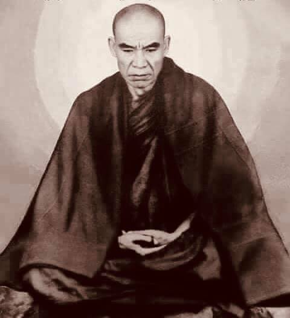
Thae Inn Gu Sayadaw U Ukkaṭṭha
Sayadaw U Ukkaṭṭha was born in 1913 in a village of Maw-be town not far from Rangoon (Yangon) on the way to Mingaladon Airport. He was named Moung Aung Tun by the parents. When he was young not interested in study and only has very basic education. According to his talk he was married twice and had a wife in his village and the other in Rangoon. He separated his time in these two places. During the time of farming, he stayed at his village. After the cultivation, he lived with the other wife in Rangoon. He lived his life as an alcoholic, gambler, a professional thug and robber. He spent some time in prison for his crimes.
At the age of 46, when he was in Rangoon, he went with two accomplices to rob a house at night. It seemed that the owner of the house knew their plans and waited for them with a long knife. When he was leading the others and entering the house and attached by the man inside. The knife fell on his head, and he fell down with his buttock on the floor. The man did not strike again, that they ran out for their lives. He was wearing a hat on that occasion, and it saved his life. This life-threatening incident let him have strong saṃvega. After healing his wounds, he returned to the village with his wife's book, which was about the life and practice of Soon Loon Sayadaw's. From that time on, he observed the nine precepts and confined himself to a room in the village monastery; he then diligently practiced meditation according to the book.
We can read about his life and practice in the following translation of his some Dhamma talks which include four talks here. The first talk had no date and place, but it seems to be at his Thae Inn Gu meditation center in Maw-be. It was requested by a lay disciple, and it took more than three hours long. It mentioned his life from young boy to until his practice up to arahant. The 2nd talk is in 1964 at University Dhammasāla and about the practice from stream enterer to arahant. The last two talks are in 1968 at Mye-nigon Dhammasāla. The first talk on the practice of becoming a sotāpanna and the other to become an arahant.
Sayadaw possessed a clear and good voice. Sometimes his talks were like reciting poems and had a smooth and continuous flow. He knows nothing about the Suttas, and he left it to the reader to decide whether some of his interpretations of the Dhamma are in accordance with the Suttas. Sayadaw talked the Dhamma according to his seeing and understanding.
本書講述的是兩位緬甸僧人——塔因古尊者優‧鄔喀塔（Thae Inn Gu Sayadaw U Ukkaṭṭha）與尊者優‧真帝馬（或譯：三帝馬，Sayadaw U Candima / Sandima）的故事。兩位皆是緬甸著名的禪修導師。優‧鄔喀塔尊者於1973年圓寂，享年六十歲；優‧真帝馬尊者目前仍健在，年逾七旬。他們的生命歷程各具特色，亦引發我們對佛法的省思。
他們並非學問型的僧人，甚至對佛陀的教法也所知不多。在修行之前，他們只是如同多數一般佛教徒那樣的傳統信仰者。然而，他們之所以與眾不同，是因為他們具備過去世所培植的波羅蜜（pāramī），並懷有強烈的「法怖畏」（saṃvega，對生死流轉的智慧警覺），甚至能為了佛法而犧牲自己的生命。
優‧鄔喀塔尊者於1913年出生在靠近仰光（現稱仰光）的茂比鎮（Maw-be）附近的一個村落，就位於通往明加拉頓機場的路上。父母為他取名為「昂吞」（Moung Aung Tun）。年幼時，他對學習毫無興趣，僅受過最基本的教育。
根據他自己的說法，他曾結過兩次婚，一位妻子在村裡，另一位在仰光。他在這兩地分配時間：耕作期間住在村裡，農事結束後則與仰光的妻子同住。他曾過著酗酒、賭博、甚至從事暴力與搶劫的生活，是一名職業流氓與罪犯，也因此曾被關進監獄服刑。
他46歲那年，在仰光時，與兩名同夥夜間前往一處住宅行竊。看來屋主早已得知他們的計劃，手持長刀守在屋內。當他領著同伴進屋時，被屋主襲擊，長刀砍在他的頭上，他當場跌坐在地。然而，屋主並未再補刀，他們得以逃命。他當時頭戴帽子，正好保住性命。這次與死神擦肩的經歷，激起了他強烈的法怖畏之心。傷癒後，他帶著妻子的書返回村中，那本書講述的是順隆尊者（Soon Loon Sayadaw）的生平與修行。
自此之後，他開始受持九戒，並閉關於村中寺院的一間房裡，依據書中的教導精進禪修。
關於他的生平與修行，可從以下幾篇法談譯文中一窺全貌。本書收錄了其中四篇開示。第一篇無明確日期與地點，推測應是在茂比的塔因古禪修中心，係由一位在家弟子請求所說，全場超過三小時。內容從他年幼時的生活談起，一直講到證得阿羅漢的修行歷程。第二篇開示於1964年在大學法堂（University Dhammasāla），內容講述從入流者（sotāpanna）到阿羅漢的修行過程。最後兩篇開示於1968年在緬儂（Mye-nigon）法堂，一篇關於如何成為入流者，另一篇則是如何證得阿羅漢。
尊者說法語調清晰悅耳，有時像在吟誦詩句般，聲音流暢綿延。他對經藏並無涉獵，因此他對佛法的詮釋是否符合佛經，則交由讀者自行判斷。他所說之法，皆根據自身的體驗與智慧所見。
～～～～～～～～～～～～～～～～～～～～～～～～～～～～～～～
本書介紹兩位緬甸僧侶——泰因谷尊者伍烏卡塔（Thae Inn Gu Sayadaw U Ukkaṭṭha）與尊者伍坎迪瑪（Sayadaw U Candima，又稱桑迪瑪）。他們兩位都是緬甸知名的禪修老師。尊者伍烏卡塔於一九七三年圓寂，享年六十歲。尊者伍坎迪瑪至今仍健在，已年逾七旬。他們兩位的人生都充滿興味，並能啟發我們對佛法的省思。他們並非學者型的僧侶，甚至對佛陀的教法所知不多。在修行之前，他們如同大多數的佛教徒一般，只是傳統的佛教信徒。他們與眾不同之處在於，他們具備過去生累積的波羅蜜（pāramīs）、強烈的厭離感（saṃvega，明智的急迫感），並且能夠為了佛法而捨棄生命。
尊者伍烏卡塔於一九一三年出生於毛比鎮（Maw-be town）的一個村莊，該村莊離仰光（Yangon）不遠，位於前往明加拉頓機場（Mingaladon Airport）的路上。他的父母為他取名為芒昂吞（Moung Aung Tun）。他年輕時對學習不感興趣，只受過非常基礎的教育。根據他自己的說法，他結過兩次婚，一位妻子住在他的村莊，另一位住在仰光。他將時間分配在這兩個地方。在農忙時節，他住在村莊；農耕結束後，他就與住在仰光的另一位妻子同住。他的人生曾是個酒鬼、賭徒、職業流氓和強盜，也曾因犯罪入獄服刑。
四十六歲那年，當他在仰光時，他與兩名同夥在夜間闖入一戶人家行竊。屋主似乎早已知曉他們的計畫，並持長刀等候。當他帶領同夥進入屋內時，遭到屋內的人襲擊。刀子砍中了他的頭部，他臀部著地摔倒在地。那人沒有再攻擊，他們便倉皇逃命。當時他戴著帽子，帽子救了他一命。這次危及生命的事件讓他產生了強烈的厭離感。傷勢痊癒後，他帶著妻子的書回到村莊，那本書是關於孫倫尊者（Soon Loon Sayadaw）的生平與修行。從那時起，他開始遵守九戒，並把自己關在村莊寺院的一個房間裡；然後，他依照書中的內容精進地禪修。
我們可以從以下他的一些佛法開示的翻譯中了解他的生平與修行，這裡收錄了四次開示。第一次開示沒有日期和地點，但似乎是在他位於毛比的泰因谷禪修中心。是一位在家弟子請求開示，時間長達三個多小時。內容提及了他從童年到修行直至證得阿羅漢的經歷。第二次開示是在一九六四年於仰光大學的法堂（University Dhammasāla），內容是關於從入流（stream enterer）到阿羅漢的修行。最後兩次開示是在一九六八年於苗尼貢法堂（Mye-nigon Dhammasāla）。第一次開示是關於如何修習成為入流者，另一次則是關於如何修習成為阿羅漢。
尊者的聲音清晰洪亮。有時他的開示像是在吟誦詩歌，流暢而連貫。他對經藏一無所知，至於他對佛法的一些詮釋是否符合經藏，則留給讀者自行判斷。尊者根據他自己的所見所聞和理解來闡述佛法。
Sayadaw U Candima (Sandima)
Sayadaw U Candima (Sandima) was born in 1952 at Ta-khun-dine Village, Ta-nat-pin town, Pe-gu district, north of Rangoon. He has two elder sisters before he was born. So, his mother desired a baby boy. One night during sleep, she had a strange dream. In the dream, the Buddha and some arahants came for alms-food to the house. After she gave the foods to the Buddha and waiting for the monk to open his bowl cover. Then the monk opened the bowl and took a baby from inside and gave it to her. She received it with her shoulder cloth and looked the baby. It was a boy, and it made her in joy. Then she woke up from the dream. At the young age, he was a genius and had a highly developed mind. At the age of five or six, every day at night he asked his mother to light a candle on the shrine for him. He would sit cross-legged in front of the Buddha statue for some time every day. He went to bed in this way.
Furthermore, he saw people around him suffered from ageing, sickness and death which made him sadness and fright. Likewise, he asked his mother how to overcome these human sufferings. At the age of 10 or 11, one day he went inside an empty clothes cupboard and laying down there. He imagined himself as a dead person and reflecting as one day I would also die in this way. He saw his body slowly becoming bloated and loathsome. A very strong putrid smell came out from the body and becoming unbearable for him. After he let go of his mind, and it became normal again.
He finished his high school, but we do not know he continued to his study or not. At the age of 23, his mother engaged a village girl for him. Then one day, his family members took him to Mingaladon (an area where Rangoon Airport exists) where a Thae Inn Gu branch monastery has offered a nine days retreat for temporary ordained monks. They did not tell him anything about it. Sayadaw did not make the reason behind this matter very clear. To me, that looks a lot like the Thai tradition; men are ordained as monks for a short period of time before they start their family life. But anyhow, after the nine days retreat, he continued his monk life for life. He practiced diligently over one year and entered the stream. It was quite remarkable because he knew nothing about the Dhamma on practice and did not have a qualified teacher to train him.
We can read about his life and practice in the following translation of his some Dhamma talks and some samādhi teachings he trained the yogis. After the practice, he kept quiet about it for 20 years without giving talks or teaching people. Now he has his own meditation center in Aung-Lan town, Pye District, north of Rangoon (in the British Colonial time known as Prome City).
These two biographies can be called audio—autobiographies. It is very rare to read someone's practice in such detail as this, from sotāpanna to arahant. U Candima talked about his practice even more details. Their lives and practices are inspiring for all Buddhists. The teachings of the Buddha and ancient Chinese sages not only changed some people to become great men and women in the past but also up to this present day. It is only if we take these teachings faithfully and seriously and put it into action. It will improve our lives and develop our mind. At the end, I will make an overview reflection on their lives and practices. Mogok Sayādawgyi’s Dhamma talks help me a lot to understand the Dhamma clearly and profoundly. I hope that these translations of the Dhamma will help Buddhist practitioners understand the essence of the Four Noble Truths and their practice.
Here I want to express my thank and gratitude to people who help and support me in this project—Nanda, A-Liang, Mun-A et al. Without them, it will not come into existence.
尊者優‧真帝馬於1952年出生於仰光北方的卑謬省塔那彬鎮（Ta-nat-pin）下轄的塔昆丁村（Ta-khun-dine Village）。在他出生之前，已有兩位姊姊，因此母親非常渴望能得一子。
某晚夢中，她做了一個奇異的夢：夢見佛陀與幾位阿羅漢前來家中接受供養。當她將食物供奉給佛陀後，便等待其中一位比丘打開缽蓋。當比丘打開缽蓋後，竟從缽中抱出一名嬰兒，並遞給她。她以肩上的披巾接過那嬰兒一看，是個男孩，令她欣喜萬分，隨即從夢中醒來。
真帝馬尊者自幼即天資聰穎，心智能力發展得非常成熟。在他五、六歲時，每晚都會請母親在佛壇上點燃蠟燭。他每天都會盤腿坐在佛像前一段時間，然後才去睡覺。
此外，他見到周遭人們遭受老、病、死之苦，心中感到哀傷與恐懼，便詢問母親：人為何會遭此苦患？又當如何解脫？在十歲或十一歲時，有一天他走進一個空的衣櫥中，躺臥其中，想像自己已經死去，並觀想有一天自己也會這樣死亡。他觀見自己的身體逐漸腐爛、腫脹、變得可憎，甚至發出強烈惡臭，使他幾乎難以忍受。直到他放下念頭，心才慢慢恢復正常。
他完成了中學學業，但之後是否繼續升學則不得而知。23歲時，母親替他與村中一位女子訂了婚。後來某天，家人帶他前往明加拉頓地區（即仰光機場所在之地），該地有一間塔因古分支道場，正舉辦為期九天的短期出家禪修營。他的家人並未告知他任何詳細內容。尊者本人對此事的原委並未說明清楚。但依我看來，這頗像泰國的傳統風俗——男子在建立家庭之前，會短期出家修行。然而，不論原由為何，在那次九天的短期禪修結束後，他便選擇繼續過出家生活，終身為僧。他努力修行了一年多，即證得入流果（sotāpanna），這是極為難得的成就，尤其是在他幾乎對佛法一無所知，也無合格導師指導的情況下。
關於他的生平與修行，我們可從後續所附的幾篇法談譯文與部分他教授禪修者的定學教導中獲得了解。值得一提的是，在證果之後，他保持沉默長達二十年，未對人說法或教導他人。如今，他在仰光北方卑謬省的翁蘭鎮（Aung-Lan）擁有自己的禪修中心。該地在英殖民時期稱為「卑謬城（Prome City）」。
這兩篇傳記可謂是「語音自傳」。在現今世間，能讀到有人將從入流果到阿羅漢的修行歷程記錄得如此詳盡，實屬罕見。真帝馬尊者對其修行歷程的描述更是鉅細靡遺。他們的人生與修行歷程，對所有佛教徒而言，皆是極具啟發與鼓舞的典範。
佛陀與古代中國聖賢的教誨，不僅曾經塑造出過去偉大的男女行者，也依然持續在當代發揮力量。然而，這只有在我們真誠信受並實踐時，它們才會轉化我們的生命，提升我們的心智。
最後，我將對這兩位尊者的生命與修行做一綜合省思。莫哥尊者（Mogok Sayādawgyi）的法語在我理解佛法時幫助甚大，使我能更清晰與深入地體會佛陀教法。我亦希望這些法談譯文，能幫助佛法修行者理解四聖諦的核心義理與實踐方向。
在此，我謹向所有協助與支持我完成此計畫的人表達由衷的感謝與敬意——Nanda、A-Liang、Mun-A 等人。若無他們的協助，本書將無法問世。
～～～～～～～～～～～～～～～～～～～～～～～～～～～～～～～
尊者伍坎迪瑪（Sayadaw U Candima，又稱桑迪瑪）於一九五二年出生於仰光北部卑謬區（Pe-gu district）達那彬鎮（Ta-nat-pin town）的達坤丁村（Ta-khun-dine Village）。在他出生前，家裡已有兩個姊姊，因此他的母親渴望能生個男孩。某夜，她在睡夢中做了一個奇特的夢。夢中，佛陀和一些阿羅漢前來她家托缽。她供養食物給佛陀後，便等待著僧人打開缽蓋。接著，那位僧人打開缽，從裡面取出一個嬰兒，並交給了她。她用肩上的布接過嬰兒，仔細一看，是個男孩，這讓她非常喜悅。然後她就從夢中醒來了。他從小就天資聰穎，心智發展極佳。五、六歲時，他每天晚上都會要求母親在佛龕上為他點燃蠟燭。他每天都會在佛像前盤腿坐上一段時間，然後才去睡覺。
此外，他看到周遭的人們飽受衰老、疾病和死亡之苦，這讓他感到悲傷和恐懼。同樣地，他也曾問母親如何才能克服這些人生的苦難。十歲或十一歲時，有一天，他走進一個空衣櫥，躺在裡面。他想像自己是個死人，並反思自己有一天也會這樣死去。他看到自己的身體慢慢腫脹、腐爛，散發出令人作嘔的氣味，讓他難以忍受。放下這些念頭後，他的心才恢復平靜。
他完成了高中學業，但我們不清楚他是否繼續升學。二十三歲時，他的母親為他訂了一門親事，對象是村裡的一位女孩。有一天，他的家人帶他去了明加拉頓（仰光機場所在地），那裡有一個泰因谷的分支寺院，為短期出家的僧侶提供九天的閉關。他們事先沒有告訴他任何相關事宜。尊者本人也沒有很清楚地說明這件事背後的緣由。在我看來，這很像泰國的傳統；男子在成家立業之前會短期出家一段時間。但無論如何，在九天的閉關結束後，他選擇終身為僧。他精進修行了一年多，便證得了入流果。這相當了不起，因為他對佛法的修行一無所知，也沒有合格的老師指導他。
我們可以從以下他的一些佛法開示以及他指導瑜伽行者的禪定教導的翻譯中了解他的生平與修行。修行之後，他保持沉默了二十年，沒有說法或教導他人。現在，他在仰光北部卑謬區的翁蘭鎮（Aung-Lan town，英國殖民時期稱為勃固城Prome City）擁有自己的禪修中心。
這兩篇傳記可以稱之為有聲自傳。如此詳盡地記錄一個人從入流到阿羅漢的修行過程，實屬罕見。伍坎迪瑪尊者甚至更詳細地談到了他的修行。他們兩位的人生與修行都啟發了所有佛教徒。佛陀的教導和古代中國聖賢的智慧，不僅在過去改變了一些人，使他們成為偉人，直至今日依然如此。只有當我們真誠而認真地接受這些教導，並付諸實踐，才能改善我們的生活，發展我們的心智。最後，我將對他們兩位的人生與修行做一個總體的反思。莫哥尊者（Mogok Sayādawgyi）的佛法開示對我清晰而深刻地理解佛法有很大的幫助。我希望這些佛法的翻譯能幫助佛教修行者理解四聖諦的精髓及其修行。
在此，我要向在這項計畫中幫助和支持我的人們——南達（Nanda）、阿良（A-Liang）、慕安（Mun-A）等人表達我的感謝和感激。沒有他們，這本書就不會誕生。
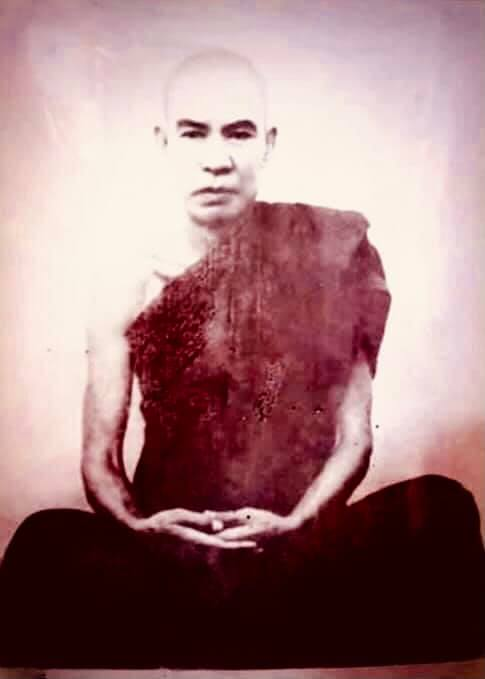
Thae Inn Gu Sayadaw U Ukkaṭṭha
(1913-1973)
Burmese monks are often known by the name of the place where the Buddhist temple they preside over is located. It seems to me Thae Inn Gu monastery is a cave monastery surrounded by four lakes. This also mentioned by Sayadaw in one of his talks. Sayadaw gave a three-hour talk, referring to his life and practice. This was requested by a lay supporter for the future generation to come. Sayadaw’s talk was as follows:
He was born in 1913 at Naw-gon village in Maw-be town area. At his time, it did not have modern school system in most villages. So, most village children of boys and girls attended the monastery school, where the monks taught them reading and writing. In the beginning he said that when he was going very lazy to attend the village monastery school and not interested in learning. And very often he ran away from school. Even he could not recite the Maṅgala Sutta which most village children would do. He was also afraid of speaking to the monk because monks had influence and respect by villagers. At the age of 14, he told his father not wanting to study and after six months he took a wife. (Later in this talk, Sayadaw mentioned that he had two wives). This was a Karen wife from the village. The Karen is the 2nd larger ethnic group in Burma.
“In the past, I only relied on kamma (i.e., the law of action) and especially on the wholesome merit of dāna (giving). I had done a lot of them before. It’s not the real refuge. After one has done his kammas, he will experience suffering (dukkha). The concepts of Buddha, Dhamma and Saṅgha can’t do anything for us. Now, for the present, I only rely on the real Buddha, Dhamma and Saṅgha (the term "real" here refers to the paramattha—exact Buddha, Dharma and Saṅgha.) Even conventional Dhamma can’t send one to heavenly realm. Dying with a concept (i.e., a wrong view) is more likely to become a hell being, an animal, and a ghost. With the wholesome results arise, we receive the happiness of human and deity. With the unwholesome results, we fall into the plane of misery (apāya).
The Buddha taught us not to think about the past, the present and the future. For 46 years I had relied on the stone images of the Buddha, the Shwe-ta-gon Pagoda, the Dhamma in the piṭaka (Buddhist Text Books) and the ordinary saṅgha of the conventional world. When I understand the truth and only rely on the real Buddha, Dhamma and Saṅgha of the supramundane reality (lokuttara province). But before you reach to the other shore (i.e., Nibbāna Element, from sotāpanna to arahant) don’t reject on kamma (actions) and the conventional truth. There are two provinces of truth—convention and reality (sammuti-sacca and paramattha-sacca).
In the past before not knowing these things I only relied on kamma. If I had died at that time, I would have definitely met dukkha. At the time of death, the Buddha can’t send us to heavenly and brahma-god realm, and to Nibbāna. When the five khandhas (i.e., Mind and body) perish the stone Buddha, Shwe-ta-gon and Shwe-maw-dhaw Pagodas can’t send us to good destinations (sugati). (The Shwe-maw-dhaw Pagoda is located in Pegu (or Pagoh) and is one of the famous pagodas in Burma.) Why is that? Because all these are concepts. Therefore, you all should do a lot of wholesome kammas before arriving to the other shore. Even the saints (from sotāpanna to anāgāmi) who still have ignorance (avijjā), they are doing merit all the same.
I don’t have any book knowledge on study about the practice and its result. But I have completed in regard to practice and its result. When I was contemplating the khandha (i.e., mind and body), the samādhi light was shining on it and wisdom analysing it as this is mind, body, wholesome and unwholesome dhammas, etc. And then the path knowledge (i.e., The Noble Eightfold Path) made the decision on it. On practice I know all the mind states (i.e., mind with mental states). Before I believed in the Buddha, Dhamma and Saṅgha and building monastery making merits. It is dependent on kamma, and if its results are not arisen at the time of death, then it will still sink in misery.
In his youth, he was a rough and tough guy, but had good nature. He had sympathy and concern for others. If someone came and asked for help, he would help people as much as he could. If he lent money to people and never asked the money back (easily let go of things). He never observed the precepts (sīla) but never took people lives (these are related to his life as a robber). He had done a lot of dāna and built a monastery in his village. After finishing the monastery, the monks invited him for the merit ceremony, but he rejected it and said as it was enough. So, he had a sharp mind and determined nature. (it makes me remember Mogok Sayadaw’s talks on the character of someone who has the view of annihilation).
He had committed some crimes (maybe robbing, but Sayadaw not mentioned it), and was put into jail for seven years. This happened around 1934 or 1935 when he was 21. It was close to the 2nd world war in 1941, the Japanese Army entered Burma from the south via Kanchanaburi west of Bangkok, Thailand. In 1942 Rangoon had fallen into the Japanese Army. Sayadaw told about his life during the prison years as followed.
塔因古尊者 優‧鄔喀塔
（1913–1973）
緬甸的僧人通常以其所住持寺院所在的地名作為稱號。就我所知，「塔因古寺」（Thae Inn Gu）是一處由四個湖泊環繞的洞穴寺院，這一點在尊者的某次開示中亦有提及。尊者曾應一位在家弟子的請求，為後世留下了一場長達三小時的開示，內容詳述其生命歷程與修行歷程。尊者的開示如下：
他於1913年出生於茂比鎮轄下的鬧貢村（Naw-gon）。當時，大多數村落尚無現代學校體系，村中男女孩童多在寺院學校接受僧人教授識字與閱讀。然而，尊者一開始對就學毫無興趣，常常逃課，對學習也極為懶散。甚至連村裡大多數孩童都能背誦的《吉祥經》（Maṅgala Sutta），他也背不起來。他也很害怕與僧人說話，因為村民對僧人極為敬重與畏服。十四歲時，他告訴父親自己不想再讀書，半年後便與一名女子成婚。（在後段開示中，尊者提及自己後來有兩位妻子。）這位妻子是村中的克倫族（Karen）女子，克倫族為緬甸第二大民族。
「過去，我只依靠業（kamma）——尤其是佈施（dāna）所積的善業。我曾廣行佈施，心想那就夠了。但那不是究竟的依止處。當一個人行善之後，仍會受苦（dukkha）。佛、法、僧的名相（概念）無法真正幫助我們。如今，我唯依真實的佛、法、僧（三寶），這裡的『真實』指的是究竟義（paramattha）——即超越世俗概念的佛、法、僧。即使是世俗佛法，也無法導人升天。若死時執著名相（即錯見），反而更可能墮入地獄、畜生或餓鬼道。善業果成熟時，才有機會得人身或天身；若是惡業果報成熟，則墮入四惡趣（apāya）。
佛陀教導我們，不應執著於過去、現在與未來。我過去四十六年來，所依止者僅是石雕佛像、瑞光大金塔（Shwe-da-gon Pagoda）、三藏中的法句，以及世俗僧團。後來我見到了真理，才轉而唯依出世間（lokuttara）領域的真實佛、法、僧。但在抵達彼岸（涅槃）之前——從入流至阿羅漢的歷程中——不應輕視業與世俗真理。真理有兩層境界：世俗真理（sammuti-sacca）與究竟真理（paramattha-sacca）。
過去我尚未理解這些道理時，只依賴業。如果那時死去，必定仍落於苦中。臨終之際，佛陀不能將我們送至天界、梵天界，更不能令我們證得涅槃。當五蘊（身心）壞滅之時，石雕佛像、瑞光與瑞茂多大金塔（Shwe-maw-dhaw Pagoda，位於卑謬，緬甸著名佛塔）亦無法助我們往生善趣。為什麼呢？因為這些皆是名相，是概念。是故，諸位應於尚未抵彼岸之前，多作善業。即便是已證入流至不還果的聖者，因仍有無明（avijjā）未盡，也仍然繼續行善。
我對修行與其果報沒有什麼書本知識，但就實踐與證果而言，我已徹底完成。我觀照五蘊（身心）時，定光現前，智慧分析其為：此是心、此是身，這是善法、這是不善法，等等。接著，道智（即八正道）便於其上作決擇。於實修中，我能了知一切心境（即各種心與其心所）。我過去對佛、法、僧深信不疑，亦建寺修福。但這仍是依靠業力，若臨終之際果報未成熟，仍將沉沒於苦趣中。」
年輕時，他性格剛強粗獷，但本性善良，樂於助人。若有人來請求幫忙，他總盡力而為；即便借錢出去，也不追討——對財物極為淡泊。他從未正式持戒（sīla），但也未曾殺生（與其從事強盜生涯有關）。他曾廣行佈施，並親手於村中建造一座寺院。寺成之後，僧人邀請他參加落成的功德法會，但他婉拒了，並說已夠了。可見他心思敏銳，意志堅定。（這讓我想起莫哥尊者在談「斷見者性格」時的說法。）
他年輕時犯下數項罪行（可能是搶劫，尊者未明言），因此入獄服刑七年。這大約發生在1934或1935年，當時他約21歲。不久即將爆發第二次世界大戰，1941年日軍由泰國華富里（Kanchanaburi）進入緬甸南部，1942年仰光淪陷。尊者曾敘述其入獄期間的經歷如下：
～～～～～～～～～～～～～～～～～～～～～～～～～～～～～～～
泰因谷尊者伍烏卡塔 （1913-1973）
緬甸的僧侶通常以他們所住持的佛寺所在地而聞名。在我看來，泰因谷寺似乎是一座被四個湖泊環繞的洞穴寺院。尊者也在他的一次開示中提及此事。尊者進行了一場長達三小時的開示，內容涉及他的人生經歷和修行。這是一位在家護法為了後代子孫而請求的。尊者的開示如下：
他於一九一三年出生於毛比鎮轄下的瑙貢村（Naw-gon village）。在他那個年代，大多數村莊都沒有現代化的學校系統。因此，大多數村莊的男孩和女孩都在寺院學校就讀，由僧侶教導他們讀寫。他一開始說，他以前非常懶惰，不想去村里的寺院學校，對學習也沒有興趣。而且他經常逃學，甚至連大多數村里孩子都會背誦的吉祥經（Maṅgala Sutta）他都背不出來。他也害怕與僧侶說話，因為僧侶在村民中擁有影響力和尊重。十四歲時，他告訴父親他不想讀書，六個月後他就娶妻了（稍後在這次開示中，尊者提到他有兩個妻子）。這位是村里的克倫族妻子。克倫族是緬甸第二大民族。
「過去，我只依賴業力（kamma，即行為法則），尤其依賴布施（dāna）的善業功德。我以前做了很多布施。但那不是真正的皈依處。一個人造作了業之後，終將體驗到苦（dukkha）。佛、法、僧的概念對我們沒有任何實際作用。現在，就當下而言，我只皈依真正的佛、法、僧（這裡的『真正』指的是勝義諦的佛、法、僧）。即使是世俗諦的佛法也不能引導人們前往天界。帶著錯誤的見解（邪見）死去，更有可能轉生為地獄眾生、動物或鬼。隨著善業的果報生起，我們獲得人天之樂；隨著不善業的果報，我們墮入惡道（apāya）。
佛陀教導我們不要思慮過去、現在和未來。四十六年來，我一直依賴佛像、瑞光大金塔（Shwe-ta-gon Pagoda）、三藏中的佛法（piṭaka，佛教經典）以及世俗世界的普通僧團。當我理解真理並只皈依超世間（lokuttara）的真佛、真法、真僧時，情況才有所不同。但在你到達彼岸（即涅槃界，從入流者到阿羅漢）之前，不要否定業力（行為）和世俗諦。真理有兩個層面——世俗諦（sammuti-sacca）和勝義諦（paramattha-sacca）。
過去，在不了解這些道理之前，我只依賴業力。如果我當時就死了，肯定會遭受痛苦。死亡之時，佛陀無法送我們到天界、梵天界，也無法送我們到涅槃。當五蘊（即身心）壞滅時，石雕佛像、瑞光大金塔和雪摩多佛塔（Shwe-maw-dhaw Pagoda）都無法引導我們前往善趣（sugati）。（雪摩多佛塔位於勃固（或巴果），是緬甸著名的佛塔之一。）為什麼呢？因為這些都只是概念。因此，你們在到達彼岸之前，都應該多造善業。即使是聖者（從入流者到不還者），他們仍然有愚癡（avijjā），但他們仍然在造作功德。
我沒有任何關於修行及其結果的書本知識。但在修行及其結果方面，我已經圓滿了。當我觀照五蘊（即身心）時，禪定的光明照耀著它，智慧分析它為心、身、善法、不善法等等。然後，道智（即八正道）對此做出了決斷。在修行方面，我了解所有心所（即具有心理狀態的心）。以前我信仰佛、法、僧，並透過建造寺院來積累功德。這依賴於業力，如果其果報在死亡時沒有顯現，那麼仍然會沉淪於苦難之中。
他年輕時是個粗獷強悍的人，但本性善良。他對他人有同情心和關懷。如果有人來尋求幫助，他會盡其所能地幫助他們。如果他借錢給別人，從不追討（很容易放下事物）。他從未遵守戒律（sīla），但從未奪取他人的生命（這與他作為強盜的生活有關）。他做了很多布施（dāna），並在他的村莊建造了一座寺院。寺院建成後，僧侶邀請他參加功德慶典，但他拒絕了，說這樣就夠了。因此，他擁有敏銳的頭腦和堅定的性格。（這讓我想起莫哥尊者關於具有斷滅見者的性格的開示）。
他曾犯下一些罪行（可能是搶劫，但尊者沒有提及），並因此入獄七年。這發生在大約一九三四年或一九三五年，當時他二十一歲。那時已接近一九四一年爆發的第二次世界大戰，日軍從泰國曼谷以西的甘加那汶里經由南方進入緬甸。一九四二年，仰光淪陷於日軍之手。尊者講述了他在獄中的生活如下。
First, he was sent to Oak-pho prison, which may be not far from his birthplace. And then moved to Hanzada prison and Bassein prison, which were in the delta area. Bassein prison was a labour prison, and he had to weave 16 mattresses per day. From there he was moved to Maok-palin prison, which also a labour camp. There he had to break rocks into the sizes of pebble eight dins per day.
(This is a Burmese measurement for rice and beans, one din = six cans of condensed milk, eight dins=48 tin cans of condensed milk.)
That is a big number. It was quite a rough and tiresome task, and he had to break the dynamited rock fragments into pebble size. Sometimes it hit the bodily parts, especially legs, and became injuries and wounds. If someone could give the money, he can stop to do it, or reduce the numbers. This was a prison in lower Burma. When the Japanese Army arriving in Burma he was in hope for freedom, instead he and the other prisoners were moved to Mandalay prison in central Burma. Their ankles were shackled with iron chains and sent by train to Mandalay.
After three months in the prison, all the prisoners were free because of the war and Japanese air force bombing Mandalay city. He and other six companions walked to the east of Yan-kin Taung (i.e., a well-known hill rage at near Mandalay city, it is also a spiritual place for practitioners). There they met some Buddhist yogis who had taken refuge there to escape the bombing. They were fed and spent the night at the place. In the morning, a Chinese Buddhist gave them each seven kyats (the currency of Burma). They resumed their journey towards Sel-taw-gyi area (means Big Canal) which was in the west of Yan kin Taung.
They arrived at Big Canal in the afternoon and took a rest near a village called Forty Miles Village which had a ceti named Shwe-tha-lyaung (Reclining Buddha). Furthermore, they took a nap under a mango tree and woke up in the evening. A rich man from Mitthila City met them. He had a house in the village and came here for temporary to escape the war from Mitthila (Mitthila is in the south of Mandalay and a big city and has a big lake which also has the same name.) He was looking for someone who could help him to go and get the money and some gemstones which were left behind at his big house in Mitthila. Likewise, he was observing seven of them and preferred U Aung Tun (Sayadaw’s lay name) among them.
According to Sayadaw, the Mitthila Boss chose him because he said very little and kept quiet. He invited all of them to his house for the night. At night, the boss came to see U Aung Tun and spoke to him. He told him that the time was not very safety, and he could encounter dukkha. So, he told him to stay here for a while, and when the Japanese army arrived in Mandalay, he would send him back to Rangoon by Japanese train. U Aung Tun thought that if he met dukkha, he would never see his parents again. Therefore, he agreed to leave behind.
In the morning, the other six continued their journey, and the boss gave them some money. According to Sayadaw these men’s mind was also unwholesome. They had a plan of robbing and killing people on the way. In the end, they met with death themselves. In the evening, the boss came and gave the news to him. He said that these six men encountered some villagers at a place called Small River (Myit-nge). The villagers were waiting for released prisoners who would come to their place. Because sometime before, some released prisoners attacking and robbing them when they arrived here. They arrested these six men and bound their hands behind their backs and threw them all into the river.
He confirmed to say that if U Aung Tun went with them would meet the same fate. Myit-nge River is passing through Amarapura area and Mogok Sayadaw’s birthplace is on the bank of this river. U Aung Tun stayed with the boss for three months, and when Mandalay became calm down again, the boss took him to Mittila. (The British Army and government staffs retreated to upper Burma when the Japanese Army advancing.)
The boss had two houses there, one of the houses was destroyed by bomb and only with the walls were intact. The other house had two safes, and the one in the kitchen was opened and empty. U Aung Tun was using an axe demolished the wall behind the safe which was in the guest room and took out some money and gemstones it could be filled a tin can. The boss gave him 700 dollars (kyats) with some clothes and put him on a train to Rangoon. From there he arrived back to his home in Maw-be.
Sayadaw said that he had two wives (as U Aung Tun), one in the village and the other in Rangoon (this one was a Burmese woman). At village, he did farming and in Rangoon doing nothing.
(Maybe sometime he did the robbing if the chances arose to help his companions. We will see one of these incidents later).
He stayed at each place for a month. When he was in Yangon, he was always with some of his friends, and it was difficult for him to be without them. He was used to it. Sayadaw did not say what he was doing with them. It could be that he was drinking intoxicants and gambling with these people. His wife disappointed with these situations.
他最初被送往奧波監獄（Oak-pho prison），該地可能距其出生地不遠。之後，又被轉送至位於三角洲地區的漢薩達監獄（Hanzada prison）與勃生監獄（Bassein prison）。其中，勃生監獄是一座勞役監獄，他每天必須編織十六張草蓆（mattresses）。接著，他又被轉往毛巴林監獄（Maok-palin prison），同樣是一所勞役營。在那裡，他每天要將炸裂的石塊敲碎成鵝卵石大小，總量達八「丁」（din）。
（註：這是緬甸傳統的容量單位，常用於米與豆類的計量。一丁約等於六罐煉乳的容量，八丁則等於四十八罐煉乳的容量。）
這是個龐大的數量，工作極其粗重又疲憊。他必須將爆破後的石塊敲成細碎的鵝卵石。有時碎石會擊中身體部位，特別是腿部，導致瘀傷與創傷。如果有人能付錢，就可以免除或減少這項勞役。該監獄位於緬甸南部。當日軍進入緬甸時，他原以為有望獲釋，結果卻與其他囚犯一同被轉送至緬甸中部的曼德勒監獄。他們的腳踝被鐵鍊鎖住，以火車押送至曼德勒。
在監獄中關押了三個月後，因戰爭爆發及日軍空軍轟炸曼德勒市，所有囚犯獲得釋放。他與另外六名夥伴向曼德勒市附近的顏金山（Yan-kin Taung，一座著名的靈修之地）東方地區步行而去。他們在那裡遇見了一些避難的佛教修行者（yogis），受到招待並在當地過夜。翌日早上，一位華人佛教徒給他們每人七緬元（Kyat），他們便繼續啟程，前往位於顏金山西邊的「色陶吉」（Sel-taw-gyi，意為「大運河」）地區。
他們於午後抵達大運河，並在名為「四十哩村」（Forty Miles Village）附近稍事休息，該村有一座名為瑞他梁（Shwe-tha-lyaung，臥佛像）的佛塔。之後，他們在一棵芒果樹下打盹，直到傍晚才醒來。這時，一位來自彌提羅（Mitthila）的富人遇見了他們。該富人為躲避戰火，暫時從彌提羅搬至此地，在村中另有一處住所。彌提羅位於曼德勒以南，是一座大城市，也有一個同名的大湖。
該富人正在尋找一位可以幫助他回到彌提羅取回金錢與寶石的人，這些財物仍存放在他的大宅中。觀察他們七人後，他特別中意昂吞先生（即尊者在家時的名字，U Aung Tun）。
據尊者所說，該名富人之所以選擇他，是因為他沉默寡言、不多話。當晚，富人邀請他們全體前往其宅中過夜。夜裡，富人單獨找來昂吞談話。他告訴他，如今時局不安，若繼續與其他人同行，恐將遭遇苦難（dukkha）。因此，他建議昂吞暫時留在此地，待日軍進佔曼德勒後，會安排他搭乘日軍火車返回仰光。昂吞心想，若遇難，將永遠無法再見父母，於是同意留下。
翌日早晨，其餘六人繼續旅程，富人亦給了他們一些金錢。尊者說，這些人的心意本就不善，途中打算搶劫並殺害路人。最終，他們反而自食惡果而喪命。當晚，富人向他通報消息：那六人途經一處名為「小河」（Myit-nge）的村莊，村民早已等候釋放的囚犯經過。原來先前有些釋囚路過時搶劫當地村民，故此番村人早有防備，將這六人逮捕、綁起雙手後，全部投進河中。
富人肯定地說，如果昂吞也一同前行，結局必定相同。小河（Myit-nge River）流經阿瑪拉普拉（Amarapura）地區，正是莫哥尊者（Mogok Sayadaw）出生地的河流。
昂吞隨富人住了三個月，待曼德勒局勢穩定後，富人帶他前往彌提羅。（註：當時英軍與政府人員在日軍逼近時已撤往緬甸上部。）
富人在當地有兩棟房子，其中一棟遭炸毀，只剩牆壁尚存。另一棟的廚房保險櫃已被打開且空無一物；客廳的保險櫃則尚未被動。他使用斧頭敲開該牆後方，取出金錢與寶石，多到足以裝滿一罐煉乳大小的容器。富人給了他七百緬元與一些衣物，便安排他搭火車回仰光。他最終返回茂比的家中。
尊者說他當時有兩位妻子，一位在村中（克倫族），另一位則是仰光的緬族女子。在村中時，他務農；而在仰光則無所事事。
（或許他偶爾會從事搶劫行為，以幫助同伴。我們稍後會看到其中一件事件。）
他每地各住一個月。在仰光時，他總是與幾位朋友形影不離，離不開這個團體。尊者未明言他們在一起從事何事，但很可能是飲酒作樂與賭博。這些行為令其仰光的妻子感到非常失望。
～～～～～～～～～～～～～～～～～～～～～～～～～～～～～～～
首先，他被送到奧波監獄（Oak-pho prison），那裡可能離他的出生地不遠。然後又被轉移到位於三角洲地區的漢札達監獄（Hanzada prison）和勃生監獄（Bassein prison）。勃生監獄是一所勞動監獄，他每天必須編織十六張床墊。從那裡他又被轉移到毛帕林監獄（Maok-palin prison），那也是一個勞動營。在那裡，他每天必須將炸碎的岩石敲成八丁大小的鵝卵石。
（這是一種緬甸用於測量米和豆的單位，一丁等於六個煉乳罐，八丁等於四十八個煉乳罐。）
這是一個很大的數量。這項工作相當粗重和疲憊，他必須將炸藥炸碎的岩石碎片敲成鵝卵石大小。有時石頭會擊中身體部位，尤其是腿部，造成受傷和創口。如果有人能付錢，他就可以停止這項工作，或者減少工作量。這是下緬甸的一個監獄。當日軍抵達緬甸時，他曾希望獲得自由，但相反地，他和其它的囚犯被轉移到緬甸中部的曼德勒監獄。他們的腳踝被鐵鍊鎖住，然後被火車運往曼德勒。
在監獄待了三個月後，由於戰爭和日本空軍轟炸曼德勒市，所有囚犯都被釋放了。他和另外六個同伴步行前往延金山（Yan-kin Taung）以東（延金山是曼德勒市附近一座著名的山脈，也是修行者的靈修之地）。在那裡，他們遇到了一些為了躲避轟炸而避難於此的佛教瑜伽行者。他們在那裡獲得了食物並過夜。早上，一位華裔佛教徒給了他們每人七緬元（緬甸的貨幣）。他們繼續前往延金山以西的塞陶吉地區（Sel-taw-gyi area，意為大運河）。
他們下午抵達大運河，並在一個名為四十英里村（Forty Miles Village）的村莊附近休息，該村莊有一座名為雪塔良（Shwe-tha-lyaung，臥佛）的佛塔。此外，他們在一棵芒果樹下小睡，傍晚醒來。一位來自密提拉市（Mitthila City）的富人遇到了他們。他在村裡有一棟房子，為了躲避密提拉的戰爭而暫時來到這裡（密提拉位於曼德勒以南，是一個大城市，有一個同名的大湖）。他正在尋找可以幫助他回到密提拉的大房子裡拿回錢和一些寶石的人。同樣地，他觀察了他們七個人，並偏愛伍昂吞（U Aung Tun，尊者的俗名）。
根據尊者的說法，密提拉的老闆選擇他是因為他話很少，保持沉默。他邀請他們所有人到他家過夜。晚上，老闆來看伍昂吞並與他交談。他告訴他現在局勢不太安全，他可能會遇到苦難。所以，他告訴他暫時待在這裡，等日軍抵達曼德勒後，他會用日本火車送他回仰光。伍昂吞心想，如果他遇到苦難，他可能再也見不到父母了。因此，他同意留下來。
早上，其他六個人繼續他們的旅程，老闆給了他們一些錢。根據尊者的說法，這些人的心也是不善的。他們計劃在路上搶劫和殺害他人。最終，他們自己也遭遇了死亡。傍晚，老闆來告訴他這個消息。他說，這六個人在一個叫小河（Myit-nge）的地方遇到了一些村民。村民們正在等待獲釋的囚犯來到他們的地方。因為不久前，一些獲釋的囚犯來到這裡時，襲擊並搶劫了他們。他們逮捕了這六個人，將他們的手綁在背後，然後把他們都扔進了河裡。
他肯定地說，如果伍昂吞和他們一起去，也會遭遇同樣的命運。米永河（Myit-nge River）流經阿瑪拉布拉地區（Amarapura area），莫哥尊者的出生地就在這條河的岸邊。伍昂吞和老闆一起住了三個月，當曼德勒再次平靜下來後，老闆帶他去了密提拉。（當日軍推進時，英國軍隊和政府人員撤退到了上緬甸。）
老闆在那裡有兩棟房子，其中一棟被炸彈摧毀，只剩下牆壁完好無損。另一棟房子有兩個保險箱，廚房裡的那個已經打開，空無一物。伍昂吞用斧頭拆掉了客廳保險箱後面的牆壁，取出了一些錢和寶石，大約可以裝滿一個煉乳罐。老闆給了他七百緬元和一些衣服，然後送他上了去仰光的火車。從那裡，他回到了毛比的家。
尊者說他（作為伍昂吞時）有兩個妻子，一個在村裡，另一個在仰光（這位是緬甸女子）。在村裡，他務農，在仰光則無所事事。
（也許有時他會為了幫助同伴而進行搶劫，如果機會出現的話。我們稍後會看到其中一個事件。）
他在每個地方待一個月。當他在仰光時，總是和一些朋友在一起，沒有他們他很難適應，他已經習慣了。尊者沒有說他和他們一起做什麼。很可能他與這些人一起喝酒和賭博。他的妻子對這種情況感到失望。
One day, his wife got angry with him (probably because of an argument) and went to a meditation retreat for seven days. This was Min-goon Meditation Center which taught the Mahāsi system of dry insight. The meditation teacher was a layman named Sayagyi U Myat Thein Tun, he was a disciple of Min-goon Thathon Jetavana Sayadaw who was also the teacher of Mahāsi Sayadaw. U Aung Tun also heard about that he was teaching the system of touching, touching; hearing, hearing; etc. When the body touching another part of body and knowing as—knowing, knowing. Maybe he got this misinformation from his friends. After his wife had come back from retreat, he asked her about these things. His wife’s response was it was the teaching by a Buddhist monk. U Aung Tun knew that he was insulting his wife and the monk and asking forgiveness from her. Here we know U Aung Tun’s strong saddhā and respect on the Buddha, Dhamma and Saṅgha.
The second time when she came back from retreat and brought a book with her. This was a Dhamma book on Soon Loon Sayadaw’s Biography and his teachings. She asked him to read this book and told him that Sayadaw was a farmer before, and with the practice, he became an arahant. When he read a few pages of the book on ānāpāna practice, a strong pīti (rapture) arose in his body and mind. With this strange experience, he decided that he must realize Dhamma if he practiced. So, he wrapped the book with a new paper and kept it in a drawer. It's been in the drawer for two years. Another strange thing that happened to him was the two observant days (uposatha), the full moon and the new moon. On these occasions, every early morning (mostly before the sun arises or the dawn periods) a Nibban Sor was going every street reminding and urging Buddhists to get up early doing the Dhamma duties of the day to come.
Nibban Sor can be one person or two people. If there is only one person, he will carry a small Burmese Dhamma bell which has flat shape and made of brass iron hanging with string on the top of the bell. The other hand carries a wooden hammer. He will chant some Dhamma verses in Pāli or in Burmese with a louder voice to remind and urge people to get up early doing pujas, bhāvanā, preparing foods for the saṅgha, etc., and then he will strike the bell. If there are two persons, on their shoulders, they carry a pole with a bigger bell hanging in the middle of it. The one in the back has to strike the bell. When U Aung Tun heard the sound of the Dhamma bell and the Dhamma chanting it made him strong rapture arising.
[Note on Nibban Sor: This is a very old Buddhist tradition and even we can trace it source as far as to the Buddha Kassapa’s time. Most Burmese Buddhists heard about Mahādug (the short form of Mahāduggata), a very poor man. One day there was an offering to the Buddha and his saṅgha and a Nibban Sor went to every part of the city to inform the people. He met Mahāduggata on the street, and he urged Mahāduggata to make an offering. Even though he had no money and gave the promise to offer dāna for one Bhikkhu. So, he worked harder on that day. But Nibban Sor thought that Mahāduggata could not offer for a saṅgha therefore he did not put him on the list. When the time came Mahāduggata went to the monastery for a saṅgha.
Only the Buddha was without a donor. Everyone there was expecting for the Enlightened one. On that day the Buddha entered the state of Nirodha-samāpatti. When he came out with the bowl, he handed it to Mahāduggata. The day onwards he became a rich man. This was the past life story of novice Pandita who was seven years old arahant. This practice may now be extinct in Burma. This practice is connecting with appamāda—heedfulness. It should be maintained in the Buddhist communities as a Dhamma practice and duty. I have seen a lot of benefits from it.]
One day an incident changed U Aung Tun’s life totally. That day, one of his friends came to him for help, because he needed some money. So, he and two men went to rob a house that night. Usually, he never wore a hat, but luckily on that day wore a thick hat. At that time, he had no desire for the task but anyhow he wanted to help his friend. In an area they saw a house in a compound with the front door was opened. They went in, and suddenly it was raining and came out again. They walked a distance for some time and returned to the same place. Likewise, they entered the same house again. Usually, U Aung Tun held a gun and entered a house, but this time he did it blindly. When arriving inside, a man holding a long knife struck him on the head and suddenly, he fell down with his buttocks hitting the floor. But the man was holding the knife and looking at him instead of another strike. The other two pulled him up and ran out for their lives.
It seems to me the man in the house saw their suspicious behaviors in the house and waiting for them with his knife. According to Sayadaw, the knife cut through two or three finger lengths (it could include with the thickness of the hat). One of the two friends took him to his house to spend the night and treated his injury. Six days later, even before he had fully recovered from the knife wound to his head, he told his wife that he would return to the village and does the practice. His wife was very glad about it and gave him a lot of encouragement. Sayadaw said that his wife at Kamayut (i.e., in Rangoon) was the main person who guided him to the practice.
U Aung Tun returned to his home village with the book he kept in a drawer two years ago. He observed the nine precepts from the village monk and shut himself up in a small room of the monastery sīmā. On day 5, he frequently fell to the ground from a sitting position due to changes in the four elements of his body and severe pain. He had to repay his negative kammic debts. Only the practicing yogis know about these things. Some people suffer a great deal from the element of heat (heat element) when they are on the verge of death, and this kind of element is what will kill him.
U Aung Tun was very tough and determined person, he would not change his body and posture. He would follow the dukkha vedanā (the feeling of pain) until finally even he fell down. After that, he would resume his sitting posture again. On the 9th day, he returned to his home and observed the eight precepts. In this talk, Sayadaw did not mention his first realization (i.e., Sotāpanna). In a biography after his death, however, it is mentioned that the first realization was on the 6th day of his practice—12th September 1959.
有一天，他與妻子爭吵後，妻子憤而離家，前往一處為期七天的禪修營。那是敏貢（Min-goon）禪修中心，教授的是「馬哈希系統」的乾觀法門（dry insight）。禪師是一位在家居士，名為賽雅基‧優‧妙忒因吞（Sayagyi U Myat Thein Tun），他是敏貢他敦祇多林尊者（Min-goon Thathon Jetavana Sayadaw）的弟子，亦即馬哈希尊者（Mahāsi Sayadaw）的老師。
當時昂吞先生（U Aung Tun）也聽聞這位禪師教授一種方法，類似於「觸、觸；聞、聞」的修法，即身體觸碰到某部位時，心中觀知「知、知」——這可能是他從朋友那裡聽來的錯誤訊息。當妻子從禪修營回來後，他詢問她有關這些方法的事。妻子回答說，那是由一位佛教僧人所教導的。這讓他意識到自己先前的言語是在貶低妻子與僧人，便向她道歉。由此可見，昂吞對佛、法、僧三寶有著深厚的信心（saddhā）與敬意。
第二次妻子從禪修返回時，帶回一本書，是關於順隆尊者（Soon Loon Sayadaw）的傳記與法語教導。她請他閱讀這本書，並告訴他，這位尊者原本也是農夫，因為修行而證得阿羅漢果。當他讀到幾頁有關出入息念（ānāpāna）的章節時，身心中立刻生起強烈的喜悅（pīti）。這段奇異的經驗使他深信，只要修行就能證悟佛法。於是，他將這本書包上新紙，小心收藏在抽屜中，一放就是兩年。
接著，又有一件異事發生。每逢兩個觀察日（uposatha）——即每月的滿月與新月清晨（多在日出前或黎明時分），總有一種被稱為「涅槃使者」（Nibban Sor）的人會穿梭街巷，提醒與勸誡佛教徒起床，履行當日應行的佛法責任。
這種「涅槃使者」可能是一人，也可能是兩人組成。若是一人，他會手持一面平形的緬式佛教鐘（以黃銅製成，上方掛繩），另一手拿著木槌，邊敲邊唱誦巴利文或緬文的法句，以高聲提醒大家早起禮拜、禪修、準備供僧等佛事；若是兩人，則會肩扛一根橫竿，中間掛有一口較大的法鐘，由後方一人負責敲擊。每當昂吞聽到這種法鐘與法音之聲，就會在內心升起強烈的法喜。
【關於「涅槃使者」的註解：這是一項古老的佛教傳統，可追溯至迦葉佛（Buddha Kassapa）時代。多數緬甸佛教徒都聽說過「大貧者」（Mahāduggata）的故事。有一天，佛陀與僧團將接受供養，一位涅槃使者在城中四處通報。途中遇見大貧者，勸他參與供養。儘管他一貧如洗，仍允諾要供養一位比丘，並為此努力工作。由於涅槃使者認為他無法供養整個僧團，便未將他列入名單。到了供養之時，只有佛陀無人供養。當天佛陀正入無想定（nirodha-samāpatti），出定後將缽遞給大貧者，接受他的供養。從此，大貧者轉而致富，成為未來七歲即證阿羅漢的沙彌班提達（novice Pandita）的前生。此一傳統如今在緬甸或已式微，但它與佛教強調的「不放逸」（appamāda）精神息息相關，值得佛教社群延續與實踐。我個人深受其益。】
某日，一件事件徹底改變了昂吞的一生。當時，他的一位朋友前來求助，表示急需一筆錢。於是他與兩人夜間前去搶劫一戶人家。平日他從不戴帽，但那天恰好戴了一頂厚帽。其實他對此次行動毫無興趣，純粹為了幫朋友而參與。
他們來到某處，看見一間院子裡的房子大門敞開，便進入，但隨即下起雨來，他們又離開。稍事走動後，他們竟又折返，進入同一所房子。以往進屋時，昂吞總是持槍先行，但這次他卻毫無防備地走入屋內。正當他進屋時，一名男子持長刀劈向他的頭部，他當場仰倒，臀部著地。但那人並未補刀，只是持刀站在一旁注視他。這時同伴趕緊將他拉起，三人急忙逃命。
看來那戶人家的主人早察覺他們的可疑行為，手持利刃守在屋內。據尊者描述，那刀劃破了兩三指寬的頭部（可能連同帽子厚度）。他的朋友將他帶回家中休息並處理傷口。六天後，尚未痊癒的他便對妻子說：「我要回村裡修行去了。」妻子非常歡喜，給予大力支持。尊者說，位於仰光嘉邁育區（Kamayut）的這位妻子，正是引導他走上修行之路的關鍵人物。
昂吞帶著兩年前收藏的那本書，返回家鄉。他向村裡的僧人受持九戒，並閉關於寺院的戒堂（sīmā）內的一間小房間中。修行第五天，他經常因四大變化與劇烈痛苦而從坐姿中跌倒。這是業障現前的痛苦，必須償還過去的惡業。唯有實修行者方知此中之苦。有些人在臨終前，體內火大猛烈升起，這種熱性會導致死亡，這就是他當時的經驗。
昂吞意志堅定，從不改變姿勢。他跟隨苦受（dukkha vedanā）修行，即使痛至跌倒，也仍會再次坐起，繼續修持。第九天，他返家並改持八戒。在這次開示中，尊者並未提及自己首次證悟（即入流果）的情況。但根據他死後的一份傳記記載，他的首次證悟是在修行的第六天——1959年9月12日。
～～～～～～～～～～～～～～～～～～～～～～～～～～～～～～～
有一天，他的妻子生他的氣（可能是因為爭吵），就去了一個為期七天的禪修營。那是敏貢禪修中心（Min-goon Meditation Center），教授馬哈希系統的內觀禪修。禪修老師是一位名叫沙亞季伍敏特丁吞（Sayagyi U Myat Thein Tun）的在家居士，他是敏貢塔通傑塔瓦納尊者（Min-goon Thathon Jetavana Sayadaw）的弟子，而敏貢塔通傑塔瓦納尊者也是馬哈希尊者的老師。伍昂吞也聽說他教導的是觸知、觸知；聽聞、聽聞等等的修行方法，當身體的一部分接觸到另一部分身體時，就知曉——知曉、知曉。也許他是從朋友那裡聽到了這些不正確的資訊。他的妻子從禪修營回來後，他問了她這些事。他妻子的回答是那是一位佛教僧侶的教導。伍昂吞知道他侮辱了他的妻子和那位僧侶，並向她請求原諒。由此我們可以看出伍昂吞對佛、法、僧的強烈信心（saddhā）和尊敬。
第二次她從禪修營回來時，帶回了一本書。那是一本關於孫倫尊者（Soon Loon Sayadaw）的傳記及其教導的佛法書籍。她請他閱讀這本書，並告訴他尊者以前是一位農民，但透過修行，他成為了一位阿羅漢。當他讀到書中關於安那般那念（ānāpāna）修行的幾頁時，強烈的喜悅（pīti）在他的身心生起。有了這種奇特的體驗，他決定如果他修行，一定能證悟佛法。於是，他用新紙包好這本書，把它放在抽屜裡。這本書在抽屜裡放了兩年。另一件發生在他身上的奇特的事情是兩個齋戒日（uposatha），即滿月和新月。在這些日子裡的每個清晨（大多在日出前或黎明時分），都會有一個「涅槃之聲」（Nibban Sor）走遍大街小巷，提醒並敦促佛教徒早起履行當天的佛法義務。
「涅槃之聲」可能是一個人或兩個人。如果只有一個人，他會攜帶一個小型的緬甸佛法鈴，這種鈴形狀扁平，由黃銅製成，鈴頂部用繩子懸掛。另一隻手拿著一個木槌。他會用較大的聲音吟唱一些巴利語或緬語的佛法偈頌，以提醒和敦促人們早起進行供養（pūjā）、禪修（bhāvanā）、為僧團準備食物等等，然後他會敲響鈴。如果有兩個人，他們會用肩膀扛著一根桿子，桿子中間懸掛著一個更大的鈴。後面的人負責敲鈴。當伍昂吞聽到佛法鈴的聲音和佛法的吟唱時，強烈的喜悅便會在他心中生起。
[關於涅槃之聲的註釋：這是一個非常古老的佛教傳統，我們甚至可以追溯到迦葉佛時代。大多數緬甸佛教徒都聽說過摩訶杜伽（Mahādug，摩訶杜伽塔Mahāduggata的簡稱），一個非常貧窮的人。有一天，有人為佛陀及其僧團供養，一位「涅槃之聲」走遍城市的每個角落通知人們。他在街上遇到了摩訶杜伽，並敦促摩訶杜伽進行供養。儘管他沒有錢，但他承諾供養一位比丘。於是，他那天更加努力地工作。但「涅槃之聲」認為摩訶杜伽無法供養僧團，因此沒有將他列入名單。供養的時間到了，摩訶杜伽前往寺院參加僧團的供養。
只有佛陀沒有施主。在場的所有人都期待著這位覺悟者。那天，佛陀進入了滅盡定（Nirodha-samāpatti）。當他出定後，拿著缽，將其遞給了摩訶杜伽。從那天起，他成為了一個富人。這是七歲就證得阿羅漢的潘迪達沙彌（novice Pandita）的前世故事。這種習俗現在可能在緬甸已經絕跡了。這種習俗與不放逸（appamāda）有關。它應該作為一種佛法修行和義務在佛教社群中得以保持。我從中看到了很多益處。]
有一天，一件意外徹底改變了伍昂吞的生活。那天，他的一位朋友來找他求助，因為他需要一些錢。於是，他和另外兩個人當晚去搶劫一戶人家。他通常不戴帽子，但幸運的是那天戴了一頂厚帽子。當時，他對這件事並沒有任何慾望，但無論如何他想幫助他的朋友。在一個區域，他們看到一棟房子，院子的大門敞開著。他們走了進去，突然下起了雨，於是又走了出來。他們走了一段距離後，又回到了同一個地方。同樣地，他們再次進入了同一棟房子。通常，伍昂吞會拿著槍進入房子，但這次他卻是盲目地做了。當他進入屋內時，一個拿著長刀的人砍了他的頭，他立刻臀部著地摔倒了。但那人拿著刀看著他，並沒有再次攻擊。另外兩個人把他拉起來，倉皇逃命。
在我看來，屋裡的人看到了他們在屋裡的鬼祟行為，並拿著刀等候他們。根據尊者的說法，刀劃過了兩三指的長度（可能包括帽子的厚度）。其中一個朋友帶他回家過夜，並處理了他的傷口。六天後，即使他頭部的刀傷尚未完全痊癒，他就告訴妻子他要回村修行。他的妻子非常高興，並給了他很多鼓勵。尊者說，他在卡瑪育（仰光的一個區）的妻子是引導他修行的主要人物。
伍昂吞帶著兩年前放在抽屜裡的那本書回到了他的家鄉。他向村裡的僧侶受持了九戒，並把自己關在寺院戒壇（sīmā）的一個小房間裡。第五天，由於身體四大元素的變化和劇烈的疼痛，他經常從坐姿跌倒在地。他必須償還他過去的負面業債。只有修行的瑜伽行者才知道這些事情。有些人臨終時會遭受巨大的熱元素（火大）之苦，而這種元素正是會奪走他們生命的。
伍昂吞是一個非常堅韌和堅定的人，他不會改變他的身體和姿勢。他會跟隨苦受（dukkha vedanā，疼痛的感受），直到最終跌倒。之後，他會再次恢復坐姿。第九天，他回到家，受持了八戒。在這次開示中，尊者沒有提到他的初次證悟（即入流）。然而，在他去世後的一篇傳記中提到，他的初次證悟是在他修行的第六天——一九五九年九月十二日。
Sayadaw continued his practice at home, where he often sat under the Sae-yoe tree (the name of a tree in Burma) in the garden of his eldest sister, Daw Bwa Sein. In the afternoon he went to the cemetery of Naw-gon Village where no-one could disturb him. After he had overcome the painful feeling (dukkha vedanā) he increased his effort for seven days in day and night without taking food. During sittings, many mosquitoes and gnats bit his whole body, and his white clothes were stained with blood. Maw-be area was very well-known for its mosquito bite.
After a month and three days (i.e., start from the beginning of the practice) by transcending the samādhi state, he arrived at vipassanā. Sayadaw mentioned his direct experience by reciting the Pāli words from the First Discourse—i.e., cakkhuṁ udapādi, ñāṇaṃ udapādi—vision arise, and knowledge arise. Then he talked about discerning of impermanence. “Mind and body are perishing as the boiling water, or broken apart like a big foam of water. Therefore, the body shape and concept disappear. And then the khandha element (i.e., body) reappear again as a serious wound. It is filled with white worms and is eaten by many worms—as I am seeing its arising and passing away by their eating. Later the body becomes bloated and rotten like a 10 or 15 day old corpse. Even I can hear its sounds with the ear. The putrid body liquid is flowing out from it, and also seeing the intestines and lung inside.
After that it is burnt by fire and all falling apart. By seeing all these events arising and passing away one by one, it reduces my sensual desire and lust (kāmarāga). It happens at day and night. If I look at someone, be it a man or a woman; all I see is its ugliness, and there is no beauty to be found. Whatever I am looking only seeing in these ways. At that time, I was in the stage of once returner (sakadāgāmī). I didn’t know about it at the time. Only later by reflection I knew it. (His second realization was on 10th October 1959. At this stage he could see and know other things with the samādhi power. This was recorded in his biography.) After over a month, I returned to Kamayut (i.e., in Rangoon).”
After three days had passed and a misfortune was fallen on him. Two crime inspectors came to his place and arrested him. It was the year of 1960, and it could be the period the military took control of the country for temporarily as a government because of instability around the country. Sayadaw mentioned this incident as followed:
“From Naypyidaw (that referred to the capital city) crime inspectors U Ko Ko Lay and U Maung Ko came to arrest me. My kammic debt (i.e., misfortune) is not finished yet. They searched my home and did not find anything which they were looking. So, they took me to follow them; and on the way, U Ko Ko Lay asked me, "Do you practice meditation?" I answered him; "Yes." He asked me again; "Do you know U Ba Yin?" At that time, I was only concerned with discerning the impermanence and answered him, "I don't know this person." His response was “You was practicing Dhamma and telling lie.”
We arrived at the crime inspection center, and Colonel Kyi Win was questioning me. After that, he told the officers to question me. That was asking them to beat me. They sent me to Insein Prison. (This is a well-known prison in Rangoon to question and torture criminals.) There, inspector Hla Myint was interrogating me. At the time my samādhi was good; discerning impermanence (his practice was on the way to anāgāmi), and I knew it. I have the kammic debt to pay. He asked me where the gun and the looted property were.
I answered him as “I don’t know anything” He said to me “If you don’t tell the truth you must die” My response was “This is up to you.”
U Aung Tun was handcuffed from behind and bound with rope around the arms. They put him down with his back on a wooden platform which was six inches thick. His two legs were also bound with rope. Two men controlled him at the head and the other two at the legs. Inspector Hla Myint sat on U Aung Tun’s stomach. They covered his face with a wet cloth and pouring water on it. Water went into his mouth, and it was quite unbearable. It was also difficult to breathe under the water, making a wah-wah-wah sound. Because of his samādhi power, U Aung Tun could bear it. With the practice of insight by seeing anicca after the ending of it and became quiet (it could be in the fruition state—phala). Hla Myint thought that I was in coma. I was not in coma, the water went in and the stomach rising up. When my stomach was full of water, Hla Myint with his buttocks pounded on my stomach four or five times and all the water came out from the mouth.
If I was like I used to be, I went into a rage. This time I didn't get angry. I suffered because of my karmic debt, only this mental state. For a month they could not get any confession from him and sent him back to Naypyidaw. Hla Myint told Colonel Kyi Win “I think it was a mistake. We can’t get any information from him.” Inspector U Ko Ko Lay was dissatisfied with it and wanting to do the questioning again. Kyi Win asked me, “I heard that you were bad before.” I answered him that I was bad before and not now and practicing Dhamma. Colonel Kyi Win asked them to free me, but U Ko Ko Lay did not want to free me. So, he sent U Aung Tun to Kamayut Police Station and put him in a cell. He is being arranged to have him sent to a distant prison. The police officer of the Kamayut Police Station knew U Aung Tun and sent him to Rangoon Prison. After seven days passed, Colonel Kyi Win freed him from the prison.
尊者（Sayadaw）繼續在家中修行，他經常坐在大姐多巴信（Daw Bwa Sein）家花園裡的一棵「賽友樹」（Sae-yoe，一種緬甸樹木）下禪修。午後，他則前往鬧貢村（Naw-gon Village）的墳場修行，那裡沒有人會打擾他。在克服了強烈的苦受（dukkha vedanā）後，他加倍努力修行，持續七天日夜不進食。打坐時，蚊子與蚋蟲叮咬全身，他穿的白衣都被鮮血染紅。茂比地區（Maw-be）原就以蚊蟲眾多聞名。
修行滿一個月又三天後（自開始修行起算），他超越了三摩地（samādhi）的境界，進入毘婆舍那（vipassanā）。尊者以巴利語誦出他親證的經驗，來自佛陀初轉法輪經中的句子：「cakkhuṁ udapādi, ñāṇaṁ udapādi」（意譯：慧眼生起，智慧生起）。接著他談到對無常的觀照：
「身心如沸水般消散，或如巨大的水泡破裂一般，剎那壞滅；因此，身形與一切概念皆消失。然後，色蘊再現，如同嚴重的傷口，內部滿是白色的蛆蟲，被許多蟲子啃噬——我親見牠們的生起與滅去。之後，身體腫脹腐爛，如同一具死去十天或十五天的屍體，甚至耳中可聽聞聲響。腐敗的體液從體內流出，亦可見腸與肺等內臟。」
「再之後，身體被火焚燒，化為灰燼。我一一見到這些現象的生滅，令我對欲愛（kāmarāga）與五欲生起極大厭離。無論晝夜皆如此。當我望向任何人——不論男女——所見皆是醜惡不淨，毫無可愛之處。當時，我已處於一來果（sakadāgāmī）的階段，只是當時我尚未察覺，事後反觀才明瞭。」
（註：他第二次證悟的日期為1959年10月10日。此時他已具足三摩地之力，能見他事，傳記中亦有記錄。）
「修行一個多月後，我返回仰光嘉邁育（Kamayut）地區。」
三天過後，他遭遇一場災難。兩位刑警前來將他逮捕。當時是1960年，可能正值緬甸政局動盪、軍方暫時接管政權的時期。尊者對此事件的敘述如下：
「兩位來自奈比多（意指首都）的刑警，優‧哥哥列（U Ko Ko Lay）與優‧貌哥（U Maung Ko）前來逮捕我。我的業報尚未了結。他們搜查我的住所，但未發現所尋之物，於是帶我一同前往。路上，優‧哥哥列問我：『你有在修行嗎？』我答：『是的。』他又問：『你認識優‧巴音（U Ba Yin）嗎？』那時我只專注在觀無常上，便回答：『我不認識。』他說：『你在修法，卻說謊。』」
「我們抵達刑事調查處後，上校吉溫（Colonel Kyi Win）開始訊問我，然後命令下屬進一步偵訊，也就是命人毒打我。隨後我被送往仰光的伊因森監獄（Insein Prison），這是緬甸著名的監獄，用於審問與拷問罪犯。當時審問我的，是警官拉敏（Inspector Hla Myint）。那時我的三摩地很穩固，正在觀無常，我知道自己正處於不還果（anāgāmī）的修行進程。我明白，這是我過去業報的現前。他問我：『槍與贓物在哪裡？』我回答：『我什麼也不知道。』他說：『你若不說實話，就得死。』我回答：『這取決於你。』」
昂吞先生被反綁雙手，雙臂被繩索纏住。他背躺於一塊六英寸厚的木板上，雙腳也被綁住。兩人控制他的頭部，另兩人控制腳部。警官拉敏坐在他肚子上，並以濕布蓋住他的臉，不斷往上澆水。水流進口中，令人難以忍受，幾乎無法呼吸，只能發出「哇──哇──哇──」的聲音。然因為三摩地之力，昂吞能忍受這一切。在觀無常的修行中，當酷刑結束，他安住於靜定（可能是果定phala samāpatti）中。拉敏誤以為他已昏厥，但實際上他並未昏迷，只是肚子灌滿了水。
「當我的腹部漲滿水時，拉敏坐在我腹上連續撞擊四、五次，所有的水從口中噴出。若是以前的我，早已怒火中燒；但這次我毫無瞋心，只知這是業報所致，僅此心念而已。」
警方一個月內無法從他口中得到任何口供，只得將他遣返奈比多。拉敏向吉溫上校報告說：「我認為這是誤會，從他那裡什麼也問不出來。」然而，優‧哥哥列仍不滿意，想再審問一次。吉溫問我：「我聽說你以前是個壞人？」我答：「過去我確實不好，但現在不一樣了，我正在修行佛法。」上校吉溫遂下令釋放我，但優‧哥哥列仍不願放人，便將我轉送至嘉邁育警局，關進牢房，安排日後轉至外地監獄。
幸好嘉邁育警局的警官認識昂吞先生，便將他轉送仰光監獄。七天後，上校吉溫下令將他釋放。
～～～～～～～～～～～～～～～～～～～～～～～～～～～～～～～
尊者在家繼續修行，經常坐在他大姊杜瓦盛（Daw Bwa Sein）花園裡的塞優樹（Sae-yoe tree，緬甸的一種樹）下。下午，他會去瑙貢村的墓地，在那裡沒有人會打擾他。當他克服了痛苦的感受（dukkha vedanā）後，他更加努力地修行了七天七夜，沒有進食。在禪坐時，許多蚊子和小蟲叮咬他的全身，他白色的衣服沾滿了血跡。毛比地區以蚊蟲叮咬而聞名。
一個月零三天後（即從開始修行算起），他超越了禪定（samādhi）的狀態，進入了內觀（vipassanā）。尊者透過背誦初轉法輪經（First Discourse）中的巴利語來描述他的直接體驗——即「cakkhuṁ udapādi, ñāṇaṃ udapādi」——眼生起，智生起。然後他談到觀照無常。「身心像沸騰的水一樣不斷地消逝，或像一大塊水泡一樣破裂。因此，身體的形狀和概念消失了。然後，蘊的元素（即身體）再次出現，像一個嚴重的傷口。它充滿了白色的蟲子，並被許多蟲子啃食——我看到它們的生起和滅去，隨著蟲子的啃食而變化。之後，身體變得腫脹腐爛，像一具十天或十五天前的屍體。我甚至可以用耳朵聽到它的聲音。腐臭的體液從裡面流出來，我也看到了裡面的腸子和肺。
之後，它被火燒毀，一切都散落開來。透過一一看到所有這些事件的生起和滅去，它減少了我的感官慾望和貪愛（kāmarāga）。這種情況日夜發生。如果我看著某人，無論是男人還是女人；我所看到的都只是它的醜陋，找不到任何美麗。無論我看什麼，都只看到這些景象。那時，我處於一還果（sakadāgāmī）的階段。當時我並不知道，只是後來透過反思才明白。（他的第二次證悟是在一九五九年十月十日。在這個階段，他可以藉由禪定的力量看到和知道其他事物。這在他的傳記中有記載。）一個多月後，我回到了卡瑪育（仰光的一個區）。」
三天後，一場不幸降臨在他身上。兩名刑事偵查員來到他的住所並逮捕了他。那是一九六零年，當時可能正值軍方因國內局勢不穩而暫時接管政府的時期。尊者如下描述了這件事：
「來自奈比多（當時指首都）的刑事偵查員伍郭郭雷（U Ko Ko Lay）和伍芒郭（U Maung Ko）來逮捕我。我的業債（即不幸）還沒有結束。他們搜查了我的家，但沒有找到他們要找的東西。於是，他們帶我跟他們走；在路上，伍郭郭雷問我：『你修行禪定嗎？』我回答說：『是的。』他又問我：『你認識伍巴因（U Ba Yin）嗎？』當時，我只關心觀照無常，就回答他說：『我不認識這個人。』他的回答是：『你修行佛法卻說謊。』
我們到達了刑事偵查中心，季溫上校（Colonel Kyi Win）正在審問我。之後，他告訴警官們審問我，那其實是叫他們毆打我。他們把我送到了永盛監獄（Insein Prison）。（這是仰光一所著名的監獄，用來審問和拷打罪犯。）在那裡，偵查員拉敏（Hla Myint）正在審訊我。當時我的禪定很好；正在觀照無常（他的修行正朝向不還果），我知道這一點。我有業債要償還。他問我槍和贓物在哪裡。
我回答他說：『我什麼都不知道。』他對我說：『如果你不說實話，你就必須死。』我的回答是：『這由你決定。』
伍昂吞被反手戴上手銬，手臂被繩子捆綁起來。他們把他仰面放在一個六英寸厚的木板上。他的兩條腿也被繩子綁住。兩個人控制著他的頭部，另外兩個人控制著他的腿部。偵查員拉敏坐在伍昂吞的肚子上。他們用濕布蓋住他的臉，然後往上面倒水。水流進了他的嘴裡，非常難以忍受。在水下也很難呼吸，發出哇哇哇的聲音。由於他的禪定力量，伍昂吞能夠忍受。在這種情況結束後，他透過觀照無常的內觀修行，恢復了平靜（可能進入了果位——phala）。拉敏以為我昏迷了。我沒有昏迷，水進去了，肚子鼓了起來。當我的肚子充滿水時，拉敏用他的臀部在我肚子上重擊了四五次，所有的水都從嘴裡吐了出來。
如果我像以前一樣，我會勃然大怒。但這次我沒有生氣。我因為我的業債而受苦，只有這種心態。一個月後，他們無法從他那裡得到任何供詞，就把他送回了奈比多。拉敏告訴季溫上校：『我想是弄錯了。我們無法從他那裡得到任何資訊。』偵查員伍郭郭雷對此不滿意，想再次審問。季溫問我：『我聽說你以前很壞。』我回答他說我以前很壞，但現在不是了，而且正在修行佛法。季溫上校命令他們釋放我，但伍郭郭雷不想釋放我。於是，他把伍昂吞送到卡瑪育警察局，把他關進了牢房。他們正安排把他送到一個偏遠的監獄。卡瑪育警察局的警官認識伍昂吞，就把他送到了仰光監獄。七天後，季溫上校把他從監獄釋放了。」
As soon as U Aung Tun was free and going back to his village. He asked his family members (brothers and sisters) to build a Kuti for him, and he would do the practice. They build the kuti in the Hte-yo woods—the base has eight pillars and the floor has six planks, forming a square. U Aung Tun interpreted it as—eightfold paths, six elements and four noble truths. He made a determination; “I must realize Dhamma.” so he was practising hard without rising from his seat.
“I am seeing the dissolution of the phenomena. However, I still cannot distinguish between paññatti (concept) and paramattha (ultimate reality). The body becomes putrid and bloated, burn with fire. These are concepts appearing in the mind. So, it’s not free from the concept yet. After some time, free from the mental factor of the concept and the concept of solidity and shape disappear, and it becomes fine particles. And then l only see the dissolution of the atomic paramattha matter. With them the desire of seeing, hearing, smell, … knowing mind not arise. It’s still not crossing into the path knowledge of a non-returner (anāgāmi) yet. I sat a lot, it is not very good on the release of my stomach. I go to the toilet only once every seven or ten days, and it makes me painful. One day I went inside the bamboo forest to release my stomach. With the contemplation of strong feeling arising in the body and it came to the ending of it.
[It was on 15th March 1960 and with the realization came the knowledge of seeing the six heavenly realms, the twenty brahma god realms and many hell existences up to the great hell (mahā-avici). This was in his biography.]
After the ending of saṅkhāra—conditioned phenomena. The mind went up to the sky and three to five minutes later it fell down again with the whole body became tense and stiff.
(We cannot interpret it literally; the mind can’t go here and there. This is a wrong view of a soul. The mind inclining towards somewhere. Later we can see this kind of expression with Sayadaw U Candima’s experience of Jhāna.)
With the reviewing knowledge that I know the realization of Nibbāna. With this knowledge I’ll become a Brahmā god if I die. With continuous reviewing I know that I will take rebirth in the highest pure abode—akaniṭṭha brahma. Before death, the noble path knowledge incline towards brahma god realm (these words relate to the 2nd sentence above). The unwholesome mental state or unwholesome mind (akusala citta) will incline towards painful realms (apāyabhūmi—such as hells, animals and hungry shades). I review my future birth with the knowledge and seeing the sandy area of Thae Inn Gu which is surrounding by four lakes at my village. There are other visions—a stupa, a vihāra, and my body in a glass coffin. I tell my family members (mother and brother—sister) about a golden stupa, the vihāra and this place becomes a town with high road.
I continued my practice and one night a brahma-god came and asked me to take the monastic robes (i.e., become a monk). I told him as I wouldn’t and asked him to leave. Sakka—the king of 33 gods and other brahmā-gods also came and requested me. “I don’t want to be in robes. This is up to me.” So, I asked them to leave. Next time, when they came and made a request, I told my mother and brother that this was the time for me to ordain as a monk. Yogi U Su Ya in Maw-be town sponsored my ordination. Many people know my struggle in the practice, but some don’t believe it (because he was quite bad in the past, had bad reputation in Maw-be area and was fear by rich men.)
He practiced quite hard and becoming thin and bony. “I was bitten by mosquito and gnats, and my white clothes were stained with red blood. Because of Dhamma rapture and happiness (pīti and sukha) I could bear it. With patience (khanti), I can practice not missing anything. If people practice in this way, they will also be able to achieve it. Some friends were telling me that I would die in this way. Even my yogis (yogis in his meditation center) can’t bear the mosquitoes’ bite and changing their bodies. They are obstructed by diṭṭhi (i.e., self-view). How can they attain the Dhamma? If the ants are moving on their bodies and in closed eyes, they sweep it away with the hands.”
“After ordaining (i.e., 12th March 1961), I went alms-round and offered them to the monks. According to the monastic rules, there are duties of a monk. For example, cleaning the temple compound and burning leaves or garbage, but there are ants and other insects in there. If we ask laypeople to do it, it will be like killing them too. In this case, it is best to do it by yourself. I have abandoned the defilement of sensual desire (kilesa-kāma) of the six senses of doors (as a non-returner). Defilements are arising from these senses of doors. Therefore, I want to keep the mind on it original state, if not it affects the mind. If seeing something, and it becomes the five aggregates (khandha). I am afraid of it by knowing these things. Can a secular person know these things? The minds arising from the six senses of doors are leaded to suffering, and could a worldling knows it?”
(Here we can know the mind states of an anāgāmi and layman Visākhā is a very good example. U Kyaw Din—i.e., Soon Loon Sayadaw lay name, after becoming anāgāmi, he had a lot of difficulties and suffering to live with his wife.)
She also did not let him ordain as a novice. If we study the teachings of Mogok Sayadawgyi on paṭiccasamuppāda, we will know or understand these things very clear and profoundly. If you don’t know about the mind, don’t check it. If you want to do it, then simply check your own mind, otherwise it will harm oneself.
“After ordaining and it’s not good for my mind to stay here .” One day when he saw the assistant abbot was painting the monastery and advised him to ask a layman for the job. His response was “I was doing for the wholesome merit (saṅkhāra kusala dhamma)” It’s all right, he wants merit. But I don’t want it (It doesn’t mean ariyans would not do things to benefit to others.) When my teacher came back (the abbot) I asked him permission for going somewhere to practice. I also talked to him my situation here. Now I have attained three path knowledges that my seeing and knowing consciousness are changed. From stream enterer to non-returner are speaking in concepts. These referred to the changing levels of seeing and knowing.” He got permission from his teacher.
一獲釋後，昂吞先生（U Aung Tun）便返回故鄉。他請求兄弟姊妹幫他建一間茅舍（kuti），並表示他要專心修行。他們便在「梯優樹林」（Hte-yo woods）中為他建了茅舍，其基座有八根柱子，地板用六塊木板鋪成方形。昂吞先生對此作出象徵性詮釋：八根柱象徵八正道、六塊木板象徵六界（六大）、方形象徵四聖諦。他發下決心：「我一定要證悟佛法。」於是便精進修行，甚至不起身。
「我觀見法的壞滅（dissolution of phenomena），但仍無法分辨名言（paññatti）與究竟（paramattha）。身體腐爛腫脹，被火焚燒，這些都是心中的概念顯現，因此尚未離開概念的層次。經過一段時間，當心離開了概念作用時，形狀與堅實感消失，轉為細微的微粒狀。此時我所見者為究竟法中的色法壞滅。與之相應的見、聞、嗅……等『知心』皆不再生起。但這仍未跨越至不還果（anāgāmi）的道智。當時我打坐時間長，導致排便困難，七至十天才上一次廁所，非常痛苦。有一天，我走入竹林中排便，身體內強烈的感受生起，我以觀照持續至其止息。」
【註：這段經歷發生於1960年3月15日。據其傳記記載，當時他證悟並具備觀見六欲天、二十梵天界，乃至大阿鼻地獄（mahā-avīci）等境界的智慧。】
「在行蘊（saṅkhāra）止息之後，心升向空中，三至五分鐘後，又回落至身體，並使全身緊繃僵直。」
（這不應從字面理解，因為「心」無法真正移動至某處，此說若執為實有，即落入靈魂觀。實際上是「心傾向於某一境」，類似後來優‧真帝馬尊者（U Candima Sayadaw）於修定時所述的體驗。）
「我以審察智（paccavekkhaṇa ñāṇa）了知自己證悟了涅槃。藉此智我亦了知若死去，將生於梵天界。透過連續的審察，我確認未來將生於色究竟天——阿迦尼吒天（akaniṭṭha brahma）。在臨終時，聖道智會傾向於梵天界（這也呼應了前段所述）。若是惡心（akusala citta）現前，則會導向惡趣（地獄、畜生、餓鬼）。我觀察未來的生處，見到家鄉村落被四湖環繞的塔因古地區的沙地。此外，我還見到一座佛塔、一座寺院，以及玻璃棺內的自己。我將所見告訴母親與兄弟姊妹，說此地未來將有金塔與寺院，並會成為一座城鎮，道路寬闊發達。」
「我繼續修行。有一晚，一位梵天來請我出家披袈裟（即成為比丘）。我告訴他，我不願出家，請他離去。之後，三十三天王（帝釋）與其他梵天也來請求我出家。我回答：『我不想披袈裟，這是我的選擇。』於是我也請他們離開。下一次他們再來時，我便告訴母親與兄弟：『是時候出家了。』茂比鎮的禪修者優‧蘇雅（U Su Ya）贊助了我的出家儀式。許多人知道我在修行上的努力，但也有一些人不相信（因為我過去行為惡劣，在茂比地區名聲不好，連富人都怕我）。」
「我非常努力修行，瘦得皮包骨。『蚊與蚋叮咬我全身，白衣被鮮血染紅。因為法喜（pīti）與樂受（sukha），我能忍受這些。以忍辱（khanti）之力，我毫不缺失地持續修行。若有人能如是修行，也能達成此目標。我的一些朋友對我說：『你這樣會死掉的。』甚至我道場裡的禪修者們也無法忍受蚊蟲叮咬，總是不斷換動身體。他們被見解障礙（diṭṭhi）所阻礙，如何能證法？螞蟻在身上爬，他們閉著眼睛也要用手去掃掉。」
「1961年3月12日我出家後，我開始托缽化緣，並將所得供養僧團。根據戒律，出家人有清掃道場、焚燒落葉與垃圾等義務，但其中往往有螞蟻與其他眾生。若請在家人代勞，也等同間接殺生。因此，最好親自處理。我已斷除六根對六境的欲貪煩惱（kilesa-kāma），因為煩惱皆從六根生起。我希望守護此淨心本態，否則將擾動心識。見到任何境界，即是五蘊（khandha）顯現，我對此心生怖畏。凡夫能了知此理嗎？六根門所生之心皆導向苦，世人怎能明白？」
（由此我們得知一位不還果者的心境。居士毘舍佉（Visākhā）是一個良好對照例子。順隆尊者（Soon Loon Sayadaw）的在家名為優‧喬丁（U Kyaw Din），在證得不還果後，與妻子同住亦感受諸多困難與苦。）
「他的妻子甚至不允許他剃度成為沙彌。若能學習莫哥尊者（Mogok Sayadawgyi）對緣起法（paṭiccasamuppāda）的開示，對於此類法義將有更清楚深刻的理解。若不懂心的運作，就不要妄自探究；若真想了解，應只觀察自己的心，否則將導致傷害。」
「出家後，我覺得此地對我心不利。有一次我見到副住持在粉刷寺院，並建議他找在家人來做。他回應說：『我是在修善業（saṅkhāra-kusala-dhamma）啊！』這也沒問題，他想修福。但我不需要它（這並非表示聖者不行利他之事）。當我的導師（即住持）回來後，我便請求他讓我另赴他處修行，並向他敘述了我在此地的境遇。現在我已證得三道智，我的『見與知之心』已轉變。從入流至不還果之間，所言皆為名相（概念），它們指的是見與知的層次轉變。」
導師聽後，允許他前往他處繼續修行。
～～～～～～～～～～～～～～～～～～～～～～～～～～～～～～～
伍昂吞一獲得自由，回到村裡，就請家人（兄弟姊妹）為他建造一間茅棚（Kuti），他要在裡面修行。他們在特約樹林（Hte-yo woods）裡建造了茅棚——地基有八根柱子，地板有六塊木板，形成一個正方形。伍昂吞將此解釋為——八正道、六界和四聖諦。他下定決心：「我一定要證悟佛法。」於是，他努力修行，沒有離開他的座位。
「我看到諸法的壞滅。然而，我仍然無法區分名相（paññatti，概念）和勝義諦（paramattha，究竟實相）。身體變得腐爛腫脹，被火焚燒。這些都是心中出現的概念。所以，還沒有脫離概念。過了一段時間，脫離了概念的心所，堅固和形狀的概念消失了，它變成了微細的粒子。然後我只看到原子性的勝義諦物質的壞滅。隨著它們的壞滅，見、聞、嗅……知的心也不生起。但還沒有進入不還者（anāgāmi）的道智。我坐了很久，對我的排便不太好。我每七到十天才上一次廁所，這讓我感到痛苦。有一天，我走到竹林裡排便。在觀照身體中強烈感受的生起和滅去時……」
[那是一九六零年三月十五日，隨著證悟的到來，他獲得了看到六欲天、二十梵天以及許多地獄的存在，直到大阿鼻地獄（mahā-avici）的知識。這是他的傳記中記載的。]
在行（saṅkhāra，有為法）滅去之後，心升到空中，三到五分鐘後又落了下來，整個身體變得緊張僵硬。
（我們不能從字面上解釋它；心不能到處移動。這是常見的靈魂的錯誤觀念。這裡是指心傾向於某個方向。稍後我們可以從伍坎迪瑪尊者禪那的經驗中看到這種表達方式。）
透過審視的智慧，我知道我證悟了涅槃。有了這個知識，如果我死了，我將成為梵天。透過不斷的審視，我知道我將投生到最高的淨居天——阿迦膩吒梵天（akaniṭṭha brahma）。臨終時，聖道之智傾向於梵天界（這些話與上面的第二句有關）。不善的心所或不善的心（akusala citta）將傾向於痛苦的境界（apāyabhūmi——如地獄、畜生和餓鬼）。我以智慧審視我未來的投生，看到我村莊泰因谷周圍被四個湖泊環繞的沙地。還有其他的景象——一座佛塔、一座精舍，以及我的身體在一個玻璃棺材裡。我告訴我的家人（母親和兄弟姊妹）關於一座金色的佛塔、精舍，以及這個地方將會變成一個有大路的城鎮。
我繼續修行，有一天晚上，一位梵天來請求我穿上僧袍（即出家為僧）。我告訴他我不會，並請他離開。帝釋（Sakka，三十三天之主）和其他梵天也來請求我。「我不想穿僧袍。這由我決定。」所以我請他們離開。下次他們來請求時，我告訴我的母親和兄弟，這是我出家為僧的時候了。毛比鎮的瑜伽士伍蘇亞（Yogi U Su Ya）贊助了我的出家。許多人都知道我修行過程中的艱辛，但有些人不相信（因為他過去很壞，在毛比地區名聲很差，富人都害怕他）。
他非常努力地修行，變得瘦骨嶙峋。「我被蚊子和小蟲叮咬，白色的衣服沾滿了紅色的血跡。因為佛法的喜悅和快樂（pīti和sukha），我能夠忍受。憑藉耐心（khanti），我可以毫無遺漏地修行。如果人們以這種方式修行，他們也能夠成就。有些朋友告訴我，我會這樣死去。甚至我的瑜伽士（他禪修中心的瑜伽士）都無法忍受蚊蟲的叮咬而改變他們的姿勢。他們被邪見（diṭṭhi，即我見）所障礙。他們如何才能證悟佛法呢？如果螞蟻在他們的身上和閉著的眼睛上爬行，他們會用手掃掉。」
「出家後（即一九六一年三月十二日），我去托缽，並將食物供養給僧侶們。根據僧團的規定，僧侶有其義務。例如，打掃寺院的院子和焚燒落葉或垃圾，但那裡有螞蟻和其他昆蟲。如果我們請在家居士做，那也像是殺害它們。在這種情況下，最好自己做。我已經捨棄了六根門（作為不還者）的欲欲染污（kilesa-kāma）。染污從這些根門生起。因此，我想保持心在它原來的狀態，否則它會影響心。如果看到什麼，它就會變成五蘊（khandha）。我知道這些事，所以我害怕它。一個世俗的人能知道這些事嗎？從六根門生起的心會導致痛苦，一個凡夫俗子能知道嗎？」
（在這裡我們可以了解不還者的心態，在家居士毘舍佉是一個很好的例子。伍喬定——即孫倫尊者的俗名，在成為不還者後，與妻子同住遇到了很多困難和痛苦。）
她也不讓他出家為沙彌。如果我們學習莫哥尊者關於緣起的教導，我們將會非常清晰而深刻地了解這些事情。如果你不了解心，就不要去檢查它。如果你想做，那就簡單地檢查你自己的心，否則會傷害自己。
「出家後，待在這裡對我的心不好。」有一天，他看到副住持在粉刷寺院，建議他請一位在家居士來做這項工作。他的回答是：「我正在做善業功德（saṅkhāra kusala dhamma）」。好吧，他想要功德。但我不要（這並不意味著聖者不會做有益於他人的事情）。當我的老師（住持）回來後，我請求他允許我去某個地方修行。我也告訴了他我這裡的情況。現在我已經證得了三個道智，我的見和知覺意識都改變了。從入流者到不還者都是在概念中說話。這些指的是見和知的不同層次。」他得到了老師的許可。
He wanted to go to Toon-tay forest, which is near a small town of the same name (not very far from Rangon). Then, he went to Maw-be town with only three robes and a bowl. He went to Dayaka U Su-ya for a train ticket (not handling money). The Dayaka requested him to leave next day. Because he wanted to offer him dāna (rice and foods). “I have to go there by train because I don’t possess the super-normal power (abhiññā). At the time of the Buddha, they ate vegetarian foods that people could get it. Nowadays, people eat meat and the body becomes heavy. In practice there is strong pain arising, and the body can’t bear it and at near abhiññā it falls back. The last period of the Buddha Sāsana people can’t get abhiññā.”
[It is interesting how Sayadaw or where he got this information. Even the commentary mentioned that there could be no tevijja (i.e., triple knowledge) arahants this time. It's not true, and we can't take it at face value. We have some records of the psychic abilities of We-bu Sayadaw.]
“Between 8 and 9 p.m., my spiritual faculties became balanced, and the final knowledge of the path arose (i.e., 20th May 1961). I had previously promised Danaka U Su-ya that I would inform him if I had completed my practice, as he had asked me to do before. Therefore, I told him what happened to my practice. I also informed my family about it and asking them to find a place for me, so that I can spend my whole rain retreat there (vassa). Furthermore, I tell them as I’ll not accept any invitation, making merit for the dead and offerings. Likewise, I’ll keep with my practice. I have spent my whole vassa with peace and happiness. At the place of Thae Inn Gu, they built a small kuti for me. I go for alms round but if raining I don’t go then shut the inside door. There is another larger kuti near my place and my mother stays there.
So, if mother comes and asking me, I don’t even open it for her. I don't practice Dhamma for others; I just practice for myself because a strong sense of urgency (saṃvega) arises. I don’t practice it out of greed for money. If I want money, I will do the robbing. After the vassa in November between one and two a.m. in the early morning three men came toward my kuti. They were wearing white clothes and bowing in front of me. Reviewing with my knowledge. I found out that they were brahma gods. I asked the reason for their coming here. They requested me for teaching Dhamma. I told them that I was illiterate and couldn’t give talks. But they were pressing me to do it. After that, they asked consent and left the place.”
After they had left, Sayadaw went down to Thae Inn Gu area and when he stood there the earth trembled on the spot. He knows that it was the place for spreading the Dhamma.
After some time, Sayadaw’s mother and brother went to Mahāsi Center, Soon Loon Center and Min-goon Center, and they told them about him. They told them of a village monk whose practice was quite noteworthy. So, they requested them to check his knowledge by using the piṭaka textbooks. But no center responded to their request. At last, they and Sayadaw went to see Tham-Lynn Sayadaw, who was a well-known scholar and meditation teacher of that time. He could speak six languages and wrote a book named “Ladder of Vipassanā Knowledge” (This is a book criticizing on some systems of that time). “We went to see him because he was also a meditator. I have not any knowledge on textbooks, so he pats an object with his hand near him. And then, he asks me; “What is this?” I answer him as “It stays as it is.” He is dissatisfied with my answer. I explain to him, “In a blink of an eye, I saw the mind vanished hundred thousand billion times and matter disappeared at the rate of five thousand billion times.
If you take them as seeing it and it becomes a concept, also as vanishing is a concept. My mind just stops at seeing only (not more). There is no vanishing and knowing it. I am just stopping at it. It stays as it is. Do I hear the sound (the patting sound)? Yes, I hear. I don’t know the sound vanishes. I am staying at just hearing (but not more). When the smell contact with the nose and take it as smell is a concept, as vanishing is a concept. There is no smelly vanishing. It’s just smelling. At eating the taste is concept, sweet is concept. It stays at just tasting. Therefore, my answer means “It stays as it’s” If still knowing it as vanishing will get birth—jāti. The vanishing phenomena in me are in the state of cessation. (This statement is profound.) Tham-lynn Sayadaw exclaimed, “I understand it now.” And then, the problem was solved.
“I am talking the Dhamma which I have attained and not from the books. Can’t you learn it from books? The child can learn it also. To understand about the khandhas you have to practice for getting it. The Dhamma for attainment is only get by practice.”
[Sayadaw’s talk on his life and practice end here. His answer to Tham-lynn Sayadaw’s test is interesting. It is simple, direct and profound. Furthermore, it represents what an arahant mind is. This is a mind without any attachment. Without any attachment and there is no birth. This is a pure mind. Some traditions interpret as the arahant still had defilement and selfish, it is nonsense at all. In the talks of Mogok Sayadaw, he taught the meditation which the Buddha gave to Bāhiya Dārucīriya and Mālunkyāputta. His interpretation on this meditation was quite different from others. He said that in the whole Nikāyas only Bāhiya and Mālunkyāputta had this instruction—i.e., just stop at seeing, hearing, etc. Therefore, it was difficult for everyone practiced in this way. This is similar to the arahant mind.]
Note: In the following, three talks by Thae Inn Gu Sayadaw are included. The first one was delivered in 1964 at University Dhamma Sāla. The others were at Mye-ni-gon Dhamma Sāla in 1968. All these talks are without titles and all relate to his experiences in practice. The first talk on the practice of stream enterer to arahant, the second on stream enterer and the third to arahant. Usually, monks never talk about their practices, even if they talk these are only in general. Here Sayadaw himself and Sayadaw U Candima are the exception.
他想前往東德森林（Toon-tay forest），該地位於同名的小鎮附近，距仰光不遠。於是他便只帶著三衣與一缽前往茂比鎮。他去找施主優‧蘇雅（Dayaka U Su-ya）請求給他一張火車票（因為他自己不持金錢）。施主請求他隔日再出發，因為想為他準備供養的米飯與食物。
「我必須搭乘火車前往，因為我並未具備神通（abhiññā）。在佛陀的時代，人們吃素，身體輕盈。如今人們食肉，身體變重，修行中強烈的痛受生起，身體難以承受，接近神通階段時便會退轉。佛法的末法時期，眾生難以證得神通。」
【註：尊者從何處得知這段說法，實屬有趣。即使註疏中曾提及此時代或無具「三明」（tevijjā）之阿羅漢，但這未必屬實，不能盡信。我們已有韋布尊者（We-bu Sayadaw）擁有神通的記載。】
「晚上八至九點之間，我的五根力量（spiritual faculties）達到平衡，道智現起（即1961年5月20日）。我曾答應施主優‧蘇雅，若完成修行，一定會告訴他，因為他事前曾請我如此承諾。於是我便將修行所發生之事告訴了他，也告訴了我的家人，並請他們為我安排一處能安住整個雨季安居（vassa）的地方。我同時表明，我將不接受任何供養亡者或超度法會的邀請，我將專注於修行。整個雨季，我都在寧靜與法樂中度過。」
「在塔因古（Thae Inn Gu），他們為我建了一間小茅舍。我外出托缽，若遇雨天則不外出，只關上屋門。我的母親住在離我不遠的另一間較大的茅舍中。即便是母親前來，我也不開門。我修行佛法並非為了他人，只是為了自己，因為強烈的緊迫感（saṃvega）生起。我修行不是為了錢財。若我想要錢，我會去搶劫。」
「雨安居結束後的十一月凌晨一至二點，有三人走向我的茅舍。他們身著白衣，在我面前頂禮。我以審察智觀察，發現他們是梵天。他們前來請求我為其說法。我告訴他們我目不識丁，無法講法，但他們仍堅持請求。最後他們請求我允許，便離開了。」
他們離去後，尊者下山至塔因古地區，當他站在地上時，大地在原地震動。他明白，那正是弘法之地。
不久後，尊者的母親與兄長前往馬哈希禪修中心、順隆禪修中心與敏貢禪修中心，向他們提及尊者的修行。他們告訴那些中心，有位村中比丘的修行非常值得關注，並請求以三藏經典來檢視他的修行與智慧。然而，沒有任何一個中心回應此請求。
最後，他們與尊者前去拜訪譚林尊者（Tham-Lynn Sayadaw），這是一位當時著名的學者與禪修導師，通曉六種語言，著有《毘婆舍那智階之梯》（Ladder of Vipassanā Knowledge）一書，該書對當時部分法門提出批評。
「我們拜訪他，是因為他也是一位禪修者。我對經論毫無學識，他將手邊物品輕拍一下，然後問我：『這是什麼？』我回答：『它如其所是（It stays as it is）。』他對我的回答感到不滿。我進一步解釋：『在眨眼間，我見心滅百萬億次，色法以每秒五千億次速度滅去。若你將「見」執為概念，將「滅」也當作概念，那便仍在名相中。我只是止於「見」，沒有更多。無有「滅」與「知其滅」。我只是停在「見」的當下。』
『你問我是否聽到聲音？是的，我聽見。但我不知道聲音有滅去。我只是止於「聽」。當氣味與鼻接觸，若以為「嗅」為概念、「滅」為概念，那就仍有生滅。我只是止於「嗅」。吃到味道，甜是概念，味是概念，我止於「嚐」而已。我的回答「如其所是」，就是這個意思。若還在「知其滅」，便會招來生（jāti）。在我身上，法的壞滅已處於止息狀態。』」
（這句話深具洞見）
譚林尊者驚嘆道：「我現在明白了！」問題就此化解。
「我所說的法，是我親證而非從書中得來。書本能學嗎？連孩子都能讀懂。但若想了知五蘊的實相，就得透過修行才能親證。成就的法，只能從修行中得來。」
【尊者的生命與修行之語錄至此結束。他對譚林尊者之問的回答，既簡單、直接又深奧，極具代表性，也體現出一位阿羅漢的心境——沒有任何執取（taṇhā、upādāna），故無有新生，這就是清淨之心。一些法系認為阿羅漢仍具煩惱與自私心，這全然是無稽之談。莫哥尊者曾開示佛陀對跋耶‧達如吉利亞（Bāhiya Dārucīriya）與摩倫迦子（Mālunkyāputta）所給的禪修法門，其詮釋與他人不同。莫哥尊者說，在整部《尼柯耶》中，唯有這兩位弟子獲得佛陀直接指導的止於「見即見，聞即聞」的教法，因此此法甚難修持，但此即為阿羅漢之心。】
接下來的部分將包含塔因古尊者的三場法談。第一場講於1964年，在大學法堂（University Dhamma Sāla）；後兩場則於1968年，在緬尼貢法堂（Mye-ni-gon Dhamma Sāla）所講。這三場開示皆無標題，內容皆與其親身修行有關。第一場講述從入流至阿羅漢之修道歷程，第二場著重入流果之修持，第三場則以證得阿羅漢為主。
通常比丘很少談論自己的修行，即便談及也僅止於籠統敘述。塔因古尊者與優‧真帝馬尊者（U Candima）則是難得的例外。
～～～～～～～～～～～～～～～～～～～～～～～～～～～～～～～
他想去同名小鎮附近的東泰森林（Toon-tay forest，離仰光不遠）。然後，他只帶著三件僧袍和一個缽去了毛比鎮。他去找在家護法伍蘇亞（Dayaka U Su-ya）要火車票（不經手金錢）。這位在家護法請他隔天再走，因為他想供養他食物（米飯和菜餚）。「我必須搭火車去那裡，因為我沒有神通（abhiññā）。佛陀時代，他們吃人們容易取得的素食。現在，人們吃肉，身體變得沉重。在修行中，會產生強烈的疼痛，身體無法承受，接近神通時就會退轉。佛陀教法的最後時期，人們無法獲得神通。」
[有趣的是尊者是如何或從哪裡得到這個資訊的。即使是註釋也提到，這個時代可能沒有三明（tevijja，即三種智慧）阿羅漢。這不是真的，我們不能完全相信。我們有一些關於威布尊者（We-bu Sayadaw）神通能力的記錄。]
「晚上八點到九點之間，我的精神能力達到了平衡，最終的道智生起了（即一九六一年五月二十日）。我之前曾向在家護法伍蘇亞承諾，如果我完成了修行，我會通知他，因為他之前曾這樣要求我。因此，我告訴了他我的修行經歷。我也通知了我的家人，並請他們為我找一個地方，以便我在那裡度過整個雨安居（vassa）。此外，我告訴他們我不會接受任何邀請，不會為死者做功德，也不會接受供養。同樣地，我會繼續我的修行。我平靜快樂地度過了整個雨安居。在泰因谷那個地方，他們為我建了一個小茅棚。我去托缽，如果下雨，我就不去，然後關上裡面的門。我的住處附近還有一個更大的茅棚，我的母親住在那里。
所以，如果母親來找我，我甚至不會為她開門。我不是為別人修行佛法；我只是為自己修行，因為強烈的急迫感（saṃvega）生起了。我不是因為貪圖金錢而修行。如果我想要錢，我就會去搶劫。雨安居結束後的十一月，清晨一點到兩點之間，有三個人朝我的茅棚走來。他們穿著白色的衣服，在我面前鞠躬。用我的智慧審視，我發現他們是梵天。我問他們來這裡的原因。他們請求我教導佛法。我告訴他們我不識字，無法說法。但他們一直催促我。之後，他們請求我的同意，然後離開了。」
他們離開後，尊者走到泰因谷地區，當他站在那裡時，地面在他腳下震動起來。他知道那是弘揚佛法的地方。
過了一段時間，尊者的母親和兄弟去了馬哈希禪修中心、孫倫禪修中心和敏貢禪修中心，並告訴他們關於他的事。他們提到一位村裡的僧侶，他的修行非常值得注意。於是，他們請求這些中心使用三藏經典來檢驗他的知識。但沒有任何中心回應他們的請求。最後，他們和尊者一起去拜見當時著名的學者和禪修老師譚林尊者（Tham-Lynn Sayadaw）。他能說六種語言，並寫了一本書名為《內觀智慧之梯》（Ladder of Vipassanā Knowledge，這本書批評了當時的一些修行體系）。「我們去見他是因為他也是一位禪修者。我沒有任何關於經典的知識，所以他用手拍了拍他身邊的一個東西，然後問我：『這是什麼？』我回答他說：『它就只是這樣。』他對我的回答不滿意。我向他解釋說：『在一眨眼的功夫，我看到心識消失了千億萬次，物質以五千億萬次的速度消失。
如果你將它們視為看到，它就變成了一個概念，同樣地，消失也是一個概念。我的心只是停留在看（不多也不少）。沒有消失和知道消失。我只是停留在看。它就只是這樣。我聽到聲音（拍打的聲音）嗎？是的，我聽到。我不知道聲音消失了。我只是停留在聽（不多也不少）。當氣味接觸到鼻子，並將其視為氣味是一個概念，消失也是一個概念。沒有氣味的消失。它就只是聞。在吃東西時，味道是概念，甜味是概念。它只是停留在品嚐。因此，我的回答意思是『它就只是這樣』。如果仍然知道它是消失，就會有生——jāti。我內在的消失現象處於止息的狀態。（這個說法很深刻。）』」譚林尊者驚呼：「我現在明白了！」於是，問題解決了。
「我說的佛法是我自己證悟的，而不是從書本上來的。你們不能從書本上學到嗎？孩子也能學到。要了解五蘊，你必須透過修行才能獲得。證悟的佛法只能透過修行才能得到。」
[尊者關於他的人生和修行的開示到此結束。他對譚林尊者考驗的回答很有趣。它簡單、直接且深刻。此外，它代表了阿羅漢的心是什麼樣的。這是一顆沒有任何執著的心。沒有任何執著，就沒有生。這是一顆純淨的心。有些傳統認為阿羅漢仍然有煩惱和自私，這完全是胡說八道。在莫哥尊者的開示中，他教導了佛陀給予巴希亞·達魯奇利亞（Bāhiya Dārucīriya）和摩倫迦子（Mālunkyāputta）的禪修方法。他對這種禪修的解釋與其他人截然不同。他說，在整個尼柯耶中，只有巴希亞和摩倫迦子得到了這樣的教導——即只是停留在看、聽等等。因此，對所有人來說，以這種方式修行是很困難的。這與阿羅漢的心相似。]
註：以下收錄了泰因谷尊者的三次開示。第一次是在一九六四年於仰光大學法堂進行的。其餘兩次是在一九六八年於苗尼貢法堂進行的。所有這些開示都沒有標題，都與他修行的經驗有關。第一次開示是關於從入流者到阿羅漢的修行，第二次是關於入流者，第三次是關於阿羅漢。通常，僧侶從不談論他們的修行，即使談論也只是概括性的。在這裡，尊者本人和伍坎迪瑪尊者是例外。
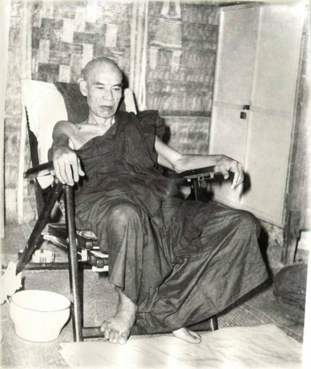
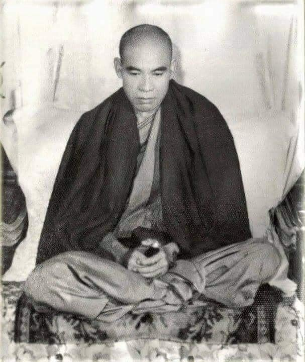
(in 1964)
I have traveled to many places to teach Dhamma, such places as Rangoon, Mandalay, Shwe-bo, Henzada, Moulamein, etc. even to the southernmost part of Burma-Kau-thaung. Most of them were in Rangoon. More women than men come to my teaching. It’s also more women than men in heavens. Dakarmas (Burmese word for upāsikās) have strong faith (saddhā). Dakarmas come for sitting meditation. Dakars (i.e., upāsakas) drank wine and mingled with women in hotels; just enjoying pleasure in the senses. Also, at the meditation center, if there are 200 dakas, then there are 1,000 dakamas. Therefore, there are more Dakarmas in heavens. Also, there are more women than men in realization of Dhamma. Where the men were gone? (i.e., after death).
(With my experience in Thailand, in every uposatha day there were more women than men coming to our place for the whole day and night practice.)
It’s very rare to know anyone who wants Nibbāna. Why is that? There is no mind and body in Nibbāna. There are no pork, chicken and beef curries to eat and no ice cream there. Furthermore, there are no diamond earrings to wear, no diamond necklace and no bracelet to wear, etc. Therefore, they have no desire for Nibbāna. They also heard about that there is no mind and body and no impermanence. They do not know about feeling (vedanā), so they are happy with vedanā. Nibbāna is quite a happiness, only someone arrives there know about it. It’s very rare to see someone who desires for Nibbāna. Humans, deities (devata) and Brahma gods also don’t want it. Brahma gods are taking pleasure in absorption (Jhāna) direct knowledge (abhiññā) and with desire of form (rūpa-taṇhā). Devatas are on the beauty of physical form, and humans are taking pleasure in sensual objects of defilement and clinging to them. Nuns and monks are also not wanting it (i.e., Nibbāna).
Because all of them don’t know dukkha (sufferings). They take enjoyment in the feelings of pleasant and unpleasant (sukha, dukkha vedanā). They don’t know about vedanā (feeling). With the six senses of doors, they enjoy the five cords of sensual pleasure. These are the objects (ārammaṇas) will send them to painful existences (apāyas). Why can they enjoy these things? They don’t know about sukha and dukkha vedanās and don’t know cause and effect dhammas. If they know about it, they will be afraid. If they know with the enjoyment will fall into "painful existence", they will become afraid. ??) Mind and body will stop by knowing cause and effect.
The result of mind and body will stop by destroying the cause (i.e., by discerning of anicca).
(Sayadaw explained it by using each one of the senses of doors—see the 12 links of paṭiccasamuppāda)—you’ll know Nibbāna is happiness if knowing cause and effect (i.e., the D. A process and dukkha sacca).
Would you be happy owning $10 million and living in a multi-story building? Will you perish first or will your property perish first? Can you be happy riding in a car worth $30,000 or $40,000? Do you perish first, or the car or burnt down with fire? The Buddha said that it was the truth of dukkha if mind and body arose. Not knowing of these things that we desire for the happiness of humans and deities. You only get dukkha and the round of existence if attaining of them.
Don't you worry about living and family members (wife and children)? You’ll encounter many dangers, dukkhas and the results of them if mind and body arise. With the becoming old age, sickness and death follow. These are the results of not knowing impermanence. Don’t desire for the mind and body and finish with it in one life (just like him). We get the inconstant (anicca), suffering (dukkha) and not-self (anatta) phenomena (dhamma) which we have no control on them. The world (loka which is mind and body) only has impermanence (rise and fall). These are arising in turn. You have to establish samādhi and practice to know the four noble truths. Only by conquering of the internal worldly dhammas (loka dhamma) you’ll conquer the external worldly dhammas.
Only seeing the internal impermanence (one’s own) will see the external. If you see this way, and you’ll attain happiness (i.e., the mind inclining toward Nibbāna). As the becoming of the mind/body, there will have seeing, hearing… and knowing if these experiences are good or bad. (Sayadaw explained it with the six senses of doors and six sense objects.) With getting of khandha will encounter dangers and dukkhas. When the Buddha passed away, only half of his disciples—the easily accessible to instruction (veneyya) disciples—were liberated (the half leaving behind will be liberated by their teachers). If we practice it now, we still can realize it. Paññā will arise with samādhi. If you practice it really and must get it. You can be free from the round of existence (saṃsāra) by having wisdom. If you don’t have it, you will sink in the flood of saṃsāra (ogha).
Therefore, someone who practices hard in the Buddha Sāsana will get it. People are happy with greed, anger and delusion (lobha, dosa, moha), happy with cinema, happy with alcohols and happy with sensual pleasure of the five senses. People with practice can become stream enterer, once returner, non-returner and arahant. If no practice, one will sink in the woeful planes (apāya). If die with the mind of greed, then one becomes the ghost, with anger falling into hell; and with delusion, one will become dog, pig, chicken, etc. At the time of death, these greedy, angry, and delusional minds will arise due to the ripening of reserve (kaṭattā) kamma. Bad habitual actions (āciṇṇa kammas) will arise. Lobha kamma, dosa kamma and moha kamma from the six senses of doors are the actions to painful existence (apāyas). You have to check your mind. It is the last night here. Listen carefully!
（1964年）
我曾走訪許多地區弘法，例如仰光、曼德勒、瑞卜、亨扎達、毛淡棉等地，甚至深入緬甸最南端的高當地區（Kau-thaung）。其中大多數地點集中在仰光。來聽我開示的女性比男性多，天界中的女性也多於男性。居士女性（緬語稱為「達卡瑪」，dakarmas，巴利語為 upāsikā）具有強烈的信心（saddhā），常前來打坐禪修。而居士男性（達卡，dakars）則飲酒作樂、出入酒店、沉迷五欲之樂。即便是在禪修中心，若有200位男居士，也會有1,000位女居士。因此，天界中女居士較多，證得佛法的女性亦較男性多。那麼那些男性去哪裡了呢？（意指死後墮入惡趣）
（我在泰國的經驗也是如此，每逢布薩日，來共修一整天一夜者，總是女性多於男性。）
世間極少有人真正渴望涅槃。為什麼會這樣？因為在涅槃中沒有身心，沒有豬肉、雞肉、牛肉咖哩可吃，也沒有冰淇淋可享；更沒有鑽石耳環、鑽石項鍊與手鐲等裝飾品。因此，他們對涅槃毫無興趣。他們聽聞涅槃中無有身心、無常等法，也不了解受（vedanā），所以仍執著於受而自得其樂。涅槃是真實的快樂，唯有證入者才能真正體會。
人間、天界乃至梵天界的眾生，幾乎都不願求涅槃。梵天沉浸於禪定（jhāna）與神通（abhiññā）之樂，並執著於色愛（rūpa-taṇhā）；天神則耽溺於色相之美；人類則貪著於五欲塵與煩惱對境。即使出家人與比丘尼，亦多不欲求涅槃。
這是因為他們都不了解「苦」的真相。他們執著於樂受與苦受（sukha, dukkha vedanā）之中，不明白受的本質。藉由六根門，他們享受五欲之樂；這些境界（ārammaṇa）正是導向惡趣（apāya）之因。為什麼他們能樂於其中？因為他們不知樂受與苦受的本質，也不了解因果法。如果他們明白這些，就會生起畏懼。若知這些快樂將導致墮入惡趣，便不會再執取。
藉由了解因果，身心的流轉（namarūpa）便可止息。
透過破除因（即觀察無常），其果報——身心——將不再生起。
尊者藉由解釋十二緣起中的每一根門來說明——若能觀察因果（即緣起過程與苦諦），便會知曉涅槃即是真實快樂。
你擁有一千萬美元並住在高樓大廈，會因此快樂嗎？是你先壞滅，還是你的財產先毀滅？你坐著價值三、四萬美元的汽車，會快樂嗎？你會先死，還是車子先毀壞或被火燒毀？佛陀說：只要身心生起，那就是苦諦的真相。因為不了解這些，我們才執取人天之樂。但即使你得到了，也只是得到了苦與輪迴而已。
你不為生活與家人（妻子與孩子）而煩惱嗎？只要身心生起，便會遇到種種危險與苦，並受其報。隨著老、病、死的到來，這些都是不知無常的結果。不要再貪著身心，應於一生中了結它（就像尊者所做的那樣）。我們所獲得的，只是無常（anicca）、苦（dukkha）、無我（anatta）的現象（法，dhamma），我們對其無能為力。世間（loka，即身心）唯有生滅之無常，這些法皆不斷地依次而生起。我們必須建立定力（samādhi）並修習，才能體證四聖諦。
唯有征服內在的世間法（loka
dhamma），才能征服外在的世間法。
唯有見到自身內在的無常，才能真正見到外在的無常。
若能如此觀照，便能證得真實的快樂（即心趨向涅槃）。
由於身心的生成，便有見、聞、觸、知的作用；若這些經驗是好的或不好的，皆由於六根與六境之相觸（尊者以此六門說明）。一旦生起五蘊，便會遭遇各種危難與痛苦。
當佛陀入滅時，僅有一半的弟子——即易教導的（veneyya）弟子證得解脫，另一半則須由其弟子指導才能解脫。若我們現在修行，仍可證得。慧（paññā）將隨定力（samādhi）而生起。只要真實修行，就一定會證得。以智慧解脫者，便能超越輪迴（saṃsāra）；若無智慧，就會沉淪於生死洪流（ogha）中。
因此，在佛教正法住世之時精進修行者，必有所成。世人樂於貪、瞋、癡（lobha, dosa, moha），樂於看電影，樂於飲酒，樂於五根之境的欲樂。然而修行之人則能證得入流果、一來果、不還果乃至阿羅漢果。若不修行，必墮於惡趣（apāya）。若死時心中現起貪心，將成為餓鬼；若現起瞋心，將墮地獄；若現起癡心，將轉生為狗、豬、雞等動物。
臨終時，這些貪、瞋、癡的心相將因「蓄積業」（kaṭattā kamma）而成熟現起；惡習業（āciṇṇa kamma）亦將現起。由六根門而來的貪業、瞋業、癡業皆為導向惡趣之因。你必須檢視自己的心。
今晚是最後一夜，請仔細聆聽！
～～～～～～～～～～～～～～～～～～～～～～～～～～～～～～～
（一九六四年）
我曾前往許多地方弘揚佛法，例如仰光、曼德勒、瑞波、興實達、毛淡棉等地，甚至遠至緬甸最南端的考當。其中大多數弘法都在仰光進行。來聽聞佛法的女性比男性多，如同天界也是女性多於男性一般。「達卡瑪」（Dakarmas，緬甸語指優婆夷）具有堅定的信心（saddhā）。達卡瑪前來禪修打坐。「達卡」（Dakars，即優婆塞）則在旅館飲酒作樂，與女性廝混，只知享受感官之樂。此外，在禪修中心，若有兩百位達卡，則有一千位達卡瑪。因此，天界有更多的達卡瑪。同樣地，在證悟佛法方面，女性也多於男性。那麼，男性都到哪裡去了呢？（即死後）。
（以我在泰國的經驗，每個布薩日都有比男性更多的女性整天整夜地前來我們的場所修行。）
想要涅槃的人非常稀少。這是為什麼呢？涅槃中沒有身心，沒有豬肉、雞肉和牛肉咖哩可吃，也沒有冰淇淋。此外，沒有鑽石耳環可戴，沒有鑽石項鍊和手鐲可佩戴等等。因此，他們對涅槃沒有慾望。他們也聽說涅槃中沒有身心，也沒有無常。他們不了解感受（vedanā），所以他們對感受感到快樂。涅槃是極大的快樂，只有到達那裡的人才知道。渴望涅槃的人非常罕見。人類、天人（devata）和梵天也不想要它。梵天以禪定（Jhāna）、直接知識（abhiññā）以及對色（rūpa-taṇhā）的渴望為樂。天人則沉醉於美麗的形色，而人類則享受著染污的感官對象，並執著於它們。比丘尼和比丘也不想要它（即涅槃）。
因為他們都不了解苦（dukkha）。他們在愉悅和不愉悅的感受（sukha, dukkha vedanā）中尋求樂趣。他們不了解感受（vedanā）。透過六根門，他們享受著五種感官的樂趣。這些對象（ārammaṇas）將把他們送到痛苦的存在（apāyas）。他們為什麼能享受這些事物呢？他們不了解苦樂感受，也不了解因果法則（dhammas）。如果他們了解，他們就會害怕。如果他們知道享受這些會墮入「痛苦的存在」，他們就會變得害怕。??）透過了解因果，身心將會止息。
透過摧毀原因（即透過觀照無常），身心的結果將會止息。
（尊者透過使用每一個根門來解釋——參見十二因緣——如果你了解因果（即緣起過程和苦諦），你就會知道涅槃是快樂。）
你擁有千萬美元並住在多層建築裡會快樂嗎？是你先毀滅還是你的財產先毀滅？你乘坐價值三萬或四萬美元的汽車會快樂嗎？是你先毀滅，還是汽車先毀滅或被火燒毀？佛陀說，如果身心生起，那就是苦的真理。由於不了解這些，我們才會渴望人天之樂。如果獲得這些，你只會得到苦和輪迴。
你不擔心生活和家人（妻子和孩子）嗎？如果身心生起，你將會遭遇許多危險、苦難及其結果。隨著年老、疾病和死亡接踵而至。這些都是不了解無常的結果。不要渴望身心，並在一生中結束它（就像他一樣）。我們得到的是無常（anicca）、苦（dukkha）和無我（anatta）的現象（dhamma），我們無法控制它們。世界（loka，即身心）只有無常（生起和滅去）。這些依次生起。你必須建立禪定並修行以了解四聖諦。只有征服了內在的世間法（loka dhamma），你才能征服外在的世間法。
只有看到內在的無常（自己的），才能看到外在的無常。如果你這樣看，你將獲得快樂（即心傾向於涅槃）。隨著身心的生起，如果這些經驗是好是壞，就會有見、聞……和知。 （尊者用六根門和六塵來解釋。）獲得五蘊將會遭遇危險和苦難。佛陀入滅時，只有一半的弟子——容易接受教導的（veneyya）弟子——獲得了解脫（其餘一半將由他們的老師引導解脫）。如果我們現在修行，我們仍然可以證悟。智慧（paññā）將隨著禪定生起。如果你真正修行，就一定能獲得。透過擁有智慧，你可以從輪迴（saṃsāra）中解脫。如果你沒有智慧，你將會沉溺於輪迴的洪流（ogha）中。
因此，在佛陀的教法中努力修行的人將會獲得解脫。人們以貪婪、瞋恚和愚癡（lobha, dosa, moha）為樂，以電影為樂，以酒精為樂，以五種感官的欲樂為樂。透過修行，人們可以成為入流者、一還者、不還者和阿羅漢。如果不修行，人將會沉淪於惡道（apāya）。如果臨終時心懷貪婪，就會成為鬼；心懷瞋恚，就會墮入地獄；心懷愚癡，就會成為狗、豬、雞等等。臨終時，這些貪婪、瞋恚和愚癡的心將會由於儲備（kaṭattā）業的成熟而生起。不良的習慣性行為（āciṇṇa kammas）將會生起。來自六根門的貪業（lobha kamma）、瞋業（dosa kamma）和癡業（moha kamma）是導致痛苦存在（apāyas）的行為。你必須檢查你的心。這是今晚的最後一次（開示）。仔細聽！
I don’t know about books (i.e., piṭaka texts) and can’t read them. I’ll talk about my own knowledge. These are the knowledge from stream enterer (sotāpanna) to the noble one (arahant). The Buddha taught that knowing (i.e., paññā or wisdom) was the noblest dhamma. Who could know the mind of a stream enterer to a noble one? Some say that the arahant has hooked jointed bones and the Buddha with chained jointed bones. (Mogok Sayadaw had hooked jointed bones.) These are according to book. In fact, the Buddha's and Arahant's minds abandoned the five kinds of abandonment, so their minds were as such unmoving.
(There are five kinds of abandonment: 1. tadaṅgappahānaṃ—abandoning in a particular respect; 2. vikkhambhanappahānaṃ—abandoning by suppression; 3. samucchedappahānaṃ—abandoning by eradication; 4. paṭippassaddhippahānaṃ—abandoning by subsiding; 5. nissaraṇappahānaṃ —abandoning by escape.)
It becomes natural minds and changing into hooked jointed bones (i.e., arahant). Sotāpanna’s six senses of doors are completed with sīla, samādhi and paññā. However, he is seeing and knowing completed with it. He penetrates the five khandhas as anicca, dukkha and anatta with knowledge (vijjā). Regarding to the four great elements he discerns the impermanence of internal five khandhas. In regard to external things the path knowledge (magga ñāṇa) abandoned the unwholesome dhammas which arose from the six senses of doors (i.e., eye, ear, …mind). It increases the wholesome dhammas. He knows the impermanence of the five khandhas arising from the six senses of doors by six sense objects. Sotāpanna knows the nature of the elements. With the five khandhas he sees the three characteries of anicca, dukkha and anatta, and seeing the natural phenomena.
Whatever he is seeing the path factors exterminate them. Could it be possible if seeing as a woman? Only seeing its true nature or real nature that it’s possible (not as a concept). It’s ignorant seeing as a woman, with ignorance giving the concept. Therefore, not seeing the five khandhas and giving the concept of woman so that mental formation (saṅkhāra) arises and takes it as beautiful and pretty (conditioning by saṅkhāra). And then knowing the five khandhas with ignorance in seeing, hearing, etc., and it becomes beautiful, pretty, fat, the voice is pleasant, etc. defilement arise and lead to apāya (painful existence). It becomes mind and body which fall into apāya. This kind of knowing is the bad knowing of ignorance and the bad habitual kamma (āciṇṇa kamma).
The way of path factors killing the phenomena arising from the sense doors and objects is not giving the concepts (saññā) to it and stopping at feelings (see the 12 links of paṭiccasamuppāda). This is killing the cause, and the result dies. The yogi only knows that the five khandhas arise and cease. Whatever five khandhas arise from the eye, ear, etc., do not give concept and kill it with the path factors. Whatever is arising, mindfulness, effort, and samādhi know it; and paññā discerns it. (i.e., sati and paññā). Therefore, from the eye, ear, nose, …etc. the yogi has sīla, samādhi and paññā and not giving concepts it stops at feeling (vedanā). Vedanā comes to an end is Nibbāna. Stopping at vedanā is insight knowledge (vipassanā ñāṇa).
Discern the arising and passing away of the internal four great elements with momentary concentration (khaṇika samādhi). Also knowing the external phenomena of seeing, hearing, etc. and their passing away. This is knowing momentary arising and momentary passing away rightly. These are the perishing of the minds. Contemplate on feeling which arise from the changing of form—rūpa. (This way is Sayadaw’s way of practice.)
The form (rūpa) do not arise because of killing the impermanence of the five khandhas or mind/body. It’s with the cause that killing the result. The yogi knows the element as according to its own nature, eye, ear, nose, etc. …are also according to its own nature. Sotāpanna’s view knows the momentary arising and passing away of the internal and external five khandhas. This is body contemplation (Kāyānupassanā satipaṭṭhāna). (This bases on four elements). Sotāpanna abandoned wrong view and doubt. Before was “I see, I hear, etc. …”, now is seeing the five khandhas and its vanishing wrong view falls away that there is no doubt in him and knowing the four truths.
The view of once-returner (sakadāgāmī) will follow. Sotāpanna needs two pounds of samādhi and sakadāgāmī needs four pounds (Sayadaw used the Burmese wt.). You’ll not see it without samādhi. Sotāpanna abandons dukkha vedanā which arises from the changing of four elements. He still has sukha with it. Mind and body (nāma and rūpa) can’t separate. You can do it with insight knowledge. Sotāpanna uses the four pounds of samādhi power light, and he sees the nature of form (rūpa) with just like open eyes.
Even though sotāpanna has abandoned dukkha because of sukha that the mind inclined to the physical body shape as beautiful, pretty, etc. Now with the samādhi power he sees the physical form becomes deformed. Seeing in loathsomeness (asubha) as the body becomes bloated decomposed and putrid with popping eyes, etc. He also sees it as like a boiling, foamy water. Once-returner mind inclines toward the deformed body. I don’t know how the textbook describes it. He doesn’t see himself/herself as beautiful, pretty and abandons sukha on the body. Therefore, once-returner’s mind is saṅkhāra-upekkhā mind.
(I don’t know where Sayadaw got this pāḷi words. It can be from his own wisdom. In one of his talks, he said that some lay supporters offered him piṭakas, but he couldn’t read and leave it there. His view is once-returner abandons dukkha and sukha. As Sotāpanna overcomes dukkha and sakadāgāmī on sukha. He described once-returner as at the time of realization with the saṅkhāra-upekkhā ñāṇa.)
我對經書不了解，也不識字。我所要講的是我親身的體證。這些是從入流果（sotāpanna）到阿羅漢（arahant）的證悟知識。佛陀說：「智（paññā）是最尊貴的法。」那麼，誰能知曉一位入流至阿羅漢的心境呢？有人說阿羅漢的關節是「鉤連狀」，佛陀則是「鏈連狀」的關節（莫哥尊者亦有鉤連狀骨節），這些都是根據經書所說。但實際上，佛陀與阿羅漢的心已斷除「五種斷除」，故其心再也不動搖。
（五種斷除為：
tadaṅga-pahāna——以對治的方式斷除，
vikkhambhana-pahāna——暫時壓伏煩惱，
samuccheda-pahāna——徹底斷除，
paṭippassaddhi-pahāna——使煩惱寂靜，
nissaraṇa-pahāna——從煩惱中解脫。）
心性達於自然，於是其骨節也變為鉤連狀（即象徵阿羅漢）。入流聖者的六根門具足戒、定、慧，他的「見與知」亦圓滿具足。他以智（vijjā）貫通五蘊的無常、苦、無我。對於四大，他觀察內在五蘊的無常；對於外在境界，其道智（magga ñāṇa）斷除從六根門生起的不善法，並增長善法。他知曉六根門與六塵接觸所生之五蘊的無常，洞察一切法的本質。
不論所見為何，道支（maggaṅga）皆能將其滅除。那麼，看見女性之色相，也可能嗎？若能見其真實本性，當然可以（即非作為「女人」這一名相來見）。若以無明而見為「女人」，則賦予其名相，繼而心行（saṅkhāra）生起，將其視為美麗可愛。之後，無明引導的見聞觸法中，將此認為美、肥、聲音悅耳等，煩惱便由此生起，導向惡趣（apāya）。這即是錯誤的知（無明之知）與惡習業（āciṇṇa kamma）的展現。
道支滅除從六根門與六塵所生諸法的方式，是不賦予名相（saññā），止於受（vedanā）**，這即是斷除因，果便不再生起（請參照十二因緣）。禪修者只知五蘊生滅，從眼、耳等所生的五蘊，不予名相，以道支將之滅除。凡有所生，便以念、精進、定知之，再由慧（paññā）加以觀察（即念與慧）。因此，從眼、耳、鼻……等六根，禪修者具足戒、定、慧，不起名相之執取，止於受；受滅即是涅槃，止於受即是觀智（vipassanā ñāṇa）。
觀察四大內在的生滅，以剎那定（khaṇika samādhi）觀其現起與壞滅，也觀外境如見聞觸法之生滅，這是正確了知剎那生剎那滅。這即是心法的壞滅。再觀因色法變化而生起之受（這便是尊者的修行法門）。
色法不是因斷除五蘊（身心）之無常而生起，而是因破除其「因」，而使「果」不生。禪修者知諸根本於其自性：眼、耳、鼻等亦如是。入流果的見知，是如實觀見內外五蘊的剎那生剎那滅，這即是身隨念（Kāyānupassanā satipaṭṭhāna），以四大為依止。入流果者已斷身見與疑。過去他會說「我見、我聞……」，如今則見五蘊、見其壞滅，則我見隨之止息，無有疑惑，並知四聖諦。
接著便是**一來果（sakadāgāmī）**之見。入流者需具備「兩斤」的定力，一來者則需「四斤」（這是尊者以緬甸計量單位比喻）。若無定力便難以見之。入流者已斷由四大變化所生的苦受，但仍有樂受。身與心（nāma–rūpa）本不可分，唯可透過觀智辨析。入流者以四斤定力之光，得見色法的本質，如同睜眼直觀一般。
儘管入流果者已斷苦受，但由於樂受的存在，心仍趨向於身形的美與好。現在，憑藉定力，他見色身變異——腫脹、腐爛、惡臭、眼珠突出等，如同沸水、泡沫。此時，一來果者的心傾向於「變形之身」，不再見自己（或他人）為美麗可愛，斷除對身體的樂受。故而一來者之心為行捨觀心（saṅkhāra-upekkhā citta）。
（我不清楚尊者是從哪裡得來這句巴利詞彙，也可能是他自證所得。在他的某次開示中曾說，有信眾送他三藏，但他看不懂，只是擱在一旁。他的見解是：入流果者斷苦，一來果者斷樂。他將一來果描述為於證悟時，正處於**行捨觀智（saṅkhāra-upekkhā ñāṇa）**之中。）
～～～～～～～～～～～～～～～～～～～～～～～～～～～～～～～
我不懂經書（即三藏經典），也不會讀。我將談談我自己的知識。這些是從入流者（sotāpanna）到阿羅漢聖者的知識。佛陀教導說，知（即般若或智慧）是最高的法。誰能知道從入流者到阿羅漢聖者的心？有些人說阿羅漢的骨骼是鉤狀關節，而佛陀的是鏈狀關節。（莫哥尊者的骨骼是鉤狀關節。）這些是根據書本所說。事實上，佛陀和阿羅漢的心都捨棄了五種捨，所以他們的心才能如此不動。
（有五種捨：一、彼分捨（tadaṅgappahānaṃ）——在特定方面捨棄；二、伏斷捨（vikkhambhanappahānaṃ）——透過抑制而捨棄；三、根斷捨（samucchedappahānaṃ）——透過根除而捨棄；四、鎮伏捨（paṭippassaddhippahānaṃ）——透過平息而捨棄；五、出離捨（nissaraṇappahānaṃ）——透過逃離而捨棄。）
它變成了自然的心，並轉變成鉤狀關節的骨骼（即阿羅漢）。入流者的六根門都具足戒（sīla）、定（samādhi）和慧（paññā）。然而，他以這些具足的戒定慧來見和知。他以智慧（vijjā）如實地穿透五蘊的無常、苦和無我。關於四大元素，他辨識出內在五蘊的無常。關於外在事物，道智（magga ñāṇa）捨棄了從六根門（眼、耳……意）生起的不善法，並增長了善法。他透過六塵了解從六根門生起的五蘊的無常。入流者了解元素的本質。透過五蘊，他看到無常、苦和無我這三種特性，並看到自然的現象。
無論他看到什麼，道支都會消滅它們。如果將其視為女人，有可能嗎？只有看到其真實本性或真正本質才有可能（而不是作為一個概念）。將其視為女人是無明的見，無明產生概念。因此，不見五蘊，而產生女人的概念，於是行（saṅkhāra）生起，並將其視為美麗和漂亮（被行所制約）。然後，在見、聞等之中，以無明來認識五蘊，它就變成了美麗、漂亮、肥胖，聲音悅耳等等，煩惱生起並導致惡道（痛苦的存在）。它變成了會墮入惡道的名色（身心）。這種認識是無明的惡知和不良的習慣性業（āciṇṇa kamma）。
道支消滅從根門和對象生起的現象的方法是不給予概念（saññā），並停留在感受（參見十二因緣）。這是殺死原因，結果也就死亡了。瑜伽行者只知道五蘊生起和滅去。無論從眼、耳等生起什麼五蘊，都不要給予概念，並用道支消滅它。無論什麼生起，正念、精進和禪定都會知道它；而般若會辨識它（即念和慧）。因此，從眼、耳、鼻……等，瑜伽行者都具足戒、定、慧，並且不給予概念，而是停留在感受（vedanā）。感受的止息就是涅槃。停留在感受就是內觀智慧（vipassanā ñāṇa）。
以剎那定（khaṇika samādhi）辨識內在四大元素的生起和滅去。也知道外在的見、聞等現象及其滅去。這是正確地知道剎那生起和剎那滅去。這些是心識的滅去。觀照從色（rūpa）的變化而生起的感受。（這是尊者的修行方法。）
色（rūpa）的生起並非因為殺死了五蘊或名色的無常。而是透過殺死結果的原因。瑜伽行者知道元素是根據其自身的本性，眼、耳、鼻等……也是根據其自身的本性。入流者的見知道內外五蘊的剎那生起和滅去。這是身隨觀（Kāyānupassanā satipaṭṭhāna）。（這基於四大元素。）入流者捨棄了邪見和懷疑。以前是「我見、我聞等等……」，現在是看到五蘊及其滅去，邪見就消失了，他心中沒有懷疑，並知道四聖諦。
一還者（sakadāgāmī）的見將隨之而來。入流者需要兩磅的禪定，而一還者需要四磅（尊者使用了緬甸的重量單位）。沒有禪定，你將看不到它。入流者捨棄了從四大元素的變化而生起的苦受（dukkha vedanā）。他仍然有樂受（sukha）。名（nāma）和色（rūpa）無法分離。你可以透過內觀智慧來做到。入流者使用四磅的禪定力之光，他就像睜開眼睛一樣看到色的本質。
即使入流者因為樂受而捨棄了苦受，心仍然傾向於美麗、漂亮的肉身形狀等等。現在，藉由禪定力，他看到肉身變得畸形。看到其令人厭惡（asubha）之處，身體變得腫脹、腐爛、腐敗，眼睛突出等等。他也看到它像沸騰的泡沫水一樣。一還者的心傾向於畸形的身體。我不知道經書是如何描述的。他/她不再認為自己美麗、漂亮，並捨棄了對身體的樂受。因此，一還者的心是行捨心（saṅkhāra-upekkhā mind）。
（我不知道尊者從哪裡得到這些巴利語。可能來自他自己的智慧。在他的一次開示中，他說一些在家護法供養他三藏經典，但他不會讀，就放在那裡了。他的觀點是一還者捨棄苦受和樂受。如同入流者克服苦受，一還者克服樂受。他將一還者描述為在證悟時具有行捨智（saṅkhāra-upekkhā ñāṇa）。）
Sotāpanna has seen the change of the four elements, that is the knowledge of appearance. (The Burmese words for this usage are athim-nyan; athim = appearance, nyan = ñāṇa.) Sakadāgāmī has seen the body becomes bloated and putrid, that is knowledge of seeing. (The Burmese words for this usage are amyin-nyan; amyin = seeing or view, nyan = ñāṇa). With this knowledge he is seeing body swollen, decomposed, putrid; and boiling like a foamy water, burning with fire, etc. Seeing the intrinsic natural phenomena of the four elements is amyin-nyan (knowledge of seeing). If he looks at other bodies, he is also seeing in this way as the body is eating by worms, as bones, etc.
All these seeing is strong insight (balavā vipassanā, balya vipassanā). If he looks at other physical objects also seeing as bloated, decomposed and putrid—such as Buddha images, cetiyas, earth, sky, etc. The whole world for him becomes strong insight. Insight has to be seen as perishing or vanishing. With one self’s bodily form and other bodily forms are not perishing that we have affection, craving and clinging to these things. Some thought that if seeing loathsome (asubha), bones, etc., it was concept. I have to say this is not true. This is seeing its natural arising or process that it’s an ultimate phenomenon (paramattha dhamma).
(Here Sayadaw’s view was this is not making it by happening and not reflecting on it. It appears through the power of samādhi and natural process.)
Athim-nyan means with the changing of the four elements and its impermanence appear in the knowledge (ñāṇa). Amyin-nyan means seeing the nature of loathsomeness of the body, etc. Like with one’s eye is seeing knowledge.
(Sayadaw compared it with the example came from the first discourse—the wheel of Dhamma—cakkhuṁ udapādi = it means vision (seeing) arose.))
Some teachers told their students that if you see loathsome (asubha) it’s concept, don’t contemplate and abandon it. That is, they don’t know rightly what the concept (paññatti) and ultimate reality (paramattha) is.
[Note on concept and reality: It seems to me the Buddha did not make any distinction about it in the suttas. It comes from Abhidhamma. These two views could be arisen from atta and anatta doctrines or related to them. In Burmese meditation traditions, all accept these two views and using them in their systems. Even illiterate monks like Soon Loon Sayadaw, Thae Inn Gu Sayadaw and Sayadaw U Candima accepted them in their teachings and practices. The most accepted view on paramattha dhamma is it doesn’t have any form and shape, so can’t see with the eye. Therefore, when they heard about Sayadaw’s practice and rejected this as mentioned by Sayadaw.]
Once-returner is from sukha he sees dukkha again—of the whole world. He couldn’t sleep because of it with the closed eyes or with the opened eyes. Because of dukkha he doesn’t want his khandha and other people’s khandhas. The body not deformed that people are craving and clinging to it. With the right seeing and knowing about the deformed khandha and from the eye, dukkha vedanā arises. Contemplation of feeling (vedanānupassanā) is the knowing of once—returner. He gets the right knowledge (i.e., vijjā ñāṇa). Because of seeing loathsomeness (asubha) it reduces lust (kāmarāga) but it doesn’t purify from concept yet. He still has the concept of solidity (ghaṇa paññatti, ghaṇa saññā) with it. The lower two path knowledges (i.e., sotāpatti-magga and sakadāgāmī magga) are still remaining in insight knowledge.
(Here we may think Sayadaw misinterprets it. The process of practice will come to an end only by becoming an arahant. So it means still in insight knowledge. It’s different from the traditional interpretation.)
He doesn’t make any distinction as man and woman by seeing the perishing of loathsome body (asubha). Dukkha vedanā arise from the eye that he doesn’t want to enjoy it and disgust with it. He becomes afraid of seeing at it. (If he observes the nature, it happens the same way e.g., sky, mountains, earth, etc.) With it, wrong thinking and wrong perception are disappeared. Perception (saññā) deceives us that we can’t see it as mind made form (citta-ja-rūpa). From sukha he is seeing dukkha that it’s vedanānupassanā (contemplation on feeling). This is once-returner insight.
[It seems to me Sayadaw’s practice from Sotāpanna to arahant—the four levels relate to the four stages of satipaṭṭhāna bhāvanā—i.e., kāya to dhamma—In Mahāsi system to become a sotāpanna with the four satipaṭṭhāna stages, from coarser object (rūpa) to refined objects (dhammas)]
Whatever experience from the six senses of doors becomes feeling (vedanā), because seeing of asubha dukkha vedanā (loathsome unpleasant feeling). In terms of loathsomeness, here's how it becomes disgusting; if I had to make an analogy, it would be as follows—Someone catching fish in a muddy stream, he spreads a net in the muddy water and waiting for some time there. When he sees something inside the net is struggling and trying to escape. So, he slowly pulls the net toward him and slowly put his hand inside and grasps the thing inside the net. He thought it as a fish and pull the fish out from the net. It’s a poisonous snake. So, he was using both hands to grab the snake's neck hard and squeeze it to death.
入流果者（sotāpanna）已見四大變化之無常，這即是「顯現智」（緬語：athim-nyan，athim 意為「顯現」，nyan 即是 ñāṇa，智慧）。一來果者（sakadāgāmī）則見身體腫脹、腐爛、惡臭，這是「見智」（緬語：amyin-nyan，amyin 意為「所見／觀見」，nyan 即智慧）。以此觀智觀見身體腫脹、腐壞、膿爛，沸騰如泡水、焚燒如火等現象，這是四大本性如實顯現的觀見（amyin-nyan）。若觀他人之身體，亦見其如被蟲蛀蝕，如白骨般的存在。
這些見解皆屬於「強力觀智（balavā vipassanā）」，又稱「有力觀智（balya vipassanā）」。若觀外在色法，也一樣見其膨脹、腐爛，如佛像、塔寺、大地、天空等，整個世界於其心中，皆呈觀智所見。真正的觀智，是見一切法的「壞滅、消逝」。因未見身形與色法之壞滅，眾生才對其生起愛、欲與執著。有人認為見到不淨（asubha）、白骨等是「名相」（paññatti），非實相，我必須說這是錯誤的看法。那其實是如實見到法的生起與運作過程，乃屬於「究竟法」（paramattha dhamma）。
（在這裡，尊者的見解是：這不是刻意觀想，也不是理性推論得來，而是透過**定力（samādhi）**與自然的觀察過程顯現。）
「athim-nyan」意指觀見四大變化、無常現象之顯現於心智中；「amyin-nyan」則是如以肉眼般見身體不淨等現象之觀智。
（尊者將其比喻為初轉法輪經中所說：「cakkhuṁ udapādi」，即是「慧眼生起、正見現起」。）
有些導師對弟子說，若見到不淨，就當作名相，應該棄捨、不可觀想。這是因為他們不了解名相（paññatti）與實相（paramattha）的真義。
【註：關於「名相與實相」：
在《經藏》中，佛陀似未明確劃分此二者，其說法起源多見於《論藏》（Abhidhamma）。這兩者的劃分，可能源自於對「我見（atta）」與「無我（anatta）」教義的理解。緬甸的禪修傳統大多接受此區分，並融入修行體系中，即使是未識字的高僧如順倫尊者（Soon Loon Sayadaw）、Thae Inn Gu 尊者與 Candima 尊者，亦於教導中採納之。
對於究竟法最普遍的詮釋是：它不具形狀與形體，無法以肉眼看見。故當他們聽聞 Thae Inn Gu 尊者的修行經歷，往往予以拒絕，如尊者所言。】
一來果者，從樂受之中再次見到苦——遍見於整個世間。他閉眼也見，睜眼也見，因此無法入眠。因知苦而厭離，不欲其蘊身，也不欲他人之蘊身。由於外形未見變壞，人們才對其貪著與執著；若正見色身之腐壞，從眼根便生苦受（dukkha vedanā）。觀受（vedanānupassanā）即是一來果的覺知方式，這是正智（vijjā ñāṇa）之體現。見到不淨之相，可減輕欲貪（kāmarāga），但尚未從名相中淨除，仍帶有「堅實性概念」（ghaṇa paññatti / ghaṇa saññā）。因此，下二果位（入流與一來）的道智，仍屬於觀智階段（vipassanā ñāṇa）中。
（這裡我們可能會認為尊者有所誤解，但其實是他以另一種詮釋方式理解修行：修行的歷程須至阿羅漢果方可圓滿，故前階段皆屬觀智，這與傳統詮釋略有不同。）
他見「不淨之身壞滅」，故不再將其視為男女形貌。從眼根生起的苦受，令他不再樂見，而心生厭離，甚至生起畏懼之感。若觀自然界，如天空、山嶽、大地等，也同樣生起此心。因此錯誤的想法與錯誤的認知（saññā）亦隨之止息。錯誤的認知欺騙我們，令我們無法看清這些不過是心所造色（citta-ja-rūpa）。從樂中見苦，即是觀受隨念（vedanānupassanā），這便是一來果的觀智。
【註：在我看來，Thae Inn Gu 尊者的修行過程從入流至阿羅漢，正可對應於**四念處（satipaṭṭhāna bhāvanā）**的四個階段——由身至法。在緬甸 Mahāsi 系統中，證入入流果即需通過此四念處的次第修習，從粗顯所緣（色法）至微細法（法蘊）。】
凡從六根門生起的經驗皆為「受」（vedanā），而因見「不淨即苦受」而感厭離。舉例來說——
一人於混濁溪流中捕魚，他張網於泥水之中，靜候多時，忽見網中有物掙扎欲脫，便緩緩收網，將手伸入網中，緊緊抓住那掙扎之物，以為是魚，遂將其從網中拉出——卻發現竟是一條毒蛇！於是他雙手緊抓蛇頸，使力擠壓，直到毒蛇斃命。
此喻說明：眾生以為是樂，其實是苦；一旦看清其真相，便會生起厭離與斷除。
～～～～～～～～～～～～～～～～～～～～～～～～～～～～～～～
入流者已見四大元素的變化，這是顯現智（athim-nyan）。（緬甸語中，「athim」意為顯現，「nyan」意為ñāṇa，即智慧。）一還者已見身體變得腫脹腐爛，這是見智（amyin-nyan）。（緬甸語中，「amyin」意為見或觀，「nyan」意為ñāṇa，即智慧。）有了這種智慧，他看到身體腫脹、腐爛、腐敗；像泡沫水一樣沸騰，被火焚燒等等。看到四大元素的內在自然現象就是見智（amyin-nyan）。如果他看其他身體，他也以同樣的方式看到，如同身體被蟲啃食，成為骨骼等等。
所有這些見都是強烈的內觀（balavā vipassanā, balya vipassanā）。如果他看其他物質對象，也看到它們腫脹、腐爛、腐敗——例如佛像、佛塔、大地、天空等等。對他來說，整個世界都成為強烈的內觀。內觀必須被視為消逝或滅去。由於自身和他人的身體形態沒有消逝，我們才會對這些事物產生愛戀、渴愛和執著。有些人認為，如果看到令人厭惡之物（asubha）、骨骼等等，那就是概念。我必須說這不是真的。這是看到其自然的生起或過程，它是一種究竟現象（paramattha dhamma）。
（在這裡，尊者的觀點是，這不是透過刻意造作或反思而產生的，而是透過禪定的力量和自然過程顯現的。）
顯現智（Athim-nyan）是指四大元素的變化及其無常顯現在智慧（ñāṇa）之中。見智（Amyin-nyan）是指看到身體等令人厭惡的本質。就像用自己的眼睛看到知識一樣。
（尊者將其與初轉法輪經中的例子進行比較——法輪——cakkhuṁ udapādi = 意為眼生起（見）。）
有些老師告訴他們的學生，如果你看到令人厭惡之物（asubha），那就是概念，不要觀照它，要捨棄它。也就是說，他們並不正確地了解什麼是概念（paññatti）和究竟實相（paramattha）。
[關於概念和實相的註釋：在我看來，佛陀在經藏中並沒有對此做出任何區別。它來自阿毗達摩。這兩種觀點可能源於我見（atta）和無我見（anatta）的學說，或與之相關。在緬甸的禪修傳統中，所有人都接受這兩種觀點，並在他們的體系中使用它們。即使像孫倫尊者、泰因谷尊者和伍坎迪瑪尊者這樣不識字的僧侶，也在他們的教導和實踐中接受了它們。關於究竟法（paramattha dhamma）最被接受的觀點是它沒有任何形式和形狀，所以無法用眼睛看到。因此，當他們聽到尊者的修行時，就如尊者所說的那樣否定了它。]
一還者從樂受中再次看到苦——整個世界的苦。無論睜眼閉眼，他都因此而無法入眠。因為苦，他不想要自己的五蘊，也不想要他人的五蘊。由於身體沒有變形，人們才會對它產生渴愛和執著。透過正確地見和知關於變形的五蘊，從眼根生起了苦受（dukkha vedanā）。感受隨觀（vedanānupassanā）是一還者的知。他獲得了正知（即 vijjā ñāṇa）。由於看到令人厭惡之物（asubha），它減少了欲貪（kāmarāga），但尚未從概念中淨化。他仍然具有堅固的概念（ghaṇa paññatti, ghaṇa saññā）。較低的兩個道智（即入流道和一還道）仍然存在於內觀智慧中。
（在這裡，我們可能會認為尊者誤解了它。修行的過程只有在成為阿羅漢時才會結束。所以這意味著仍然處於內觀智慧中。這與傳統的解釋不同。）
他透過看到令人厭惡的身體（asubha）的滅去，不再區分男人和女人。從眼根生起的苦受讓他不想享受它，並對它感到厭惡。他害怕看到它。（如果他觀察自然，情況也是一樣的，例如天空、山脈、大地等等。）藉此，錯誤的想法和錯誤的知覺消失了。知覺（saññā）欺騙了我們，使我們無法將其視為心所造之色（citta-ja-rūpa）。他從樂受中看到苦，這是感受隨觀（vedanānupassanā）。這是一還者的內觀。
[在我看來，尊者從入流者到阿羅漢的修行——這四個層次與四念住（satipaṭṭhāna bhāvanā）的四個階段相關——即從身到法——在馬哈希系統中，要透過四念住的階段，從粗的對象（色）到精細的對象（法），才能成為入流者。]
從六根門產生的任何經驗都會變成感受（vedanā），因為看到令人厭惡的苦受（asubha dukkha vedanā，令人厭惡的不愉快感受）。就令人厭惡而言，它是如何變得令人作嘔的呢？如果我必須打個比方，那就是這樣——有人在渾濁的溪流中捕魚，他在渾濁的水中撒網，在那裡等待一段時間。當他看到網裡有東西掙扎並試圖逃脫時，他就慢慢地把網拉向自己，然後慢慢地把手伸進去，抓住網裡的東西。他以為是魚，就把魚從網裡拉出來。結果是一條毒蛇。於是，他用雙手緊緊抓住蛇的脖子，用力擠壓，直到蛇死亡。
He is not fearful of the disappearance of the mind, but of the dissolution of the form (rūpa or body). (Here we can see the differences between sotāpanna and sakadāgāmin) When seeing the deformed body, he wants to run away from the fearful phenomena. Man and woman have affection to each other because theirs are not deformed. (When someone dies no-one want to keep the body, if you throw it away quicker and better. Even before death, our bodies stink so badly and disgustingly that only flies rush to us, not bees.)
Sotāpanna sees the impermanence of the five khandhas. Sakadāgāmin sees the perishing of rūpa (body form) and then knowing each of the khandha separately. Sotāpanna’s knowing knowledge is one kind and Sakadāgāmin’s is another; he is seeing asubha with the eye and contemplating them. Perception deceiving him as loathsome (asubha) such as bones, putrid, burning with fire, eaten by worms, etc. After he knows the deception by concept (saññā) and abandons it. He does not give the perception of putrid and bloated and stops at vedanā. With this the concept of solidity (ghana) falls away and not see the putrid body, bones, etc. What does he see? He sees the whole world of the physical form (rūpa) vanishing as like particles. He doesn’t see the khandha form (rūpa) only the particles of form (rūpa).
This is the concept (paññatti) of a non-returner (anāgāmi). It’s fit into the Buddha’s teaching of mind and body arising and passing away in a hundred thousand billion times and five thousand billion times per seeing respectively. (It is in accordance with the Buddha's teaching that the body and mind arise and pass away ten trillion times and five trillion times respectively in each vision.) Whatever he is looking at it not seeing its solidity and form only the particles. His mind (anāgāmin) is inclining toward sabhāva concept (i.e., particles). If he looks at the whole world, only seeing the particles. Therefore, the non-returner abandons the defilement of lust (kāma-kilesa).
[The differences between once-returner and non-returner are seeing deformed body and particles-reduce lust and abandon lust. It is not surprising that humans are crazy about lust. Even once-returner seeing deformed body (disgusting) only reduce lust. Sometime human’s stupidity is no limit someone can end up in suicide out of love or lust.]
If seeing rūpa and nāma (mind) vanishing, you still can’t abandon it yet. I don’t know how what the textbook says. I tell you what I have seen naturally in the khandha (not book knowledge but direct experience). Non-returner has rūpa-kilesa—defilement on material form (i.e., particles or material jhānas or rūpa-jhānas). His mind is sticking in the refined particles. If he dies, he will have the five khandhas in ariya brahma world (noble material jhānic god). Regarding with the five khandhas, non-returner sees the past, present and future births (jāti) and seeing its coming and going paths. U Zin (a monk refers to himself) in past lives had been a monk and after death fallen into hell as animals (e.g., bird) and hungry shades etc.
I also see the future births by viewing the object (ārammaṇa = arom) and see the suddhāvāsabhūmi of anāgāmi—the highest plane of ariya brahma god. Some people are asking the questions of “Is there any hell or brahma worlds?” You can’t see it because of without even one ounce of samādhi you don’t have it. According to the Buddha’s teaching of āloka udapādi—light arose (from the first discourse), with this light he could see from this universe to other universes. Some said that there were no hells. If they die with this wrong view, they will suffer in hells and not free from it. There are also those who accept the view that human become human after death and not otherwise.
(This view was accepted by some Burmese Buddhists, such as Shin/U Ukkaṭṭha, who wrote a booklet—“Men Die Become men” - around 1960 or 1970. According to some sources, the monk was fluent in six languages. He had some young lay followers who were communists and well-educated. A scholarly monk is prone to hold wrong views, just like some modern educated Chinese who look down on the teachings of the Chinese sages as outdated and conservative. But they don’t know it that truth will never change, only wrong view will change all the times.)
These people have to go and suffer between universes. (According to science there can be the black hole between them. Here are some hells between universes.) Therefore, you should practice to know where you’ll born e.g., heavenly realm, brahma world, Nibbāna, etc. If you die with kilesa—gati defiled destinations, you’ll go to painful existence (apāya).
People are enjoying their lives with heedlessness. They are in pleasure with family members (wife, children), with dollars, with gold, etc. At near death if they die with greedy mind have to suffer for 5000 billion times—hundred thousand billion timesper second in accordance with the mind/body process. Non-returners possess the knowledge of knowing births (jātissara ñāṇa). The Buddha taught his Dhamma as akālika (non-temporal). If you really do it and will get it for sure. You don’t see it because you don’t do it. Anāgāmin’s mind has rūpa-kilesa (defilement of refined form), that is mind/body particles.
He contemplates the five khandhas—e.g., with the contact of physical form and eye door, and the five khandhas arise. He contemplates their cause and effect. Furthermore, he discerns the five khandhas from the eye door and their rises and falls (i.e., mind and form) at the rate of hundred thousand billion times and 5,000 billion times/sec. If dies with the defiled mind (kilesa-citta), you will get birth. It was a woeful birth, and he became afraid. He has to suffer a hundred billion and 5000 billion times according to the mind process. He sees its births of hundred thousand billion and 5000 billion times in a wink of the eye.
Sotāpanna sees the impermanence of the five khandhas/mind and body. Sakadāgāmin sees the impermanence of form. They penetrate the four truths, respectively. The Buddha could count the rises and falls of mind and form in a wink of the eye with the rate of hundred thousand billion and 5000 billion times (this is not the counting of a mathematician). We only know its great numbers. From seeing, hearing etc. (six senses of doors) the 11 kinds of fire are burning with defilements (kilesa) and he becomes in fear of it. (It reminds us about the Fire Discourse the Buddha taught to Uruvela Kassapa brothers). We don’t know these things that we’re not fear.
他不畏懼心的滅失，而是畏懼色身（rūpa）的毀壞。（由此我們可見入流者（sotāpanna）與一來者（sakadāgāmin）之間的差異。）當見到身形敗壞時，他生起畏懼，想要逃離這種可怖的現象。男女之所以彼此相愛，是因為他們的身體尚未腐壞。（人死後，沒有人願意將遺體留在家中，越早處理越好。事實上，即便尚未死亡，我們的身體也早已惡臭不堪，令人作嘔，只有蒼蠅飛來，而不是蜜蜂。）
入流果者觀見五蘊的無常；一來果者則觀見色身（rūpa）的敗壞，並進一步分別觀察各個蘊。入流者的觀智是一種，一來者的觀智則是另一種——他是以肉眼觀見不淨相（asubha）並如實觀察。當錯誤的知覺（saññā）將骨骸、腐爛、火燒、被蟲噬等視為「不淨」時，他便看清這是概念的欺騙，並予以捨離。他不再將其視為腐敗或腫脹的形體，而是止於受（vedanā）。由此，堅實性（ghana paññatti）的概念也一併消失，他不再見到腐壞的屍身或白骨。那麼他見到的是什麼？他見到整個色身世界（rūpa loka）皆如微粒般的壞滅現象。他不再見到整體的色蘊（rūpa-khandha），而僅見色法的微細粒子（rūpa-kalāpa）。
這即是不還果者（anāgāmin）所持的概念（paññatti）。此見解與佛陀所說心與色於一剎那中分別生滅十兆次與五兆次的教法相符。（即：心每剎那生滅十兆次，色每剎那生滅五兆次。）他無論觀察何物，皆不見其形狀與堅實性，只見到色法之微粒；不還者之心傾向於「自性概念（sabhāva paññatti）」，即是微粒的如實知見。他觀看整個世界，亦僅見粒子。故此，不還者已捨棄欲貪（kāma-kilesa）。
【入流與一來的差別在於：一來者見不淨、厭離，僅能「減少欲貪」；而不還者見微粒，則「徹底斷除欲貪」。人類執著於欲貪實不令人意外，甚至有人會因情愛自殺，愚癡無限。】
即便見到色與名（rūpa-nāma）的壞滅，仍未能徹底捨離它。我不知道論藏中如何說明，我只談我在身心蘊中自然見到的（非書本知識，而是實證）。不還果者仍有色貪（rūpa-kilesa），即對物質微粒或色界禪境的執著。其心執取微細色粒。若他在此階段命終，將於色界聖者梵天（Ariya Brahma world）中再生，並繼續五蘊存在。關於五蘊，他能見過去、現在與未來的生起（jāti），也能見到其往返的路徑。尊者自稱「U Zin」（指自己），於過去世亦曾為比丘，但後來因業墮於地獄、畜生（如鳥）與餓鬼界等。
我亦能從所緣（ārammaṇa）中觀見未來的出生，見到不還果者將往生之「淨居天（suddhāvāsa）」——聖者居住的最高梵天境界。有些人問：「真的有地獄或梵天嗎？」你之所以見不到，是因為你連一兩盎司的定力都沒有。如佛陀於《初轉法輪經》中所說「āloka udapādi」（光明現起），此光明可令他從一宇宙見到另一宇宙。有些人說根本沒有地獄。若他們帶著此種邪見死去，將墮入地獄，永難脫離。還有人相信「人死為人」的說法，不會轉生他趣。
【這種看法曾被部分緬甸佛教徒接受，例如 U Ukkaṭṭha 尊者就曾於 1960–1970 年間出版小冊子《人死為人》。據說他精通六國語言，曾與一些受高等教育、傾向共產主義的在家年輕人交往。這類學者型比丘容易抱持邪見，就如同一些受西方教育的現代中國人輕視中國古聖先賢之教，誤以為其已過時守舊，卻不知「真理永不改變，唯有邪見時時變動」。】
這類人將漂流於諸宇宙間（按現代科學，宇宙之間或有「黑洞」；在佛教中，那裡可能是地獄之所在）。因此，你應當修行，藉以明知來生將往何處——人天、色界、無色界，抑或證入涅槃。若你於臨終時帶著煩惱的習性（kilesa-gati），將墮入惡趣（apāya）。
人們在放逸（pamāda）中享受人生，醉心於家庭（妻子、兒女）、金錢、黃金等。若臨終時，心仍貪著此類對境，將於心色剎那變化中遭受五兆次至十兆次之苦報。不還果者具備「宿命智（jātissara ñāṇa）」，能見過去生。佛陀教導的正法（Dhamma）是「不依時間（akālika）」，若你真實修行，必可親證。之所以見不到，是因為你從未修行。不還果者的心仍有色法之貪著（rūpa-kilesa），即對色法微粒的執著。
他觀察五蘊的生起，例如當眼觸色境，五蘊便現起；他便觀其因果關係。此外，他亦從眼門見五蘊之生與滅（rūpa-nāma uppāda–vaya），即於剎那中以「十兆次與五兆次/秒」的速率起滅。若他於此階段命終，帶著煩惱心（kilesa-citta），則會再受生。當見到那樣的惡趣，他便生起極大的恐懼。以心的速度而論，他將遭受百億、五千億次的生滅與苦果。他於一眨眼間可見其過去與未來的五蘊生滅。
入流果者觀見五蘊／名色之無常；一來果者觀見色身之無常；彼等各自貫通四聖諦。佛陀能於一眨眼之間，計數心與色的生滅達「十兆與五兆次」——這並非數學家的推演，而是佛智的遍知。我們僅知其為「極大數」。從六門生起之見、聞、覺、知……即為「十一種火（aggikkhandha）」所燃燒——即由煩惱引燃之苦火。他因此而畏懼。（這使人想起佛陀對優樓頻螢三兄弟所說的「火燒經（Āditta Sutta）」。）我們之所以不知，是因為我們尚未正見與正觀。
～～～～～～～～～～～～～～～～～～～～～～～～～～～～～～～
他不害怕心識的消失，而是害怕色（rūpa 或身體）的壞滅。（在這裡我們可以看見入流者和一還者的區別）當看到變形的身體時，他想逃離這些令人恐懼的現象。男人和女人彼此愛戀，因為他們的身體沒有變形。（當有人死亡時，沒有人想保留屍體，越快丟棄越好。甚至在死亡之前，我們的身體就散發出如此難聞和令人作嘔的氣味，只有蒼蠅才會蜂擁而至，而不是蜜蜂。）
入流者看到五蘊的無常。一還者看到色（身體形態）的壞滅，然後分別知道每一個蘊。入流者的知是屬於一種，而一還者的是另一種；他用眼睛看到不淨（asubha）並觀照它們。知覺欺騙他，使他認為骨骼、腐爛、被火燒、被蟲吃等等是令人厭惡的（asubha）。在他知道這是概念（saññā）的欺騙並捨棄它之後，他不再給予腐爛和腫脹的知覺，而是停留在感受（vedanā）。藉此，堅固的概念（ghana）消失了，不再看到腐爛的身體、骨骼等等。他看到什麼呢？他看到整個物質形態（rūpa）的世界像微粒一樣消失。他沒有看到蘊的形態（rūpa），只看到形態的微粒（rūpa）。
這是非還者（anāgāmi）的概念（paññatti）。它符合佛陀關於身心在一見之中分別生滅千億萬次和五千億萬次的教導。（這與佛陀的教導一致，即在每一次視覺中，身心分別生滅十兆次和五兆次。）無論他看什麼，都看不到它的堅固性和形態，只看到微粒。他的心（非還者）傾向於自性概念（sabhāva concept，即微粒）。如果他看整個世界，只看到微粒。因此，非還者捨棄了欲貪（kāma-kilesa）的煩惱。
[一還者和非還者的區別在於：看到變形的身體和微粒——減少欲貪和捨棄欲貪。人類對欲貪如此瘋狂並不奇怪。即使一還者看到變形的身體（令人作嘔），也只是減少了欲貪。有時人類的愚蠢是沒有極限的，有人甚至會因為愛情或欲貪而自殺。]
如果看到色和名（心）的消失，你仍然無法捨棄它。我不知道經書上是怎麼說的。我告訴你我在蘊中自然看到的（不是書本知識，而是直接經驗）。非還者有色煩惱（rūpa-kilesa）——對物質形態（即微粒或色界禪那）的煩惱。他的心執著於精細的微粒。如果他死亡，他將在聖梵天界（高貴的色界禪那之神）擁有五蘊。關於五蘊，非還者看到過去、現在和未來的生（jāti），並看到其來去之道。伍津（U Zin，一位僧侶自稱）在過去生中曾是僧侶，死後墮入地獄，成為動物（例如鳥）和餓鬼等等。
我也透過觀看對象（ārammaṇa = arom）看到非還者的未來生——聖梵天最高的境界（suddhāvāsabhūmi）。有些人問：「是否有地獄或梵天？」你看不見，因為你連一盎司的禪定都沒有。根據佛陀的教導「āloka udapādi」——光明生起（來自初轉法輪經），藉由這光明，他可以看到從這個宇宙到其他宇宙。有些人說沒有地獄。如果他們帶著這種邪見死去，他們將在地獄受苦，無法解脫。也有人接受死後人仍然是人，不會變成其他的觀點。
（這種觀點被一些緬甸佛教徒接受，例如Shin/U Ukkaṭṭha，他在大約一九六零或一九七零年寫了一本小冊子——《人死為人》。根據一些資料，這位僧侶精通六種語言。他有一些年輕的在家信徒是共產黨員，並且受過良好的教育。一位學識淵博的僧侶容易持有錯誤的觀點，就像一些現代受過教育的中國人看不起中國聖賢的教導，認為它們過時和保守。但他們不知道真理永遠不會改變，只有錯誤的觀點才會不斷改變。）
這些人必須在宇宙之間遊走受苦。（根據科學，它們之間可能存在黑洞。這裡有一些宇宙之間的地獄。）因此，你應該修行以了解你將投生何處，例如天界、梵天、涅槃等等。如果你帶著煩惱（kilesa）——染污的去處（gati），死去，你將會去痛苦的存在（apāya）。
人們在放逸中享受生活。他們以家人（妻子、孩子）、金錢、黃金等等為樂。臨終時，如果他們帶著貪婪的心死去，必須根據身心過程，每秒承受千億萬次的痛苦，共五千億萬次。非還者擁有知道前生的智慧（jātissara ñāṇa）。佛陀教導他的佛法是akālika（非時間性的）。如果你真的去做，一定會得到。你沒有看到，是因為你沒有去做。非還者的心有色煩惱（rūpa-kilesa，精細形態的煩惱），那就是身心微粒。
他觀照五蘊——例如，透過色法和眼根的接觸，五蘊生起。他觀照它們的因果。此外，他辨識出從眼根生起的五蘊，及其生起和滅去（即名和色）的速度為每秒千億萬次和五千億萬次。如果帶著染污的心（kilesa-citta）死去，你將會投生。那是一個悲慘的投生，他感到害怕。他必須根據心識過程承受千億萬次和五千億萬次的痛苦。他在一眨眼之間看到它的千億萬次和五千億萬次的生。
入流者看到五蘊/名色的無常。一還者看到色的無常。他們分別穿透四聖諦。佛陀能以每秒千億萬次和五千億萬次的速度（這不是數學家的計算）在一眨眼之間數清名色的生起和滅去。我們只知道那是巨大的數字。從見、聞等等（六根門），十一種火正被煩惱（kilesa）燃燒著，他因此而感到恐懼。（這讓我們想起佛陀對優樓頻螺迦葉兄弟所說的《火經》。）我們不知道這些事，所以我們不害怕。
The anāgāmi contemplates the five khandhas arise from the six senses of door one by one and discern anicca, dukkha and anatta and penetrate the four truths. Here again he is seeing the impermanence of the five khandhas and its three characteristics. How does he contemplate on form (rūpa)? At the eye it arises momentarily and passes momentarily. I have to see at mind and form, even I don’t want to see it and know it. All these things are great suffering (dukkha). It arises and passes away according to its nature, anicca, dukkha and anatta nature. Solidity of form disappears, that non-returner’s insight is contemplation of the mind—cittānupassanā. He contemplates on the arising of the mind, He contemplates on the arising from the internal bases (ajjhatta āyatanas) such as want to see, hear, etc.
Because the solidity of form (rūpa-ghana) disappears, and he has nothing to contemplate. He contemplates the minds which are not arising yet as to be arisen (e.g., want to see, hear, smell, etc.). He is checking his own mind such as “Is there any wanting to see mind arises?”, etc. This is killing the latent tendency (anusaya). Contemplation of the mind is only non-returner can contemplate it. (This is Sayadaw’s view, which is different from others). Although he contemplates the three characteristics, he can’t find the way out. Sometime samādhi over paññā and sometime paññā over samādhi that can’t find the way out (not on the middle way and not become equanimity).
He contemplates the desire of form (rūpa taṇhā), their refined particles with three characteristics. With over samādhi and paññā not arises and vice versa. I can give an example with a sea-bird. From the ship, the bird flies away to search the seashore. This is like contemplating anicca, dukkha and anatta. The bird can’t find the shore and return to the ship. With contemplation on the three characteristics, he ask to himself “What is anicca?” Form (rūpa) is vanishing by itself, seeing nature also seeing by itself, visual form also by its visual form nature, knowing is also with knowing nature.
Therefore, anicca, dukkha and anatta are concept nature. Giving them with concepts and it becomes clinging. He understands that it’s deceiving by concepts. He is not freed from the mind which stuck with the three characteristics. So, he abandons the concepts of anicca, dukkha and anatta. He just stops at the seeing and knowing of form (rūpa) only. There is nothing left to do, and impermanence is over. From the eyes, ears, nose...... etc., they are only seeing, only hearing…, etc. Therefore, there is nothing that has to be done, so I'm telling you there is nothing to do. Now! The Buddha Sāsana is still existing. You all practice vipassanā and may you become sotāpanna to arahant.
(Sadhu! Sadhu! Sadhu!)
不還果者（anāgāmi）依六根門所生起的五蘊，一一加以觀察，辨明其無常（anicca）、苦（dukkha）、無我（anattā）三相，並通達四聖諦。他再一次觀見五蘊的無常與三相。那麼他如何觀察**色（rūpa）**呢？於眼門處，色法剎那生起，又剎那壞滅。他縱然不願見、不願知，仍不得不如實觀察色與心。這一切皆是極大之苦（dukkha），依其本性而生而滅，具足無常、苦、無我之性。
當色法的堅實性（rūpa-ghana）滅失時，不還者的觀智即轉向心的觀照（cittānupassanā）。他觀察心的生起，觀察從內六處（ajjhatta āyatana）中所生之心，如「欲見、欲聞」等。
由於色法的堅實性已滅，他無事可觀，便轉向觀察尚未生起的諸心：「是否有欲見之心生起？」「是否有欲聞之心生起？」這種方式是在摧毀內在的隨眠煩惱（anusaya）。心的觀照，唯有不還果者能夠實行。（此為尊者自見，與他系不同。）
儘管他觀察三相，卻仍找不到出路。有時定力壓倒慧力，有時慧力又勝過定力，未能中道調和，故不能進入**捨智（upekkhā）**的平衡狀態。
他觀察對色法的愛著（rūpa-taṇhā），觀其微細色粒，具足三相。但若定力過強則無慧現起，若慧過盛則定力不固，皆無法突破。他舉了一個譬喻：如一隻海鳥，從船上飛去尋找海岸，這猶如修行者觀照無常、苦與無我。但這鳥未能尋得彼岸，終歸回到原船上。
他觀察三相時內心自問：「什麼是無常（anicca）？」——色法依其本性自壞；見（眼識）依見的本性而現起；色塵依色塵性而顯現；知亦依知性而現。由此可知，無常、苦與無我皆是概念的性質（paññatti-sabhāva）。若對其作意與執取，即形成執取（upādāna）。
他洞察到這是概念的欺誑，然而仍未脫離執著三相的心，因此便捨棄對無常、苦、無我之概念。他僅止於「見」與「知」色法，不再多作作意。至此，無常之觀亦已終止。
從眼、耳、鼻……等六根門，僅僅是見、聞、嗅……等而已。因此，再也無需做什麼了，所以我說：無事可作！
如今，佛陀的正法（Buddha Sāsana）仍然存在。願你們精勤修習內觀（vipassanā），由入流果（sotāpanna）至阿羅漢果（arahant），早日證得！
（善哉！善哉！善哉！Sadhu! Sadhu! Sadhu!）
～～～～～～～～～～～～～～～～～～～～～～～～～～～～～～～
非還者逐一觀照從六根門生起的五蘊，並辨識無常、苦、無我，進而穿透四聖諦。在此，他再次看到五蘊的無常及其三種特性。他如何觀照色（rūpa）呢？在眼根，它剎那生起，剎那滅去。我必須看到名色，即使我不想看到和知道它。所有這些都是巨大的苦（dukkha）。它根據其本性，無常、苦、無我的本性而生起和滅去。色的堅固性消失了，非還者的內觀是觀照心——心隨觀（cittānupassanā）。他觀照心的生起，他觀照從內在處（ajjhatta āyatanas），例如想看、想聽等等的生起。
因為色的堅固性（rūpa-ghana）消失了，他沒有什麼可以觀照的。他觀照那些尚未生起，但將要生起的心（例如，想看、想聽、想聞等等）。他檢查自己的心，例如「是否有任何想看的心生起？」，等等。這是殺死潛在的習氣（anusaya）。只有非還者才能觀照心隨觀。（這是尊者的觀點，與其他人不同）。雖然他觀照三種特性，但他找不到出路。有時定力強於慧力，有時慧力強於定力，因此找不到出路（不在中道上，也沒有達到平等捨）。
他觀照對色的渴望（rūpa taṇhā），及其精細的微粒與三種特性。由於定力過強，慧力無法生起，反之亦然。我可以舉一個海鳥的例子。從船上，鳥兒飛走去尋找海岸。這就像觀照無常、苦、無我。鳥兒找不到海岸，只好回到船上。在觀照三種特性時，他問自己：「什麼是無常？」色（rūpa）本身就在消失，見的本質也是本身就在見，色相的本質也是其色相的本質，知也是知的本質。
因此，無常、苦、無我都是概念的本質。以概念賦予它們，就會變成執著。他明白這是被概念所欺騙。他尚未從執著於三種特性的心中解脫。所以，他捨棄了無常、苦、無我的概念。他只是停留在對色（rūpa）的見和知。沒有什麼剩下需要做的，無常已經結束了。從眼、耳、鼻……等等，它們只是在看、只是在聽……等等。因此，沒有什麼必須做的，所以我告訴你沒有什麼可做的了。現在！佛陀的教法仍然存在。你們都修行內觀，願你們都能從入流者到阿羅漢。
（善哉！善哉！善哉！）
Some reflection on this talk:
In this talk we can see from sotāpanna to arahant they overcome different stages of perceptions on concepts. This may be one of the reasons commentary postulate two kinds of concept—paññātti and paramat which could come from practice and experience; and based on the suttas—even though it was not mentioned it directly. I myself see the benefits of using them. In Burmese tradition very rare talking about insight on asubha mostly mention on insight knowledges. Sometimes we see asubha in some of Mogok Sayadaw’s talks—together with anicca, dukkha, anatta and asubha, sometime with dukkha sacca. Here we see asubha as important insight of a once–returner, and it also has connection with non-returner practice.
Thae Inn Gu tradition don’t talk much about insight knowledges only how the mind changes in the process. It seems to me more beneficial than insight knowledges. According to Sayadaw, contemplation on the mind is only non-returner can do it. In Mogok Sayadaw’s teaching mostly he preferred people contemplated the mind because they took the mind as self view was stronger than the other aggregates. According to U Ādiccaramsī (Sun Lwin), when he taught yogis on cittānupassanā, most of them difficult to do it. In his experience of teaching people, kāyānupassanā was easier for yogis.
The following two talks are delivered at Mye-ni-gon Dhamma Sāla in Rangoon. The first one is the way of a stream enterer (sotāpanna) (“The Way of a Stream Enterer”). The second talk is the way from sotāpanna to arahant (“From the Beginning to the End”).
在這篇講記中，我們可以看到，從**入流果（sotāpanna）到阿羅漢果（arahant）**之間，行者需逐步超越各種概念的錯誤知覺（saññā）。這也許就是註釋書中主張有兩類概念——**名言概念（paññatti）與實相法（paramattha）的原因之一；這樣的分類或許是從實際修行經驗中歸納而來，並以經藏（suttas）**為基礎——儘管經文中未明言指出此分類。我個人亦看出使用這兩種分類的益處。
在緬甸傳統中，很少特別談論關於**不淨觀（asubha）的內觀經驗，大多著重於觀智（vipassanā ñāṇa）的次第。有時在莫哥尊者（Mogok Sayadaw）的講法中可見提及 asubha——常與無常（anicca）、苦（dukkha）、無我（anattā）並列，有時則與苦諦（dukkha sacca）一同出現。而在此講記中，我們可以清楚看到不淨觀乃是一來果者（sakadāgāmin）的重要觀智，也與不還果者（anāgāmin）**的修行有相連之處。
Thae Inn Gu 傳承中不太著墨於詳細的觀智分類，而是較強調心的轉變歷程。在我看來，這樣的方式比僅僅依觀智分類更為受益。依據尊者所說，「心的觀照（cittānupassanā）」只有不還果者才能修習。而在莫哥尊者的教導中，他多鼓勵行者觀心，因為他認為眾生對「心」的**我見（attā diṭṭhi）**比對其他蘊更強。
根據U Ādiccaramsī（Sun Lwin）的教學經驗，他指出在教導行者修習心隨觀（cittānupassanā）時，大多數人都感到困難。他認為以他的教學經驗來看，**身隨觀（kāyānupassanā）**對行者來說較為容易進入修行。
接下來的兩篇講記，是在仰光的**Mye-ni-gon 法堂（Dhamma Sāla）**所講。第一篇名為〈入流者之道（The Way of a Stream Enterer）〉，第二篇名為〈從開始到究竟（From the Beginning to the End）〉，內容分別探討入流果的修行之道，以及從入流果至阿羅漢果的整體進程。
～～～～～～～～～～～～～～～～～～～～～～～～～～～～～～～
對本次開示的一些反思：
在本次開示中，我們可以看見從入流者到阿羅漢，他們克服了對概念不同階段的認知。這或許是註釋提出兩種概念——名相（paññātti）和勝義諦（paramattha）的原因之一，這兩種概念可能來自實修和經驗；並且基於經藏——即使經藏中並未直接提及。我個人認為使用它們是有益的。在緬甸傳統中，很少談論不淨觀的內觀，大多提及內觀智慧。有時我們在莫哥尊者的一些開示中看到不淨觀——與無常、苦、無我以及不淨一起，有時也與苦諦一起。在這裡，我們看到不淨觀是一還果的重要內觀，並且也與不還果的修行有關。
泰因谷的傳承不太談論內觀智慧，只談論修行過程中心的變化。在我看來，這比內觀智慧更有益。根據尊者的說法，只有不還者才能進行心隨觀。在莫哥尊者的教導中，他大多偏好人們觀照心，因為他們對心的我見比其他蘊更強烈。根據伍阿迪伽藍西（U Ādiccaramsī，Sun Lwin）的說法，當他教導瑜伽行者進行心隨觀時，他們大多數人都難以做到。根據他教導人們的經驗，身隨觀對瑜伽行者來說更容易。
以下兩次開示是在仰光的苗尼貢法堂（Mye-ni-gon Dhamma Sāla）進行的。第一次是關於入流者之道（「入流者之道」）。第二次開示是關於從入流者到阿羅漢之道（「從開始到結束」）。
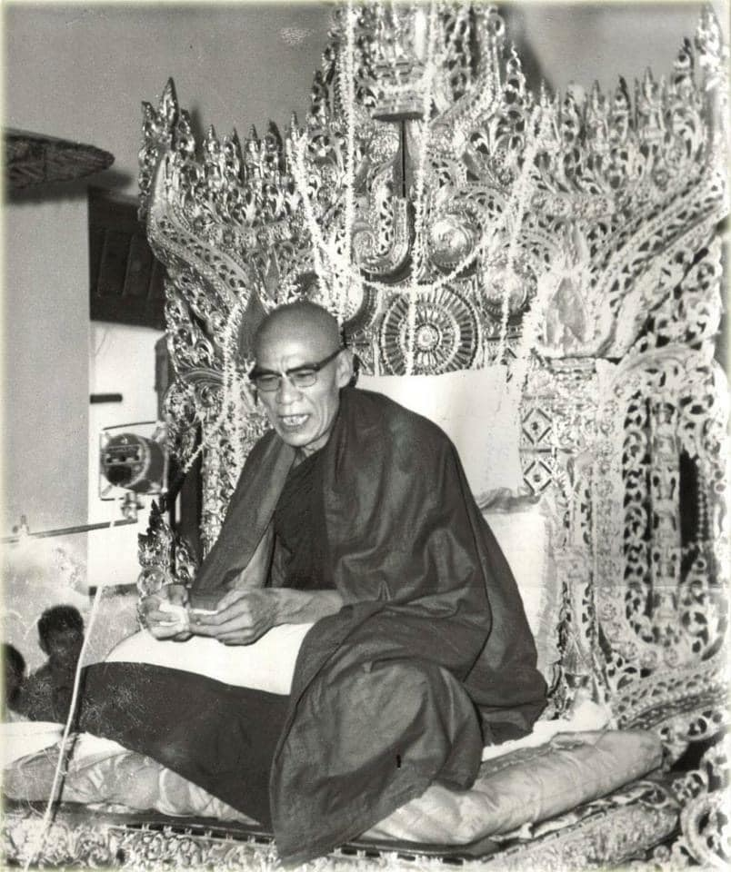
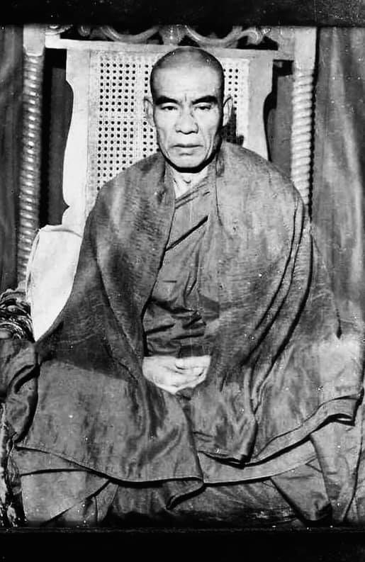
(1968)
Today Dhamma listeners are more than the numbers in the movie, theatre. Beings are sinking and flowing down in the stream of saṃsāra. Therefore, people request me to deliver Dhamma talk to free from the round of existence. U Zin (monks refer to themselves) (?? as the monk calls himself ??) doesn’t know what to talk. I don’t know letters. I think that I don’t have the learning pāramī (perfection) with me. There are learning, practice and result (pariyatti, paṭipatti and paṭivedha) of the Buddha Sāsana. U Zin doesn’t know anything on pariyatti. Please forgive me if I give the wrong concepts in names (i.e., his experience is not wrong but giving the wrong Buddhist terms to its experience). There are some scholars also among us. If they come and tell me; U Zin—you should not say like this and have to say like that.” Then I’ll ready to listen to them. I can’t speak pāḷi and don’t know how to use them.
When I was four or five years old, my parents put me in school. At that time there was no modern school like today. Children study in monk school (village monasteries become education center for village children—boys and girls). My parents put me in school and want me to read and write. I don’t have interest and very often running away from school. I am very afraid of speaking to the monk and learning books. Of the three sāsana (In these three sāsana), Pariyat (pariyatti) is the cause; Patibat (paṭipatti) is the result (pursuance) of it, and paṭivedha is the result and paṭivedha is the cause of pariyatti.
I know nothing about pariyatti, but in the knowledge of paṭipatti and paṭivedha, I know them all, because these are Dhamma, the result of my practice. For 21 months (nearly two years). I practice it like my bones and skin, are worn out. If I don’t die, then let me realize the Dhamma (i.e., if I don’t die and let kilesa die). With strong saṃvega and fear, I did the practice without getting up (This kind of determination is coming from the Buddha himself. See the MN 32: Mahāgosiṅgasutta). In the province of practice, I know all the natural dhammas. I am 54 years old now (in 1968). In 45 years, I was called a human. Did I have the mind of a human? NO! I didn’t have it. (What about most people today? See the pollution—i.e., mind, body and nature around the world). These things you could ask me.
Previously, my lay name was U Aung Tun. I didn’t have the mind of a human. Why was that? I am talking about myself and not on others. To know a human mind is a very difficult thing. A noble being (ariya) will know it. This dhamma can’t be known by worldlings. I check my mind and know all of them. How did I know it? The Buddha said that knowledge—knowing is the noblest thing. The knowledge must be right. Let’s analyze the knowing. In my speech, please forgive me if the word "bya" is at the end of a sentence. This has become a habit of mine.
(We-bu Sayadawgyi also had this habit. This doesn't happen all the time, just some of the time. It has nothing to do with defilements. This is a misinterpretation by Mahayana followers who think that arahant still has defilement.)
I have also been accused by others of taking legal action regarding this matter.
(Someone might think—it’s improper as a monk says this word. This bya word is no meaning at all. If you call out someone by his name, he can respond it with “bya!” It’s a masculine usage. For woman—shin!)
Except for a Buddha no-one can abandon it. There are two kinds of knowledge—lokiya (worldly or mundane) and lokuttara (supramundane) sammuti (concept) and paramatā (ultimate reality) truths (sacca) or paññatti and paramattha. There are two extreme ways—left way (torturing oneself) and right way (indulgence in sensual pleasure). The middle way is the Buddha’s way. In knowledge, there are wrong and right knowing (micchā and sammā). Micchā knowing is wrong knowing—knowing of which is not existed. Sammā knowing is knowing of which is existed. I don’t know pariyatti. Now I’ll talk about its nature and just listen to understand its nature. Pariyat (Pariyatti) is conceptual knowing. Patibat (paṭipatti) is viññāṇa knowing. Paṭivedha is paññā knowing. These are three knowing. I know about them with viññāṇa and paññā knowing. I don’t know it with saññā knowing because I don’t have pariyatti skill.
I am a worker and not a speaker. I have to talk about the nature of work. Furthermore, I also prefer people to do the work (i.e., practice). You also have to practice. Later I’ll talk about the minds. Dhamma could also be attained in one sitting.
(Most people would take it as an exaggeration. It’s not true, even the Buddha urged the monks for the attainment in one sitting—see the Mahāgosiṅga Sutta, Majjhima Nikāya 32. If someone achieves jhāna and has a good teacher and system to guide them, then it is possible. Some people can even reach jhāna in one sitting, e.g.—Mae-chee Kaww Sian-lam, a Thai forest nun; Sayadaw U Candima—Thae Inn tradition, we can see it in his life story.)
（1968年）
今日來聽法的人比看電影、戲劇的人還多。眾生正沈淪、流轉於**生死輪迴（saṃsāra）**之流中。因此，人們請我開示佛法，好從輪迴之中解脫出來。
「U Zin」（比丘們自稱之語）並不知道要說什麼。我不識字，也不懂巴利文。我想我並不具備聞慧資糧（pariyatti-pāramī）。佛法有三種層面：聞（pariyatti）、修（paṭipatti）、證（paṭivedha）。U Zin 對於聞慧一無所知。但若說到修與證之智慧，我全都親身經歷過，因為那是我實修所獲得的法。倘若我在說法中，將所證之經驗誤用佛教術語表達了，還請原諒。有些學者也在場，若他們指出：「U Zin，您不應這樣說，應該那樣說」，我也會樂意聽從。
我既不會講巴利語，也不知道該怎麼正確使用術語。
我四、五歲時，父母就送我去上學。那時還沒有像今天這樣的現代學校，孩子們都是在寺院學校學習（村裡的僧院便是村童的教育中心，不論男女）。我的父母希望我能讀能寫，但我一點興趣也沒有，經常逃學。我也非常害怕與僧人對話、學習經書。
佛法的三部分中，**pariyatti（聞）**是因，**paṭipatti（修）**是其結果與延續，**paṭivedha（證）**則是最終的成果；但證法又會成為重新學習的因。
我對「聞」一無所知，然而在「修」與「證」上，我全然明白，因為這是我實修後的體證。二十一個月來（將近兩年），我修行至皮骨俱損，發願：「若我不死，必證佛法。」（意即：若不是我死，那就讓煩惱死。）我懷著強烈的**法悚（saṃvega）**與恐懼，堅定修行，不離座而修（這種誓願源於佛陀自身，如《中部》第32經《大林間會經 Mahāgosiṅgasutta》所記載）。
在修行的領域中，我已明見一切自然法（dhammas）。我現在54歲（1968年），在過去的45年中，我被人稱為「人」。但我有過真正「人」的心嗎？沒有。（那麼當今大多數人呢？看看這世界的汙染——心的汙染、身的汙染、大自然的汙染。）
這些你們可以來問我。
我過去的在家名叫「U Aung Tun」，那時我沒有人的心。為什麼這麼說？我只是在談自己，不是他人。要知道什麼是「人」的心，是非常困難的事。**唯有聖者（ariya）才能真正知曉。**這法不是凡夫所能知。現在我檢視自己的心，已知其本質。
我是怎麼知道的？佛陀曾說，**「智慧（paññā）乃最上之法。」**但所知必須是「正知」。讓我們來分析「知」的本質。
若我在說話中，句尾出現「bya」這個詞，還請見諒，這是我說話的習慣。
（**韋布尊者（We-bu Sayadawgyi）**也有這樣的習慣，並非總是如此，而是偶爾為之。這和煩惱無關，有些大乘行者誤認為阿羅漢仍有煩惱，這種解讀是錯誤的。）
我也曾因這件事遭人誣告，還牽涉到法律問題。
（或許有人會認為，出家人怎能說這樣的話？其實，這個「bya」一詞是毫無意義的語氣詞。比如叫人名字時，對方也可回應一句「bya！」它是一種陽性語氣詞；女性則常用「shin！」）
除了佛陀之外，沒有人能完全捨棄這種習氣語氣。
在「知」的層次中，有兩種智慧：世間智（lokiya）與出世智（lokuttara）；還有世俗真理（sammuti-sacca）與究竟真理（paramattha-sacca），即**名言（paññatti）與實相（paramattha）**的區分。
世間有兩種極端：左邊是自我苦行（tapa），右邊是感官享樂；而中道正是佛陀所指示之道。
知的方式有正邪之分（sammā/micchā）。**邪知（micchā ñāṇa）**是錯誤的知，即知非所知；**正知（sammā ñāṇa）**是如實而知。我雖不懂經典，但現在我會談談「知」的本質，請你們聽我說它的真相。
聞（pariyatti）是名言知（概念性知），修（paṭipatti）是識知（viññāṇa知），證（paṭivedha）是慧知（paññā知）。這是三種知法。
我親身了解的是「修」與「證」的知，我沒有「名言知」（saññā）——因我缺乏聞慧資糧（pariyatti pāramī）。
我是「實作者」，不是「說話者」。我要講的是實修的本質，我也更希望人們能實際去修。
你們也應該去修行。
後面我會談到心的部分。其實，證得佛法在一座中也是可能的。
（多數人會覺得這是誇張，其實不然。連佛陀也曾鼓勵比丘們於一座中證得——參見《中部》第32經《大林間會經》。若某人已得禪定，又有良師指導，再配合正確的修行方法，這是做得到的。有些人甚至在一座中便可得禪定，例如：泰國森林派比丘尼 Mae-chee Kaww Sian-lam，以及 Thae Inn 傳承的U Candima Sayadaw等，從他們的修行歷程可見一斑。）
～～～～～～～～～～～～～～～～～～～～～～～～～～～～～～～
（一九六八年）
今日來聽聞佛法的人數，比電影院和戲院的人還多。眾生正沉淪於輪迴的洪流中。因此，人們請求我講述佛法，以期從輪迴中解脫。伍津（僧人自稱）（??僧人如何稱呼自己呢??）不知該說些什麼。我不識字，我想我沒有學習的波羅蜜（圓滿）。佛陀的教法有學習（pariyatti）、實踐（paṭipatti）和結果（paṭivedha）三部分。伍津對學習一無所知。如果我在名相上有所誤解，請原諒我（即他的經驗沒有錯，只是給予其經驗錯誤的佛教術語）。我們之中也有一些學者。如果他們來告訴我：「伍津——你不應該這樣說，而應該那樣說。」那麼我會樂意聽取他們的意見。我不會說巴利語，也不知道如何使用它們。
我四五歲的時候，父母送我到學校。當時沒有像今天這樣的現代學校。孩子們在僧侶學校學習（鄉村寺院成為鄉村兒童——男孩和女孩——的教育中心）。我的父母送我到學校，希望我能讀書寫字。但我沒有興趣，經常逃學。我非常害怕與僧侶交談和學習書籍。在三種教法（sāsana）中，學習（Pariyat/pariyatti）是因，實踐（Patibat/paṭipatti）是其結果（追隨），而證悟（paṭivedha）是結果，也是學習的因。
我對學習一無所知，但在實踐和證悟的知識方面，我卻完全了解，因為這些是佛法，是我實踐的結果。二十一個月（將近兩年）以來，我如同骨肉磨損般地修行。如果我不死，就讓我證悟佛法（即如果我不死，就讓煩惱死去）。帶著強烈的厭離感（saṃvega）和恐懼，我沒有起身地精進修行（這種決心來自佛陀本人，參見中部經典32：大牛角林經）。在修行的領域中，我了解所有的自然法則（dhammas）。我今年五十四歲（一九六八年）。在過去的四十五年中，我被稱為人。我擁有人的心嗎？不！我沒有。（今天大多數人呢？看看世界各地的污染——即心、身和自然）。你們可以問我這些問題。
以前，我的俗名是伍昂吞。我沒有人的心。為什麼呢？我談論的是我自己，而不是別人。了解人的心是非常困難的事情。聖者（ariya）才能了解它。這種法不是凡夫俗子所能了解的。我檢查我的心，並且完全了解它們。我是如何知道的呢？佛陀說，知——了解是最尊貴的事情。這個知必須是正確的。讓我們分析一下這個知。在我的講話中，如果句尾出現「bya」這個詞，請原諒我。這已經成了我的習慣。
（威布尊者也有這個習慣。這並非總是發生，只是一些時候。它與煩惱無關。這是大乘追隨者的誤解，他們認為阿羅漢仍然有煩惱。）
我也曾被他人指控就此事採取法律行動。
（有人可能會想——作為一個僧人說這個詞是不恰當的。「bya」這個詞根本沒有意義。如果你叫某人的名字，他可能會回答「bya！」這是男性用語。女性則用「shin！」）
除了佛陀之外，沒有人能夠捨棄它。有兩種知——世俗（lokiya）和出世間（lokuttara）的共許（sammuti）和勝義（paramatā）的真理（sacca）或概念（paññatti）和究竟實相（paramattha）。有兩種極端的方法——左道（自我折磨）和右道（沉溺於感官之樂）。中道是佛陀之道。在知方面，有錯誤的知（micchā）和正確的知（sammā）。錯誤的知是不存在的知，正確的知是存在的知。我不懂學習。現在我將談談它的本質，請仔細聽以理解它的本質。學習（Pariyat/pariyatti）是概念性的知。實踐（Patibat/paṭipatti）是識（viññāṇa）的知。證悟（Paṭivedha）是慧（paññā）的知。這是三種知。我以識和慧的知來了解它們。我不用想（saññā）的知來了解它，因為我沒有學習的技能。
我是一個實幹家，而不是一個演講者。我必須談談工作的本質。此外，我也更希望人們去做這項工作（即實踐）。你們也必須實踐。稍後我將談談心。佛法甚至可以在一次靜坐中證悟。
（大多數人會認為這是一種誇大。事實並非如此，甚至佛陀也曾敦促比丘們在一次靜坐中證悟——參見中部經典32：大牛角林經。如果有人成就了禪那，並且有一位好的老師和體系來引導他們，那麼這是可能的。有些人甚至可以在一次靜坐中達到禪那，例如——泰國森林比丘尼梅奇考暹南（Mae-chee Kaww Sian-lam）；泰因傳承的伍坎迪瑪尊者（Sayadaw U Candima），我們可以在他的生平故事中看到。）
With clear knowledge to understand the cause-and-effect dhammas in one sitting, one can enter the door of Nibbāna, and then close the door to apāyas (woeful planes). Concept is not existing dhamma. Seeing and knowing are paramatā. Some said that seeing was a concept. NO, seeing is paramat (paramatā)—nāma paramatā (i.e., viññāṇa). If not existing, you’ll not see it. Soon Loon Sayadaw said—if paññatti and paramatā are separated, this is not a noble person. Knowing both of them also is not a noble person. Only knowing their relationship is a noble person. (Soon Loon Sayadaw’s sayings are shorter and simple but there are profound meanings in them. It needs to contemplate them.)
How to know their relationship? This is paññatti and this is paramatā. Likewise, this is its nature. This is existing dhamma and this is not existing dhamma. You have to know them differently. The Buddha said that seeing was paramatā dhamma. Therefore, we should not argue as my dhamma is right or his dhamma is right. We’ll attain Nibbāna if we know the dhamma nature and sacca dhamma.
There are 40 samatha practices, practice with one of them as one’s preference. Knowledge comes from the doors of the six senses and their corresponding objects as the noblest knowing. Seeing, hearing, smelling, tasting, touching and knowing are dhammas. Seeing is visual paramatā, hearing is sound paramatā … knowing is dhamma paramatā. Some thought that seeing was a concept. NO, seeing is paramatā. Some say that seeing is a concept. They can’t distinguish between samatha and vipassanā. Thought (assumption) is a concept which is assuming something of not existing. Seeing is paramatā. Seeing mind and form is paramatā. You have to know their nature.
With samatha also know the samatha nature. With vipassanā also know the vipassanā nature. You have to know the element nature (dhātu). In mundane (worldly matter—lokiya) they practice alchemy and in supramundane (lokuttara) also. In mundane is using the billow and in supramundane is using the ānāpāna billow. There are dhammas—drifting and sinking, floating and liberation. Drifting is samatha. Floating is dāna, sīla actions (kamma). Sinking is the indulgence of sensual pleasure. The floating dhamma of dāna and sīla is only sometime we do it. For the sinking dhamma we do it all the time in non-stop.
Maybe it's like a machine gun without a break. If we examine modern people in today's world at an international level, only a very few will float, the rest will sink to the deepest depths.
Some (very few indeed) practice the drifting dhamma of samatha. If they attain jhānas and abhiññā (absorption samādhi and super-normal powers) and die, he will go to the lower planes of brahma god existences (i.e., lower than ariyan brahma gods). When their jhānas and abhiññā are finished, they will fall down again (like a bird falls down to the human earth). And he could continue falling down to apāyas if they meet bad companions here (i.e., on earth). (In today's world, this is the way to go for sure; because there is a lack of wholesome media and education.)
Now I’ll start talking about sinking dhamma. I’ll talk about the mind, and you listen to understand its nature. U Zin did the practice just for himself, not for others. Why is that? I didn’t have the mind to teach people. I was fear with saṁvega (sense of wise urgency) and practicing diligently until my bones and skin were worn out. In the past, I made wishes that now have to propagate the last Buddha Sāsana (In one of his talks, he mentioned that he had met the Buddha Padumuttara in the past. At that time, he was a king and inviting the Buddha and saṅgha to his offerings. This was the wishes he made from the Buddha. It seems to me it’s not for the mahāsāvaka’s pāramitās).
If I don’t do it, it’s also impossible. Therefore, I propagate the right dhamma for the sāsana. Now I’ll talk about the sinking (not arising) dhamma. In the past, U Zin was a bad guy and did a lot of robbery. I was a robber in the past, but don’t look down on me as a robber. I never killed people, and not as bad as Aṅgulimāla of the Buddha’s time. (Aṅgulimāla was a well-known bandit and killed a lot of men for his fingered garland.) Greedy mind, angry mind and deluded mind were with me before. This mind is an animal mind. For 46 years was a human but no human mind. Others took me as a human, no! I was not. I was not a human. (Humanity today should contemplate this. I didn’t have a human mind with me.
For the whole 46 years, only sinking dhamma was with me. I didn’t know the paramatā dhamma of mind and form nature. Only knowing the non-existing concepts and became atta—self view. For the whole 46 years I only had the minds of hell beings, animals and ghosts. If I died at that time, I would suffer at the places of hell, animal kingdom and hungry shades. Why was that? Because I didn’t have the human mind. If you ask me, "Since you are a human being, why don't you have a human mind?" I was clinging with wrong thought, wrong concept and wrong knowing to the minds and actions (kamma) which would send one to apāyas (painful existences).
What kinds of mind arose in me? I knew only non-existing of wrong view concepts (micchā-diṭṭhi paññatti). When the senses of door and sense objects were contacting, I didn’t have the knowing with me. I didn’t keep the door watch man with me. The Buddha said that we must have the knowing. When arom five and arom six contact, you have to go with knowing, eating with knowing and seeing with knowing.
(Here Sayadaw’s usage of his experiences has a problem. Arom five and arom six means internal and external sense bases for him. Arom five is the five khandhas arising inside the body and mind. Arom six is the five khandhas arise from the six senses of door contact with external objects. In the beginning of this talk Sayadaw already mentioned his weak point in learning—pariyatti).
Seeing is also dhamma, hearing is also dhamma, tasting is also dhamma, etc. Going, stepping, sleeping, etc. are also dhamma. In the past I didn’t have knowledge that I didn’t know it. I knew only non-existing concepts. All these are sinking dhamma. The Buddha taught that we should not think about past, present and future. We should know the present arising dhamma rightly. In the past I knew things with wrong knowing for the non-existing concept. All these were sinking dhamma. If died with this mind of 46 years, I would never rise again. How did I see things? When the eye and visual object contact, I didn’t know it as visual object. Since I didn't know the cause and effect relationship between mind and form, I didn't know that because of the cause, the result arose. From the eye door, I didn’t know it as dukkha, I didn’t know vedanā, I didn’t know about sukha and dukkha vedanās.
只要具足明確的因果正知，在一座之中就能證入涅槃之門（Nibbāna-dvāra），同時關閉通往**惡趣（apāya）**的大門。
名言（paññatti）並不是實存的法，真正的「見」與「知」才是究竟法（paramattha dhamma）。有人說「見」是名言，不對，「見」是究竟法——名法究竟（nāma-paramattha），即是識（viññāṇa）。若非存在，就無法見。Soon Loon Sayadaw曾說：「若名言與究竟法完全分離，那不是聖者；若兩者都知，那也不是聖者；唯有正知兩者間關係者，方為聖者。」（他的言語簡短質樸，卻含藏深義，需細細觀察。）
那要如何知曉它們的關係？就是：**這是名言，那是究竟；這有本質，那無本質；這是有為法，那是無為法。**你要能如實分辨它們的差異。
佛陀說「見是究竟法」，因此我們不該爭論誰的法對、誰的法錯。若能知法之本性、真理法（sacca dhamma），就能證得涅槃。
禪修有**四十種止禪（samatha）**法門，隨個人所喜選擇修習。最究竟的知，是從六根與六塵而來的知。見、聞、嗅、嘗、觸、知，皆為法。「見」是色究竟，「聞」是聲究竟……「知」是法究竟。
有些人說「見」是名言。錯！「見」是究竟法。那些人無法區分**止與觀（samatha-vipassanā）**的差異。**想（vitakka）**是名言，是對不存在之法的臆測。「見」是究竟，見心與色法皆是究竟。我們要能如實知見其本質。
修止禪者，要知止之性；修觀禪者，要知觀之性。應該認識一切法性（dhātu）。
世俗層次（世間法 lokiya）中，有「煉金術」；出世層次（出世間法 lokuttara）中，則有「安那般那的風箱（即觀呼吸修定）」。法的表現，有：漂流、下沉、浮起與解脫。止禪是漂流；佈施與持戒是浮起；感官貪樂是沉沒。我們偶爾做浮起的法（如佈施、持戒），但幾乎無時無刻都在做沉沒的事。
這也許就像一挺機槍，不停地掃射，從不間斷。若以國際現況來觀察，如今全世界只有極少數人能浮起，其餘都在沉沒至深淵之中。
有人修止禪（極少數），若得禪那與神通（jhāna & abhiññā），死後會升至下層梵天界（brahma loka）。但當他們的禪那、神通耗盡時，便墮回人間，如鳥落地；若再交上惡友，墮落入惡趣也不是不可能。（這正是今世之趨勢，因為善法媒體與教育皆稀少。）
接下來我要談「沉沒法（ sinking dhamma ）」。我會談「心」，請你們聽了後好好理解它的本質。
**U Zin（即我自己）修行不是為了他人，是為了自己。**為什麼？我那時並沒有教人之心，而是被「法悚心（saṃvega）」逼迫，以驚懼之情不斷修行，直到皮肉剝落。
過去我曾立願，現在就是在弘傳佛陀的末法教法（在另一場開示中我提過，我曾於過去世遇見Padumuttara 佛。那時我是一位國王，曾邀請佛陀與僧團接受供養。當時我所發之願，如今即將圓滿。這並非大聲聞的願力，應屬於弘法願）。
若我不這樣做，也是不可能的了。因此，我發願弘揚正法，為了這末法佛教。
我現在談談「沉沒法（不生起之法）」。過去的我，是個壞人，做了許多劫盜。我曾是盜賊，但請不要以此小看我。我從未殺過人，比起佛世時的指鬘外道（Aṅgulimāla），我還算不得什麼。他可是為了集滿指頭項鍊而殺人無數。
貪瞋癡之心曾與我同在。這樣的心，**是畜生之心。**我雖然活了四十六年，看似人，但根本不具人心。世人稱我為人？**不！我不是。**我不是人，我沒有「人之心」。
（今天的人類，應該也要對照反思。我自己就沒有過「人心」。）
整整四十六年，我只有「沉沒法」。我對「名法與色法的究竟法（paramattha dhamma）」一無所知，只認識不存在的概念，因此一直執著於「我」（我見 atta-diṭṭhi）。四十六年以來，我只有地獄、畜生、餓鬼的心。若我那時死去，必定墮入三惡道（地獄、畜生、餓鬼）。
為什麼呢？因為我沒有「人心」。
若你問我：「你既是人，怎麼沒有『人心』呢？」那是因為我執著於錯誤的思想、錯誤的概念與錯誤的知見——這些心與業（kamma）正是送人入惡趣的工具。
當時我心中生起的是什麼？我只知道那些不存在的錯誤概念（micchā-diṭṭhi paññatti）。
當六根與六塵接觸時，我內心沒有「知」的存在；我沒有設立「看門人（守護根門）」。佛陀說過：**我們必須要有「知」在場。當內六處（arom five）與外六處（arom six）**接觸時，要帶著覺知去吃、去看。
（在這裡，Sayadaw 所使用的「arom five 與 arom six」指的是：五蘊於內身中之生起（arom five），與六根六塵接觸而引發的五蘊（arom six）。Sayadaw 一開始就承認他對「聞慧 pariyatti」不足，因此用語上有所混雜。）
看，是法；聽，是法；嚐味，是法；行走、睡覺……全是法。但我過去並不懂，也從未知道，只知道不存在的概念。
這些全是「沉沒法」。佛陀教導我們：**莫憶過去、莫望未來，應觀當下現起之法。**而我過去所知者，皆為錯誤的知、對不存在法的錯誤見解，全是沉沒法。
若我當時死去，以那樣的心，將永無出離之日。
～～～～～～～～～～～～～～～～～～～～～～～～～～～～～～～
若能在一次靜坐中以清晰的智慧理解因果法則（dhammas），就能進入涅槃之門，並關閉通往惡道（apāyas）之門。概念並非真實存在的法。見和知是勝義諦（paramatā）。有些人說見是一種概念。不，見是勝義諦——名勝義諦（nāma paramatā，即識 viññāṇa）。如果不存在，你就看不見它。孫倫尊者說——如果名相（paññatti）和勝義諦（paramatā）分離，這就不是聖者。只知道兩者也不是聖者。只有了解它們之間的關係才是聖者。（孫倫尊者的話語簡短而樸實，但其中蘊含著深刻的意義，需要仔細思惟。）
如何了解它們之間的關係呢？這是名相，這是勝義諦。同樣地，這是它的本質。這是存在的法，這是不存在的法。你必須區分它們。佛陀說見是勝義諦法。因此，我們不應該爭論我的法是對的，他的法是對的。如果我們了解法的本質和諦理（sacca dhamma），我們就能證得涅槃。
有四十種止禪的修行方法，選擇其中一種自己偏好的來修。智慧來自六根門及其相應的對象，這是最尊貴的知。見、聞、嗅、味、觸、知都是法。見是視覺勝義諦，聞是聲音勝義諦……知是法勝義諦。有些人認為見是一種概念。不，見是勝義諦。有些人說見是一種概念。他們無法區分止（samatha）和觀（vipassanā）。思想（假設）是一種概念，是對不存在的事物的假定。見是勝義諦。見名色是勝義諦。你必須了解它們的本質。
修止也必須了解止的本質。修觀也必須了解觀的本質。你必須了解元素的本質（dhātu）。在世俗（世間事物——lokiya）中，他們修煉煉金術，在出世間（lokuttara）也是如此。在世俗中是使用風箱，在出世間是使用安那般那的出入息。有漂流和沉沒，浮起和解脫的法。漂流是止。浮起是布施、持戒的行為（kamma）。沉沒是沉溺於感官之樂。布施和持戒的浮起之法只是偶爾為之。對於沉沒之法，我們卻不停地一直在做。
也許就像一把不停歇的機關槍。如果我們審視當今世界國際層面的現代人，只有極少數會浮起，其餘的都會沉入最深的深淵。
有些人（確實非常少）修習止的漂流之法。如果他們證得禪那和神通（吸收定和超常能力）而死去，他們將會去到較低的梵天界（即低於聖梵天）。當他們的禪那和神通結束時，他們將再次墮落（像鳥兒落回人間一樣）。如果他們在這裡（即地球上）遇到惡友，他們可能會繼續墮落到惡道。（在今天的世界，這幾乎是肯定的道路；因為缺乏有益的媒體和教育。）
現在我將開始談論沉沒之法。我將談談心，你們仔細聽以理解它的本質。伍津修行只是為了自己，而不是為了他人。為什麼呢？我沒有教導他人的心。我因明智的急迫感（saṃvega）而恐懼，並精進修行，直到骨肉磨損。過去，我曾發願現在必須弘揚最後的佛陀教法（在他的一次開示中，他提到過去曾遇到巴多穆塔拉佛。當時他是一位國王，邀請佛陀和僧團接受他的供養。這是他向佛陀許下的願。在我看來，這並非為了大弟子的波羅蜜）。
如果我不去做，這也是不可能的。因此，我為了佛法弘揚正法。現在我將談談沉沒（不生起）之法。過去，伍津是個壞人，做了很多搶劫。我過去是個強盜，但不要因此而輕視我。我從未殺人，也沒有佛陀時代的鴦掘摩羅那麼壞。（鴦掘摩羅是個著名的強盜，為了他的指鬘殺了很多人。）貪婪的心、瞋恚的心和愚癡的心以前一直伴隨著我。這種心是畜生的心。四十六年來我雖是人，卻沒有人的心。別人認為我是人，不！我不是。我不是人。（今天的人類應該思考這一點。我沒有人的心。）
在整整四十六年裡，只有沉沒之法伴隨著我。我不了解名色本質的勝義諦法。只知道不存在的概念，並因此產生我見（atta）。在整整四十六年裡，我只有地獄眾生、動物和餓鬼的心。如果我當時死去，我將在地獄、畜生道和餓鬼道受苦。為什麼呢？因為我沒有人的心。如果你問我：「既然你是人，為什麼沒有人的心呢？」我執著於錯誤的思想、錯誤的概念和錯誤的知，以及會將人送到惡道（痛苦的存在）的心和行為（kamma）。
什麼樣的心在我心中生起呢？我只知道不存在的邪見概念（micchā-diṭṭhi paññatti）。當根門和對象接觸時，我沒有正知。我沒有讓守門人隨時看守。佛陀說我們必須有正知。當五塵和六塵接觸時，你必須帶著正知，吃飯帶著正知，看帶著正知。
（在這裡，尊者對自己經驗的運用存在問題。「五塵」和「六塵」對他來說是指內在和外在的處。「五塵」是指出現在身心內的五蘊。「六塵」是指從六根門與外在對象接觸而生起的五蘊。在這次開示的開頭，尊者已經提到他在學習——經教（pariyatti）方面的弱點。）
見也是法，聞也是法，味也是法，等等。行、走、睡等等也是法。過去我沒有正知，所以我不知道這些。我只知道不存在的概念。所有這些都是沉沒之法。佛陀教導我們不應該思考過去、現在和未來。我們應該正確地知道當下生起的法。過去我以錯誤的知來認識不存在的概念。所有這些都是沉沒之法。如果我帶著這四十六年的心死去，我將永不超生。我是如何看待事物的呢？當眼根和視覺對象接觸時，我不知道它是視覺對象。由於我不知道名色之間的因果關係，我不知道因為這個因，結果才會生起。從眼根，我不知道它是苦，我不知道感受（vedanā），我不知道樂受和苦受。
When I saw a visual object which I liked, it became pleasant and desirable. It became a happy mind (sukha and lobha). When seeing undesirable object, and it became disliked mind and angry mind arose. With hearing, smelling, tasting and touching kāma-raga (desire and lust) mind arose. I wanted to experience it very often. I didn’t know the characteristic of changing nature of the four elements such as stiffness, tension, pushing, pulling, hotness, coldness, etc. Likewise, I didn’t want to experience it. When the body became changed, I relied on the doctor. Because of the nature of dukkha, the dosa mind arose. This was how all the different kinds of knowing mind occurred as well. Knowing about good things became pleasant and on bad things became unpleasant.
Rāga and dosa (lust and anger) arose from seeing, hearing, smelling, etc. Because I didn’t know them as vedanā and not knowing them as dukkha. Not knowing about the truth of dukkha that rāga-dosa arose within me. Why these minds arose within me? Because I was not seeing vedanā, not knowing upādāna (clinging) and not knowing dukkha sacca. My mind was always covered with moha (delusion). Therefore, only lobha, dosa and moha were arising with me. When the six senses of door contact with the six sense objects and I knew the arising dhamma with non-existing concepts that these minds arose. The Buddha taught that non-existing was concepts and the existing was paramatā. U Zin didn’t know about the mind and form nature and its characteristics.
How did I see the concept? I saw a woman, and it became a desire lust mind (raga mind). When seeing a woman and knew it as a woman. Seeing her fat body and knew it as fat. If seeing thin, pretty, beautiful and only knew these things and raga mind arose. When seeing ugliness and dosa mind arose, and I knew non-existing things. Therefore, it became raga, dosa, moha, māna minds. Seeing the dog and knowing as dog, seeing pig, chicken, etc., it was also knowing as pig, chicken, etc. These were not right and it was only a concept. In reality these were feeling nature (vedanā), changing form nature (rūpa), mind and form nature. If you are seeing non-existing things and then going down by kneeling with your four legs
(i.e., to apāya, may be as a dog, animals, etc.; here Sayadaw’s usage is rough but has a serious tone and makes you remember it forever.)
This thing happens because we’re covered with moha (delusion) of avijjā dhamma (ignorance). Other sense doors of ear, nose, etc. were also in the same way. Whatever arose from there, I didn’t know about their vedanās, mind and form and couldn’t differentiate paññatti and paramatā, didn’t know their natural characteristics. I only knew about their non-existing dhammas (i.e., concepts).
When I saw a woman and I asked a child (a boy). What is that? His answer was, “This is a woman.” “Is she beautiful or pretty?” “She has white skin, fat and pretty” U Zin also was seeing it this way for 46 years. I was not different from the child’s view, and only had a child’s knowledge. When I heard a sound and asked the child. There was a dog barking, and I asked him, “Child! What is that sound?” The child’s response was “Ha! Why asking me? This is a dog barking” I heard it and also knowing as a dog barking. The child was also knowing as a dog barking. Everyone has the same knowledge, that is conceptual knowledge. We all are knowing the non-existing dhamma. We’re seeing and knowing of the non-existing dhamma.
The Buddha taught two views—wrong and right views. We don’t know the right view. The existing dhamma is mind and form, which is paramatā dhamma. We know only the non-existing dhamma that—in regarding smell, knowing as fragrance or smelly, etc. We have to stop at vedanā; if not, it continues to taṇhā and upādāna and the five khandhas/mind and form arise, and it’s turning the dependent arising process. Once an odor is smelled, "cittasaṅkhāra" or mental factors arise (i.e., minds arise). If you take it as fragrant rāga mind/lobha mind, peta mind (ghost mind) arise. If it’s a putrid smell, then you don’t want to experience it and dosa mind arises. If these minds arise, where do you think you're going? These are non-existing dhamma and with these minds and die in a hundred thousand humans die and no-one becomes human again. They’ll become dogs, pigs, chickens, fishes in the water and in hells (include hungry shades).
[Here we can see Sayadaw’s wisdom comes from enlightenment. Even though he knew nothing about the suttas, his understanding of paṭiccasamuppāda was very profound. Listening to his talk is very similar to Mogok Sayadaw’s teaching.]
With eating foods also, we don’t know about feelings (vedanā), don’t know mind and form and can’t differentiate between paññatti and paramatā. Eating sweet and knowing sweet, eating salty and knowing salty, etc. then we know the non-existing dhamma. These are concepts and atta dhamma, if you are knowing this way and die kneeling with your four legs and going down (i.e., apāyabhūmi).
[Today, humans should reflect this question. Why nowadays there are more animals on the earth than before? Where are they coming from? Every day around the world how many animals we kill them for foods, for oil, for medicine, for fur, etc. Every year it can be a billion (I don’t know the exact record) If we put pet animals in the list, it is unthinkable. Nowadays human greed, anger and delusion are greater than ever. If humans die and become animals, they will not have a forest to call their home, because many forests have disappeared. They are sure to end up on animal farms and breeding grounds, where they are subjected to human cruelty.]
Eat toddy (a type of palm tree) and know it is sweet; this even a child knows it. Eat salty food and know that it is salty. A child also knows it. For 46 years, I knew it this way. If die like this keep your back upward toward the sky and going down with your four legs (animal’s back is always toward sky), and become dog, pig, chicken, etc. These are peta mind (ghost), animal mind and hell being mind. Don’t take oneself as highly. With touching sensations, we experience it in the same way. In terms of the things we like, we behave like a cow (i.e., we rethink them as often as a cow ruminates its grass). We desire to experience it very often.
When the four elements change, we don’t want to experience it. You should not know them as aching, numbness, pain, etc. Right view (sammā-diṭṭhi) is right knowing and seeing. Knowing the not existing things is everyone knowing. A child also knows it. A child said to his mother, “Mom! It’s too hot.” We’re not different from the child. These knowledge have been known even from the beginning of the world. Numbness, pain, hot, cold, etc. are conceptual knowledge. If knowing this way with the back toward the sky and going down with the four legs. (This usage is referred to become a dog or falling down to woeful existences).
當我見到令人喜愛的色境時，心中就生起喜悅與渴愛，變成了樂受與貪心（sukha 與 lobha）。見到不喜歡的色境，則生起厭惡與瞋心（dosa）。耳、鼻、舌、身觸境亦復如是，都會引發欲貪心（kāma-rāga citta），讓我反覆渴望去經驗它。
我並不了解四大（地、水、火、風）變化的特性，如堅硬、緊繃、推拉、熱冷等現象，也不願去認識它們。當身體變化出現病相時，我依賴醫生。這就是苦（dukkha）的本質，而瞋恚心隨之生起。
這一切種種不同的「知」之心，也都是這樣出現的。知道好事會感覺愉快，知道壞事就會感到不悅。貪與瞋皆從眼耳鼻舌身意的接觸中生起。因為我不知道這些是受（vedanā），也不知道它是苦（dukkha），不知苦諦（dukkha sacca），所以貪與瞋就這樣不斷生起。
這些心是怎麼生起的呢？因為我不了解受，不知道取（upādāna），不懂苦諦。我的心總是被無明（moha）所覆蓋，因此只生起貪、瞋、癡（lobha, dosa, moha）。當六根接觸六境時，我用不存在的概念去認識當下現起的法，所以這些心就生起了。
佛陀說：不存在的法是名言（paññatti），存在的法是究竟法（paramattha）。而我 U Zin 對名色（nāma-rūpa）的本質與特相一無所知。
當我看到一位女子，就知道那是女人，心中生起愛欲（rāga）。看見肥的，便知是肥的；看見瘦的、美麗的、莊嚴的，也只是這樣分別知覺，而愛欲心就生起了。看到醜陋的，瞋心也會生起。我所知道的，都是不存在的東西，所以就變成了貪、瞋、癡、慢等雜染心。
看到狗，就知道是狗；看到豬、雞……也只是知道是豬、雞等等。這些認知都不正確，因為它們只是概念（名言，paññatti）。實際上，它們的真相是：受（vedanā）、變異的色法（rūpa）以及名色法（nāma-rūpa）。
若你正在「見」的，是不存在的法，那麼你的命運就如同四腳著地般地跪伏而下——投生惡趣，如狗、豬、畜生等。（Sayadaw 這裡用詞粗獷，語氣堅決，但發人深省，令人銘記。）
這一切的發生，是因為我們被無明（avijjā）所覆蓋。其他的根門——耳、鼻、舌……等，也是一樣。凡是從這些門中生起的法，我都不認識它們的受、不識名色，無法分辨名言與究竟法的差別，也不了解其法性。我只知道不存在的概念法。
有一次，我看到一位女子，便問一個小孩：「那是什麼？」孩子回答：「這是女人。」
我又問：「她漂亮嗎？」孩子說：「她膚白、肥胖，很漂亮。」
U Zin 過去四十六年來，也正是以這種眼光看待世間，與小孩的看法毫無二致，只停留在孩童般的認知。
有一次我聽到狗吠聲，便問孩子：「小孩，那是什麼聲音？」
他回答說：「你還問我？當然是狗在叫啊！」
我也只是知道那是狗在叫；孩子也是這麼知道。大家的知識，其實都是「概念知識」。我們全都只是在認識「不存在的法」。
佛陀教授有兩種見解——正見與邪見（sammā-diṭṭhi & micchā-diṭṭhi）。而我們卻都不知什麼是正見。
存在的法，是名與色，也就是究竟法（paramattha dhamma）；但我們只知那些不存在的法，例如在氣味上，分別為「香」或「臭」。
我們應當止於受（vedanā）。若不止於此，便會轉入愛（taṇhā）與取（upādāna），而名色五蘊便隨之生起，轉起整個緣起的輪迴。
一旦聞到一種味道，便會生起「心行（cittasaṅkhāra）」，也就是各種心。若認為香，便生起愛欲心、餓鬼心（peta citta）；若覺得臭，不願聞，便生瞋心。
若這些心生起，你想想看，你會往哪裡去？這些都不是實有的法，卻正是我們死後的業力根本——在十萬個人中死去者，沒有一人再轉生為人。他們成為狗、豬、雞、水裡的魚、地獄眾生、餓鬼等。
吃東西時，我們也不知道「受」、不知道「名色」、不知分辨名言與究竟。吃甜的，只知道甜；吃鹹的，只知道鹹。那也是孩子的知識。
我過去四十六年，就是這麼知道。若以這樣的知見而死，就如同動物一般背朝天、四腳著地，下墮惡趣。
（今日人類應當深刻反省這個問題：為什麼這世上現在比過去多出更多的動物？牠們從哪裡來？每天全世界有多少動物被殺，用作食物、製藥、取油、取毛等？每年加起來可能是數十億隻。如果再把寵物算進去，數字更是驚人。）
如今人類的貪、瞋、癡比以往更加劇烈。若人死後墮為畜生，甚至連森林都沒有了，因為樹林已大量消失。他們將落入畜牧場、養殖場，在人類的手中遭受各種殘酷。
吃椰汁時，只知道甜；吃鹹食時，只知道鹹，孩子也知道這些。我四十六年來就是這樣的知見。若死於此知見，就如同動物，背朝天、四腳向地而墮入惡趣。
這樣的心，是餓鬼心、畜生心、地獄眾生心。千萬不要自以為高明！
在觸覺方面，我們也是如此。我們對自己喜愛的事物，反覆思惟、渴望再體驗它。就像一頭牛反覆反芻牠的草料一樣，我們內心也是如此反芻慾樂。
當四大變化，出現痠痛、麻木等現象時，我們也不願去面對。你不應該僅僅知道那是「痠、麻、痛」……這些都是名言的知見。正見（sammā-diṭṭhi）是正確的知與見。
我們所知的，都是那些不存在的法。孩子也知道這些。就像孩子對母親說：「媽媽，好熱喔！」我們與孩子毫無差別。
這些知見，從古以來人類早已知之，但都是「概念知見（paññatti diṭṭhi）」。痠痛、熱、冷等，皆屬名言。
若你只是這樣知道，那麼你就像動物一樣，背朝天、四腳著地，墮入惡趣。
～～～～～～～～～～～～～～～～～～～～～～～～～～～～～～～
當我看到喜歡的視覺對象時，它變得令人愉悅和渴望。它變成了一種快樂的心（sukha 和 lobha）。當看到不喜歡的對象時，它變成了厭惡的心，瞋心生起。透過聽、聞、嚐、觸，欲貪（kāma-raga）的心生起。我想經常體驗它。我不知道四大元素變化特性的僵硬、緊張、推動、拉扯、熱、冷等等。同樣地，我也不想體驗它。當身體發生變化時，我依賴醫生。由於苦的本性，瞋心生起。這也是所有不同種類的知心如何發生的方式。知道好的事物變得令人愉悅，而知道壞的事物變得令人不悅。
貪（rāga）和瞋（dosa）從見、聞、嗅等生起。因為我不知道它們是感受（vedanā），也不知道它們是苦（dukkha）。不知道苦的真理，所以貪瞋在我心中生起。為什麼這些心在我心中生起呢？因為我沒有看到感受，不知道執取（upādāna），也不知道苦諦。我的心總是覆蓋著癡（moha）。因此，只有貪、瞋、癡在我心中生起。當六根門與六塵接觸時，我以不存在的概念來認識生起的法，這些心就生起了。佛陀教導說，不存在的是概念，存在的是勝義諦。伍津不知道名色及其特性。
我是如何看到概念的呢？我看到一個女人，它就變成了一個慾望貪愛的心（raga mind）。當看到一個女人並知道她是個女人時。看到她肥胖的身體並知道它是肥胖的。如果看到瘦、漂亮、美麗，只知道這些，貪愛的心就生起了。當看到醜陋時，瞋心生起，我知道不存在的事物。因此，它變成了貪、瞋、癡、慢的心。看到狗並知道是狗，看到豬、雞等等，也知道是豬、雞等等。這些都不正確，它只是一個概念。在現實中，這些是感受的本性（vedanā），變化形態的本性（rūpa），名色的本性。如果你看到不存在的事物，然後四肢跪地向下沉淪
（即墮入惡道，可能是狗、動物等等；這裡尊者的用法雖然粗略，但語氣嚴肅，讓人永遠記住。）
這種事情發生是因為我們被無明（avijjā dhamma）的癡（moha）所覆蓋。其他的根門，如耳、鼻等等，情況也是一樣。無論從那裡生起什麼，我都不了解它們的感受、名色，無法區分名相和勝義諦，不知道它們的自然特性。我只知道它們不存在的法（即概念）。
當我看到一個女人時，我問一個孩子（一個男孩）。那是什麼？他的回答是：「這是一個女人。」「她美麗還是漂亮？」「她皮膚白皙，豐滿而漂亮。」伍津四十六年來也是這樣看的。我與孩子的看法沒有什麼不同，只有孩子的知識。當我聽到聲音並問孩子時。有一隻狗在吠叫，我問他：「孩子！那是什麼聲音？」孩子的回答是：「哈！為什麼問我？那是狗在吠叫。」我聽到了，也知道是狗在吠叫。孩子也知道是狗在吠叫。每個人都有相同的知識，那是概念性的知識。我們都在知道不存在的法。我們正在看和知道不存在的法。
佛陀教導了兩種觀點——錯誤的觀點和正確的觀點。我們不知道正確的觀點。存在的法是名色，這是勝義諦法。我們只知道不存在的法——關於氣味，知道是香或臭等等。我們必須停留在感受（vedanā）；否則，它會繼續到渴愛（taṇhā）和執取（upādāna），五蘊/名色生起，它就轉動了緣起過程。一旦聞到氣味，「cittasaṅkhāra」或心所生起（即心生起）。如果你認為它是香的，貪愛的心/欲貪的心，鬼的心（peta mind）就會生起。如果是腐臭的氣味，那麼你就不想體驗它，瞋心就會生起。如果這些心生起，你認為你會去哪裡？這些是不存在的法，帶著這些心死去，即使有千千萬萬的人死去，也沒有人能再成為人。他們會變成狗、豬、雞、水中的魚和地獄眾生（包括餓鬼）。
[在這裡，我們可以看見尊者的智慧來自於開悟。即使他對經藏一無所知，但他對緣起的理解卻非常深刻。聽他的開示與莫哥尊者的教導非常相似。]
在吃食物方面，我們也不知道感受（vedanā），不知道名色，無法區分名相和勝義諦。吃甜的知道是甜的，吃鹹的知道是鹹的等等，然後我們知道不存在的法。這些是概念和我見之法，如果你這樣知道並四肢跪地向下沉淪而死（即墮入惡道）。
[今天，人類應該反思這個問題。為什麼現在地球上的動物比以前多？它們從哪裡來？全世界每天有多少動物被我們為了食物、石油、藥物、皮毛等等而殺害？每年可能達到數十億（我不知道確切的記錄）。如果我們把寵物也算進去，那就更難以想像了。如今人類的貪婪、瞋恚和愚癡比以往任何時候都更嚴重。如果人類死去變成動物，它們將沒有森林作為家園，因為許多森林已經消失了。它們肯定會最終出現在動物農場和養殖場，在那裡遭受人類的殘酷對待。]
喝棕櫚酒（一種棕櫚樹的汁液）並知道它是甜的；連孩子都知道。吃鹹的食物並知道它是鹹的。孩子也知道。四十六年來，我都是這樣知道的。如果這樣死去，背部朝天，四肢向下沉淪（動物的背部總是朝天），就會變成狗、豬、雞等等。這些是鬼的心、動物的心和地獄眾生的心。不要把自己看得太高。對於觸覺，我們也以同樣的方式體驗。就我們喜歡的事物而言，我們的行為就像牛一樣（即我們像牛反芻草料一樣經常回味它們）。我們渴望經常體驗它。
當四大元素變化時，我們不想體驗它。你不應該將它們視為疼痛、麻木、痛苦等等。正見（sammā-diṭṭhi）是正知和正見。知道不存在的事物是每個人都知道的。孩子也知道。一個孩子對他的母親說：「媽媽！太熱了。」我們與孩子沒有什麼不同。這些知識從世界之初就已經存在了。麻木、疼痛、熱、冷等等都是概念性的知識。如果這樣知道，背部朝天，四肢向下沉淪。（這種用法是指變成狗或墮入惡道。）
There used to be many red flag communists over in the countryside before.
(After Burma Independence in 1948 Burmese communist parties started the revolution. They were one party before, they split into two later; one inclining toward Soviet Russia and the other toward China.)
I had to make friend with them. Even before, I was not afraid of the Red Flat. Here I am talking about the mind. We were also bad that once time arrested by the red flag group. When I was in prison, my second younger brother was killed by them. (It seems he was put in a communist cell and not by the government.)
As soon as I heard the news, I was so angry and making an angry sound. When hearing and knowing something we don’t like become angry, but with what we like it becomes pleasant and taking pleasure in it, because we don’t know about mind and form. I didn’t know that the cause of his past kamma that now he had to pay for it. Not knowing about mind and form arise when the senses of door and the sense objects meet together and only raga, dosa, moha and māna arise (on the seeing, hearing, etc.) For 46 years if I died with these states of mind and never rising up again (to good destinations) because these were sinking dhamma. What I want you to know is whether you have these mental states (i.e., warnings.)
These mind states lead one to become dog, pig, chicken when minds arise during the seeing, hearing, etc. Do lobha, dosa, moha and māna happen to you? If happening, then you have to go down kneeling with your four legs. These knowing are not the right knowing and non-existing knowing. Therefore, the Buddha taught that these were not the ways of seeing and knowing and not the way of hearing and knowing, etc. (whatever arises from the six objects). You must see and know the existing dhamma. Now what I am talking is about the sinking dhamma. Dāyakas and dāyikās! Check your own minds. If you have wrong view and knowing, then practice quickly when you still have times.
The Buddha gave the following simile—he took a piece of earth on his finger nail and asking the monks “Bhikkhus! The earth on my finger nail and the entire earth on the ground, which one has the greater number?” They answered “Ven. Sir, the earth on the ground is more than on the finger mail.” “Yes, that’s right! If a hundred thousand humans die and reborn as humans are the numbers like the amount of earth on the finger nail. But the others born as hell beings, animals and hungry shades are as much as the earth on the ground.” Tomorrow I’ll talk about the drifting and floating dhammas.
I’ll continue to talk about wrong and right views, wrong and right knowing. I’ll talk about only the minds. For 46 years, U Zin only had wild and inferior minds within me, I didn’t aware of them. The Buddha reminded us that we must have awareness from the six senses of door on seeing, hearing and smelling, etc. Coming and going stepping taking things, etc. with knowing to do these things, etc. (see the satipaṭṭhāna sutta). Not put a watch-man or closed the door there that the guest minds come in and combine with the host mind. Without a watch-man, the mind is covered with delusion (moha) and the mind become out of control and behave according to its own. (Modern philosophies of freedom, human rights, etc. are similar to this mind. We should use it properly, wisely, in the directions of wholesomeness.) It follows behind the objects and indulgence in it.
The Buddha taught about the indulgence in sensual pleasure (kāma-sukha way), indulgence in the objects of visual form, sound, smell, etc. “Every time the doors (dvāra) come in contact with objects (ārammaṇa), indulging in the objects is the practice of kāma-sukhallikā-anuyoga—indulgence in sensual pleasure.” [or the western hedonism (an American Syndrome)]. Whoever follows this practice will not rise up again, and this is sinking dhamma. We’re not controlling our minds and look after with knowing. Let it free that it goes out on its own and going everywhere. This mind is similar to a wild bull without an owner. This bull eats and sleeps as much as it can and in free time looking for sexual pleasure. A bull with its owner was tied to a post with a rope and could not go to the people's fields or eat there.
People without a door watcher are like the wild bull. This bull goes to the people’s fields, eats there. Going inside the fences and eats the crops and trample on them. It knows only eating and goes to paddy fields, bean and corn fields where it used to be. A man who leaves his mind to its own devices is like a bull without an owner. At last, the owner of the farm can’t bear it anymore. He knows that at night the bull went in from this entrance. He sharpens his long knife until it’s shinning. When night comes, he goes there with his knife and waiting for the bull. Out of greed, the wild bull can’t see the suffering of cutting with the knife. It has only greed and knowing only greed. At night, it goes inside the field at the usual entrance. The man is hiding and waiting there to strike its front legs with the knife, and it cries out loudly and falls to the ground. It’s so painful that the bull continues to cry out, at that moment the man with his knife cut its throat.
Out of greedy, the wild bull legs and throat are cut by the man with knife. (This story seems very cruel. But if we’re influenced by diṭṭhi-taṇhā our future births would be worsening than this bull’s suffering. The sufferings in hells are even unthinkable.) Lobha, dosa and moha minds, etc. arise from the six senses of door are the minds leading to the sufferings of woeful existences (apāya dukkha). Therefore, dāyakas and dāyikās should not content only with the ordinary merits of outside the sāsana (such as dāna, sīla).
You are doing merits only for some time. Taking and looking after the precepts (sīla) for four days in every month. (That is Burmese uposatha days—full moon, new moon, two 8th days). Sīla is kamma (action). When it gives the results, it will have beauty and long life, etc. With dāna it gives the results of human and heavenly happiness and wealth, etc. When good kamma results not arise and have wrong view on the non-existing dhamma which send one to painful existence (apāya). Dāna and sīla can’t do or help you in this case.
Therefore, at the time when we meet the Buddha Sāsana, the Buddha taught us not to associate with the fools (bāla) and associate and the wise (paṇḍita). (Sayadaw tried to recite the Maṅgala Sutta chanting, but he couldn’t do it well. This point was also mentioned in the talk on his life). This was teaching to the heavenly beings. They don’t have the coarse physical forms. So, they only have mental feelings (vedanā). They are refined forms (These points give us the idea of heavenly beings don’t have sexual relationship). Heavenly beings are a kind of hungry shade (ghost) because they are very greedy.
(Sayadaw was using it as great peta. It does not mean they are a kind of peta, just as a metaphorical term. Their hunger for sensual pleasure is very great and never have satisfaction like some politicians and a million or billionaires of today.
But they are better than modern economists who have nothing of power or money and postulate a lot of greedy ideas and views how to make money).
過去在鄉下地區，共產黨「紅旗派」的人很多。
（緬甸獨立後，在 1948 年，緬共展開武裝革命。原本是一個黨，後來分裂成兩派，一派靠向蘇聯，另一派靠向中國。）
我那時必須與他們打交道。早在那時，我也不怕紅旗黨。現在我要講的是「心」。我們自己也不是什麼好人，有一次甚至被紅旗派抓走關了起來。在我入獄時，我的第二個弟弟被他們殺害了。（看來他不是被政府逮捕，而是被共產黨囚禁並殺害。）
當我聽到這消息時，氣到發出怒吼。當我們聽到、知道自己不喜歡的事，就會生氣；若是喜歡的事，則會感到愉悅並沉迷其中。為什麼會這樣？因為我們不了解名與色（nāma-rūpa）。我那時不知道弟弟之死是過去業的果報，是他應受的報應。不知名色之法的人，在六根接觸六境時，只會生起**貪、瞋、癡、慢（rāga, dosa, moha, māna）**這些心。過去那四十六年中，如果我死於這些心中，是絕無可能再升善趣的，因為那全是沉淪法（沉沒的心）。
我希望你們明白的就是——你們是否也有這些心態？（這是一種警示。）
這些心會導致人轉生成狗、豬、雞，當這些心在見、聞、嗅、觸等六門中生起時。你有貪、瞋、癡、慢的心嗎？如果有，那你就得跪下用四隻腳往下走了！（譬喻墮入畜生趣）這些心知都不是「正知」，而是對「非實在之法」的錯誤認知。
因此佛陀才會教導：這些不是「正見之見、正知之知」，也不是「如實聞、如實觸、如實知」等等。凡是從六境生起的法，都必須「如實見、如實知」。
我現在所說的，是「沉沒法」。各位男、女施主（dāyaka, dāyikā）應當檢查自己的心，如果你們還有邪見與錯誤認知，趁現在還有機會時趕快修行！
佛陀曾給予一個譬喻：他用指甲挖起一小撮泥土，問比丘們說：
「比丘們！我指甲上的泥土與整片大地相比，哪個多？」
比丘們回答：「尊者，當然是大地上的泥土多得多。」
佛陀說：「對了！如果有十萬人死去，能夠再轉生為人者，就如這指甲上的泥土那麼少；而轉生為地獄、畜生、餓鬼者，則如整片大地那麼多！」
明天我會繼續講解「漂浮法」與「浮起法」（drifting & floating dhammas）。
我會繼續講解錯見與正見、錯知與正知，並專談「心」。
我 U Zin，過去四十六年裡，心中充滿的是野蠻與下劣的心，但我當時完全不自知。
佛陀提醒我們：從六根——眼、耳、鼻、舌、身、意中，在見、聞、嗅等經驗裡都應具備正知。來來去去、行走取物等，都應具備「正念正知」（參見《念處經》）。
若未放置守門人，那些「客心」就會從外而入，與「主心」混合。若無守門人，心便會被**無明（moha）**所蓋，放任自流、任意行動。
（今日許多所謂的「自由哲學」、「人權觀念」，其實就像這樣不受控的心。我們應善用這些自由，把它導向善法。）
放任不管的心，只會隨境漂流，沈溺其中。佛陀教導：沉迷於色、聲、香等六境的感官快樂，就是在行淫欲樂行（kāma-sukhallikānuyoga）。
這就如同今日的「西方享樂主義」（美國式生活症候群）。凡是實行這種生活方式者，皆無法脫離輪迴，只會越沉越深，這就是「沉沒法」。
我們未能掌控自己的心，讓它四處奔馳，自由妄動。這樣的心就像一頭沒有主人的野牛。
這頭牛吃了睡、睡了吃，有空就尋歡作樂。若這頭牛有主人，會被繩子綁在柱子上，不會跑去吃別人田裡的作物。
沒有「守門人」的人就像這頭野牛。牠跑進人家的田地，大啖稻子與蔬果，還踐踏一地。
這牛只知道吃，一直回到那熟悉的稻田、豆田、玉米田……
農田的主人終於忍無可忍。他發現牛總是從哪個入口來，便將刀子磨得鋒利發亮。到了夜晚，他拿著刀伏在原處。
野牛貪吃，不覺痛苦與危險，只知貪欲。晚上又照常從原入口進入。
農夫趁牛靠近，一刀砍斷牠的前腿，牛痛苦地哀鳴、跌倒。農夫趁機再一刀割喉……
這個譬喻或許聽起來殘酷，但我們若被「邪見與貪愛」所驅，來世所受之苦會比這頭牛更悲慘，墮入地獄那種苦難更是難以想像。
貪、瞋、癡從六根生起的心，就是墮入惡趣之因。
所以各位施主們，不要滿足於只做布施與持戒這些善行。這些行為雖是善法，但都只是偶爾為之。持戒的話，也只是每月四天（即緬甸八關齋戒日：新月、滿月、上下弦）。
戒是「業」，其果報是得人身、美貌、長壽等等。
布施的果報是富裕與天界樂。但若你的錯見沒有消除，仍執著於「非實法」，那麼這些布施與持戒都救不了你——你仍然會墮入惡趣。
佛陀在他出世之時教導我們：不要親近愚人（bāla），應親近智者（paṇḍita）。
（Sayadaw 試著誦出《吉祥經》中的這句話，但因不熟悉巴利音調，誦得不太順。他也在其他講話中提到自己無學問。）
這些教誨，其實是針對天神而說的。他們並無粗重之色身，只具心所生色（cittaja rūpa）與細微之受（vedanā），因此他們沒有性關係這種事情。
（Sayadaw 把天神比喻為「餓鬼」，並非說他們就是餓鬼，而是指出他們對欲樂的貪執極深，永無滿足，正如今日的某些政治人物、億萬富豪——甚至比不過那些只會整天想賺錢的現代經濟學家，空口說白話，卻無實際福德與功德。）
～～～～～～～～～～～～～～～～～～～～～～～～～～～～～～～
以前鄉下有很多紅旗共產黨。
（緬甸於一九四八年獨立後，緬甸共產黨發動革命。他們原先是一個黨，後來分裂成兩個；一個傾向蘇俄，另一個傾向中國。）
我不得不與他們交朋友。即使在那之前，我也不害怕紅旗。我現在談的是心。我們也很壞，曾經被紅旗組織逮捕。我在監獄裡時，我的二弟被他們殺害了。（他似乎是被關在共產黨的牢房裡，而不是政府的牢房。）
我一聽到這個消息，非常生氣，發出了憤怒的聲音。當聽到和知道我們不喜歡的事情時會生氣，但對於我們喜歡的事情，我們會感到愉快並樂在其中，因為我們不了解名色。我不知道他過去業力的因，現在他必須償還。當根門和對象相遇時，不知道名色生起，只知道貪、瞋、癡、慢生起（在見、聞等等之中）。如果我帶著這些心態死去，四十六年都永不超生（到好的去處），因為這些是沉沒之法。我想讓你們知道的是，你們是否也有這些心理狀態（即警告）。
這些心態會導致人在見、聞等等時生起狗、豬、雞的心。你們是否會生起貪、瞋、癡、慢？如果會，那麼你們就必須四肢跪地向下沉淪。這些知不是正知，而是不存在的知。因此，佛陀教導說，這些不是見和知的方法，也不是聞和知的方法等等（無論從六塵生起什麼）。你們必須見和知存在的法。現在我談的是沉沒之法。各位護法！檢查你們自己的心。如果你們有邪見和邪知，那麼趁著還有時間趕快修行。
佛陀給了一個譬喻——他用指甲挑起一撮泥土，問比丘們：「比丘們！我指甲上的泥土和大地上的泥土，哪個更多？」他們回答說：「世尊，大地上的泥土比指甲上的多。」「是的，說得對！如果有一百萬人死去，轉生為人的數量就像指甲上的泥土那麼少。但其他轉生為地獄眾生、動物和餓鬼的數量就像大地上的泥土那麼多。」明天我將談談漂流和浮起的法。
我將繼續談論邪見和正見，邪知和正知。我只談論心。四十六年來，伍津心中只有粗野和低劣的心，我沒有覺察到它們。佛陀提醒我們，我們必須對六根門的見、聞、嗅等等保持覺察。來來往往、行走、拿東西等等，都要帶著正知去做這些事情（參見念住經）。不要讓看守人鬆懈或關閉門戶，讓客心進來並與主心混合。沒有看守人，心就會被愚癡（moha）覆蓋，心就會失控，並根據自己的意願行事。（現代的自由、人權等等哲學與這種心態相似。我們應該正確、明智地朝向善的方向使用它。）它追逐對象並沉溺其中。
佛陀教導關於沉溺於感官之樂（kāma-sukha way），沉溺於色、聲、香等等的對象。「每次根門（dvāra）與對象（ārammaṇa）接觸，沉溺於對象就是修習kāma-sukhallikā-anuyoga——沉溺於感官之樂。」[或西方的享樂主義（一種美國症候群）]。凡是遵循這種修行的人都不會再向上提升，這就是沉沒之法。我們沒有控制自己的心，也沒有帶著正知去看管它。任其自由地向外奔馳，到處遊蕩。這種心就像一頭沒有主人的野牛。這頭牛盡其所能地吃喝睡覺，空閒時就尋找性樂。一頭有主人的牛被繩子拴在柱子上，無法跑到別人的田裡吃東西。
沒有守門人的人就像野牛。這頭牛跑到別人的田裡吃東西，鑽進圍籬裡吃莊稼並踐踏它們。它只知道吃，並跑到它過去常去的稻田、豆田和玉米田。一個放任自己心意的人就像一頭沒有主人的牛。最後，農場的主人再也無法忍受了。他知道晚上牛從這個入口進來。他把他的長刀磨得閃閃發光。夜幕降臨時，他帶著刀到那裡等待牛。由於貪婪，野牛看不到刀割的痛苦。它只有貪婪，只知道貪婪。晚上，它像往常一樣從入口進入田裡。那個人躲在那裡等待用刀砍它的前腿，它大聲慘叫，倒在地上。痛苦萬分，牛繼續慘叫，就在那時，那個人用刀割斷了它的喉嚨。
由於貪婪，野牛的腿和喉嚨被拿刀的人割斷了。（這個故事似乎非常殘酷。但是，如果我們受到邪見和渴愛的影響，我們未來的投生將比這頭牛的痛苦更糟。地獄的痛苦更是難以想像。）從六根門生起的貪、瞋、癡等等的心，是導致惡道痛苦的心。因此，各位護法不應該只滿足於佛法之外的普通功德（例如布施、持戒）。
你們做功德只是一段時間。每個月持守戒律四天。（那是緬甸的布薩日——滿月、新月、兩個八日）。戒是業（行為）。當它產生結果時，將會有美麗和長壽等等。布施會帶來人天福報和財富等等的結果。當善業的結果沒有生起，而對不存在的法產生邪見，就會將人送到痛苦的存在（惡道）。在這種情況下，布施和持戒都無法幫助你。
因此，當我們遇到佛陀的教法時，佛陀教導我們不要與愚人（bāla）交往，而要與智者（paṇḍita）交往。（尊者試圖背誦吉祥經的偈頌，但他背得不好。這一點在他的生平談話中也有提到。）這是對天人的教導。他們沒有粗糙的肉體，所以只有精神上的感受（vedanā）。他們是精細的形態（這些點給我們一個概念，即天人沒有性關係）。天人是一種餓鬼，因為他們非常貪婪。
（尊者在這裡用「great peta」來形容他們。這並不意味著他們是一種餓鬼，只是一個比喻性的詞語。他們對感官之樂的渴望非常強烈，永不滿足，就像今天的一些政客和千萬富翁或億萬富翁一樣。
但是他們比現代經濟學家好，後者沒有權力或金錢，卻提出許多貪婪的想法和觀點來如何賺錢。）
The male devata is served by 500 or 600 celestial nymphs on each of his left and right sides. The Buddha called them as mahā-peta (great hungry ghost). The Buddha admonished them (here Subrahmā devata and his 500celestial nymphs came to see the Buddha for help.) for making companionship with the fools (bāla). U Zin myself in the past associated with the fools. What kinds of fool it is? You make friend with the fools of lobha, dosa, moha and māna which arise from visual object, sound, smell, etc. I had no knowledge about them before and not having a door watcher with me. This was happened for 24 hours each day.
The Buddha taught to associate with the wise (paṇḍita). If you’re consorting with three wise men will have blessings (maṅgala). You have been consorted with the fools started from the beginning of the world (i.e., in the beginning less of the saṃsāra). Are you now still consorting with them? They are the ones who push you down the saṃsāra chasm. The three wise men are sīla, samādhi and paññā or sīla maggaṅga, samādhi maggaṅga and paññā maggaṅga.
These are the wise men. The fools we’re talking are opium eater, alcoholics and gamblers, etc. Really pushing down us to painful existences (apāyas) are lobha, dosa, moha and māna dhammas or minds falling down there. We don’t know about the foolish minds which are consorted. We associate with them continuously. It’s possible if we don’t consort with drunkards and can shun away from them. Could you shun away from greed, anger, delusion, etc.? You’ll fall into the chasm with them, but you don’t stay away from it. The fools are not the drunkards, gamblers, opium users (at that time Burma didn’t has heroine yet), murderers, etc. It was talking about the minds. Pushing down someone into apāyas and the rounds of existence (saṃsāra) are these states of mind.
(Mogok Sayadaw also interpreted the fools in the maṅgala Sutta as unwholesome dhammas. Ariyas know between the fake and the real very clear.)
You can get the three wise men with you only by practicing insight. The Buddha taught about the four establishing of mindfulness practice—kāya, vedanā, citta, etc. He was teaching the right things. There are no other dhammas to Nibbāna except these four dhammas. There are 40 objects for samatha practice and people practice what they like it. The important thing is knowing the differences between paññatti and paramatā. With the right concept only get the right paramatā , and with the wrong ones and become wrong. These are to know with knowledge and ignorance (vijjā and avijjā).
For 46 years U Zin made friends with the four fools (lobha, dosa, moha, māna) who were going down to apāyas kneeling with their four legs. I practiced for 21 months with the strong determination as if I have to die let it be, otherwise I must realize the Dhamma. Firstly, I am mindful of the in-breath and out-breath of the ānāpāna (breathing) practice. If only knowing the in and out breaths is samatha practice. In kāyānupassanā (body contemplation) what is air (vāyo)? It’s the nature of pressure, motion, distention. These are all known by the mind, which is not the practice of samadhi. After the pressure, motion and distention it ceases. This is the ceasing of mind and form, and knowing the nature of vanishing. With many times of knowing the pressure and distention pressure and distention, etc. at the sitting area, the four elements are changing.
Knowing the pressure and distention of the air is kāyāsatipaṭṭhāna—mindfulness of the body and the other elements of earth, water, fire are also in the same way of knowing their nature. The earth element, the air element, etc. will kill you (in life at any time, near death is sure). All these are the elements of form (rūpa), and like the four dragon snakes, of the form you’ll bite with one of them (If they become imbalance, the most prominent one will kill you). Bitten by the earth snake one will die with stiffness of the body, by fire snake the body was burnt like fire and die with hotness, with air snake the body like cut into pieces and die. The excessive elements effecting the body are—earth effects the body and jaw with stiffness, water make the liquid body flowing out, with tejo—heat one will cry out “Ahh! Very hot and burning, please help me.”, with air (vāyo) become dizzy and the stomach can be burst open and die This air element can kill you at any time during eating, sleeping, in the toilet, on the car, etc. It’s a very quick air snake. Only vipassanā yogis know about their nature. If you contemplate their outer forms, you will only know the concepts.
(The four vipers designate the four elements, which were mentioned in the discourse of "The Simile of the Vipers")—Āsīvisopama Sutta, Saṁyutta N (SN.35.238) and the commentary. This sutta is important for mind development. Later we will see its importance in the teaching of Sayadaw U Candima. These four great elements effect our lives and during dying. Our health is also dependent on them (one of the causes). If they are imbalanced or in disturbance, they give us suffering in life and at dying, most important is at death.
When there is a disturbance in the earth element, the body becomes stiff like wood. The Buddha compared it as bitten by a viper of the wooden—mouth type. With the disturbance of the water element the body becomes putrid, oozing pus, flesh and blood and later leave behind bones and skin. It’s like bitten by a putrid—mouth snake. With the disturbance of the fire element, it becomes feverish all over. It’s like thrown into a pit of coal. The Buddha compared it with a fire—mouth snake. With the disturbance of air element, severe pains run through the joints and sinew. It’s like the body was smashed by rocks and the bones pulverized. It compared with a dagger—mouth snake. At near death, we’ll be bitten by one of the elements.)
When the four elements of the internal body are disturbed, the noble beings (ariyas) are not afraid for dying. They know all the four elements and the mind nature, the body loathsomeness, and kammas and its results that not afraid for dying. It becomes knowledge (vijjā). We sit longer on the hard floor and vedanā (feeling) arises. This arising form (rūpa) will kill us. We don’t know its nature of pressure and distention, go and feel the vedanā. This is vedanā satipaṭṭhāna—contemplation of feelings). If you only know the feeling of pain it’s wrong view (diṭṭhi). This is knowing upon the dukkha on dukkha. If you know hotness, aches and pains become dukkha samudaya (the cause of dukkha).
天界的男天神身邊，一邊有五百、六百名天女圍繞侍奉。佛陀稱他們為「大餓鬼（mahā-peta）」。佛陀也曾對這些天神（當時是 Subrahmā 天神與他的五百名天女前來求法）加以訓誡：你們不該與愚人為伍（bāla-saṃseva）。我 U Zin 過去也曾與愚人交往。那是什麼樣的愚人？就是那些在眼、耳、鼻、舌、身、意等六門中，見到色、聲、香等境而生起的貪、瞋、癡、慢等心。
我以前對這些毫無認識，也沒有守門人（正念）來警覺。這樣的狀況每天二十四小時持續不斷地發生。
佛陀教導我們要親近智者（paṇḍita）。與三位智者同行，即得三種吉祥（maṅgala）。但我們從無始劫以來，都只與愚人為友，沉淪輪迴。你現在是否還在與他們結交？這些愚人就是推你墮入輪迴深淵的同伴。那三位智者是誰？是戒（sīla maggaṅga）、定（samādhi maggaṅga）、慧（paññā maggaṅga）——這三道支。
這才是真正的智者。而那些我們所說的「酒鬼、賭徒、吸鴉片的人」等，雖然世俗認為是愚人，但真正將我們推入惡趣（apāya）的，是貪、瞋、癡、慢這些內心生起的法。
我們不知道自己與這些愚癡的心長期交往著，它們不斷地與我們為伴。雖然我們也許可以遠離酒鬼、賭徒這類人，但你能遠離自己的貪心、瞋心、癡心、慢心嗎？我們與這些心結交，然後一起墮落，卻從未想要遠離它們。
所以《吉祥經》中所說的「不與愚人為伍」，並不是指遠離那些作惡的外在人物，而是遠離這些內心愚癡的心法。（莫哥尊者對《吉祥經》中「愚人」的解釋亦是如此：指的是「不善法 dhamma」而非世俗意義上的壞人。聖者對真實與虛妄分辨極為清楚。）
你若想得到這三位智者（戒、定、慧），唯有透過內觀修行。佛陀曾教導四念處修法——身、受、心、法。這是真實的教導。通往涅槃，沒有別的法，唯有這四法。
禪修者可以選擇四十種禪修所緣中的一種來修習。但真正關鍵的是：**分辨「名言（paññatti）」與「實相（paramatā）」**的能力。
若用正確的概念作為引導，則可得正確的實相；若概念錯誤，結果也將錯誤。這就是有「智（vijjā）」與「無明（avijjā）」之別。
我 U Zin 過去四十六年來都與四個愚人（貪、瞋、癡、慢）為伍，如同跪著用四條腿（比喻墮為畜生）一起沉淪惡趣。後來我發願：「若不證得法，寧願死。」於是用這種決心精進修行了二十一個月。
一開始，我以出入息念（ānāpāna）作為觀修起點。若只是知道氣息的進出，這只是奢摩他（samatha）。
但若在**身隨念（kāyānupassanā）**中觀察：「什麼是風界（vāyo）？」——那是「壓力、推動、膨脹、移動」的性質。這些是以心來認知的，若只是知道氣的推動，那還是止禪。
但當你看到「壓力、推動」之後的止息與消散，這就是真正觀察到名色的止息與「滅」的本質。
隨著一再觀察壓力、推動、壓力、推動……你在打坐處所觀察到，四大正在變化、生滅。
對風界的觀察，是身念處的修行。其他三大——地、水、火，也是依其本性來觀。這些都是「色法（rūpa）」所構成的，而它們就像四條毒蛇。你活著會被它們咬死；死時，也會被其中之一咬死！
若它們失去平衡，最強的一個就會殺死你。
被「地蛇」咬死的人，身體僵硬；
被「火蛇」咬死的人，像被烈火焚燒；
被「水蛇」咬死的人，體內液體流出；
被「風蛇」咬死的人，內部像要爆開。
這風界之蛇可以隨時殺你——吃飯時、睡覺時、上廁所、坐車時……隨時都可能。牠跑得最快！
**唯有修觀的行者才能真正認識這些本質。**如果你只是觀察外表形相，那你只是停留在概念上。
（這就是佛陀所說的《毒蛇譬喻經》（Āsīvisopama Sutta, 相應部 SN 35.238），這經對於觀心修行極其重要。日後 U Candima Sayadaw 也會引用此經。）
這四大主宰我們的身心與命運。我們的健康也依賴它們——若四大失衡，身體即受苦，臨終之際尤甚。
當內在四大失衡時，聖者（ariyas）不會畏懼死亡，因為他們了知四大本性、心的實相、身體的厭惡性，以及業與果報，故無畏於死。這就是「智（vijjā）」。
打坐久了，屁股坐痛了，這就是受生起。那個「受」的色法就是來殺你的！你若不了解它的壓力、脹動本性，只會說「痛」，那就是** vedanānupassanā（受念處）。但如果你只知道「痛」，這就是邪見（diṭṭhi）**！
這種痛是「苦上的苦」（dukkha-dukkha）；若你再起煩惱去抗拒它，那是苦集（dukkha-samudaya）！
～～～～～～～～～～～～～～～～～～～～～～～～～～～～～～～
男天人在左右兩側各有五百或六百位天女侍奉。佛陀稱他們為摩訶布達（mahā-peta，大餓鬼）。佛陀告誡他們（這裡是指須梵摩天及其五百位天女前來拜見佛陀尋求幫助）不要與愚人（bāla）為伍。我伍津自己過去也曾與愚人為伍。是什麼樣的愚人呢？你與從視覺對象、聲音、氣味等等生起的貪、瞋、癡、慢的愚人交朋友。我以前對這些一無所知，也沒有守門人看守我的心。這種情況每天二十四小時都在發生。
佛陀教導要與智者（paṇḍita）交往。如果你與三位智者交往，將會有吉祥（maṅgala）。你從世界之初（即輪迴的開始）就一直與愚人交往。你現在還在與他們交往嗎？他們是將你推入輪迴深淵的人。三位智者是戒（sīla）、定（samādhi）和慧（paññā），或戒道支、定道支和慧道支。
這些是智者。我們談論的愚人是吸食鴉片者、酗酒者和賭徒等等。真正將我們推向痛苦的存在（apāyas）的是貪、瞋、癡、慢的法或心。我們不知道那些與之交往的愚癡的心。我們不斷地與它們交往。如果我們不與醉鬼交往，並能避開他們，這是可能的。你能避開貪婪、憤怒、愚癡等等嗎？你會與它們一起掉入深淵，但你卻不遠離它。愚人不是醉鬼、賭徒、吸食鴉片者（當時緬甸還沒有海洛因）、殺人犯等等。它談論的是心。將人推入惡道和輪迴的是這些心態。
（莫哥尊者也在吉祥經中將愚人解釋為不善法。聖者非常清楚地知道虛假和真實之間的區別。）
只有透過修習內觀，你才能擁有三位智者。佛陀教導四念住的修行——身、受、心、法等等。他教導的是正確的事物。除了這四法之外，沒有其他通往涅槃的法。有四十種止禪的對象，人們修習他們喜歡的。重要的是要知道名相和勝義諦之間的區別。只有透過正確的概念才能獲得正確的勝義諦，而透過錯誤的概念則會變得錯誤。這些需要以智慧和無明（vijjā 和 avijjā）來了解。
四十六年來，伍津與四個愚人（貪、瞋、癡、慢）交朋友，他們正四肢跪地向下沉淪到惡道。我以堅定的決心修行了二十一個月，心想如果我必須死就死吧，否則我必須證悟佛法。首先，我正念於安那般那（呼吸）的出入息。如果只是知道出入息，那是止禪的修行。在身隨觀中，風（vāyo）是什麼？它是壓力、運動、膨脹的本質。這些都是心所知的，而不是止禪的修行。在壓力、運動和膨脹之後，它就停止了。這是名色的止息，是知道消失的本質。多次知道坐處的壓力、膨脹、壓力、膨脹等等，四大元素正在變化。
知道空氣的壓力與膨脹是身念住——對身體的覺察，而地、水、火的其他元素也是以同樣的方式知道它們的本質。地元素、風元素等等都會殺死你（在生命中的任何時候，臨終時更是肯定）。所有這些都是色（rūpa）的元素，就像四條龍蛇一樣，你會被其中一條咬傷（如果它們失去平衡，最突出的一條會殺死你）。被地蛇咬傷的人會因身體僵硬而死，被火蛇咬傷的人身體像被火燒一樣因高溫而死，被風蛇咬傷的人身體像被切成碎片一樣而死。影響身體過度的元素是——地影響身體和下巴使其僵硬，水使身體的液體流出，火（tejo）使人哭喊「啊！好熱，燒起來了，救救我。」，風（vāyo）使人頭暈目眩，胃可能會爆裂而死。這種風元素可能在任何時候殺死你，無論是在吃飯、睡覺、上廁所、在車上等等。它是一條非常快的風蛇。只有內觀的瑜伽行者才知道它們的本質。如果你觀照它們的外在形態，你只會知道概念。
（四毒蛇代表四大元素，這在《毒蛇譬喻經》——Āsīvisopama Sutta，相應部（SN.35.238）及其註釋中提到。這部經對心靈的發展非常重要。稍後我們將看到它在伍坎迪瑪尊者的教導中的重要性。這四大元素影響我們的生活和死亡。我們的健康也依賴於它們（其中一個原因）。如果它們失去平衡或受到干擾，它們會在我們的一生和臨終時給我們帶來痛苦，最重要的是在死亡時。）
當地元素受到干擾時，身體會變得像木頭一樣僵硬。佛陀將其比作被木口型的毒蛇咬傷。當水元素受到干擾時，身體會變得腐爛，滲出膿、肉和血，最後只剩下骨頭和皮膚。這就像被腐口型的蛇咬傷。當火元素受到干擾時，全身會發燒。這就像被扔進煤坑裡。佛陀將其比作火口型的蛇。當風元素受到干擾時，劇烈的疼痛會貫穿關節和肌腱。這就像身體被石頭砸碎，骨頭粉碎一樣。它被比作匕首口型的蛇。臨終時，我們將會被其中一個元素所咬傷。）
當內在身體的四大元素受到干擾時，聖者（ariyas）並不害怕死亡。他們知道所有的四大元素和心識的本質、身體的令人厭惡之處，以及業及其結果，所以不害怕死亡。這變成了智慧（vijjā）。我們長時間坐在堅硬的地面上，感受（vedanā）生起。這種生起的色（rūpa）會殺死我們。我們不知道其壓力與膨脹的本質，卻去感受感受。這是受念住——對感受的觀照。如果你只知道痛苦的感受，那是邪見（diṭṭhi）。這是苦上加苦。如果你知道熱、疼痛和酸痛變成苦集（dukkha samudaya，苦的原因）。
From vedanā it connects to taṇhā (feeling → craving). I don’t contemplate the feeling (vedanā) of pain and stiffness, instead contemplate the feeling mind (i.e., mind experience vedanā.) How does the nature earth element arise? It becomes stiff, tense, numb, ache, etc.—this is the nature of earth element. In books, it mentioned as the nature of hardness and softness—is paṭhavī. In the khandha arises as becoming aches, numbness, stiffness. What is the nature of water element (āpo)? During the contemplation, the chest becomes tense and something is choking or blocking inside. Sweat is flowing out the body.
The nature of fire element (tejo) is becoming hot as fire heat and cold like a block of ice. The nature of air element (vāya) makes the heart beats in the chest, the body moves and tremble. I don’t contemplate the stiffness of from (rūpa) and instead contemplate the experience of vedanā (mental feeling appears at the mind base—heart area) nature of the mind. How the mind is experiencing vedanā? If you contemplate the stiffness and numbness, it becomes vedanā saññā (concept). I follow it with vedanā paññā of the feeling of the mind. I feel the stiffness; I feel the numbness, etc.; I feel the hotness, coldness, pressure, etc. of the four elements. In this way with the understanding of the characteristic nature of mind and the doors of apāya will be shut down.
In the past U Zin was counting the rosary beats with anicca, dukkha and anatta. This is saññā knowing. This is not the Buddha’s knowledge, everyone and even the child knows it. Likewise, this kind of anicca is the broken down of plate and pot, etc. When a man dies, it is dukkha. When you hit a stone with your leg and fall down, it is anatta (all these are used by ordinary Buddhists with the three universal characteristics as concepts in daily life.) What about the three characteristics taught by the Buddha? What is the nature of form (rūpa), mind (nāma) and loathsome (asubha)? You must know their characteristics. For example, when seeing the visual form and the knowing nature of it, the nature of inclining to it, every time arom five and arom six contact the inclining nature of the mind (i.e., six objects and six sense doors), and what is the nature of the mind doing? They have the nature of experience.
Not knowing this and with saññā knowing (concepts) will go down apāya (because of diṭṭhi). You must know with the Buddha’s knowing. (Here Sayadaw is only dealing with mind, form and loathsome and their nature). Majority of people only know with saññā nature. What is the nature of loathsomeness? After man dies, there is no mind dhamma. After three or four days, the body becomes bloated. Asubha means there is no movement of the body which is dead. After three or four days, it shows its asubha nature. The flesh body becomes dark color, brown color, bloated, putrid, tongue comes out, blood and pus come out from the eyes, later infested with worms eaten by them and only leaving behind with bones. These are the characteristics of the loathsome nature. You must see in these ways.
The Buddha told us that we have to know it in accordance with his knowing. The four satipaṭṭhāna insight practice starts from kāya and end with dhammānupassanā step by step. Establishing of ānāpāna is kāyāsatipaṭṭhāna. Contemplation of feeling or experience is vedanāsatipaṭṭhāna. After finished vedanā or ending of vedanā, it comes cittasatipaṭṭhāna. With dukkha ends the mind becomes happy, its happiness is short term. After some time, the four great elements reappear again.
These dhammas do not belong to us. The mind experiences of sukha and dukkha. I know this nature. It’s arising and passing away, arising and passing away, etc. It only has sabhāva dhamma (its own nature) and common characteristics (samaññā-lakkhaṇa) of anicca, dukkha, anatta. With the eye and seeing form is seeing form nature, hearing sound is hearing sound nature, etc. The eye can’t hear, so they do their own job, etc. The elements and the six objects (arom) are doing their own job (i.e., 12 āyatanas). Then we know the sabhāva lakkhaṇa and samaññā lakkhaṇa of mind and form. As we have seen the internal sabhāva elements the external of form, sound, smell, etc. are also sabhāva dhātu. They exist with their own nature. We understand the nature of elements.
At the time of seeing, I know the nature of form (rūpa) and mind. Seeing the elements attain Nibbāna. Seeing form also enter the stream (sotāpatti magga). How does he see it? What is the nature of the characteristics of six sense objects and the six senses of door? Seeing, hearing, smelling, etc. are sabhāva. I only know sabhāva (sabhāva means natural dhamma—usually using with the other two words as—nissatta, nijjīva, sabhāva = not a being, not a soul and only nature). If seeing sabhāva lakkhaṇa attain Nibbāna. The whole world is sabhāva (In Burmese sabhāva is nature, in pāḷi individual character of thing, samaññā is common character.
For example, earth element has its own individual characters of hard, soft nature and impermanent (anicca) is common nature to all things—except Nibbāna.) These are the form (rūpa) nature only and don’t know the mind nature yet. Today I’ll mention the form nature only. It’s free from vedanā saññā by seeing the nature of form (here vedanā saññā refer to physical pains). There is no hot, cold, stiffness, pressure, etc. With arom five and arom six contact and at the present moment there are no four bad men who can enter it. (lobha, dosa, moha and māna). There is no raga, dosa, moha, māna mental factors (cetasikas) and it does not arise on visual form (other objects also the same), and saṅkhāra dhammas cease. Then what are there? At every moment the arising sabhāva dhamma of arom five and arom six are there, and free from concepts. The rise and fall of nāma (mind) come to an end. What kinds of mind and its rise and fall come to the end?
In the past, if seeing a woman, the mind was on a woman (concept of a woman), seeing a dog and the mind on dog, etc. which are changing cittasaṅkhāra—these minds not exist now. The guest minds not exist, and only the host mind exists. (Here we need to contemplate Sayadaw’s profound wisdom without any background of suttas).
從「受」會銜接到「愛」（vedanā → taṇhā）。我不去觀察痛感或麻木這類的「受」，而是觀照那體驗受的心（即在心所生起的感受——心所經歷的受）。大地元素是如何生起的？它呈現為僵硬、緊繃、麻木、疼痛等——這是地元素的本性。在經典中，它被稱為堅硬與柔軟的本性（paṭhavī）。在五蘊中，它呈現為酸痛、麻木、僵硬。
那麼水元素（āpo）的本性是什麼？在觀察時，會感覺胸口緊繃，彷彿有東西堵塞，汗水也會從身體流出。
火元素（tejo）的本性是炙熱如火、寒冷如冰。
風元素（vāyo）的本性，則會使心臟在胸口跳動，身體震動、顫抖。
我不是觀察色身的僵硬，而是觀照在心處（心所緣）中出現的受，也就是感受的心的本質。心是如何經歷「受」的？如果觀察的是僵硬與麻木，那就變成了受的概念（vedanā saññā）。我則是用「受的智慧（vedanā paññā）」去追隨、觀察。
「我正在感覺僵硬」、「我正在感覺麻木」、「我正在感覺熱、冷、壓力」——這些四大之性，在心中以受的方式顯現出來。如此觀照，就能理解心的本性，並且關閉惡趣之門（apāya-dvāra）。
過去 U Zin 我念珠持誦「無常、苦、無我」，這只是一種「想知（saññā知）」，並不是佛陀所說的「佛智（Buddha ñāṇa）」。因為每個人、甚至小孩都會這麼說。例如，盤子摔碎了就是「無常」，人死了是「苦」，撞到石頭跌倒就是「無我」——這些只是以概念在生活中套用三相。
那麼佛陀所教導的三相是什麼？色法（rūpa）、名法（nāma）、不淨（asubha）是什麼？要以智慧了知它們的特相。
譬如，當眼見色時，要知道其「認知的本質」、「傾向（貪取）之性」；每當五內門與六外境（arom five and arom six）接觸時，要看見心的傾向性：心在做什麼？它具有經驗的特性（體驗性）。
若不知此理，而只是以「想知」作為認知，那麼必墮入惡趣（因有邪見 diṭṭhi）。你必須以**佛知（Buddha ñāṇa）**去認知。這裡，尊者僅以「心、色、不淨」及其本性作為關照對象。
一般人只知道「想知（saññā）」。那麼什麼是不淨（asubha）的本性？人死後已無心法，三、四天後，身體開始脹大腐爛。所謂的不淨，是指失去生命活動後的色身狀態。屍身發黑發紫、腫脹潰爛，舌頭外伸，眼中流出膿血，最後被蛆蟲啃食，只剩下白骨——這些才是不淨的本性。你應當如是觀察。
佛陀說：「應以佛智來知。」
四念處的觀智修行，由「身隨念」開始，一步步至「法隨念」完成。
建立出入息的觀照，是身念處（kāyānupassanā）；對「受」或「體驗」的觀照，是受念處（vedanānupassanā）；當「受」終止，就轉入心念處（cittānupassanā）。當苦受止息，心會變得快樂，但這種快樂只是短暫。片刻之後，四大再度出現。
這些法（色與心）都不屬於「我」。心所經歷的樂與苦，是自性法（sabhāva dhamma），是生滅變化的過程。
眼見色，是見色之性；
耳聞聲，是聞聲之性；
眼不能聞，耳不能見——各有其自性。
六根六境，都只是在做它們自己的工作（dhātu）。
如此觀照，我們就會知道名色的自性特相（sabhāva lakkhaṇa）與共相（samaññā lakkhaṇa）。
當內在自性被見到，則聲、香、味等外境也只是自性之法（sabhāva dhātu），皆隨其性存在。
如此，我就理解了「元素」的本性。
當我看見色的那一刻，我便知道：這是色的性、心的性。
見「法性」，即能證得涅槃。以見色之智，即可入流（sotāpatti magga）。
六根六境的性是什麼？
見、聞、嗅、嚐等，皆是法性（sabhāva）。
我只認識法性（「sabhāva」意指：不是人、不是靈魂，而是純粹的自然法）。
若見到「法性之相（sabhāva lakkhaṇa）」，便能證得涅槃。
整個世間即是法性（在緬語中，sabhāva 解作自然；在巴利語中則是個別法的特相，而「共相」為 samaññā-lakkhaṇa）。
例如，地界具有「硬、軟」的個別特性，而「無常」是對一切法的共相——除了涅槃以外。
以上所說的，皆屬於色法的自性；至於心法的自性，我將在下次再談。今天我僅談「色法的自性」。
這樣的觀照，使我超越了「痛、熱、冷、壓力」等概念性的受（vedanā saññā）。
當五內門與六外境接觸的當下，那四位壞傢伙（貪、瞋、癡、慢）無法進入。眼見色時，無貪、無瞋、無癡、無慢等**心所（cetasika）**生起，觀照對象也一樣。行蘊（saṅkhāra dhamma）止息了。
那麼，當下是什麼？
在每個當下，五內門與六外境所生起的法性法（sabhāva dhamma）顯現，且超越概念（paññatti）。名法（心）的生滅停止了。
過去，見女人便生起「女人」的概念心，見狗便有「狗」的概念心——這些皆是「行蘊心（cittasaṅkhāra）」。這類的心如今不復存在。
客心（訪客心）不再，唯有主人之心在。
（這一句深義無比，需細細體會 Sayadaw 直觀實證的智慧，雖無經論背景，卻句句真知灼見。）
～～～～～～～～～～～～～～～～～～～～～～～～～～～～～～～
從感受（vedanā）它連接到渴愛（taṇhā）（感受→渴愛）。我不觀照疼痛和僵硬的感受（vedanā），而是觀照感受的心（即心體驗感受）。地元素的本性是如何生起的？它變得僵硬、緊張、麻木、痠痛等等——這是地元素的本性。在書中，它被描述為堅硬和柔軟的本性——是地界（paṭhavī）。在蘊中，它生起為痠痛、麻木、僵硬。水元素（āpo）的本性是什麼？在觀照時，胸部變得緊張，內部有東西哽咽或阻塞。汗水從身體流出。
火元素（tejo）的本性變得像火一樣熱，像冰塊一樣冷。風元素（vāya）的本性使心臟在胸腔中跳動，身體移動和顫抖。我不觀照色的僵硬，而是觀照心的感受（vedanā）體驗（出現在心所依處——心臟區域）的本性。心是如何體驗感受的？如果你觀照僵硬和麻木，它就變成了感受想（vedanā saññā，概念）。我以感受的心之慧（vedanā paññā）來追隨它。我感覺到僵硬；我感覺到麻木等等；我感覺到四大元素的熱、冷、壓力等等。這樣，透過理解心的特性本質，惡道之門將會關閉。
過去，伍津用無常、苦、無我來數念珠。這是想的知（saññā knowing）。這不是佛陀的智慧，每個人甚至孩子都知道。同樣地，這種無常是盤子和罐子破碎等等。當一個人死亡時，那是苦。當你用腿踢石頭並跌倒時，那是無我（所有這些都被普通的佛教徒在日常生活中將三法印作為概念來使用）。那麼佛陀教導的三法印是什麼呢？色（rūpa）、名（nāma）和不淨（asubha）的本性是什麼？你必須知道它們的特性。例如，當看到視覺形態及其知的本性、傾向於它的本性時，每次五內處和六外處接觸時，心的傾向本性（即六塵和六根門），心的本性在做什麼？它們具有體驗的本性。
不知道這一點，而以想的知（概念）將會墮入惡道（因為邪見）。你必須以佛陀的智慧來知。（在這裡，尊者只處理名、色和不淨及其本性）。大多數人只以想的本性來知。不淨的本性是什麼？人死後，沒有心法。三四天後，身體開始腫脹。不淨意味著死亡的身體沒有任何運動。三四天後，它顯示出不淨的本性。肉身變成深色、棕色、腫脹、腐爛，舌頭伸出，眼睛流出血液和膿液，後來被蟲子侵蝕，只留下骨頭。這些是不淨本性的特性。你必須這樣去看。
佛陀告訴我們，我們必須按照他的智慧來了解它。四念住的內觀修行從身念住開始，逐步結束於法念住。建立安那般那是身念住。觀照感受或體驗是受念住。受念住結束後，就來到心念住。當苦結束時，心變得快樂，但它的快樂是短暫的。過一段時間後，四大元素又會重新出現。
這些法不屬於我們。心體驗樂和苦。我知道這種本性。它生起和滅去，生起和滅去等等。它只有自性法（sabhāva dhamma，其自身的本性）和共同特性（samaññā-lakkhaṇa）——無常、苦、無我。以眼見色是見色的本性，耳聞聲是聞聲的本性等等。眼睛不能聽，所以它們各司其職等等。元素和六塵（arom）各司其職（即十二處）。然後我們知道名色的自性相（sabhāva lakkhaṇa）和共相（samaññā lakkhaṇa）。正如我們已經看到內在的自性元素，外在的色、聲、香等等也是自性界（sabhāva dhātu）。它們以自身的本性存在。我們理解元素的本性。
在看的時候，我知道色（rūpa）和心的本性。見諸元素證得涅槃。見色也入流（sotāpatti magga）。他是如何看的呢？六塵和六根門的特性本性是什麼？見、聞、嗅等等是自性（sabhāva）。我只知道自性（sabhāva意為自然的法——通常與其他兩個詞一起使用：nissatta, nijjīva, sabhāva = 非有情，非靈魂，只是自然）。如果見自性相證得涅槃。整個世界都是自性（在緬甸語中sabhāva是自然，在巴利語中是事物的個別特性，samaññā是共同特性。
例如，地元素有其自身堅硬、柔軟的個別特性，而無常（anicca）是所有事物（除了涅槃）共同的特性）。這些只是色的本性，還不知道心的本性。今天我只談論色的本性。透過見色的本性，它從感受想中解脫出來（這裡感受想指的是身體的疼痛）。沒有熱、冷、僵硬、壓力等等。當五內處和六外處接觸時，在當下沒有四個壞人可以進入它（貪、瞋、癡、慢）。沒有貪、瞋、癡、慢的心所（cetasikas），它也不會在視覺形態上生起（其他對象也是一樣），行法（saṅkhāra dhammas）止息。那麼有什麼呢？在每一刻，五內處和六外處生起的自性法都在那裡，並且從概念中解脫出來。名的生起和滅去結束了。什麼樣的心及其生起和滅去結束了呢？
過去，如果看到一個女人，心就停留在女人身上（女人的概念），看到狗，心就停留在狗身上等等，這些都是變化的心行——這些心現在不存在了。客心不存在，只有主心存在。（在這裡，我們需要思惟尊者在沒有任何經藏背景下的深刻智慧）。
It only has the sabhāva dhamma of rūpa lakkhaṇa, and seeing its nature. I am not seeing the cittasaṅkhāra such as woman, dog, etc. The visual form, sound, smell etc. are only sabhāva nature. Fragrance, smelly, sweet, sour, etc. (taste and smell cittasaṅkhāra are ceasing.)
Arom five and arom six all are existing as sabhāva, and not thinking about the past, no expectation for the future, only staying with the present moment. How it stays at the present moment? In books, it was said that stream enterer abandoned wrong view and doubt. How he sees it and abandon it? He abandons it by seeing one Dhamma—ekodhammo (eka-dhamma), and knowing one. From the eye door it completes with sīla, samādhi and paññā, and gets vipassanā- ñāṇa. Rāga, dosa, moha don’t have the chance to arise and magga eradicate it. At the time of seeing, there only is the seeing sabhāva lakkhaṇa and the unwholesome mental factors (akusala-cetasikas) which send one to apāyas are ceased. In book, it was mentioned as stream enterer abandoned three saṁyojanas (fetters).
These three fetters of past, present and future of wrong see and knowing not exist because of right seeing and knowing. The impermanence of mental factors come to end, vedanā not connect to taṇhā, and stopping at vedanā. Because it sees the sabhāva lakkhaṇa. There are many sotāpanna’s minds. In regarding doubt on the past, present and future, some said about on the Buddha, Dhamma and Saṅgha, these are in books. What is stable in sīla? This is on indriya saṁvara sīla—sīla on the restraint of the sense faculties. If from the eye seeing woman, man, etc. sīla not stable. Sotāpanna sees the one Dhamma (eka-dhamma) of form (rūpa) sabhāva, mind (nāma) sabhāva or seeing one sabhāva dhamma. The noblest knowing is this one sabhāva of knowing. I wish you all could abandon the concepts of knowing which are the opposite of right view and knowing, and then realize the sabhāva right view and knowing.
Sādhu! Sādhu! Sādhu!
Note on sotāpanna:
From Sayadaw’s talk we know some nature of a sotāpanna. He is quite different from a worldling. One of the very distinct nature is he never views and knows things with concepts by knowingly. He will communicate with people by using concepts, but never take it as real. This point is very important for yogis to check their first stage of realization. Later we will see its important point in Sayadaw U Candima and his practice for sotāpanna. Thae Inn Gu Sayadaw had said if you see a woman, and it’s a woman, see a dog, and it’s a dog, then you are not a Sotāpanna. U Candima did not have knowledge on Dhamma and not had a proper teacher to guide him when he started the practice. He used the above quotation by Thae Inn Gu Sayadaw and checked his practice.
I heard a story on a very well-known Burmese author, Shwe U-daung. Actually, he was not a Buddhist—a Christian, but also study and practice. Once time he went to see Thae Inn Gu Sayadaw and talked about his realization. Sayadaw asked him by pointing to a woman, “What do you see?”
Shwe U-daung: a woman.
Sayadaw: No! You’re not a sotāpanna.
This same author mentioned in one of his writings that a sotāpanna took alcohol only water went into his body, the spirit could not enter it. U Sun Lwin (later Ven. Ādiccaramsī) asked Taung Pu-Lu Sayadaw as was it true? Sayadaw’s answer was; Sotāpanna or whatever it’s, if you take alcohol in accordance to its chemical nature (dhātu) you would be drunk.”
In the Chinese Mahāyana Chan (Zen) tradition there is a saying by Chan masters—this was before the practice mountain is mountain, river is river. During the practice—mountain is not mountain, river is not river. After the practice—mountain is mountain, river is river. In the sotāpanna’s view and knowing after the practice—still mountain is not mountain, river is not river. So, which one is true?
Worse than this is some Chinese Buddhists compare some great religious figures at the same level of the Buddha. So sotāpanna’s to arahant’s purity are lower than these upāsakas (prophets). How did they become Buddhists? I don’t understand them. Then the Buddha’s teachings will become wrong views. This is very clear they don’t know the pāḷi-suttas.
**只剩下色法（rūpa lakkhaṇa）的自性法（sabhāva dhamma）與對其本質的觀照。**我不再見到心行（cittasaṅkhāra）如「女人」、「狗」等概念。色、聲、香等僅僅是自性（sabhāva）而已。香、臭、甜、酸等味與嗅的心行（cittasaṅkhāra）也止息了。
**內在五蘊與外在六境（arom five and arom six）皆以自性存在，**不再思惟過去，也無未來期待，只安住於現前一念。那麼，是如何安住於當下的呢？
經典中說：須陀洹（sotāpanna）斷除邪見與疑。他是如何見、如何斷的？他是以見一法（ekodhammo）來斷除一切的。
從眼門見色之際，具足戒、定、慧三學，即得觀智（vipassanā-ñāṇa）。貪、瞋、癡不再有機會生起，道智（magga）將其斷除。
在「見」的當下，僅有「見」的自性相（sabhāva lakkhaṇa），而導向惡趣的**不善心所（akusala-cetasikas）**皆已止息。經典中說，須陀洹斷除三結（三種纏縛）：
身見（sakkāya-diṭṭhi）
疑（vicikicchā）
戒禁取見（sīlabbata-parāmāsa）
這三結所依於過去、現在、未來的錯誤見與錯誤知，如今因為**正見與正知的生起而止息。**諸心所的無常終止了，受不再導向愛（vedanā → taṇhā），因為他見到的是「自性相（sabhāva lakkhaṇa）」，而不是概念。
須陀洹果的心具有多種現象表現。
有些論說「對於過去、現在、未來」的疑，是指對佛、法、僧三寶的疑惑，這在書本裡有記載。但什麼是「戒」的穩固呢？這是指「根門防護的戒（indriya-saṁvara-sīla）」。如果從眼門見到男、女，而戒不穩固，那就還不是穩固的戒。
須陀洹所見的是「一法（eka-dhamma）」：色法的自性、名法的自性、或見一自性法。最尊貴的知見就是這對一自性法的正知（paññā）。
願你們都能捨離一切概念知（違逆正見之知），而證入自性之正見與正知。
善哉！善哉！善哉！（Sādhu! Sādhu! Sādhu!）
從這篇講記中，我們可理解須陀洹的某些特質。他與凡夫有極大不同。**一個非常明確的差異是：他絕不會以「概念」來知見諸法，且是「有意識地」不以概念知見。**他仍可用概念語言與人交流，但內心從不視其為真實存在。
這一點對於修行人判斷是否證入初果非常重要。這點也會在**Candima Sayadaw（烏真提瑪尊者）**的修行歷程中清楚呈現出來。
Thae Inn Gu Sayadaw 曾說過一句很重要的判準語：
「若你看見女人，就見為女人；看見狗，就見為狗，那你不是須陀洹。」
而尊者 U Candima 一開始並不具備佛法知識，也沒有系統的善知識指導他。他就根據 Thae Inn Gu Sayadaw 的這句話反覆檢查自己的觀行。
我也曾聽說一位緬甸著名作家**Shwe U-daung（金優當）**的故事。雖然他實為一位基督徒，但也學佛與修行。某日他去拜見 Thae Inn Gu Sayadaw 並談及自己的修行成果。尊者指著一位女子問：
Sayadaw：「你看到什麼？」
Shwe U-daung：「女人。」
Sayadaw：「不對！你還不是須陀洹。」
這位作家也曾在文章中寫道：
「若一位須陀洹飲酒，那酒精進不了他的身體，只有水進入。」
後來，U Sun Lwin（即後來的 Ven. Ādiccaramsī）向 Taung Pu-Lu Sayadaw 詢問此事是否屬實。Sayadaw 的回答是：
「無論是不是須陀洹，只要喝酒，依照其元素的化學性質（dhātu），一樣會醉。」
在中國大乘禪宗裡有一句名言：
「修行前，看山是山，看水是水；修行中，看山不是山，看水不是水；修行後，看山還是山，看水還是水。」
然而從須陀洹的角度來看，即使在「修行後」，看山仍非山、看水仍非水。那麼哪個才是真的呢？
比這更嚴重的錯見是，有些華人佛教徒將其他宗教人物與佛陀相提並論，認為他們甚至比阿羅漢更清淨。
如此一來，佛陀所教導的正法將被顛倒為錯見。
這非常明確地顯示出——他們根本不懂巴利經藏。
～～～～～～～～～～～～～～～～～～～～～～～～～～～～～～～
它只有色的自性法，並見其本性。我沒有看到心行，例如女人、狗等等。視覺形態、聲音、氣味等等都只是自性的本性。香味、臭味、甜味、酸味等等（味覺和嗅覺的心行都止息了）。
五內處和六外處都作為自性存在，不思過去，不期未來，只安住於當下。如何安住於當下？書上說，入流者捨棄了邪見和懷疑。他是如何見到並捨棄它們的呢？他透過見一個法——一法（ekodhammo），並了解一個法而捨棄它們。從眼根門，它具足戒、定、慧，並獲得內觀智慧。貪、瞋、癡沒有機會生起，道會根除它們。在看的時候，只有看的自性相，而將人送入惡道的不善心所（akusala-cetasikas）止息了。書上說，入流者捨棄了三個結（saṁyojanas）。
由於正見和正知，過去、現在和未來關於錯誤見和知的這三個結不再存在。心行的無常終止，感受不再連接到渴愛，並停留在感受。因為它見到了自性相。有很多入流者的心。關於對過去、現在和未來的懷疑，有些人談到佛、法、僧，這些都在書中。什麼是戒的穩定性？這是關於根律儀戒——對感官能力約束的戒。如果從眼睛看到女人、男人等等，戒就不穩定。入流者見到一個法（eka-dhamma）——色的自性、名的自性，或見到一個自性法。最尊貴的知就是這一個自性的知。我希望你們都能捨棄與正見和正知相反的概念之知，然後證悟自性的正見和正知。
善哉！善哉！善哉！
關於入流者的註釋：
從尊者的開示中，我們了解了入流者的一些本性。他與凡夫俗子截然不同。一個非常顯著的本性是，他從不有意識地以概念來看待和認識事物。他會使用概念與人交流，但絕不會將其視為真實。這一點對於瑜伽行者檢查他們的第一個證悟階段非常重要。稍後我們將看到它在伍坎迪瑪尊者及其入流者修行中的重要性。泰因谷尊者曾說，如果你看到一個女人，它就是一個女人；看到一條狗，它就是一條狗，那麼你不是入流者。伍坎迪瑪尊者在開始修行時對佛法一無所知，也沒有合適的老師指導他。他使用了泰因谷尊者的上述引言並檢查了自己的修行。
我聽過一個關於緬甸著名作家瑞伍當（Shwe U-daung）的故事。事實上，他不是佛教徒——他是基督徒，但也學習和修行。有一次他去拜見泰因谷尊者，談論他的證悟。尊者指著一個女人問他：「你看到什麼？」
瑞伍當：一個女人。
尊者：不！你不是入流者。
這位作者在其中一篇著作中提到，入流者喝酒精，只有水進入他的身體，酒精的效力無法進入。伍孫倫（後來成為阿迪伽藍西尊者）問東普魯尊者這是否屬實？尊者的回答是：「入流者也好，什麼也好，如果你按照酒精的化學本性（dhātu）攝入它，你就會醉。」
在中國大乘禪宗傳統中，禪宗大師有這樣一句話——這是修行前，山是山，水是水。修行中——山不是山，水不是水。修行後——山是山，水是水。在入流者修行後的見和知中——仍然是山不是山，水不是水。那麼，哪個才是真實的呢？
更糟糕的是，一些中國佛教徒將一些偉大的宗教人物與佛陀相提並論。因此，入流者到阿羅漢的清淨度低於這些優婆塞（先知）。他們是如何成為佛教徒的？我不理解他們。那麼佛陀的教導就會變成邪見。很明顯，他們不了解巴利經藏。
There are some unwholesome dhammas which stop someone to realize Dhamma in this life, and some are curable and some are not. It is based on a book called, “Fundamental Paṭiccasamuppāda Lectures” by Sayadaw U Sumana—Mogok meditation teacher, Sagaing Hill Siri Sumana Maggin Dhamma Center.
There are five kinds of obstacles (antarāya) which hinder the paths and fruits in practice. These are –
1. Ānantarika kamma—the five heavy kammas
2. Kilesantariya—defilements of wrong view
3. Vipākantariya—the results of past kammas
4. Ariyūpavādantariya—unwholesome actions done to noble beings.
5. Paññatti-vītikkamantariya—breaking the vinaya rules and no purification.
1. The five heavy kammas
Killing one’s mother
Killing one’s father
Killing arahant
Harming the Buddha by injuring him
Splitting the saṅgha
These five heavy kammas are incurable in this life. If a being dies with these kammas (even one of them) next rebirth will be in the great Hell.
2. The obstacles of defilement
There are ten kilesas—(1) greed (2) hatred (3) delusion (4) conceit (5) wrong views (6) doubt (7) sloth (8) restlessness (9) and (10) shamelessness and fearlessness of wrongdoing.
Here the obstacles of defilement means wrong views and doubt. The leader of wrong views is identity view (sakkāya-diṭṭhi) and from it develop two main wrong views—eternalism (sassata) and annihilationism (uccheda). With the extension of them—55 sassatas and seven ucchedas which are mentioned in the Brahmajāla Sutta, sutta no. 1, Digha Nikāya.
All these 62 wrong views have fallen away only to overcome the obstacle and with the practice can eradicate wrong views and doubt. To achieve this, yogis must understand the law of dependent co-arising—paṭicca-samuppāda by study or taught by teachers (e.g., Mogok Sayadaw’s talks).
3. The results of past kammas
There are eight kinds of living beings that can’t realize paths and fruits in their lives. These are: (1) beings in hells (2) beings in animal kingdom (3) beings as peta—hungry ghosts (4) beings as titans—asuras (5) worldling formless brahmā-gods (puthujjana arūpābrahma) (6) beings as brahmā-gods with no minds (asaññabrahma) (7) a person born with two wholesome roots only (duhetuka puggala), i.e., non-greed, non-hatred and delusion (8) seven persons without wholesome roots by births (ahetuka puggalas)
The seven persons without wholesome roots are: (1) born with blindness (2) born with deafness (3) born with dumbness (4) born as a dullard can’t remember things (5) born with craziness (6) not a man nor a woman (maybe between) (7) a person born with both organs of male and female.
I want to make some reflections on the (7) and (8) living beings in the list. Taken together, there are eight types of people, among them no. 4—born as a dullard can’t remember things and no. 5—born with craziness can’t even practice meditations. The other five people can do it, so they should study and practice planting the seed of wisdom. It makes me remember Don—an Esan youth (Thai Laotian) from our forest monastery in Ubon Province, near Bung Wai Village. He was born as a person with deafness and dumbness. His family are living in the village. In the beginning he came to the monastery very often. He helped the monastery in many ways—sweeping, hauling water, going alms round with the monks for carrying rice and foods for them, sometimes it was quite heavy, etc. On observant days, he sit meditation with the monks. Later he stayed at the monastery most of the time and stayed at empty kutis. Even sometime saw him wearing white clothes as pha-khao (eight-preceptor who wears white).
My emphasis here is even though he was an ahetuka person carrying some wholesome kammas with him to this life. If we contemplate them with the blessings mentioned in the Maṅgala Sutta and will find some of them—such as consorting with the wise, residing in a suitable place, directing oneself rightly, etc. Among them, it is very important to guide yourself correctly in this life and into the future.
The obstacles related to past kammas are incurable in this life for these beings (these include eight human beings: one duhetuka + seven ahetukas).
4. Ariyūpavādantariya—wrong doings to noble beings
There are four noble beings from stream enterer to arahant, and three kinds of actions—mental, verbal and bodily actions. If someone with one of any actions has done wrong to any noble being (e.g., sotāpaññā) is an obstacle in practice. This obstacle not only relates to worldlings, but also to other ariyas, e.g., sotāpaññā to sakadāgāmī. This obstacle is curable by asking forgiveness.
5. Breaking the monastic rules
These obstacles only relate to monastics—monks and nuns only. This obstacle can be cured by confession according to specific rules.
根據實皆山·悉利蘇摩那法道中心（Sagaing Hill Siri Sumana Maggin Dhamma Center）的莫哥禪修導師U Sumana Sayadaw所著《緣起法根本講記》，若行者今生未能證悟佛法，其背後常有五種障礙（antarāya dhamma）阻擋於道果生起之路。這五障中，有些可挽救，有些則不可逆轉。
無間業障（Ānantarika kamma）
煩惱障（Kilesantariya）
異熟果障（Vipākantariya）
誹謗聖者障（Ariyūpavādantariya）
破犯戒律障（Paññatti-vītikkamantariya）
此類業一旦於命終時帶至識流，將直接導向大地獄，無有轉圜空間，今生絕無證果可能。
五種無間重罪包括：
殺害母親
殺害父親
殺害阿羅漢
以惡意傷害佛陀
破壞僧團（引起分裂）
雖為障礙，但可透過正見與內觀修行而解除。
主要是：
身見（sakkāya-diṭṭhi）
疑（vicikicchā）
進一步展開為常見（sassata）與斷見（uccheda）
根據《梵網經》（Brahmajāla Sutta, Dīgha Nikāya No. 1），世間有62種見解（55種常見 + 7種斷見），皆根源於**「我」之妄執**。
→ 若能了解緣起法（paṭicca-samuppāda），並依師教修行（如莫哥禪系），可逐步破除此類邪見與疑惑，踏入初果之門。
此障無法挽救，需待來生善因成熟。
地獄眾生
畜生道眾生
餓鬼眾生（peta）
阿修羅（titans）
無色界凡夫梵天（puthujjana arūpabrahmā）
無心有情（asaññā-brahmā）
僅具兩善根之人（duhetuka puggala：無貪、無瞋，有癡）
七種無善根之人（ahetuka puggala）
生盲者
生聾者
生啞者
天生癡鈍，記憶力極差
精神錯亂者
非男非女者
雙性生殖器者
補充省思：其中第4、5者（天生癡鈍與瘋癲）實難修行。但其他五種雖有障礙，**仍可修善、植慧根。**譬如泰國東北部烏汶省的森林道場，有位生來耳聾兼啞的青年Don，即是常駐道場幫助、坐禪、守戒的例子。
這類人雖是ahetuka，但因帶有過去善業，得以親近佛法，實可啟發深省。
此指對**四向四果聖者（如須陀洹、斯陀含、阿那含、阿羅漢）**以身、口、意三業造作不善。
無論是凡夫對聖者，或低果聖者對高果聖者（如須陀洹誹謗阿羅漢），皆成障礙。
但此障可透過懺悔與請求原諒而解除。
⚠️ 提醒：此類障礙常因不識聖者真實之德而誤傷，故修行者需具慎重與恭敬心。
五、破犯戒律
此項障礙僅適用於出家眾——比丘與比丘尼。若犯戒，可依律藏中所規定之方法作懺悔，則能解除此障礙。
------
此障源於：
僧人犯根本重戒（如波羅夷）
未受正確比丘戒而假出家者
不受懺悔、不作清淨（即不願悔過之人）
此障亦是可修復的——若能發露懺悔、持戒清淨，即可解脫此障礙。
這五類障礙中：
第一與第三類為無法挽回者（今生）
第二、第四與第五類為可修正與解除
若今生遇法、聞法，應以破除邪見與疑（第二類）為首務。正知正見的建立始於理解十二緣起法與五蘊無我、無常、苦的實觀。尤其是今日社會，觀念混亂、資訊氾濫，邪見與顛倒尤甚。
願我們如《吉祥經》（Maṅgala Sutta）所言，能：
遠離愚人
親近智者
自正其志
這些才是真正導向涅槃的吉祥之道。
～～～～～～～～～～～～～～～～～～～～～～～～～～～～～～～
有些不善法會阻止人們在今生證悟佛法，有些可以治癒，有些則無法。這基於薩迦山悉利蘇瑪那瑪欣禪修中心（Sagaing Hill Siri Sumana Maggin Dhamma Center）莫哥禪修老師蘇瑪那尊者（Sayadaw U Sumana）所著的《根本緣起講記》。
有五種障礙（antarāya）會阻礙修行中的道和果。這些是——
五逆重罪（Ānantarikakamma）
煩惱障（Kilesantariya）——邪見的染污
異熟障（Vipākantariya）——過去業的果報
毀謗聖者障（Ariyūpavādantariya）——對聖者所做的惡行
破戒不懺悔障（Paññatti-vītikkamantariya）——破壞戒律而不淨化
1. 五逆重罪
殺母
殺父
殺阿羅漢
惡意傷害佛陀使其流血
分裂僧團
這五種重罪在今生是無法治癒的。如果眾生帶著這些業（即使只有一個）死去，下輩子將會墮入大苦地獄。
2. 煩惱障
有十種煩惱——（1）貪（2）瞋（3）癡（4）慢（5）邪見（6）疑（7）掉舉（8）昏沉睡眠（9）無慚（10）無愧。
這裡的煩惱障指的是邪見和疑。邪見之首是身見（sakkāya-diṭṭhi），由此發展出兩種主要的邪見——常見（sassata）和斷見（uccheda）。隨著它們的延伸——在《梵網經》（Brahmajāla Sutta），長部經典第一經中提到了五十五種常見和七種斷見。
所有這六十二種邪見只有透過克服障礙才能消除，透過修行可以根除邪見和疑。為了實現這一點，瑜伽行者必須透過學習或老師的教導（例如莫哥尊者的開示）來理解緣起法則（paṭicca-samuppāda）。
3. 異熟障
有八種眾生在其一生中無法證得道和果。這些是：（1）地獄眾生（2）畜生道眾生（3）餓鬼道眾生（peta）（4）阿修羅道眾生（asura）（5）凡夫無色界梵天（puthujjana arūpābrahma）（6）無想梵天（asaññabrahma）（7）一生中只有兩種善根的人（duhetuka puggala），即無貪、無瞋和癡（8）七種天生沒有善根的人（ahetuka puggalas）。
七種天生沒有善根的人是：（1）天生盲人（2）天生聾啞人（3）天生啞巴（4）天生愚鈍，無法記住事物的人（5）天生瘋狂的人（6）非男非女的人（可能是兩者之間）（7）天生同時具有男性和女性器官的人。
我想對名單中的（7）和（8）類眾生做一些反思。總共有八種類型的人，其中第4類——天生愚鈍，無法記住事物的人，和第5類——天生瘋狂的人，甚至無法練習禪修。其他五類人可以修行，所以他們應該學習和實踐，播下智慧的種子。這讓我想起了我們在烏汶府汶懷村附近森林寺院的唐（Don）——一位來自伊善（泰國佬族）的年輕人。他天生聾啞。他的家人住在村子裡。一開始他經常來寺院。他以多種方式幫助寺院——掃地、挑水、與僧侶一起托缽，為他們攜帶米飯和食物，有時相當沉重等等。在齋戒日，他與僧侶一起靜坐。後來他大部分時間都住在寺院，住在空無一人的茅蓬裡。有時甚至看到他穿著白色的八戒服（pha-khao）。
我在此強調的是，即使他是一個無善根之人（ahetuka person），他也帶著一些善業來到今生。如果我們以吉祥經中提到的祝福來思考他們，我們會發現其中一些——例如與智者交往、居住在合適的地方、正確引導自己等等。其中，最重要的是在今生和未來正確地引導自己。
與過去業力相關的障礙對於這些眾生（包括八種人：一種雙善根人和七種無善根人）來說，在今生是無法治癒的。
4. 毀謗聖者障
有四種聖者——從入流者到阿羅漢，以及三種行為——身、語、意。如果有人以任何一種行為對任何聖者（例如入流者）做了錯事，那就是修行的障礙。這種障礙不僅與凡夫俗子有關，也與其他聖者有關，例如入流者對一還者。這種障礙可以透過請求原諒來治癒。
5. 破壞僧團戒律
這些障礙僅與出家人——比丘和比丘尼有關。這種障礙可以依照特定的戒律透過懺悔來治癒。
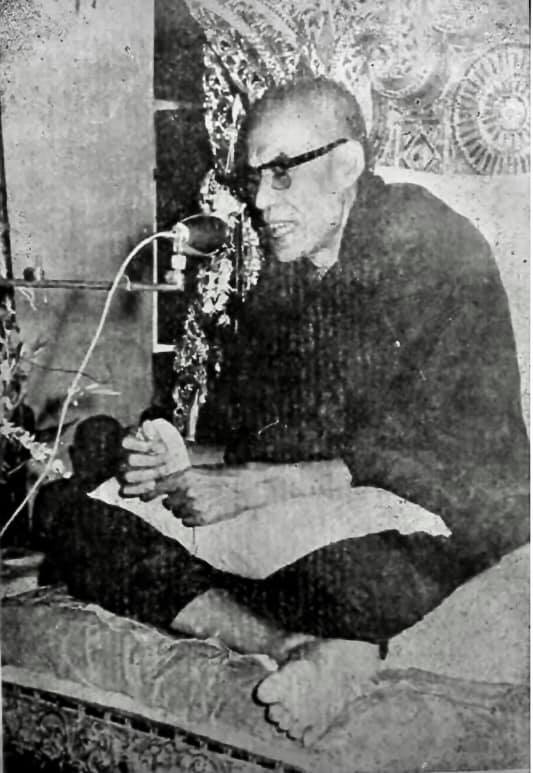
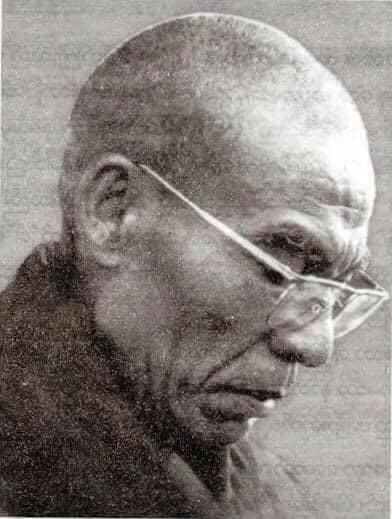
(1968)
U Zin only thinks about the existing dhamma (real phenomena) and not thinking about the non-existing ones. There are four knowing dhammas of four satipaṭṭhānas. There are two dhammas to exterminate—diṭṭhi (wrong view) and taṇhā (craving). Exterminate diṭṭhi will be free from apāyas, and exterminate taṇhā will attain Nibbāna. I’ll now talk about what kinds of mind and form of diṭṭhi are exterminated and what kinds of mind and form of taṇhā are exterminated (i.e., from sotāpanna to arahant level). I’ll talk about minds, these are khandha dhammas that I know all about them with the practice. Thae Inn Gu is surrounded by four lakes.
(Thae Inn means sand lake, Gu means cave—so it means sand lake cave. Then he talked about there were many wild water buffaloes in that area in the past. Two men killed a buffalo and cut its meant near a lake. And then one village man came near them, asked for some meat. They gave him the bad parts of the meat, which they did not want. But the two men who were the owner of the buffalo ate the best meat. In the same way, most Buddhists meet the Buddha sāsana, but they are wasting most of their times with worldling dhammas—such as dāna and sīla and other merits. So, they are like the village man eats the bad meat. Very few indeed are like the two men eat the best meat because they are the owners of it. It means very few Buddhists are the owner of Dhamma.)
I don’t like people not doing the practice. U Zin myself practiced for 21 months (over one year) until my bones and skin were worn out. I have this determination and effort: either I die, or taṇhā dies. I had checked my minds and knew all of them, and also other people’s minds. Furthermore, I knew all the clinging minds (upādācitta), mind frees from upādāna (clinging) and the liberated mind. Don’t look at people’s minds but your own minds (checking your mind and not someone else's). Don’t find other’s faults but your own ones. (This was also admonished by Buddha).
I had a lay disciple U Ba Yin who taught others and I heard from what he said as follows. I don’t know about pariyatti (learning) and if you come and tell me I’ll listen to you as my teacher with gratitude. U Ba Yin’s story: There was a house with two stories. In the upper story a virtuous man with white clothes (symbol of purity) lived and at the ground floor was a young woman living there. We have to be careful of verbal actions (vācā kammas) because its results are terrible. Our bodhisatta (Gautama Buddha) in one of his past lives said if others practiced for six days I could do it even for six years. So, our bodhisatta was practicing for six years to become a Buddha. Therefore, even a Buddha couldn’t escape the results of action of many past lives.
(The acts we humans commit with our mouths are quite numerous and varied. I had written about some of them in the Maṅgala Sutta already. Most people without the knowledge of Buddha Dhamma will never know about its important and serious consequences. In the Buddha’s time, the beautiful sex worker Ambapālī was a prostitute for many past lives until her last life. In the Buddha Kassapa’s time she mentioned to an old arahant bhikkhunī as like a prostitute. Mahāmoggallāna in the same Buddha’s time talked to a monk as behaving like a slave, because of this verbal action in one of the future lives he was born as a son to a slave woman and became a salve. One of the great disciples of the Buddha (mahā-sāvaka) in his past life was making a joke to a pacceka Buddha as looked like a leper. So, in his last life as a monk suddenly one day he was sick infested with serious skin disease. Later he had to stay in a monk hospital and no one came to see him because of the body smell and disgusting skin disease. Only Sāriputta came to see him and cared for him. He was like a brother to all monks, and the loveliest on earth.
Nowadays, human speech acts are quite extensive, many and diverse, because there are many kinds of media. We could see all four types of unwholesome verbal actions in them—such as cheating, lying, harming, frivolous talks, harsh speech, back biting, etc., there are no end about them.)
This young woman was working as a sex worker as a livelihood because of her past kamma. The holy man (i.e., virtuous man) admonished her for her job and behaviour. She listened to his admonish for some time, but because of her livelihood or some other reasons had to continue the profession. This saint was observing her go upstairs with her clients every day. With each client he made a marking with a small pebble near him. At last, it became a pile of pebbles. And then he called the young woman to him and showing her the pile of pebbles and teaching her. She at last had a strong sense of wise urgently (saṃvega) and fear and changed her lifestyle. She lived a life of blameless and tried her life completed with sīla, samādhi and paññā. After death, she was born in heaven, but the holy man fallen into apāya (painful existence). Sayadaw continued to talk about the whole process of the practice.
I’ll talk about the extermination of wrong view. The Buddha told us to know about the khandha sabhāva lakkhaṇa—the characteristics of the khandha nature (as vipassanā). I’ll talk on the process of the practice from kāya, vedanā, citta and dhamma and how it relates to each other step by step. And how sotāpanna exterminates diṭṭhi, how once-returner (sakadāgāmī) reduces kāma (lust), non-returner (anāgāmi) frees from rāga and arahant frees from the taints (āsava).
（1968年）
U Zin（尊者自稱）只專注於「存在的法」（即實相法，paramattha dhamma），而不思惟「不存在的法」（即概念法，paññatti dhamma）。四念住有四種所知法，而有二種法應予斷除：邪見（diṭṭhi）與貪愛（taṇhā）。斷除邪見則可脫離惡趣，斷除貪愛則可證得涅槃。現在我要說明，邪見依附於哪些名色（心與色法），貪愛依附於哪些名色，這是從初果至阿羅漢的歷程。我會談到心，因為這些都是「蘊法」（khandha dhamma），我已藉由修行而完全了知。
Thae Inn Gu（沙湖洞）四面環湖，（Thae Inn 意為沙湖，Gu 意為洞窟），過去那裡曾有許多野水牛。有兩個人曾在湖邊殺了一頭水牛，並剖肉食用。此時，一位村民走近並索求一點肉，他們就將自己不想要的肉（較差部分）給了他，而兩位殺牛人則享用最好的部位。
以此譬喻大多數佛教徒雖遇佛教僧團（佛陀教法），卻大多花時間於世俗功德，如布施、持戒與其他福業，就像那位村民只得到劣質肉；而極少數人如同吃到最好肉的兩位獵人，這表示只有極少數佛弟子是「法的主人」，真正受用正法。
我不喜歡不實修的人。我自己修行了二十一個月（將近兩年），直至皮骨枯瘦。我的決心是：若不死，就要讓「貪愛」死。我審察我的心，完全了知，也了知他人的心。我也知道所有「執取之心」（upādā-citta）、不執取之心，以及解脫之心。不要去觀察他人的心，應觀察自己之心（審察自心而非他人），不要挑別人錯，而要看自己錯（這也是佛陀的教誨）。
我有一位在家弟子叫U Ba Yin，他常教導他人，我也聽聞他說過一些話。我對於巴利三藏（pariyatti）一無所知，如果你來教我，我會如弟子般感恩地聽受。
U Ba Yin曾講過一則故事：有一間兩層樓的房子，樓上住著一位身著白衣的聖者（象徵清淨），樓下則住著一位年輕女子。我們必須謹慎言語業（vācā kamma），因為其果報非常可怕。我們的菩薩（指釋迦牟尼佛）在過去世中曾發願：「若他人為成道可修六日，我可修六年。」所以菩薩為成佛修行了六年。因此，即使是佛陀也無法逃避無量劫以來所造的業報。
（人類所造的語業相當龐大，種類繁多。在我所寫的《吉祥經註》中已提過許多。大多數不知佛法真義的人，永遠不會知道語業的嚴重性與影響。在佛陀時代，美貌妓女Ambapālī為娼多生多世，在迦葉佛時期，曾以輕蔑之語譏諷一位老比丘尼，說她像妓女。
大目犍連尊者在過去生中曾對一位比丘說其行為像奴隸，因此在未來某一世生為奴隸之子，成為奴隸。又有一位佛陀的大弟子，曾戲謔一位辟支佛為癩病人，因此在末後一生為比丘時，忽然身罹嚴重皮膚病，只能住在僧院病房，無人探望，因身體氣味與皮膚腐爛，只有舍利弗尊者來探望照顧他，像兄弟一樣慈悲待他。
如今，人類的語業更甚以往，媒體氾濫，妄語、綺語、惡口、兩舌等四種惡業比比皆是，幾乎無止境。）
這位年輕女子因過去業力而從事賣淫為生。聖者曾對她的行為加以勸誡，她一度聽從，但因生計或其他因素繼續其職業。聖者每日見她與客人上樓，每遇一客便取一小石置身旁為記，久而久之堆積成石堆。他後來叫來女子，指著石堆教誨她。終於，她生起法喜與怖畏（saṃvega），改變生活，持守淨戒，修習禪定與智慧。死後生於天界，而這位聖者卻墮於惡趣。尊者接著談及整個修行歷程。
我現在談「斷除邪見」之法。佛陀教導我們應認識五蘊自性相（khandha sabhāva lakkhaṇa），亦即透過內觀（vipassanā）來照見五蘊的生滅特相。我將依四念處的順序談修行歷程：身、受、心、法，以及它們如何互相關聯。並進一步說明：
**初果聖者（sotāpanna）**如何斷除邪見，
**一來果（sakadāgāmī）**如何減弱欲貪（kāma），
**不還果（anāgāmī）**如何滅除愛染（rāga），
阿羅漢如何滅盡諸漏（āsava）。
～～～～～～～～～～～～～～～～～～～～～～～～～～～～～～～
（一九六八年）
伍津只思惟現有的法（真實現象），而不思惟不存在的法。有四念住的四種知法。有兩種法需要斷除——邪見（diṭṭhi）和渴愛（taṇhā）。斷除邪見將能脫離惡道，斷除渴愛將能證得涅槃。我現在將談談何種邪見的心和色被斷除，以及何種渴愛的心和色被斷除（即從入流者到阿羅漢的層次）。我將談談心，這些是我透過實修完全了解的蘊法。泰因谷被四個湖泊環繞。
（泰因意為沙湖，谷意為洞穴——所以是沙湖洞穴。然後他談到過去那個地區有很多野水牛。兩個人殺了一頭水牛，在湖邊切肉。然後一個村民走近他們，向他們要一些肉。他們給了他他們不想要的劣質肉。但是那兩個水牛的主人卻吃了最好的肉。同樣地，大多數佛教徒遇到了佛陀的教法，但他們大部分時間都浪費在世俗的法上——例如布施、持戒和其他功德。所以，他們就像那個吃劣質肉的村民。確實只有極少數人像那兩個吃最好肉的人一樣，因為他們是肉的主人。這意味著只有極少數佛教徒是佛法的主人。）
我不喜歡不修行的人。我伍津自己修行了二十一個月（超過一年），直到骨肉磨損。我有這樣的決心和努力：不是我死，就是渴愛死。我檢查了自己的心，並且完全了解它們，也了解其他人的心。此外，我知道所有執取的心（upādācitta）、從執取中解脫的心和已解脫的心。不要看別人的心，而要看自己的心（檢查自己的心，而不是別人的）。不要找別人的錯，而要找自己的錯。（這也是佛陀所告誡的。）
我有一個在家弟子伍巴音，他教導他人，我從他說的話中聽到如下內容。我不懂經教（學習），如果你來告訴我，我會像對我的老師一樣感激地傾聽。伍巴音的故事：有一棟兩層樓的房子。樓上住著一位穿著白衣（純潔的象徵）的德行之人，樓下住著一位年輕女子。我們必須小心言語行為（vācā kammas），因為它的結果是可怕的。我們的菩薩（喬達摩佛）在過去的某一生中曾說，如果別人修行六天，我甚至可以修行六年。所以，我們的菩薩修行了六年才成佛。因此，即使是佛陀也無法逃脫過去許多世行為的結果。
（我們人類用嘴犯下的行為非常多樣。我已經在吉祥經中寫了一些。大多數不了解佛陀教法的人永遠不會知道其重要和嚴重的後果。在佛陀時代，美麗的性工作者安巴帕利在許多過去世都是妓女，直到她的最後一生。在迦葉佛時代，她曾對一位年老的阿羅漢比丘尼說她像個妓女。在同一個佛陀時代，摩訶目犍連曾對一位僧人說他像個奴隸一樣，因為這個言語行為，他在未來的某一生中投生為一個奴隸女的兒子並成為奴隸。佛陀的一位大弟子（mahā-sāvaka）在過去生中曾戲弄一位辟支佛，說他看起來像個麻風病人。所以，在他作為僧人的最後一生中，有一天突然生病，感染了嚴重的皮膚病。後來他不得不住在僧侶醫院，沒有人來看他，因為他身上的氣味和令人作嘔的皮膚病。只有舍利弗來看他並照顧他。他就像所有僧人的兄弟，是世上最可愛的人。
如今，人類的言語行為非常廣泛、眾多且多樣，因為有許多種類的媒體。我們可以在其中看到所有四種不善的言語行為——例如欺騙、說謊、傷害、輕浮的談話、惡語、背後誹謗等等，這些行為沒有盡頭。）
這位年輕女子因為過去的業而以性工作為生。這位聖人（即德行之人）告誡她的工作和行為。她聽了他的告誡一段時間，但由於生計或其他原因不得不繼續這個行業。這位聖人每天都看到她帶著她的顧客上樓。每帶一個顧客，他就在身邊放一顆小石子作為記號。最後，石子堆成了一堆。然後他叫年輕女子過來，向她展示那堆石子並教導她。她最終產生了強烈的明智的急迫感（saṃvega）和恐懼，並改變了她的生活方式。她過著無可指責的生活，並努力以戒、定、慧來圓滿她的一生。死後，她投生到天界，但那位聖人卻墮入了惡道（痛苦的存在）。尊者繼續談論整個修行的過程。
我將談談邪見的斷除。佛陀告訴我們要了解蘊的自性相——蘊的本性（作為內觀）。我將談談從身、受、心、法逐步修行的過程以及它們如何相互關聯。以及入流者如何斷除邪見，一還者（sakadāgāmī）如何減少欲貪（kāma），不還者（anāgāmi）如何從貪愛（rāga）中解脫，以及阿羅漢如何從煩惱（āsava）中解脫。
There are two ways of extermination—exterminations of result and cause. (Sayadaw talked two stories to describe these two ways).
A hunter with his arrows and bow went into a forest for meat. After some time, he met a wild dog, and he used his arrow and bow to shoot the animal. But he missed the animal, and the arrow fell near the dog. The dog instead of running toward and attacking him, it bit the arrow. So, the hunter took another arrow and shot the wild dog, and it killed the animal. Here, the wild dog did not attack the hunter (i.e., the cause), but bit the arrow, which was the result. This is an example of extermination of the result.
The hunter continued hunting, and after some time, he met a tiger at a distance. So, he used his bow and arrow to shoot the tiger. It missed the tiger, and he used another arrow to shoot the animal. But this time before he shot the tiger again, it’s running toward him, and he was killed by the animal. This is an example of extermination of the cause.
[Here this story teaches us humans how to deal with the problems which we create nowadays in the world—such as global warming, all kinds of pollution in nature and the internal pollution of the mind, i.e., all sorts of unwholesome media. How did United Nations, world leaders, politicians and governments, etc. dealing with them? Usually or mostly, they solve the problems like the dog in the story, it’ll never solve and never finish, it goes one and one.
They are the problem themselves, and if they solve the problem out there, there will be more arrows to come. They have to change their foolish, stupid minds, behavious and actions, etc. with wholesome education and not by unwholesome education which increasing their polluted minds—such as greedy, ill-will, hatred, anger, lust, selfishness, envy, stinginess, conceit, delusion, ignorant etc.) They have to solve the problems like the tiger in the story.]
(Sayadaw talked the four great elements by the Buddha as mentioned in Suttas.) What I know about them is stiffness, tension, aches (i.e., earth elements); in the chest area it becomes tight and sweat comes out (i.e., water elements); the body becomes hot and when it’s cold like an ice block (i.e., heat elements); the body is moving and good-fleshes arising (i.e., air element).
When the four elements are disturbed or changed if we note them as pressure, stiffness, aching, and it’s exterminating of the results. Wrong view will never fall away. This everyone knows, and even the child knows it.
There are two knowledge—wrong and right knowing. Exterminating the result has samādhi but it can’t know the four truths. The extermination of external results is—(give examples with six senses of door and six sense objects) when seeing, contemplate the eye and visual form, this is similar to the hunter and the wild dog. You have to contemplate the mind and not form (rūpa). If you contemplate stiffness, tension, aches, hot, cold; seeing, hearing, smelling, etc. and this is the dhamma for the dying of dog. The cause is the mind and the result is form (rūpa). The contemplation of the cause is contemplating the sabhāva lakkhaṇa of its pressing nature distending nature, tensing nature, etc.
With the long period of sitting, vedanā arises because form (rūpa) is disturbed and one of the four elements leading it. Form the knowing of the in-breath and out-breath and the mind inclines toward the painful vedanā. This happens its own nature and not doing it by oneself. This is not samatha practice by knowing the sabhāva dhamma that it’s vipassanā. When vedanā arises and contemplate the stiffness, tension, etc. it’ll be continuous to painful and could it be ended? Vedanā is nāma dhamma (mind dhamma). If you contemplate stiffness, and it’s form (rūpa).
Experiencing the stiffness is vedanā nāma dhamma or mind dhamma. You have to contemplate the experience of vedanā. With little stiffness and you experience it or feel it. As the stiffness increases, you will experience (feel) it and follow it through to the end. You have to contemplate the vanishing nāma nature of experience, contemplate the vanishing of experience, etc. And then it comes to the ending and at the same time the pain in form (rūpa) also ending together. With the ending of vedanā it arrives to cittānupassanā. I don’t know the satipaṭṭhāna in the books, but I know them in the khandha. With dukkha ends and arrive and feel happiness. The mind is like a small frog sitting in the water pool, quietly and calm.
The Buddha said that only seeing dukkha would see sukha. If not seeing dukkha and never seeing sukha. The whole world only indulgence in sukha (i.e., on kāmaguṇa—sensual pleasures). You must also understand this. Experiencing dukkha is like someone in the very hot season of March and April (Burmese weather) without umbrella and sandals walking under a very hot sun on the hot sandy ground. He is also thirsty of water. The mind is experiencing dukkha vedanā and looking for happiness and freedom. The mind wants to be free. I don’t know how it said in the books. The mind is experiencing vedanā again. The mind is looking for shady tree and lake for comfort. When he finds it and running there and drinks the water fully. All the dukkha is extinguished. It is up to cittasatipaṭṭhāna. If you get there, tell your family that if I die, do not make merit for me. (i.e., become sotāpanna and never take rebirth again in woeful existences).
I am still not arriving at home yet (i.e., Nibbāna—our real homes) and can’t stop at here, and will continue encounter with dukkha. I continue the journey and reflect as—nāma (mind or in Burmese nam) is the nature of experience or feel dukkha and sukha. Form (rūpa) nature is changing, deformed, afflicted, etc. This is dhammānupassanāsatipaṭṭhāna. During the contemplation know the nāma nature of experiencing dukkha and sukha and the form nature of hot, cold, stiffness, etc. If you contemplate the stiffness, pressure, coldness, etc. of form it becomes contemplating dukkha samudaya the arising of dukkha. This is exterminating the result.
You have to contemplate the nāma (mind), its nature characteristic sabhāva lakkhaṇa of experience (vedanā). This is the exterminating of the cause, and diṭṭhi will fall away. Contemplating in this way whatever mind dhamma arises from the six senses of door with its impermanence come to end. These are citta saṅkhāra—minds are turning around vedanā. This is the turning of dependent co-arising (paṭiccasamuppāda). The mind with tenseness, stiffness, etc. are dhamma turning the paṭiccasamuppāda. Not paying attention to the form dhamma and only know the feeling of vedanā. There is no dukkha and sukha and only exist as just vedanā (it can be called equanimity or neutral feeling).
滅除的兩種方式——滅果與滅因
尊者以兩個譬喻故事來說明「滅除果報」與「滅除原因」的差異。
一位獵人帶著弓箭進入森林狩獵以獲取肉食。一段時間後，他遇見一隻野狗，便射出一箭，但射偏了，箭掉在狗的附近。野狗並沒有衝向他攻擊，而是跑去咬那支箭。獵人再度拿出一支箭，這次成功射中並殺死了那隻野狗。這裡，野狗沒有去攻擊「因」（即獵人），反而咬了「果」（即箭），這便是「滅除果報」的譬喻。
獵人繼續狩獵，不久又在遠處遇到一隻老虎，他再次張弓射箭，卻射偏了。當他準備再次射擊時，老虎已向他撲來，結果他被老虎咬死。這是「滅除原因」的譬喻。
【這個譬喻也教導我們當今人類如何處理自身所製造出來的問題，例如全球暖化、自然環境的各類污染，乃至心靈的內在污染（例如各類不善媒體所引發的）。聯合國、各國領袖、政客與政府多數解決問題的方式，正如同野狗的行為——專注於果而忽略根本因，這種解決方式永遠無法終止問題，反而讓災難接連不斷。
問題根本出在人心，他們若不改變自身愚癡、愚蠢的心行與行為，只靠不善的教育（使人更貪婪、更瞋恨、更自私、嫉妒、吝嗇、驕慢、愚癡），是無法解決問題的。他們應如同對付老虎一樣，直指問題的根本——心，進行滅因之道。】
（尊者接著談到佛陀於經中所說的四大元素。）我對四大的體驗是這樣的：地元素表現為僵硬、緊繃、痠痛；水元素在胸口表現為緊悶、出汗；火元素為炙熱如火，或冰冷如冰塊；風元素使身體顫動、心臟跳動。
當四大失衡或變化時，若只標記它們為「壓迫感」、「僵硬」、「痠痛」，這僅是在「滅除果報」；如此邪見永遠無法被斷除。這是連小孩都會的事情。
知見有兩種：邪見與正見。單純滅果雖具備定力（samādhi），但無法見到四聖諦。譬如看到色身上的痛覺，只標記為僵硬、緊繃、痠痛、冷熱，這就像故事中的野狗，只對付箭（果），而不是獵人（因）。真正應該觀察的是「心」（nāma），而不是「色法」（rūpa）。
若只是觀察疼痛、僵硬、緊繃、冷熱、看到、聽到、嗅到等等，這是「狗死之法」；真正的原因在於「心」，結果才是「色」。應該觀察的是心的自性特相（sabhāva lakkhaṇa），例如壓迫性、膨脹性、緊繃性等。
當久坐之後，受（vedanā）會生起，是因為色法受擾，一種或多種四大元素導致此狀態。從觀呼吸開始，心會轉向苦受，這是其自性，不是人為導向。此種知見非屬於止（samatha）而是觀（vipassanā）。
若只是標記疼痛、緊繃、僵硬，這些只是色法，無法止息苦。受是「名法」，若你標記僵硬，那是「色法」；而「體驗」僵硬的，才是名法（vedanā nāma dhamma）。應觀察的是「受」的體驗、感知的過程。
一開始僅有輕微僵硬時可感受到它，隨著僵硬加重仍可繼續感受，應觀察「感受消失」的名法特相。觀察感受的消失，最後色身之苦也一同止息。
當受結束後，便進入心隨觀（cittānupassanā）的階段。我不知道書中怎麼說，但我是在五蘊之中知道這一切。當苦止息時，會感到一種樂，心就如同一隻坐在水池中的小青蛙，平靜而安穩。
佛陀說：「唯有見苦，方能見樂。」若不見苦，永遠見不到樂。世人只是沈溺於「樂」（即五欲樂，kāmaguṇa），你們必須明白這一點。
經驗苦就如在炎熱的三月四月（緬甸酷熱季節），沒有雨傘、沒有涼鞋，赤足走在燙人的沙地上，又口渴難耐。這是苦受。此時心渴望快樂與解脫，想要擺脫這一切。我不知道書上如何說，但我知道，心正在體驗受，它尋求一棵樹蔭與池水。
當心找到時，奔赴而去，喝足涼水，一切苦滅。這就是心隨觀的修行。如果你到達這一階段，請對你的家人說：「我若死後，不必為我造福。」（這是指已證得初果聖者（sotāpanna），不會再墮惡趣）
我尚未抵達真正的家（即涅槃），不能停在這裡，我會繼續與苦相遇、對峙。我繼續前行，並反思：
「名法」的特相是體驗苦與樂；
「色法」的特相是變異、毀壞、逼迫。
這是法隨觀（dhammānupassanā satipaṭṭhāna）。修行中我體驗到名法的苦樂感受，與色法的熱、冷、僵硬等變異。
若你觀察色法的僵硬、壓迫、冷熱等，即是在觀「苦的生起」（dukkha samudaya），這是滅果之道。而若觀「心」的自性特相，即「體驗」的過程，這是滅因之道，也唯有此路能斷除邪見（diṭṭhi）。
若你如此觀心，凡是由六根六境生起的心法，其無常特性都將止息。這些心法（cittasaṅkhāra）繞著受在轉，這就是**緣起法（paṭiccasamuppāda）**的輪轉。
當身體有壓迫、緊繃等感受時，心便隨之生滅，這是「心」在推動緣起的循環。不要把注意力放在色法上，只需認知受；無苦、無樂，只存在「純粹的受」，這可稱為捨受或中性受（upekkhā vedanā）。
～～～～～～～～～～～～～～～～～～～～～～～～～～～～～～～
斷除有兩種方式——斷除結果和斷除原因。（尊者講述了兩個故事來描述這兩種方式）。
一位獵人帶著弓箭進入森林尋找獵物。過了一段時間，他遇到一隻野狗，他用弓箭射殺那隻動物。但他射偏了，箭落在狗的附近。那隻狗沒有朝他跑來攻擊他，反而咬住了箭。於是，獵人又拿起一支箭射殺了那隻野狗，殺死了它。在這裡，野狗沒有攻擊獵人（即原因），而是咬了箭，那是結果。這是一個斷除結果的例子。
獵人繼續狩獵，過了一段時間，他在遠處遇到一隻老虎。於是，他用弓箭射向老虎。他射偏了，然後他又用另一支箭射向那隻動物。但是這次在他再次射擊老虎之前，老虎正朝他跑來，他被那隻動物殺死了。這是一個斷除原因的例子。
[在這裡，這個故事教導我們人類如何處理當今世界我們自己製造的問題——例如全球暖化、自然界中的各種污染以及內在的心靈污染，即各種不善的媒體。聯合國、世界領袖、政治家和政府等等是如何處理這些問題的？通常或大多數情況下，他們像故事中的狗一樣解決問題，這永遠無法解決，也永遠不會結束，它只會不斷持續。
他們本身就是問題，如果他們解決了外在的問題，還會有更多的箭射來。他們必須透過有益的教育來改變他們愚蠢的心、行為等等，而不是透過增加他們污染的心（例如貪婪、惡意、憎恨、憤怒、慾望、自私、嫉妒、吝嗇、傲慢、愚癡、無知等等）的不善教育。他們必須像故事中的老虎一樣解決問題。]
（尊者根據經藏的記載談到了佛陀所說的四大元素。）我所知道的是僵硬、緊張、痠痛（即地元素）；胸部區域變得緊繃，汗水流出（即水元素）；身體變得發熱，冷的時候像冰塊一樣（即火元素）；身體移動，肌肉隆起（即風元素）。
當四大元素受到干擾或變化時，如果我們將其視為壓力、僵硬、痠痛，那就是在斷除結果。邪見永遠不會消失。這是每個人都知道的，甚至孩子都知道。
有兩種知——邪知和正知。斷除結果有定力，但無法了解四聖諦。斷除外在的結果是——（以六根門和六塵為例）當看的時候，觀照眼和色，這類似於獵人和野狗。你必須觀照心，而不是色（rūpa）。如果你觀照僵硬、緊張、痠痛、熱、冷；看、聽、聞等等，這就是狗死亡的法。原因是心，結果是色（rūpa）。觀照原因是觀照其壓迫的自性相、膨脹的自性相、緊張的自性相等等。
長時間坐著，由於色（rūpa）受到干擾，四大元素之一導致感受生起。從知入息和出息，心傾向於痛苦的感受。這是它自身的本性，而不是自己做的。透過知道自性法，這不是止禪的修行，而是內觀。當感受生起並觀照僵硬、緊張等等時，它會持續痛苦，能結束嗎？感受是名法（心法）。如果你觀照僵硬，那是色（rūpa）。
體驗僵硬是感受名法或心法。你必須觀照感受的體驗。輕微的僵硬，你就會體驗或感覺到它。隨著僵硬的增加，你將會體驗（感覺）到它，並追隨它直到結束。你必須觀照體驗的消失的名本性，觀照體驗的消失等等。然後它會來到結束，同時色（rūpa）的疼痛也會一起結束。隨著感受的結束，它到達了心隨觀。我不懂書本上的念住，但我了解蘊中的念住。隨著苦的結束，到達並感受到快樂。心就像一隻坐在水池裡的小青蛙，安靜而平靜。
佛陀說，只有看到苦才能看到樂。如果沒有看到苦，就永遠看不到樂。整個世界只沉溺於樂（即五欲——感官的樂趣）。你也必須理解這一點。體驗苦就像在三月和四月（緬甸天氣）非常炎熱的季節，沒有雨傘和涼鞋，在炎熱的太陽下走在炎熱的沙地上。他也口渴。心正在體驗苦受，並尋找快樂和自由。心想要自由。我不知道書上是怎麼說的。心又在體驗感受。心正在尋找陰涼的樹和湖泊來獲得舒適。當他找到並跑到那裡，充分地喝水時，所有的苦都消失了。這取決於心念住。如果你到達那裡，告訴你的家人，如果我死了，不要為我做功德（即成為入流者，不再在惡道中轉生）。
我還沒有到達家（即涅槃——我們真正的家），不能停在這裡，將繼續遇到苦。我繼續旅程並反思——名（心，或緬甸語nam）是體驗或感受苦樂的本性。色（rūpa）的本性是變化、變形、受苦等等。這是法念住。在觀照時，知道體驗苦樂的名本性以及熱、冷、僵硬等等的色本性。如果你觀照色的僵硬、壓力、寒冷等等，它就變成了觀照苦集——苦的生起。這是斷除結果。
你必須觀照名（心），其體驗（感受）的自性相。這是斷除原因，邪見將會消失。以這種方式觀照，無論從六根門生起的任何心法，隨著其無常都會結束。這些是心行——心圍繞著感受轉動。這是緣起的轉動。帶著緊張、僵硬等等的心是轉動緣起的法。不注意色法，只知道感受。沒有苦和樂，只有感受存在（可以稱之為平等捨或中性感受）。
These are the internal dhammas. From external the knowing minds of seeing, hearing, smelling, etc. lead to seeing man, woman, etc. If this kind of knowing mind arises will lead to apāyas (woeful existences). These minds are turning the D.A process (Dependent arising = D.A). With the cessation of these minds and paṭiccasamuppāda is cut off. All the minds arise from the six senses of door only have the nature of feeling or just feelings. Knowing the experiences of the form nature is kāyāsatipaṭṭhāna because it bases on form (rūpa). This is sotāpanna satipaṭṭhāna.
I’ll continue on vedanā. With the cessation of dukkha, sotāpanna has sukha, with dukkha ceases and sukha samādhi arises. His samādhi becomes good. Now, it’ll exterminate taṇhā (craving). Contemplation of sukha will become dukkha, this reduces taṇhā. Now, I’ll talk about the dissolution of form (rūpa). The dissolution of nāma (mind) is related to sotāpanna. There are sabhāva view and mind view—with a lot of contemplation on the khandha and loathsomeness of the body appears (asubha). Seeing it as like with an open eye, like a large foamy water, as like 10 days or 15 days loathsome corpse, etc. This is seeing its dhamma sabhāva (dhamma nature). Some said that Thae Inn practice was on concepts.
The Buddha said the whole world (loka) was paramatā dhamma. Not really exist is paññatti—concepts. Seeing and knowing dhammas are paramatā dhamma, because of seeing its sabhāva lakkhaṇa. There are five concepts—from sotāpanna to arahant the abandonment of concepts in different levels. What concepts are abandoned by sotāpanna? He abandons the concepts of four elements as -stiffness, tenseness, etc. (internal) and from external the concepts of man, woman, dog, car, etc. He understands the feeling (vedanā) of nāma dhamma.
The stomach of the corpse is opened and with pus and blood flowing out from it. It’s infested with many worms. Skeleton appears and seeing one’s khandha as disgusting. The body appears also as a boiling foamy water, and burning with fire. All these signs (lakkhaṇa) are the perishing of form (rūpa) with its four elements. The skeleton represents earth element (paṭhavī); bloated, putrid, flowing with pus and blood represents water element (āpo), the corpse burns with fire represents fire element (tejo), boiling foamy water represents air element (vāyo).
Now, form is the cause and nāma (mind) is the result. At sotāpanna nāma (mind) is the cause and form is the result. It’s seeing the khandha terrible situations that not desire for it. It becomes the result of disgust, and the desire to throw it away. In sleep, it is this state of mind, and at eating also the same state of mind. On the whole world becomes this state of mind. Wanting to throw it away but also can’t do it. And then I am looking for comfort.
In the mind is seeing the khandha’s sabhāva which is paramatā. In the past, I had two dakamas (i.e., two upāsikās—in Burmese is dakama, his two wives in lay life). I thought at the time that they might be good for me. At that time, I was practicing in the village (see his auto-bio talk). When I was looking at the dakama in Rangoon (Burmese wife) and seeing her bloated putrid corpse in the mosquito net. (As a sakadāgāmī—once returner, his samādhi was very good, and he had the power to see things. U Candima also had this power, which mentioned in his auto-bio talk.) It was quite disgusting. When my mind turned toward the Karen-ma in the village, and she also became putrid, smelly and disgusting.
(Karen-ma is the Burmese usage of a Karen woman, as a male Karen-hti. This was his first wife in the village. We can see the stupidity and foolishness of man’s lust in woman. Even nowadays, sexual lust becomes extreme and abnormal in humans—see the same sex affairs and marriages, and it becomes normal.)
When I was looking at the whole world water, mountains, forests, Shwe-ta-gon (the golden stupa in Rangoon), statues, etc. all become putrid and not desire to looking at them. From the eye door vedanā arises (unpleasant or dukkha) and don’t want to enjoy sukha. How vedanā arises from the eye door? The whole world is perishing like a big pile of excrement.
(It may be liked in a pit toilet there are piles of yellowish excrement which is smelly and disgusting. But there are many white worms twisting and wriggling fighting for the yellowish stuff like golds. Nowadays, some humans—politicians, world leaders, business people, rich men, etc. fighting for power and wealth for these yellowish stuffs.)
I don’t want to attach my khandha and others also. Don’t desire for one’s khandha and also not desire for others’ khandhas. These mind states arise and don’t want to go near dakars and dakarmas (male and female followers). It reduces the defilement of lust (kāma kilesa) by obtaining the vipassanā nyan (ñāṇa) eye, but it still does not free from concepts yet. From the six senses of door vedanās arise and attain vijjā ñāṇa (knowledge). The whole world (loka) becomes dukkha). Don’t want to experience seeing, hearing, smelling, etc. because it sees dukkha. All become dukkha vedanās. With the end of the rising and falling, one becomes a once returner and the kilesa (desire) is decreased. The shape of form concept does not exist, but the perishing of ghana paññatti wholeness is still existing.
With the cessation of vedanā is vedanāsatipaṭṭhāna, this is not momentary of impermanence. Seeing the continuous rise and fall, it’s strong insight (balavā vipassanā). I should not talk about the path and fruit (magga and phala) and I don’t know it (as a monk this is declaration of attainment which monastic rule forbid). I am only talking about the nature of the mind. Path and fruit (magga and phala) are also concept, this is vijjā māna paññatti. (concepts about knowledge). It’s not an ignorant concept (avijjā paññatti) anymore.
Not wanting to experience vedanā (dukkha vedanā) is dosa mind. You have to practice letting this dosa mind cease. Perception (saññā) deceives on form (rūpa) with the asubha—loathsome concept. Saṃsāra will arise on form (rūpa). In the state of unconscious or not knowing (something like in coma) is not the path knowledge. I am now talking about the nature of the mind. Now will exterminate the dosa mind. Now the cause of this mind appears, the concept of knowing the putrid body (saññā is the cause).Lustful mind (raga) not exists and reducing of it. Now it will kill the dosa mind. Form (the body) is the cause, and giving the concept of putridness is the result of nāma (mind). Because of saññā (perception) the result of clinging nāma (mind) arise.
這些是內在的法（內法）。從外在來說，當眼、耳、鼻等六門觸對時，所生起的「知覺心」會導向於「看見男人、女人」等概念。若生起這種認知心，就會導向於惡趣（apāya）。這些心是推動**緣起輪轉（paṭiccasamuppāda）**的因。唯有當這些心止息時，緣起的連結才會被切斷。
六門所生的一切心僅具受性（只有「受」，無實質存在）。認知色法的經驗即是身隨觀（kāyānupassanā），因為它以「色」為基礎，這正是**初果聖者（sotāpanna）**的念住之道。
接著我要繼續談「受」。當苦受止息，初果聖者的內心會體驗到樂受，而樂定（sukha samādhi）隨之生起，他的定會變得非常穩固。此時便進入「滅愛（taṇhā）」的階段。觀察樂受的無常與苦性，可以削弱貪愛（taṇhā）。
現在我要談色的壞滅（rūpa bhaṅga），而**名法（nāma）**的壞滅則與初果聖者有關。此處有兩種觀：法的自性觀（sabhāva view）與心的觀照（mind view）。當深入觀照五蘊與身體的不淨性時，會顯現出極為逼真的「屍體觀」，如：浮腫的屍體、大塊泡沫狀的水、腐爛十天或十五天的屍體等，彷彿以肉眼親見。這就是見到「法的自性（dhamma sabhāva）」。
有些人批評「Thae Inn」的修法是在觀念上作意（概念觀），但佛陀說：世間（loka）皆為究竟法（paramatā dhamma），而非真實的才是概念（paññatti）。凡見與知之法皆為究竟法，因為能觀其「自性相（sabhāva lakkhaṇa）」。
究竟而言，從初果至阿羅漢共有五種層次的概念捨斷。那麼初果捨棄的是哪些概念呢？他斷除了內在對四大（僵硬、緊繃等）之概念；外在則對男人、女人、狗、車等的名相認知亦已斷除。他能如實認知「受是名法（nāma dhamma）」之作用。
觀屍時，看到屍體腹部破裂，膿血流出，蛆蟲亂爬，骨骼裸露。見到自己的五蘊身極為可厭，整個身體如沸騰的泡沫水，彷彿在烈火中燃燒。這些「相」（lakkhaṇa）都是色身因四大壞滅而現起之相。
骨骼象徵地大（paṭhavī），腐爛流膿代表水大（āpo），燃燒是火大（tejo），沸騰泡沫水則為風大（vāyo）。
一般而言，色為因，名為果；但對初果聖者而言，名為因，色為果。當見到五蘊的可怖狀態，便不欲執著。內心會升起厭離與欲棄之意，無論是睡眠或用餐，皆以此心相應。整個世界亦如是觀，想要棄絕，卻又不得。
此時的「心」見到的是色身的自性相（sabhāva），亦即究竟法（paramatā）。在過去，我有兩位居士夫人（dāka-mā）（在家時的兩位妻子），我曾以為她們對我有益。
當我觀想住在仰光的妻子（Burmese 妻）時，在蚊帳內看見她變成一具浮腫腐爛的屍體，非常噁心（當時我已是一來果（sakadāgāmī），具足極深定力，能見異相）。我心轉向村中的 Karen-ma（克倫族妻子），她也呈現出腐爛惡臭的模樣。
（Karen-ma 是指克倫族女性；男性為 Karen-hti。這是他在村中第一任妻子。我們可從中看見人對異性的慾望是多麼愚癡與愚蠢。今時今日，人的色欲異常、極端化，甚至同性婚姻都變成理所當然。）
當我觀視整個世界的水、山、林、瑞光大金塔（Shwe-ta-gon）與各式佛像等，一切皆變成腐爛可厭的景象。從眼門生起的是苦受（dukkha vedanā），不再渴望任何樂趣。
那麼眼門如何生起受呢？整個世界宛如一堆糞堆一般腐壞。
（就像在糞坑中，黃黃的屎堆令人作嘔，而白色蛆蟲卻在其中扭動爭食它們眼中的黃金。今人亦然——政客、富人、企業家為權力與金錢拼搏，就像爭搶黃屎的蛆蟲。）
我不再執著自己的五蘊，也不願貪戀他人的五蘊。不想親近男女信眾（dākas 與 dākamās）。這種心境顯示我已藉由生起觀智眼（vipassanā ñāṇa cakkhu）來減少貪欲，但此時尚未離開「概念」。六門中生起之受可導向明見（vijjā ñāṇa），整個世間變成苦。
不想再去看、聽、嗅，因為只見苦受（dukkha vedanā）。一切皆為苦受。當生滅法止息時，便證得一來果（sakadāgāmī），貪瞋癡亦減弱。形狀的概念雖已滅，然而**整體性（ghana paññatti）**的執取仍然存在。
當「受」止息，即是「受隨觀（vedanānupassanā）」。這並非單純的剎那無常，而是觀察其連續的生滅，是屬於強有力的觀智（balavā vipassanā）。
我不會談道智與果智（magga-phala），因為依比丘戒律，不可自稱證果。我只是在講述心的本質。事實上，「道與果」也是一種概念，這是「明見概念（vijjā māna paññatti）」，而非無明的概念（avijjā paññatti）。
不欲經歷苦受（dukkha vedanā），這是「瞋心（dosa）」的表現。因此你必須修行，令此「瞋心」止息。
**想（saññā）**會將色法（rūpa）錯認為可厭（不淨相，asubha），而令輪迴不斷於色法之上。如果是陷入不知不覺的狀態（如昏迷），那並不是正道智（magga-ñāṇa）。我現在談的是「心的本質」。
如今要滅除「瞋心（dosa）」。那麼這個心的起因是什麼？是「知屍體腐爛的概念（saññā）」。此時不再有貪欲（rāga）心，甚至已大幅減弱。接下來要斷的是瞋心。
色身為因，而將其認知為腐敗則是名法（nāma）為果。因為有「想（saññā）」的作用，才會產生執取（upādāna）的名法。
～～～～～～～～～～～～～～～～～～～～～～～～～～～～～～～
這些是內在的法。從外在來說，見、聞、嗅等知的生起，導致看到男人、女人等等。如果這種知的心生起，將會導致惡道（痛苦的存在）。這些心正在轉動緣起（Dependent arising = D.A）的過程。隨著這些心的止息，緣起就被切斷了。從六根門生起的所有心都只有感受的本性，或者只是感受。知道色法的經驗是身念住，因為它基於色（rūpa）。這是入流者的念住。
我將繼續談論感受。隨著苦的止息，入流者有樂，隨著苦的止息，樂的定生起。他的定變得很好。現在，它將斷除渴愛（taṇhā）。觀照樂將變成苦，這減少了渴愛。現在，我將談論色的壞滅（rūpa）。名的壞滅（心）與入流者有關。有自性見和心見——大量觀照五蘊，身體的厭惡感顯現（asubha）。看到它就像睜開眼睛一樣，像一大片泡沫水，像十天或十五天令人厭惡的屍體等等。這是看到它的法自性（dhamma nature）。有些人說泰因的修行是基於概念的。
佛陀說整個世界（loka）是勝義諦法。真正不存在的是名相——概念。見和知是勝義諦法，因為見到了它的自性相。有五個概念——從入流者到阿羅漢，在不同層次捨棄概念。入流者捨棄了哪些概念？他捨棄了四大元素的概念，如僵硬、緊張等等（內在的），以及外在的男人、女人、狗、汽車等等的概念。他理解名法的感受（vedanā）。
屍體的肚子被剖開，膿和血從中流出。它佈滿了許多蟲子。骨架顯現，看到自己的五蘊令人作嘔。身體也呈現出沸騰的泡沫水狀，並被火燃燒。所有這些相（lakkhaṇa）都是色（rūpa）及其四大元素的壞滅。骨架代表地元素（paṭhavī）；腫脹、腐爛、流出膿和血代表水元素（āpo）；屍體被火燃燒代表火元素（tejo）；沸騰的泡沫水代表風元素（vāyo）。
現在，色是因，名（心）是果。在入流者，名（心）是因，色是果。看到五蘊可怕的狀況，就不會對它產生慾望。它變成了厭惡的結果，以及想要把它扔掉的慾望。在睡眠中，是這種心態，在吃飯時也是同樣的心態。整個世界都變成這種心態。想要把它扔掉，但又做不到。然後我尋求慰藉。
在心中看到的是五蘊的自性，那是勝義諦。過去，我有兩個女信徒（dakama，緬甸語，指他的兩位俗家妻子）。當時我認為她們可能對我有好處。那時，我在村子裡修行（見他的自傳開示）。當我在仰光（緬甸妻子）看著那位女信徒時，看到她在蚊帳裡腫脹腐爛的屍體。（作為一還者，他的定力非常好，他有能力看到事物。伍坎迪瑪尊者也有這種能力，在他的自傳開示中提到過。）那非常令人作嘔。當我的心轉向村子裡的克倫族婦女時，她也變得腐爛、發臭和令人作嘔。
（克倫瑪是緬甸語中對克倫族女性的稱呼，男性則稱為克倫提。這是他在村子裡的第一個妻子。我們可以看見男人對女人的慾望是多麼愚蠢和愚昧。即使在今天，人類的性慾也變得極端和不正常——看看同性戀和婚姻，它正在變得正常化。）
當我看著整個世界的水、山、森林、雪達根塔（仰光的金色佛塔）、雕像等等時，一切都變得腐爛，不想再看它們。從眼根門生起感受（不愉快或苦），不想享受樂。感受是如何從眼根門生起的呢？整個世界都在像一大堆糞便一樣腐爛。
（這可能像一個坑式廁所裡堆積著發臭令人作嘔的黃色排泄物。但是有很多白色的蟲子扭動著，爭奪著像黃金一樣的黃色東西。如今，一些人類——政治家、世界領袖、商人、富人等等——正在為這些黃色的東西爭奪權力和財富。）
我不想執著我的五蘊，也不想執著別人的。不想貪戀自己的五蘊，也不想貪戀別人的五蘊。這些心態生起，不想靠近男女信徒。透過獲得內觀智慧眼（vipassanā ñāṇa），它減少了欲貪（kāma kilesa）的染污，但仍然沒有從概念中解脫出來。從六根門生起感受，並獲得智慧之知（vijjā ñāṇa）。整個世界（loka）都變成苦。不想體驗看、聽、聞等等，因為它看到了苦。一切都變成苦受。隨著生起和滅去的結束，一個人成為一還者，煩惱（慾望）減少了。色的概念形狀不存在了，但堅固相的壞滅仍然存在。
隨著感受的止息是受念住，這不是剎那的無常。看到持續的生起和滅去，這是強大的內觀（balavā vipassanā）。我不應該談論道和果（magga 和 phala），我也不知道（作為一個僧人，這是宣稱證悟，僧團戒律禁止）。我只談論心的本性。道和果也是概念，這是智慧慢的名相（vijjā māna paññatti）（關於知識的概念）。它不再是愚癡的概念（avijjā paññatti）。
不想體驗感受（苦受）是瞋心。你必須練習讓這個瞋心止息。想（saññā）以不淨的概念欺騙色（rūpa）。輪迴將在色（rūpa）上生起。在無意識或不知的狀態（類似於昏迷）不是道的智慧。我現在談論的是心的本性。現在將斷除瞋心。現在這個心的原因顯現了，知道腐爛身體的概念（想是原因）。貪欲的心（raga）不存在了，並且減少了。現在它將殺死瞋心。色（身體）是因，給予腐爛的概念是名（心）的果。由於想（saññā），執取之名（心）的果生起。
This is how the five khandhas arise—because of mind and form become dukkha vedanā; because of saññā become putridness; not wanting to experience is saṅkhārakkhandha (mental formation); the knowing is viññāṇa (consciousness). Because of the five khandhas and the result of five khandhas arise (see D.A process). Contemplating in this way is free from saññā, and only impermanence exists. Therefore, not give the perception of putridness. Contemplating the cause and effect is liberated from saññā (perception or concept), and then what happens to it. The ghana concept of wholeness is disappeared, and can’t see the whole world with its mountains, earth and rivers, etc. Instead, what I see is the arising and passing away of the mind and form (rūpa) in the rate of 100 thousand billion times of mind and five thousand billion times of form/sec.
The gross form ceases, and what kind of rūpa have I seen? Non-returner (anāgāmi) abandons ghana paññatti—wholeness concepts, and arahant abandons sabhāva paññatti (it may be the most refined concept in nature). If I am looking at the Shwe-tagon great stupa only seeing its rises and falls, looking at water and seeing its particles, the earth also in particles. The whole world only has sabhāva rūpa, and you only know it by practice. The very coarse kāma-kilesa (defilement of lust) of seeing man, woman, etc. is abandoned and not seeing man, woman etc.
What it is leaving behind? In the process, only seeing mind and form in the state of rises and falls with the rate of 100 thousand billion times and five thousand billion times in a wink of an eye—these are leaving behind. He is clinging to these billion times changing form (rūpa) and rūpa-taṇhā—craving to form is still with him. He has the fear of mind on the impermanence of mind and form. With rūpa-taṇhā in his mind, he reflects on past, present and future periods and seeing births (jāti). I am seeing my past life of at Padumuttara Buddha’s time was making the wish for realization.
(In one of his talks he had mentioned it. At that time, he was a king and invited the Buddha and saṅgha and giving some dāna and making these wishes. Nearly all the mahā-sāvakas of the Gotama Buddha were making wishes with the Padumuttara Buddha).
Only after perception of the wholeness of form disappears that I do the reflection. Now my perfection—pāramī is fulfilled. If I die now, what will happen to me? If I die now, I will be born in the highest pure abode—akaniṭṭha of pure abode—suddhāvāsabhūmi. I see my brahmā-god’s body there. Brahma-god body is very big indeed, nearly at the height of a toddy palm tree. In 24 hours, I stay five hours there.
(The highest pure abode brahma-god life span is 16,000 great aeons. This is not Alice in the wonder land—see Einstein’s Relativity Theory).
Noble beings do not fear death, for they see and know their coming and going. I was in the brahma world for staying six months long. (These six months, if calculated in terms of human life span, may be equivalent to five hours of Brahma's life span.) If I’ll die at that time with clinging to that plane of existence. External sense bases (bahiddhā āyatana) are ceased and internal sense bases (ajjhatta āyatana) are still there. There are minds not arising yet. There are no dhammas to contemplate for the external.
The minds not yet arise are—the mind wants to see, wants to eat, etc. and this is contemplating the not yet arising mind. These are wanting desirous minds—the minds of latent defilements. This is contemplation of the minds—cittānupassanā. Non-returner contemplates the not yet arising latent defilements. This is killing the latent tendency (anusaya) and not let them arise. Now people (scholars) are arguing according to the books (suttas and commentaries). They are not really knowing it (This point reminds us not to argue with practices which we really not experience directly). The mind is inclining towards these refined particles, and enjoy in it. The mind inclines toward it, seeing it and experiencing it. Therefore, D.A process is turning on the eye door. You can’t let the mind be itself, with not seeing only it will not incline, and not inclining will not experience it. This is let the mind stop by itself.
There is nothing to be called for that and not giving names to it, because all the concepts paññatti are falling away. This is not the Dhamma which can be seen by ordinary men, ordinary deities (devatas) and ordinary brahmā-gods. Only practicing of insight yogis can see it, this is the Dhamma to Nibbāna. This is contemplation on the refined form (rūpa) and it becomes the faculty of wisdom (paññindriya). It’s arriving at the top of insight (vipassanā) and contemplating on the refined mind and form. In looking for the way out, I have to contemplate again on the external. The seeing nature, the experiencing nature, etc. all the five khandhas are rising and falling away.
Contemplate them with the three universal characteristics of anicca, dukkha and anatta and this also not free from it and contemplate again on the mind. What it looks like is—as the simile of the sea crossing ship and the bird. The ship was in the middle of the water and the bird on the ship mast went out and looking for the seashore. When it did not find it and returned to the ship mast. The bird was perching on the ship mast is like contemplating of the internal anusaya—latent defilement of the desire or wanting mind. The bird went out and looking for the seashore is like contemplating impermanence of the mind and form with the three characteristics which arising from external āyatana—sense bases.
From the contemplation of mind (cittānupassanā) let us contemplate dhammānupassanā (contemplation of dhamma). When contemplate again, the internal and the wanting or desire minds are not there anymore. Now we are closing to the seashore. When contemplate again on the seeing, hearing, smelling, etc. minds and from (rūpa)-the non-existing anicca, dukkha and anatta are concepts (saññā) or perceptions. We are contemplating of non-existing things with saññā—concepts. We are not stopping at the real existence of just seeing, just hearing, etc. and clinging to the concepts (saññā).
Anicca, dukkha and anatta saññās are fallen away by knowing this and arriving at the shore. And them the Bird (yogi) will never come back again (totally free forever). I am not contemplating the phenomena which arise from the sense objects ārammaṇa or aroms) only at just seeing, just hearing, etc. and nothing is there just sabhāva phenomena, and it becomes zero (suññā). This is dhammānupassanā (contemplation on dhammas). I have no births anymore and nothing have to do and free from the three bhūmis (sensual realm, fine material jhānic-gods and formless jhānic-gods).
這就是五蘊如何生起的過程——因為名色（nāma-rūpa）變成了苦受（dukkha vedanā）；因為想（saññā）而生起「腐壞」的概念；不想去經驗，便成為行蘊（saṅkhārakkhandha）；「知覺」即為識蘊（viññāṇakkhandha）。由於五蘊，便引發另一輪的五蘊結果（可見於緣起法（Paṭiccasamuppāda））。這樣的觀照方式便能遠離「想」，只留下無常。因此，不再生起「腐壞」的知覺。觀察因果，能從「想」（saññā）中解脫。然後，會發生什麼事呢？**整體概念（ghana paññatti）**消失了，不再能看見山河大地等「整體的世界」，取而代之的是——看見「名色的生滅」：一秒內，心生滅十萬億次，色生滅五千億次。
粗重的色法已滅，我見到的是什麼樣的色？不還果者（anāgāmī）捨離整體概念（ghana paññatti），阿羅漢則捨離法自性概念（sabhāva paññatti）（可能是最微細的概念之一）。若我觀看瑞光大金塔（Shwe Dagon Pagoda），所見者唯是「生滅之流」，看水時只見水的粒子，地也是粒子。整個世界只是色的自性（sabhāva rūpa），唯有透過修行才能知見。
對於極粗的欲界煩惱（如：見到男人、女人等所起的欲）已捨離，不再見到「男人」、「女人」等概念。
那麼留下的是什麼呢？在歷程中，只見名與色以十萬億次與五千億次的速度生滅於眨眼之間——這些都是被捨離的。此人仍執取於如此高速變化的色法，這便是「色愛（rūpa-taṇhā）」仍存於心。內心對名色的無常仍存有恐懼；由於這色愛，他反思過去、現在與未來，看見種種生起（jāti）。
我看見自己過去生於Padumuttara 佛時期發願修行而證得（他在其他開示中曾提過此事：當時他為一國王，供養佛與僧伽並發願證法，幾乎所有的佛陀大弟子皆於此佛前發願）。
唯有當整體色身的知覺（ghana saññā）消失時，我才得以回觀與反思：我的波羅蜜（pāramī）已圓滿。若現在命終，我將生於最上的淨居天——阿迦尼吒（Akaniṭṭha）天。我見到自己在淨居天的梵身，那身體極大，幾近椰子樹之高。在 24 小時中，我住於彼處五小時。
（註：阿迦尼吒天的壽命為十六萬大劫。這並非童話，而是可從愛因斯坦的「相對論」理解的宇宙時間觀。）
聖者不懼死亡，因為他們知見自己的去與來。我曾於彼處住六個月之久（以人間時間換算，或許僅為梵天壽命中的五小時）。如果當時我死去並執取於該生處，那麼**外六處（bahiddhā āyatana）將止息，唯內六處（ajjhatta āyatana）**仍在。仍有一些心尚未生起；此時，外境不再有任何法可供觀照。
那些尚未生起的心，是「想看、想吃」等欲望之心，這些便是「欲愛（taṇhā）」的潛在傾向（anusaya）。這是**心隨觀（cittānupassanā）**的內容，不還者觀察這些尚未現起的潛在煩惱（anusaya），以斷其根，使其不生起。
當今許多學者依據經論爭辯，但他們未曾親證，不知其真實性。（此處提醒我們：不要對未親身體驗的修行法門妄加評論。）
此時的心趨向於這些極微粒之境，並對其產生樂受；心傾向、見到並經驗它。由於此心的傾向，眼門緣起法轉動。你若放任心自由運作，它會向外攀緣，唯有「不見」，才不會傾向；不傾向，即不會經驗；這即是讓心止息的方式。
那是無可名狀的法，不再命名它，因為所有概念（paññatti）皆已滅去。這不是凡夫、天神、或梵天所能見之法，唯有修行內觀（vipassanā）的行者才能見之——此即是通向涅槃之法。
這是對微細色法的觀照，它轉化為慧根（paññindriya）。這是內觀的頂峰，觀照極微的名色。在尋求出離的路上，我重新觀照外境——見、聞、嗅、觸、覺受等五蘊，悉皆生滅。
以三相——**無常、苦、無我（anicca, dukkha, anatta）**觀照它們，仍不能離開概念，因而再度返觀於內心。
這個境界，如同佛陀所說的譬喻：「海上船與鳥」——船在海中央，鳥從船桅上飛出尋找陸地。若未尋得，便回到桅上。
鳥停留在桅上，譬喻觀照內心中欲望與潛藏習氣（anusaya）；鳥飛出去尋找岸邊，譬喻觀照來自外六處生起的名色無常與三相。
從心隨觀（cittānupassanā）進入到法隨觀（dhammānupassanā）。當再度觀照時，內心中對於「想要、欲求」的心已不復存在，此即是「靠近彼岸（涅槃）」的徵象。
當再次觀照見、聞、嗅等心與色時，會發現那一切「無常、苦、無我」者——實為概念（saññā）。我們是在以「概念」來觀照不存在的事物，未能止於「純粹見、純粹聞」的實相上，而仍執取於「概念」。
透過這樣的知見，「無常想、苦想、無我想」（anicca, dukkha, anatta saññā）皆已脫落，並已抵達彼岸（涅槃）。那隻「鳥」（即修行者、禪修者）將不會再回來（永遠解脫，再無輪迴）。
我不再觀照從六塵（ārammaṇa / āram）所生起的現象，而是只止於「僅見、僅聞」等純粹現象，除此之外別無他物，僅是自性法（sabhāva dhamma），而一切皆歸於空（suññatā，空性）。這即是法隨觀（dhammānupassanā）。
我已無任何來生（不再有投生），不再有任何事必須去做，已脫離三有（bhūmi）——欲界、色界（禪天）、無色界（禪天），完全解脫自在。
～～～～～～～～～～～～～～～～～～～～～～～～～～～～～～～
這就是五蘊如何生起的——因為名色變成苦受；因為想變成腐爛；不想體驗是行蘊（saṅkhārakkhandha）；知是識蘊（viññāṇa）。因為五蘊，五蘊的結果生起（見緣起過程）。這樣觀照就脫離了想，只有無常存在。因此，不產生腐爛的知覺。觀照因果就從想（知覺或概念）中解脫出來，然後會發生什麼呢？整體堅固的概念消失了，無法再看到整個世界及其山川河流等等。相反，我看到的是名色（rūpa）的生起和滅去，心的速率是每秒一千億次，色的速率是每秒五千億次。
粗糙的色止息了，我看到了什麼樣的色呢？不還者（anāgāmi）捨棄了整體堅固的概念（ghana paññatti），而阿羅漢捨棄了自性名相（sabhāva paññatti）（這可能是自然界中最精細的概念）。如果我看著雪達根大金塔，只看到它的生起和滅去；看著水，看到它的粒子；地球也是粒子。整個世界只有自性色，你只能透過實修來了解它。看到男人、女人等等非常粗糙的欲貪（kāma-kilesa）被捨棄了，不再看到男人、女人等等。
剩下的是什麼呢？在這個過程中，只看到名色以每眨眼一千億次和五千億次的速率生起和滅去——這些是留下的。他執著於這些千億次變化的色（rūpa），而色貪（rūpa-taṇhā）仍然存在。他對名色的無常感到恐懼。由於心中有色貪，他反思過去、現在和未來，看到生（jāti）。我看到我在巴多穆塔拉佛時代的過去生中發願要證悟。
（在他的一次開示中他提到過。當時他是一位國王，邀請佛陀和僧團接受他的供養並發願。幾乎所有喬達摩佛的大弟子都曾在巴多穆塔拉佛前發願。）
只有在對色的整體知覺消失後，我才進行反思。現在我的圓滿——波羅蜜已經完成了。如果我現在死了，我會怎麼樣？如果我現在死了，我將投生到最高的淨居天——色究竟天（akaniṭṭha of pure abode—suddhāvāsabhūmi）。我看到我在那裡的梵天身。梵天身確實非常巨大，幾乎像一棵棕櫚樹那麼高。在二十四小時內，我在那裡待了五個小時。
（最高的淨居天梵天的壽命是16,000大劫。這不是愛麗絲夢遊仙境——參見愛因斯坦的相對論。）
聖者不畏懼死亡，因為他們看到並知道他們的來去。我曾在梵天界待了六個月之久。（如果以人類的壽命來計算，這六個月可能相當於梵天五個小時的壽命。）如果我那時死去，並執著於那個存在層面。外六處（bahiddhā āyatana）止息了，內六處（ajjhatta āyatana）仍然存在。有些心還沒有生起。沒有法可以觀照外在的。
尚未生起的心是——想要看、想要吃等等的心，這是觀照尚未生起的心。這些是想要的心——潛在煩惱的心。這是觀照心——心念住。不還者觀照尚未生起的潛在煩惱。這是殺死潛在的傾向（anusaya），不讓它們生起。現在人們（學者）正在根據經書（經藏和註釋）爭論。他們並非真正了解它（這一點提醒我們不要與我們沒有直接體驗過的實修爭論）。心傾向於這些精細的微粒，並樂在其中。心傾向於它，看到它並體驗它。因此，緣起過程在眼根門運作。你不能讓心放任自流，只有不看它才不會傾向，不傾向才不會體驗它。這是讓心自己停止。
沒有什麼可以稱呼它，也不給它命名，因為所有的概念名相都在消失。這不是凡夫俗子、普通天人（devatas）和普通梵天所能見到的法。只有修習內觀的瑜伽行者才能見到它，這是通往涅槃的法。這是對精細色（rūpa）的觀照，它變成了慧根（paññindriya）。它到達了內觀的頂峰，並觀照精細的名色。在尋找出路時，我必須再次觀照外在。看的本性、體驗的本性等等，所有五蘊都在生起和滅去。
以無常、苦、無我的三法印來觀照它們，這也無法從中解脫，再次觀照心。它看起來像——如同渡海的船和鳥的比喻。船在水中央，船桅上的鳥飛出去尋找海岸。當它沒有找到時，就回到船桅上。鳥棲息在船桅上就像觀照內在的潛在煩惱——想要的心。鳥飛出去尋找海岸就像觀照從外六處生起的名色的無常和三法印。
從心念住開始觀照法念住。當再次觀照時，內在想要的心不再存在了。現在我們正接近海岸。當再次觀照見、聞、嗅等心以及色時——不存在的無常、苦、無我是概念（saññā）或知覺。我們正在以概念觀照不存在的事物。我們沒有停留在僅僅是看、僅僅是聽等等的真實存在，而是執著於概念（saññā）。
透過了解這一點並到達彼岸，無常、苦、無我的想都消失了。然後那隻鳥（瑜伽行者）將永遠不再回來（永遠完全自由）。我不再觀照從感官對象（ārammaṇa 或 aroms）生起的現象，只是單純的看、單純的聽等等，什麼也沒有，只有自性現象，它變成了空（suññā）。這是法念住（dhammānupassanā）。我不再有任何投生，沒有什麼需要做的，並從三界（欲界、色界禪天和無色界禪天）中解脫出來。
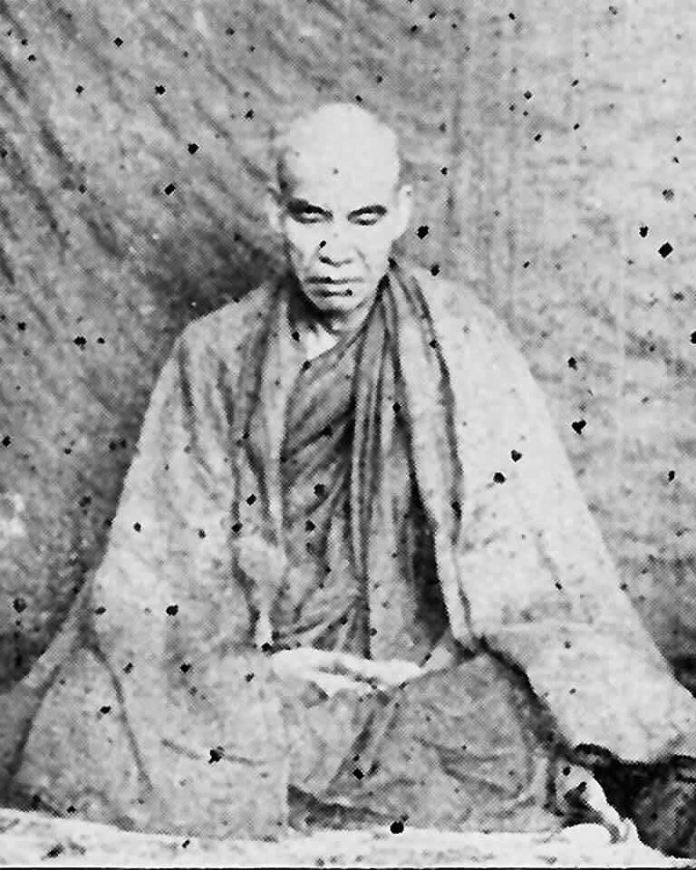
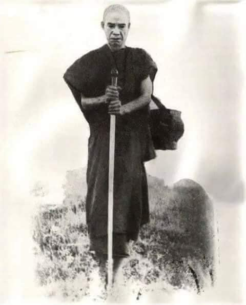
Thae Inn Gu Sayadaw U Ukkaṭṭha (1913-1973)
[The following short biography and instruction on practice was compiled by Ven. Uttamasara (U Ottamasara) from his website—From Avijjā to vijjā. It seems to me after Sayadaw passed away in 1973, his disciples wrote a book on his life and practice. I had read this book very long time ago and now don’t have any memory about it.]
Sayadaw was born on 16th March 1913 and his parents named him Maung Aung Tun. When he was young not studying well enough that only could read and write little. He was four times married (but in Sayadaw’s talks only mentioned two wives). For supporting his families, he lived a life of as an alcoholic, gambler, professional thug and as a robber boss.
(It seems to me also working as a farmer in his home village in the farming season. According to his auto-bio talk, every year he stayed at two places, one is his village during the farming season and outside this period he stayed with his second wife in Rangoon).
He was committed some crimes and had been in prison. One day, his wife (in Rangoon) bought a book on Soon Loon Sayadaw life and practice. Soon Loon Sayadaw was illiterate, but he heard a few words on Dhamma from others and practiced diligently and in four months became a noble one (arahant). This was made U Aung Tun (Thae Inn Gu Sayadaw) interest, and he read the book with pictures which told about Sayadaw’s lay life and about the four santāpāṭṭhas. The following thought arose in him, “If he could become an arahant, if I practice also will become one.” This was the first time which made his interest in the practice.
At the age of 46 and his last attempted for robbing a house, his head was injured with the attacker’s knife and had a strong saṃvega—wise urgency. In the 7th day his head wound became a little better and took the book on Soon Loon Sayadaw with him to his Naw-gon village in Maw-be. He went to the village monastery and taking the nine precepts.
He shut himself up in a room of the monastery sīmā (usually a small building for the meeting of saṅgha matters) and started his practice. With the very strong determination of “If I don’t die, then let kilesa dies!” With continuous mindfulness (sati) he observed the in-breath and out-breath touching at the tip of the nostril. Very strong painful feelings (vedanā) were arising in his body that he was very often fallen down on the floor from the sitting posture. Even though falling down on the floor, he did not change his posture but still continued to observe the painful feelings until it subsided (a very tough guy indeed, who didn't do anything for the comfort of the body). He had a strong determination that in battling with defilements one of them had to die-he himself or the kilesa. On the 6th day of 12th September 1959, he attained the first realization (stream enterer).
[Some may think it as impossible, even Soon Loon Sayadaw had to practice for one month to enter the stream. Soon Loon Sayadaw had a disciple called U Mya Maung who was very cruel and bad in his life. He was the son of a village head-man. He had seven wives and treating them very bad. If he has suspicions that other men are having an affair with his wife, he will give them trouble too. One time he drove a bullock cart with heavy loads on it. At one place he crossed a stream and going up a slope but it was too heavy that the ox could not pull it up there. He beat the ox with force but still it could not pull the cart up there and at last it fell down. He beat the ox again to let it getting up but without any success. So, he piled up some straws on the ox and lit the fire on it. It did not mention the ox died or not. But because of these evil actions, he had to pay for its result.
After some time, he had strong saṃvega and came to Soon Loon Sayadaw and became a monk named as U Manisara—the essence of gem. He went to Maung Yin Paw valley (where Soon Loon Sayadaw also practiced as a novice) and did the practice. He took seven days to become a noble one (arahant). The year was 1942 on March on the 10th, 12th, 14th and the day after full-moon day (i.e., Buddhist calendar days). It took two days for each realization, while a month for Soon Loon Sayadaw.
In 1946 on April U Manisara went to the toilet at 11:30 p.m. at night. At that time, he was staying in a cave (it seems Soon Loon Sayadaw’s monastery has caves because its name is the cave monastery at Soon Loon—a name of a place) On the way he met some men who arrested him and bound his body with rope and put ragged cloth in his mouth, and then put him in his cave, burnt his body with fire. U Manisara could not shout for help, and he informed Soon Loon Sayadaw with mind-to-mind, Sayadaw received his message and able to get him out from the burning cave. After he informed Sayadaw he went into the fruition state (phalasamāpatti) which protected his body without any harm. This kamma retribution came from his evil deed of burning the ox with straw fire. (Maybe he was also had a lot of enemies in lay life). In the same year he passed away and lived a very short life.
沙因古尊者 U Ukkaṭṭha（1913–1973）
【以下這篇簡介與修行指導節錄自尊者 U Uttamasāra（U Ottamasāra）所建立的網站《從無明到明智》（From Avijjā to Vijjā）。據了解，在沙因古尊者於 1973 年圓寂後，其弟子們曾出版一本關於其生平與修行的書籍。筆者曾經很久以前讀過該書，現已無明確記憶。】
尊者於 1913 年 3 月 16 日出生，父母為其取名「貌昂吞（Maung Aung Tun）」。年幼時未曾受過良好教育，僅略識字與簡單書寫。他一生曾結婚四次（不過在尊者的自述中僅提到兩位妻子）。為了維持家計，他曾過著酗酒、賭博、打架鬥毆與擔任強盜首領的生活。
（依尊者的自傳法談所述，每年耕作季節他會回到故鄉務農，其餘時間則與第二任妻子同住於仰光。）
他過去曾犯下幾項罪行，亦有入獄紀錄。某日，他的仰光妻子買了一本關於順倫尊者（Soon Loon Sayadaw）的生平與修行之書。順倫尊者是一位目不識丁的修行人，但曾從他人處聽聞幾句佛法，即生起大信心，並精進修行，在短短四個月內證得聖果（阿羅漢果）。這本書與其中附圖描述了順倫尊者在家時的生活與他修習四念處的經過，讓貌昂吞生起強烈的信心與啟發。他心想：「如果他能成為阿羅漢，那我若努力修行，應該也可以做到。」這是他首次萌生修行的決心。
46歲時，在最後一次搶劫他人住宅時，他的頭部被對方持刀擊傷，深受震撼，生起強烈的省思（saṃvega）。在頭部傷勢稍癒的第七日，他便帶著順倫尊者的那本書前往毛貝地區的拿貢村（Naw-gon）投靠村中寺院。他在**戒堂（sīmā）**中閉關，自我隔離，受持九戒，開始修行。
他發下堅定誓願：「如果我不死，那麼就讓煩惱死！」他以極堅強的正念觀察出入息（觸於鼻尖處）。在修行過程中，身體產生極為劇烈的苦受（vedanā），以至於經常從坐姿中倒地。然而，即使跌倒，他仍**不改變坐姿，堅持繼續觀察苦受，直至苦感減弱。**他以堅強的毅力與煩惱奮戰，誓言必有一方毀滅。在第六天，也就是 1959 年 9 月 12 日，他證得初果（須陀洹果）。
【有些人或許會認為這是不可能的事，因為連順倫尊者也修了一個月才證得初果。關於這點，順倫尊者有一位弟子名為 U Mya Maung，在在家時是個非常殘暴邪惡之人。他是某村莊村長的兒子，擁有七位妻子，且對她們態度惡劣。一旦懷疑其中一位妻子與別人有染，他便會給對方製造極大麻煩。
某次他趕著載有重物的牛車，在過溪後上坡處牛無法拉上，他便暴力鞭打牛匹，但仍無法成功。當牛車翻覆後，他又將乾草堆在牛身上並點火焚燒。書中未說牛是否死亡，但這樣的惡行造成他未來承受其報應。
後來他生起強烈省思，前往順倫尊者處出家，法名為U Manisāra（瑪尼舍羅，意為寶中之寶），並前往茫映波谷（Maung Yin Paw）修行（順倫尊者曾在此地以沙彌身份修行）。他用了七天完成聖道四果的修行——即在 1942 年的農曆 3月10日、12日、14日與隔日滿月日（即佛教曆日）分別證得四果，每一果用兩日完成，比順倫尊者快了許多。】
1946年4月的一天晚上11:30，他外出如廁時遭人襲擊。當時他住在一處洞穴（順倫道場位於山洞附近，故名順倫洞穴道場）。襲擊者將他五花大綁並塞住嘴巴，接著點火燒他的洞穴。U Manisāra 難以呼救，便以心通通知順倫尊者，尊者立即收到訊息並設法將他救出。他同時入於果定（phalasamāpatti），該定力保護了他，使身體絲毫未受火灼之苦。這場報應正是他過去燒牛的惡業所致（當然他也可能在俗家時樹敵甚多）。同年他即圓寂，壽命非常短。
～～～～～～～～～～～～～～～～～～～～～～～～～～～～～～～
泰因谷尊者伍烏卡塔（Thae Inn Gu Sayadaw U Ukkaṭṭha，1913-1973）
[以下簡短傳記與修行指導由烏塔瑪薩拉尊者（Ven. Uttamasara，U Ottamasara）從其網站——《從無明到智慧》（From Avijjā to vijjā）彙編而成。在我看來，尊者於1973年圓寂後，他的弟子們寫了一本關於他生平和修行的書。我很久以前讀過這本書，現在已經沒有任何記憶了。]
尊者生於1913年3月16日，父母給他取名貌昂吞（Maung Aung Tun）。他年輕時學習不夠努力，只能讀寫少量文字。他結過四次婚（但在尊者的開示中只提到了兩位妻子）。為了養家糊口，他過著酗酒、賭博、職業流氓和強盜頭目的生活。
（在我看來，他在農忙季節也在家鄉務農。根據他的自傳開示，他每年住在兩個地方，一個是農忙季節的家鄉，這段時間之外則與他的第二個妻子住在仰光。）
他犯了一些罪，並曾入獄。有一天，他的妻子（在仰光）買了一本關於孫倫尊者（Soon Loon Sayadaw）生平和修行的書。孫倫尊者是文盲，但他從別人那裡聽到了一些佛法，並勤奮修行，在四個月內成為聖者（阿羅漢）。這引起了貌昂吞（後來的泰因谷尊者）的興趣，他讀了這本帶有圖片的書，書中講述了尊者的俗家生活和四種念住。他心中升起了這樣的念頭：「如果他能成為阿羅漢，如果我也修行，我也會成為阿羅漢。」這是他第一次對修行產生興趣。
46歲時，他最後一次試圖搶劫房屋，頭部被襲擊者的刀所傷，產生了強烈的厭離感（saṃvega）——明智的急迫感。第七天，他的頭部傷口略有好轉，他帶著孫倫尊者的書回到了毛比鎮（Maw-be）的瑙貢村（Naw-gon）。他去了村裡的寺院，受了九戒。
他把自己關在寺院戒堂（通常是一個小建築，用於僧團事務的會議）的一個房間裡，開始修行。他抱著非常堅定的決心：「如果我不死，就讓煩惱死！」他持續地保持正念（sati），觀察鼻尖的出入息。他身體中生起了非常強烈的痛苦感受（vedanā），以至於他經常從坐姿跌倒在地。即使跌倒在地，他也沒有改變姿勢，而是繼續觀察痛苦的感受直到它消退（確實是一個非常堅強的人，他沒有為身體的舒適做任何事情）。他堅定地認為，在與煩惱的戰鬥中，他們中的一個必須死亡——他自己或煩惱。1959年9月12日，他證得了第一個果位（入流者）。
[有些人可能認為這是不可能的，即使是孫倫尊者也必須修行一個月才能入流。孫倫尊者有一位名叫伍妙貌（U Mya Maung）的弟子，他一生非常殘忍和惡劣。他是村長之子，娶了七個妻子，對她們非常不好。如果他懷疑其他男人與他的妻子有染，他也會給他們製造麻煩。有一次，他趕著一輛裝滿重物的牛車。在一個地方，他過了一條小溪，然後上一個斜坡，但車子太重了，牛拉不上去。他用力鞭打牛，但牛仍然拉不上去，最後倒下了。他又鞭打牛讓它站起來，但沒有成功。於是，他在牛身上堆了一些稻草，點燃了火。書中沒有提到牛是否死了。但由於這些惡行，他必須為此付出代價。
過了一段時間，他產生了強烈的厭離感，來到孫倫尊者那裡，出家為僧，法名伍瑪尼薩拉（U Manisara）——寶石的精髓。他去了貌英波山谷（Maung Yin Paw valley，孫倫尊者也曾在那裡作為沙彌修行），並進行修行。他用了七天時間成為聖者（阿羅漢）。那一年是1942年3月10日、12日、14日和滿月後的第二天（即佛教曆法）。每次證悟用了兩天時間，而孫倫尊者則用了一個月。
1946年4月，伍瑪尼薩拉晚上11點30分去廁所。當時他住在一個洞穴裡（看來孫倫尊者的寺院有洞穴，因為它的名字是孫倫的洞穴寺院——孫倫是一個地名）。路上他遇到一些人，他們逮捕了他，用繩子捆綁他的身體，用破布塞住他的嘴，然後把他放進他的洞穴裡，用火燒他的身體。伍瑪尼薩拉無法呼救，他用心電感應告訴孫倫尊者，尊者收到了他的訊息，並能夠把他從燃燒的洞穴中救出來。在他告訴尊者之後，他進入了果定（phalasamāpatti），這保護了他的身體免受任何傷害。這個業報來自他用稻草火燒牛的惡行。（也許他在俗家生活也有很多敵人）。同年他圓寂了，壽命很短。]
In some of Mogok Sayadaw’s talks, he mentioned people who had two wrong views and their characters—i.e., eternalism and annihilation of views or sassata and uccheda views. Character of uccheda view is easier for enlightenment than sassata character, who has very strong diṭṭhi and bhava-taṇhā. Thae Inn Sayadaw and U Manisara were uccheda characters.
Both of them had strong saṃvega and with strong saddhā and determination that had quick results. Even they did not know about the suttas and western philosophy or philosophers to practice Dhamma. Buddha Dhamma is complete in itself and does not require outside teachings to understand it. We need strong faith in the triple gems, determination and really doing it. To understand Buddhism is not in the books—in oneself and the world around us. Buddhist texts are only guidelines. We use these guidelines observe oneself and the world with contemplation. It teaches us all the times its causes—pollutions of the mind and its results—all the sufferings and problems in today humans and its societies—around the world.]
On the 9th day he changed his nine precepts to eight precepts and went inside the garden of great sister Daw Bwa Sein and used to sit in meditation under the sae-yoe tree. In the afternoon he went to the cemetery of Naw-gon village for the practice where no-one could disturb him. After he overcame vedanā (i.e., dukkha vedanā) and increasing his effort for seven days without sleep and foods. During the sittings many mosquitoes and gnats bit his whole body and the white clothes (wear as a pha-khao) were stained with blood. He could have equanimity to the internal vedanā and also had patience and endurance to the external ones. His second stage of realization (i.e., once-returner) came on the 10th October 1959. In this stage he could see things with samādhi power.
After over a month practicing at the village, he went back to his home in Rangoon. And then after three days passed, he was arrested for a crime (robbing) which he did not know anything. He was sent to Inn-sein prison (also in Rangoon) questioned and tortured by the crime inspector to get the confession from him. After a month in the prison, at last he was freed because of no evidence for the crime. As soon as he was freed and rushing back to his home village to continue his practice in a bamboo forest. One day he was going to the toilet to release his stomach problem inside a bamboo thicket and there he realized the 3rd level of Nibbāna (i.e., non-returner) with the knowledge of seeing the six celestial heavens, 20 brahma-god realms and all the hells to the deepest avīci-hell (i.e., divine eye). He knew his first and second levels of realization only after the 3rd attainment (because he had no teacher to guide him and no knowledge about the practice).
He ordained as a monk on 12th March 1961 with the requests of Sakka (the king of 33 gods) and brahmā-gods. Furthermore, he did not want to stay in the monastery to continue his practice and received the permission from his teacher to go to the forest for a retreat. On the way, he spent a night at his strong lay supporter U Su-ya’s house because he wanted to offer him some foods in the morning. At night, in his sitting, he realized the final Nibbāna (arahantship) on the 20th May 1961. There was no more to do now. Later three brahmā-gods came to see and request him to spread the Dhamma. For 12 years as a monk, he gave teaching around Burma—to the east in Taung-gyi (in Shan State), to the west in Sit-twe (in Arakan State), to the north in Myit-gyi-nar (Kachin State) and to the South (in Kau-Thaung, the most southern part of Burma), etc.
Every day he gave two talks on these occasions about his 21 months of practicing experiences on the khandhas and the four paths, which we have already seen in his talks. After the talk, he asked people to sit meditation and at the same time gave instruction on his seat.
On the 8th July 1973 he laid down his khandha forever (It seems to me he was quite ill in his last years and bearing his illness and continued to teach people.) His undecomposed body was kept in his monastery for three years. One day suddenly the monks heard a thud sound inside the glass coffin and went near to see it and found out two corneas of the eye there. It was red color and like ruby and transparent. They preserved the relics in the monastery, and we can see it in some of Burmese Dhamma website of these relics photo. Mogok Sayadaw’s eye relics were the whole eyeballs crystallized in the fire instead of becoming ashes. Dhamma power is unthinkable and impossible becomes possible.
Thae Inn Sayadaw was a very good example for yogis—he showed us with his life that nothing is impossible if one had a strong mind and effort (i.e. one can give up one's life for Dhamma) and a strong faith to achieve it. (here we can include one main factor, and that is the strong saṃvega; it is the best in the battle with the kilesa enemies.) From being a thief and a robber to becoming a noble man, he turned his life upside down and reached the highest fruition that the Buddha expects his followers to reach. For the sake of future generations, he left the Thae Inn Gu paṭipatti sāsana, which is now more than half a century old. It is still thriving and now continues its tradition by the famous teacher Ven. U Candima Sayadaw. The following Dhamma instruction is from one of Sayadaw’s talk-
Thae Inn Gu Sayadaw was illiterate of Suttas, so his teachings were simple and direct of the practice. But sometimes it had profound meanings underneath them, we have to read it with contemplation. Reading Suttas also is the same manner.
在莫哥尊者的某些開示中，他提到具有兩種錯誤見解的人與其性格——即常見（sassata）與斷見（uccheda）。具有斷見性格的人，比起具有常見性格的人，更容易證悟道果。因為常見者的邪見（diṭṭhi）與有愛（bhava-taṇhā）極為強烈。而沙因古尊者與U Manisāra正是屬於斷見性格的代表。
這兩位行者皆生起強烈的省思（saṃvega），並以堅定的**信心（saddhā）**與決心實修，因而迅速獲得成就。儘管他們並不了解《經藏》或西方哲學，也無需依賴外道學說，便能修行佛法。佛陀的法已自圓滿，無須外法補足。我們只需要對三寶具足信心、下定決心，並真實去實踐。《佛法》的理解並不在於書本，而在於自身與周遭世界的觀照；**經典只是指引，我們要依此觀照身心與世間。**它時時揭示苦的因——心的污染，以及其果——今日人類與社會的各種苦難與問題。
在第九天時，他改由受持八戒，並前往大女施主Daw Bwa Sein的園林中，在一棵「sae-yoe樹」下禪坐修行。下午則到拿貢村墓地修行，避免被他人打擾。他克服了內在的苦受（dukkha vedanā），並持續七日不眠不食加強精進。坐禪期間，他的身體被蚊蟲叮咬，白衣（居士袍）染滿血跡，但他對於內在苦受能保持平等心，對外在苦難亦有極大忍耐力與精進力。他在1959年10月10日證得第二階段的道果（即一來果）。此時他已具備三昧神通之力，能見事物超越肉眼。
一個多月後，他離開村中回到仰光家中。三日後卻因一樁他毫不知情的搶劫案被捕，送往仰光的英山監獄（Insein Prison），遭警方訊問與刑求以逼供。一個月後，由於找不到犯罪證據，最終釋放。剛出獄，他便火速返回故鄉竹林中繼續修行。某日因腹瀉進入竹林如廁時，於其中證得第三道果（即不還果），同時獲得天眼通（dibbacakkhu），能見六欲天、二十梵天界與最深的阿鼻地獄。此時他也才明白過去已證得初果與二果（因為他無導師指引，亦不識修道原理）。
1961年3月12日，他在三十三天王帝釋（Sakka）與梵天的祈求下出家。之後他不願在寺中久住，而請示恩師，獲允後便入森林閉關修行。途中曾在一位虔誠信徒U Su-ya家中借宿一夜（因對方希望供養翌日齋食）。就在那晚的禪坐中，他於1961年5月20日證得究竟涅槃（阿羅漢果），不再有任何事可修。
後來有三位梵天前來，請他弘揚佛法。出家後的十二年間，他四處弘法：**東至掸邦東枝（Taunggyi）、西至若開邦實兌（Sittwe）、北至克欽邦密支那（Myitkyina）、南至緬甸最南端的高當（Kawthaung）**等地。
每天，他皆開示兩場法座，詳述自己21個月禪修五蘊與四道果的體驗，如我們在其講記中所見。每場開示後，他都會請聽眾當場入座禪修，並即席指導觀法。
1973年7月8日，他永遠放下五蘊（示寂）。據聞，尊者晚年體弱多病，但仍忍受病痛，持續弘法。他的遺體防腐不壞，保存於寺中長達三年。某日，僧眾聽見玻璃棺內傳出「咚」的一聲，趨前察看，竟發現兩顆晶瑩剔透、如紅寶石的眼角膜（眼珠）。此遺物被妥善供奉，至今仍可於緬甸佛法網站上看到其照片。莫哥尊者亦曾留下整顆眼珠化為舍利子的紀錄。佛法之力不可思議，將不可能變為可能。
沙因古尊者是一位極佳的修行楷模，以其生命示現——只要心志堅定，努力修行（即使要為法捨命），再加上強烈的省思（saṃvega），一切皆有可能。從一位盜賊與惡人，轉變為聖者，他顛覆了自身人生，達到佛陀期望弟子所證的究竟目標。為後世留下了沙因古的實修教法（paṭipatti sāsana），至今已超過半世紀，仍持續蓬勃發展，現由著名的U Candima Sayadaw繼承弘傳。
以下是一段來自沙因古尊者的法語教導：
沙因古尊者不識《經藏》，其教法平實直接，皆源於親證之語。然其中蘊含深義，需用觀照之心細讀；閱讀經典亦然。
～～～～～～～～～～～～～～～～～～～～～～～～～～～～～～～
在莫哥尊者的一些開示中，他提到了持有兩種邪見及其性格的人——即常見（sassata）和斷見（uccheda）。斷見者的性格比常見者更容易開悟，常見者有非常強烈的邪見和有身見的渴愛（bhava-taṇhā）。泰因尊者和伍瑪尼薩拉尊者都是斷見者。
他們兩人都具有強烈的厭離感（saṃvega），並憑藉強烈的信（saddhā）和決心而迅速獲得成果。即使他們不了解經藏和西方哲學或哲學家，也能夠修行佛法。佛法本身是完整的，不需要外在的教導來理解。我們需要對三寶有堅定的信心、決心和真正的實踐。理解佛教不在書本中——而在自身和周圍的世界中。佛經只是指引。我們運用這些指引，透過觀照來觀察自己和世界。它時時刻刻都在教導我們它的原因——心靈的污染，以及它的結果——當今人類及其社會的所有苦難和問題——遍及全球。
第九天，他將九戒改為八戒，進入大姐朵波盛（Daw Bwa Sein）的花園，常在賽約樹下靜坐。下午，他去了瑙貢村的墓地修行，在那裡沒有人會打擾他。在他克服了感受（即苦受）並在七天不眠不食地加緊努力之後。在靜坐期間，許多蚊子和蚋叮咬他的全身，白色的衣服（穿著八戒服）沾滿了血跡。他能夠對內在的感受保持平靜，並且對外在的感受也具有耐心和忍耐力。他的第二次證悟（即一還者）發生在1959年10月10日。在這個階段，他能夠以定力看到事物。
在村子裡修行一個多月後，他回到了仰光的家。三天後，他因一項他毫不知情的罪行（搶劫）而被捕。他被送到永盛監獄（也在仰光），受到犯罪調查員的審問和酷刑，以迫使他認罪。在監獄裡待了一個月後，由於沒有犯罪證據，他終於獲釋了。他一獲釋就趕回他的家鄉，繼續在竹林中修行。有一天，他去竹林深處的廁所解決腹部問題，在那裡他證得了第三果（即不還者），並具備了看到六欲天、二十梵天界和所有地獄直至最深的阿鼻地獄的智慧（即天眼）。他只在證得第三果後才知道他的第一和第二果位（因為他沒有老師指導，也沒有關於修行的知識）。
在三十三天天王釋提桓因和梵天眾的請求下，他於1961年3月12日出家為僧。此外，他不想留在寺院繼續修行，並獲得了他的老師的允許去森林閉關。途中，他在他強大的在家護法伍蘇亞（U Su-ya）的家中過夜，因為他想在早上供養他食物。晚上，在禪坐中，他於1961年5月20日證得了最終的涅槃（阿羅漢果）。現在沒有什麼需要再做了。後來，三位梵天來拜見他，請求他弘揚佛法。作為僧人十二年間，他在緬甸各地弘法——東至東枝（撣邦），西至實兌（若開邦），北至密支那（克欽邦），南至高當（緬甸最南端）等等。
每次弘法，他都會講述他二十一個月修行五蘊和四道的經歷，我們已經在他的開示中看到了這些內容。開示結束後，他會請人們坐禪，同時給予坐禪指導。
1973年7月8日，他永遠放下了他的五蘊。（在我看來，他晚年病重，但他忍受著病痛，繼續教導人們。）他的肉身未腐，保存在他的寺院三年。有一天，僧侶們突然聽到玻璃棺內發出砰的一聲，走近一看，發現了兩顆眼角膜。它們呈紅色，像紅寶石一樣透明。他們將這些舍利保存在寺院中，我們可以在一些緬甸佛法網站上看到這些舍利的照片。莫哥尊者的眼舍利是整個眼球在火化中結晶，而不是變成灰燼。佛法的力量是不可思議的，不可能的變為可能。
泰因尊者是瑜伽行者的一個非常好的榜樣——他用他的一生向我們展示，如果一個人有堅強的意志和努力（即可以為佛法捨棄生命）以及堅定的信心去實現它，那麼沒有什麼是不可能的。（在這裡我們可以加入一個主要因素，那就是強烈的厭離感；這是與煩惱敵人作戰的最佳武器。）他從一個小偷和強盜變成一個聖人，他徹底改變了他的一生，達到了佛陀期望他的追隨者達到的最高果位。為了後代，他留下了泰因谷的修行法統，至今已超過半個世紀。它仍然蓬勃發展，現在由著名的老師伍坎迪瑪尊者（Ven. U Candima Sayadaw）繼續傳承。以下佛法指導來自尊者的一次開示——
泰因谷尊者不識字，不了解經藏，所以他的教導簡潔明了，直指實修。但有時其下蘊含著深刻的含義，我們必須以觀照來閱讀。閱讀經藏也是同樣的方式。
“Don’t want to see it, don’t want to hear it and don’t want to know it. If you stay away from these three desires (wanting), stream enterer is easy (sotāpanna) and once-returner (sakadāgāmī), non-returner (anāgāmi) and a noble one (arahant) are also easy. You have to practice hard, with faith (here strong saddhā mind) and will attain Dhamma in one sitting. (This is not an exaggeration and the Buddha himself said about it in some Suttas, see the Mahāgosiṅga Sutta, Majjhima Nikāya 32.) If you know how to do it and it’s very easy. Close your eyes and put your hands on top of the other. First, you have to get the ānāpāna sati (mindfulness of the breath). Only to know its nature of distention or pressure. Don’t think about the past and the future. In the khandha whatever is arising only know one vedanā (i.e., to know the feeling (experience) of vedanā nāma nature and its vanishing.) How it feels it and you observe its nature. Don’t let the knowledge of knowing pain arises.
There is no one pains, no one aches and no one is in numbness. The entity of man and the entity of woman are not existing dhamma (phenomena). Don’t concern for the khandha if you are concerning about it will not free from apāya (woeful existence). It wants to die, then let it dies. It’s not me, you must have this state of mind. Vedanā (feeling) is not a permanent dhamma. If it’s arising and has to fall away. It’s happening according to its nature, and vanishing according to its nature. Don’t get up from sitting (also not changing) until vedanā is ceased. Let bones and skin be worn out. If I have to die, then let me die; otherwise, I must attain the Dhamma. You must have this kind of spirit. Anyhow, you’ll not die (no-one dies in practice). If you practice like as you die (i.e., kilesa) or I die in a war battle, and you’ll attain it. Ignorance (avijjā) and knowledge (vijjā) are battling in war. This is changing the unwholesome mind to wholesome mind.
Today, most people are turning wholesome into unwholesome, with all the internal and external pollution that comes along and causes disasters—such as global warming and rising temperatures that threaten the survival of the human race.
He (kilesa) is crushing me (paññā or knowledge) and I am crushing him. You have to fight vedanā (dukkha) with patience and endurance. Don’t retreat and stop it. Don’t change it and get up. At near death you can’t stop it (that is true, no pain is greater than near dying. We’ll see a true story in Sayadaw U Candima’s talk). This is exercising for dying (Mogok Sayadaw also mentioned this point very often). This is changing the four woeful existences with the heavens (there are many)
If vedanā (dukkha vedanā) becomes stronger and take the breathing a little stronger (Ānāpāna sati is not simple and like an art. It needs skill to develop it. Thae Inn tradition has their breathing system, even they are recording their system with talk recorder. Every yogi should try it out and find the system suitable to them.) If you did not breathe (a little stronger) and follow it (with normal breathing) and can’t bear the vedanā. If this is still not possible and spreading it to the whole body and contemplate, not at one place. Check one’s mind, if the preceding mind wants to stop it and uplifting it with the following mind. It’s not practicing by force.
Don’t note it, if you note, it becomes a concept (as painful, painful or aching, aching, etc.) you following it to look at its nature. Following it up without break and look at its nature from the beginning, middle and to the end. It’s ungovernable and not-self dhamma. You can’t request it for not painful and aching. Don’t make it as your own nature. “I, me” is not exist, if you take it as real, then “I” have to suffer. If you see a lot its nature “I, me” will fall away. If you can succeed to overcome the internal worldly dhammas (loka-dhamma—i.e., the eight worldly conditions) and the external worldly dhammas become water (8 worldly conditions are—gain and non-gain, fame and dishonor, praise and blame, pleasure and pain).
If this body and mind come into existence is great suffering (mahādukkha). You have to live with it even if you don't love it (the opposite is true for ordinary people—they fall madly in love with the body, but the body hates them and later kills them). Even you don’t want to pain, and you have to be pained by it. (Nowadays humans are the opposite—they don’t want to pain, but they are looking and creating for it up to the international levels—e.g., polluting the whole nature, creating global warning, wars in many places, etc.)
You don’t want to experience all these, but you have to experience it. Don’t want it anymore. Don’t crave for it and clinging to them. (The worldlings’ views are always the opposite of the ariyans’ views.) It was like the east and the west. Worldly people always go toward the West, where the sun sets and becomes darker and darker. Therefore, man's delusion grows. This is the way of the fools (bāla). The ariyans and the wise (paṇḍitas) are its opposite. They are walking towards the east, where the sun is rising. Their lives are better and better, and they are become wiser and brighter with full of light. This is the way of the wise (paṇḍitas). East and West never meets!
「不想看、不想聽、不想知。
如果你能遠離這三種「欲求（想要）」，那麼證得初果（須陀洹）是容易的，進而一來果（斯陀含）、不還果（阿那含）乃至究竟聖者（阿羅漢）也都不困難。你必須努力修行，具足信心（這裡指堅固的信心心），便能於一座中證得法（Dhamma）。**（這並非誇大，佛陀在《大林間經》（Majjhima
Nikāya 32）中也明確提到此事。）**只要你知道怎麼做，其實非常簡單。
閉上眼睛，雙手疊放於膝前。
首先你要建立對入出息的正念（ānāpānasati），只需覺知氣息的「鼓脹」或「壓力」的自然特性。**不要思惟過去，也不希求未來。當五蘊現起時，只觀「一個受」——也就是如實知覺「受蘊（vedanā）」的心法性質，以及它的消逝。**這種「受」是如何被體驗的，你就以觀察的心去看它的本質。不要讓「知道痛」的知見升起。
沒有「誰」在痛、沒有「誰」在痠、沒有「誰」在麻。
男人的實體、女人的實體都不是實存的法（dhamma）。**不要關注這個身體（五蘊），**因為如果你執取它，就無法脫離惡趣（apāya）。若它要死，就讓它死吧，這不是「我」。你必須具備這種心態。
「受」不是常法；若生起，則必滅。它是**依其本性生起、依其本性消逝。坐禪時不轉變姿勢、不起身，直到這個「受」止息。**就算皮骨盡脫也不在乎——**若我必須死，就讓我死；若不死，我就必須證得法。**你必須懷著這種精神去修行。無論如何，你不會死（沒有人會因修行而死），你是以「我死或煩惱死」的決戰姿態而修，你必將證得。
這是**無明（avijjā）與明智（vijjā）之戰，**是把不善心轉為善心的戰爭。
**如今的人反而是將善法變成不善法，**伴隨著內外種種污染，導致災難不斷——例如全球暖化、氣候變遷，甚至威脅整個人類的生存。
他（煩惱）正在壓倒我（智慧），而我也在壓倒他。
你必須以忍辱與堅忍對抗受（dukkha
vedanā）。**不要退縮、不要中止，**更不要變換姿勢或起身。臨終時你是無法退縮的，（這是真的——死亡的苦超過一切，這點我們也會在U
Candima尊者的開示中看到真實例證）。這就是生死的預演。（莫哥尊者也經常強調這一點。）這是把四惡趣換成天界之法（天界很多種）。
如果受變得很強烈，你可以稍微加強呼吸（Ānāpāna-sati不只是單純地呼吸，它是一門需要技巧的藝術，沙因古傳承也有其呼吸法門，甚至錄音存檔，每位禪修者應該嘗試找到適合自己的方式。）若你不稍加調整呼吸，照原本那樣走，將難以承受受苦。若仍無法承受，就將觀法擴展至全身，不只集中一處。檢查你的心，如果前一剎那心想要中止，就以下一剎那的心將它提起。修行不是強迫自己而為。
**不要用「標記」的方式來記錄痛感（如痛、痛、痠、痠……），那只是概念化。你應該「跟隨」它，看清它的本質——從起點、中段到結尾。它是無法控制的、非我（anattā）之法。**你不能請求它「別痛」，也不能讓它不痠、不麻。不要把它當作自己的東西。
「我、我所」根本不存在，若你認為它是真的，那就得「我」來受苦。但如果你能多次觀察它的本質，「我、我所」將會崩解。如果你能成功超越內在的世間法（八法），那麼外在的世間法就像水一樣流過你。
身心生起，本身即是大苦（mahādukkha）。
即使你不愛它，你也必須與它共處（這與凡夫相反，凡夫深愛身體，身體卻討厭他們，甚至殺死他們。）即使你不想受苦，它也會使你受苦。
（現今人類卻反過來行事——他們不想受苦，卻四處尋苦、造苦，甚至做到國際層次，如污染自然環境、引發全球暖化、戰爭不斷等。）
你不想體驗這些苦，但你必須體驗。不要再要了！不要再貪求、再執取它們了。（凡夫的見解總是與聖者相反）就如同東與西永不相遇。
凡夫總是向西而行，那是太陽下沉之處，越走越暗，迷惑也越來越深。這是愚者之道（bāla）。
聖者與智者則相反，他們往東而行，太陽升起之處，越走越亮，心智也愈來愈明，光明遍照。這是智者之道（paṇḍita）。
東與西永不相見！
～～～～～～～～～～～～～～～～～～～～～～～～～～～～～～～
“不想看它，不想聽它，也不想知道它。如果你遠離這三種慾望（想要），入流者（sotāpanna）很容易，一還者（sakadāgāmī）、不還者（anāgāmi）和阿羅漢也很容易。你必須努力修行，帶著信心（這裡指強烈的信的心），就能在一坐之間證得佛法。（這並非誇張，佛陀本人也在一些經中這樣說過，見《摩訶高辛伽經》，中部經典32。）如果你知道如何做，那就非常容易。閉上你的眼睛，雙手交疊。首先，你必須獲得安那般那念（呼吸的覺察）。只是知道它膨脹或壓力的本性。不要想過去和未來。在五蘊中，無論生起什麼，只知道一種感受（即知道感受（體驗）的名本性和它的消失）。它如何感受，你如何觀察它的本性。不要讓知道痛苦的知識生起。
沒有一個痛苦，沒有一個痠痛，也沒有一個麻木。男人和女人的實體並非存在的法（現象）。不要關心五蘊，如果你關心它，就無法從惡道（痛苦的存在）中解脫出來。它想死，那就讓它死吧。這不是我，你必須有這種心態。感受（vedanā）不是一個永恆的法。如果它生起了，就必須消失。它按照它的本性發生，並按照它的本性消失。在感受止息之前不要起身（也不要改變姿勢）。讓骨頭和皮膚磨損。如果我必須死，那就讓我死吧；否則，我必須證得佛法。你必須有這種精神。無論如何，你不會死（沒有人在修行中死亡）。如果你像臨死（即煩惱）或我在戰鬥中死亡一樣修行，你就會證得它。無明（avijjā）和智慧（vijjā）正在戰鬥。這是將不善的心轉變為善的心。
今天，大多數人正將善轉變為不善，伴隨著所有內在和外在的污染，導致災難——例如全球暖化和氣溫上升，威脅著人類的生存。
他（煩惱）正在壓制我（智慧），我也正在壓制他。你必須以耐心和忍耐來對抗感受（苦）。不要退縮和停止。不要改變它，也不要起身。在臨死之際你無法停止它（這是真的，沒有比臨終更強烈的痛苦了。我們將在伍坎迪瑪尊者的開示中看到一個真實的故事）。這是為死亡做準備（莫哥尊者也經常提到這一點）。這是將四惡道轉變為天界（有很多天界）。
如果感受（苦受）變得更強烈，就把呼吸稍微加強一些（安那般那念並不簡單，像一門藝術。它需要技巧來發展它。泰因的傳統有他們的呼吸系統，他們甚至用錄音機記錄他們的系統。每一位瑜伽行者都應該嘗試一下，找到適合自己的系統）。如果你沒有（稍微加強）呼吸並跟隨它（以正常的呼吸），就無法忍受感受。如果這仍然不可能，就將感受擴散到全身並觀照，不要只關注一個地方。檢查自己的心，如果前一個心想要停止它，就用後一個心提升它。這不是強迫修行。
不要去標記它，如果你標記，它就變成了一個概念（如痛苦、痛苦或痠痛、痠痛等等），你跟隨著它去觀察它的本性。不間斷地跟隨著它，從開始、中間到結束觀察它的本性。它是不可控制的，非我的法。你不能要求它不要痛苦和痠痛。不要把它當作你自己的本性。「我」不存在，如果你把它當作真實的，「我」就必須受苦。如果你看到很多它的本性，「我」就會消失。如果你能成功地克服內在的世間法（loka-dhamma——即八種世間狀況），那麼外在的世間法就會變成水（八種世間狀況是——得與失、名譽與恥辱、讚揚與責備、快樂與痛苦）。
如果這個身心存在，那就是巨大的痛苦（mahādukkha）。即使你不愛它，你也必須與它共存（普通人則相反——他們瘋狂地愛上身體，但身體卻憎恨他們，最終殺死他們）。即使你不想痛苦，你也必須承受痛苦。（如今的人類則相反——他們不想痛苦，但他們卻在國際層面上尋找和製造痛苦——例如污染整個自然界，造成全球暖化，許多地方發生戰爭等等。）
你不想體驗所有這些，但你必須體驗它。不再想要它。不要貪戀它並執著於它。（世俗人的觀點總是與聖者的觀點相反。）這就像東方和西方。世俗的人總是走向西方，太陽在那裡落下，變得越來越黑暗。因此，人的迷惑增長。這是愚人（bāla）的道路。聖者和智者（paṇḍitas）則相反。他們走向東方，太陽在那裡升起。他們的生活越來越好，他們也變得越來越聰明和光明，充滿光明。這是智者（paṇḍitas）的道路。東方和西方永遠不會相遇！
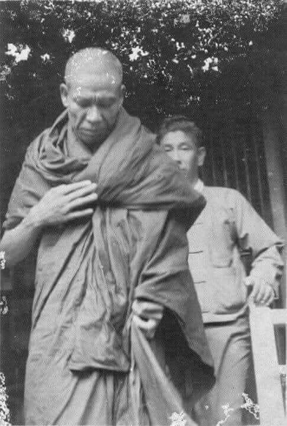
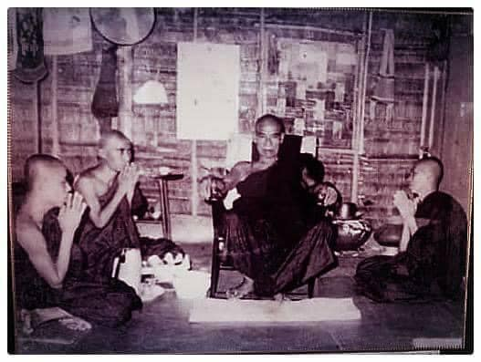
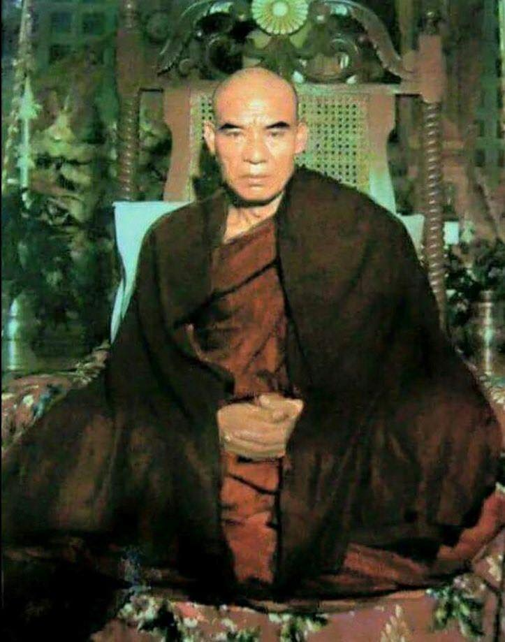
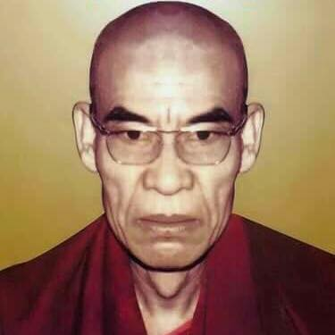
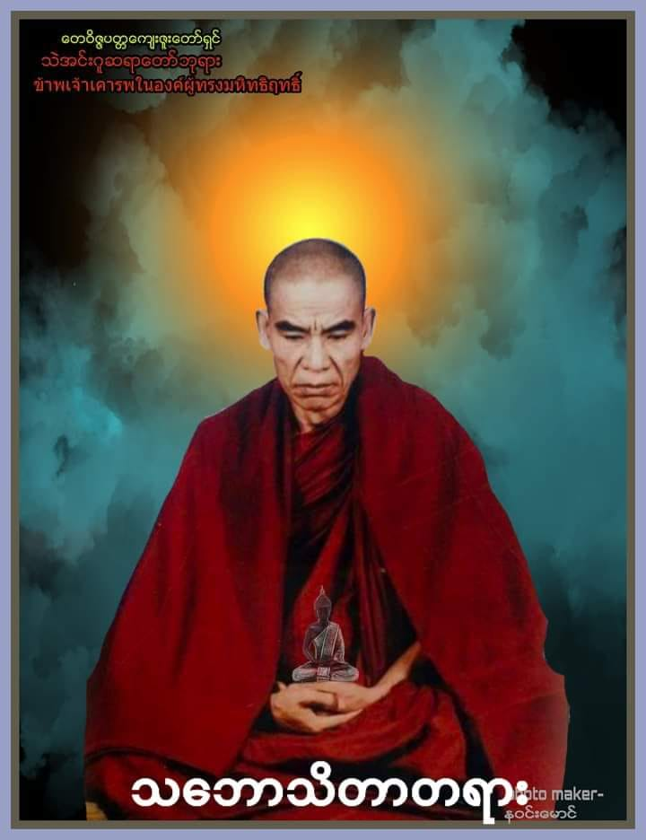